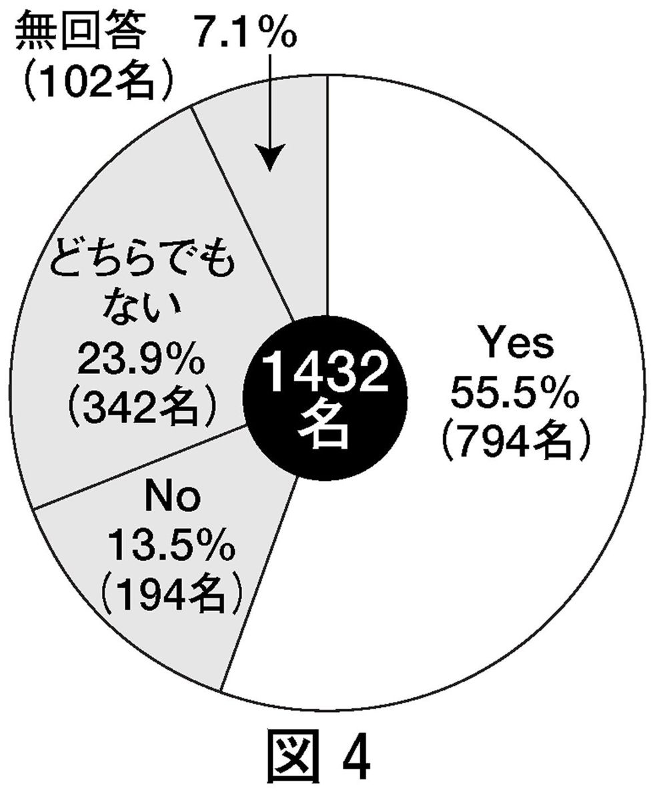
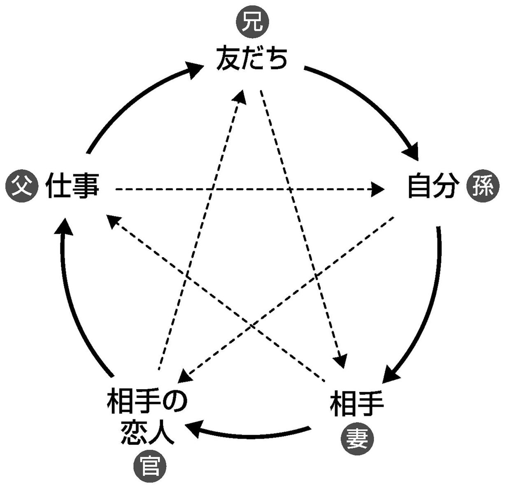
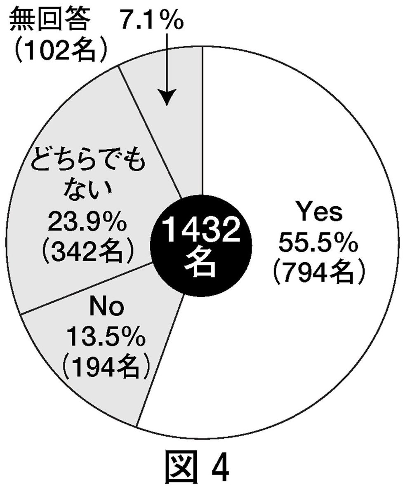
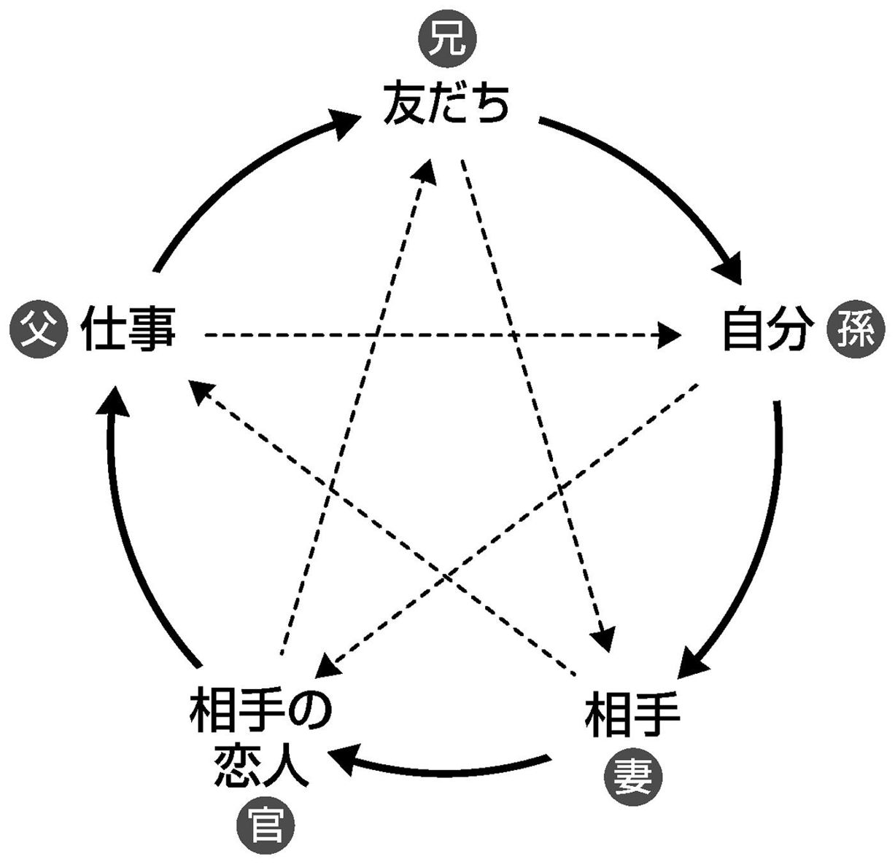

🏠
日
月
縦書き／横書き

「幸運」と「幸せ」は別である── あなたは幸せを探しているのでしょうか？
あなたは幸せを探しているのでしょうか？
だとすれば、本書はあなたの願いに応えるものではありません。本書は「幸運をつかみとる」ための本だからです。
「幸運」と「幸せ」を、あなたは同じものだと思っていませんか？
しかし、「幸運」と「幸せ」は似て非なるものなのです。少なくとも、これから語る「運命学」でいうところの「幸運」は、必ずしも「幸せ」とイコールで結ばれるものではないということを、あらかじめ頭に入れておいてください。
「運命学」でいう「幸運」とは、「お金をたくさん得ること」と「出世など名声運をつかむこと」の二本柱で構成されています。
じつは、だれでも六百年に十年間は、そのような「幸運」の時期が約束されているものです。しかし、たとえば二百歳で幸運期が到来しても寿命が尽きているので、その「幸運」は現実にはなりません。本書では、その「幸運」をいますぐにでもつかみとれる行動のテクニックを記しています。つまり、「財運」と「名声運」の二つをラクラクと手にする方法の指南書というわけです。
「お金と名声がラクにつかめるならば、それは幸せそのものではないか。どうして幸運と幸せとは違うん？」と、あなたは疑問に思うかもしれません。
しかし、運命学では「幸運」と「不運」を明確に区分しています。お金があることを「幸運」とします。名声を得ることを「幸運」とします。ですから逆に、お金がないこと、名声がないことは、たとえ本人がその状態で満足していたとしても、「不運」となるのです。
たとえば、売れない小説を書いている人は不運とみなします。その人が「いくら応募しても落選してしまうけれど、小説を書くのが楽しいから幸せだ」と力説したところで、運命学的には「不運な人」と判断されるのです。
ぼろアパートに恋人と住んでいる人も「不運な人」に該当します。「たしかに貧しいけれど、愛する人と仲睦まじく暮らすことのどこが不運なんだ」と反論されても、運命学においては、その人は不運な人とみなさなければなりません。
運命学は、本人の心のありようとは関係なく、第三者の客観的尺度を優先させるわけです。
ですから「お金はありあまるほどあるけれど、夫婦仲が悪いので困っている」という状態は、運命学では幸運の範疇に含まれます。同様に「親のあとを継いで会社の経営者として成功はしている。でも私は、ほんとうはアーティストになりたかった。その意味では非常に不幸な人間だ」と本人が思っていたとしても、運命学では「幸運な人」に分類されるのです。
運命を自由自在に操る学問── 人間には限りない欲望・向上心があります。食べて寝るだけならば、ほかの動物と同じですが、人間は「もっと豊かな生活がしたい」「便利で快適な場所に住みたい」「おもしろく、楽しい人生を送りたい」「やりたいことが思いきりやれる環境に身を置きたい」「一戸建ての家が欲しい」「ベンツを乗りまわしたい」などと、いろいろな願望を抱きます。そうした生活を実現したいからこそ、程度の差はあれ、大多数の人がお金持ちになりたいと望むのです。
しかし、ある程度、自分のそれまでの欲望や夢が実現したとしても、むしろ実現したからこそ、それでは満足できなくなります。「もっともっと......」と、人間の欲望はとどまるところを知りません。
そうした限りない人間の欲望があるからこそ、現在私たちが享受している高度な文明、便利な生活が実現したのです。科学の進歩も、土台にあるのは人間の欲望、向上心なのです。
月旅行ですら可能なまでに達した現代において、科学こそが真理であり、「神」ですらあります。そんな時代にあって、運命学などは非科学的なもので、迷信や占いなどといっしょくたにされて、百害あって一利なしとみなされることもあります。
とはいえ、逆に、科学万能の時代だからこそ、ある種の占いが遊び半分としても大いにもてはやされています。また、「あなたに不運が降りかかるのは、方位が悪いからだ。この壺を買えばその災いが払える」などといった、悪徳商法まがいの占いに引っかかってしまう人もあとを絶たないようです。
日ごろは占いや迷信など信じていない人でも、正月には初詣に出かけ、一年の「家内安全」などを祈ったり、子どもが受験生ならば合格祈願に行ったり、交通安全を願って祈祷してもらったりするでしょう。
それでも、多くの人たちは「運命学」という言葉を耳にすると、ほとんど反射的に、占いとかおまじないとか、迷信などの眉唾物をイメージしてしまうかもしれません。それらオカルトも運命学の一分野であることは事実です。しかし、すべてではありません。
運命学は、人間の運命を客観的にとらえ、それを学ぶことによって運命の本質を理解し、運命を自由自在に操る学問なのです。
「運命学」は人間の欲望を叶えるアプローチ── 現在、運命学が軽んじられ、あるいは蔑視されているのは、科学性がないことに起因しています。すべての科学は、データをあらゆる角度で検証し、一つの仮説を立て、それをさらに実験によって立証し、導き出された一定の法則を発表し合う学問です。
それに対して運命学は、なんら信頼すべき確固たるデータがないのに、いかにも唐突に物事を断定するため、「アヤシイ世界」とか「胡散臭い世界」と決めつけられ、隅に押しやられてきました。
たしかにデータ主義、または統計学重視の視点に立てば、運命学は理論性も説得性ももたないマヤカシと思われてもしかたありません。
しかし、あえて大げさな表現を使えば、じつは運命学の上にこそ、科学や政治やその他のいろいろなものが成り立っているのです。
古代シュメール人が星の動きから河の氾濫を予言した古事は有名です。最初、星は神々の意思のもとに動いていると信じられました。河の氾濫はその神々の意思によるものだと長く受け取られ、その神々に対する畏怖の念が、さまざまな祭りとなり因習となっていきました。
そこに、いや、星は一定の法則による天体の動きであって、神は存在しないという考え方が誕生し、科学と名前がつけられました。化学も同様です。石ころを黄金に変えようとする錬金術が化学の母体です。
宗教の誕生も、どうしたら悩みから解放され幸せになれるかという課題がそもそもの発端です。世俗と縁を切り、山にこもって悟りを開き、そこから現在の仏教をはじめとする宗教が生まれたのです。中国（共産中国までの）や江戸時代までの日本では、儒教思想や道教思想によって政治の基礎も成り立っていました。
心を解明する学問として、現代では心理学がさかんです。人間の抑圧された欲望のメカニズムなどがフロイトによって解明されましたが、科学的な実証性となると、まだまだです。
科学も宗教も政治もほとんどすべてのものが、人間の欲望を叶えようとする一つのアプローチであり、その意味では「運命学」を構成する一分野なのです。
そして運命学にも一定の法則というものは存在します。それは本書の中核となっている「五行哲理」（この理論については第４章でくわしく説明します）です。「五行哲理」の原則に当てはめると、人間の本質がおもしろいようにわかってしまいます。推理や推測などの想像力を必要とはしますが、データや統計学はいっさい不要なのです。
この点では、運命学と科学とは根本からして別次元の学問なので、これを混同せずに、頭を切り替えてから受け止めることが大切です。
もう少し、わかりやすく説明しましょう。
「明日の日曜日、遊園地に行く」ことを科学的な姿勢で検討してみます。すると、明日は休日で天気は晴れの予報だから、こういうときには混雑するのが、これまでの通例であるために、人気のアトラクションには長蛇の列ができるだろうといった予想が立てられます。
これに対して運命学的な見地では、遊園地には子どもが多い、子どもが多いと父親たちが疲れてしまう、父親たちが疲れるとレストランで休む時間が長くなる、父親がレストランに入ると浪費してしまう。浪費すると母親が文句をいい、母親が文句をいうと父親は不機嫌になり口論になる。不機嫌になったり口論になると帰り支度を始める......。だから、口論が始まる午後二時ごろからは、人気のアトラクションの行列は短くなるだろうなどと推論されることになります。
「風が吹けば桶屋が儲かる」的な推測も「五行哲理」をなぞりながら展開することが、「運命学」の特徴だと覚えておけばいいと思います。
客観的な視点からしか物事を見ない── もう一つ、運命学では欠かせない要件があります。
それは、実測可能なものしか判断できないことです。第三者の目で客観的に測定できる基準で判断するのが「運命学」の根本です。ですから売れない小説を書いているが、それで自分は満足だという人であっても、運命学から見れば、「成功していない」から不運な人という烙印を押されることになります。心を重視する心理学との決定的な相違点はここです。
恋愛をたとえに出すとわかりやすいと思います。
結婚について悩んでいる女性がいて、彼女は売れない小説家と熱烈な恋愛関係にあります。そこに資産家の青年実業家が登場してプロポーズされます。ふつうならとても迷うところでしょう。心の問題を重視すれば、貧乏より愛を選択して、売れない小説家と結婚に踏みきるべきかもしれません。
しかし運命学は、ひと言で「青年実業家との結婚を選ぶべきだ」と断定します。それは青年実業家のほうが、客観的に見てお金と名声に恵まれていることは間違いないからです。
「それでは身も蓋もないではないか！」と、あなたは思うかもしれません。
逆に、「青年実業家も、その女性を愛しているだろうから、それでもよいのかもしれない」と、自分を納得させることも考えられます。
そうした考え方を運命学は否定します。愛とか、心とか、そのような目には見えない曖昧な部分をすべて排除したところに、運命学の存在価値があるのです。ですから、身も蓋もないと思えてしまう判断がたびたび出てきます。
お金がないよりもあることが幸運。名声がある人間こそ幸運をつかんだ人──このように運命学は、決して情には流されない明確なモノサシをもっているのです。
「運」の存在をすなおに受け入れよう── この本は、あなたが「運」をつかむヒントを得ることを目的として書かれています。あなたは車やパソコンや電子レンジや、ｉＰｏｄやテレビや......例をあげると日が暮れるほどたくさんの科学文明を、その仕組みを理解せずに受け入れていることでしょう。それと同様に、科学で解明されていないからといっても、「運」の存在も、心のどこかで受け入れているはずです。
都市は人間のアタマの回路に似ているそうです。そう考えて見まわせば、オフィス街やショッピング街、病院、歓楽街、寺町通りなど、さまざまな「神経」や「器官」が都市には入り組んでいることに気づくでしょう。
おもしろいのは、現代建築の粋を集めた都市のなかに、神社が点在していることです。東京の大手町にある将門塚は、ビルの一角を削ってまで大切に祀られています。ご存じでしょうが、平将門は平安時代に朝廷に反抗して敗れた武将です。その首塚を侵したため、土地を所有する会社が倒産したり悲惨な目にあったことから、いまでも畏れられているのです。
広島の原爆ドームは、過去の悲劇を忘れないための教訓として保存されていますが、都市に点在する神社はそれとは意味あいが違います。原爆ドームが、いわば経験則としての意味をもつのに対し、神社が存在するのは、そこになんらかの「ご利益」があると考えられている証拠ではないでしょうか。でなければ、人間の記憶と同じく役に立たないものは消えてしまうはずです。神社の存在は、いまだに人間が「運」「不運」を信じている現れです。
都市づくりと同じく、私たちのアタマでは、理屈では説明できない「運」というものを無意識に受け入れているところが大きいのです。
正月になると神社は初詣客でにぎわい、受験前には合格祈願の絵馬が飛ぶように売れる。年末に書店に並ぶ「暦」は隠れたベストセラー。その暦に書かれている「大安」や「仏滅」などの六曜によって結婚式の日取りを決めることは常識です。子どもが誕生すると姓名判断の本を買ってきて、よい名前を考えたりもします。日ごろ迷信や占いなどまったく信じていなくても、なんとなくそうしているのではないでしょうか。
私は企業に招かれ、「この商品はどうして売れなかったのか」と質問されることがたびたびあります。データを分析し、お客様のニーズに合わせ、有名な人にネーミングしてもらったのに、さっぱり売れないというケースです。
答えは一つ。
「運がなかったのです」
まるで身も蓋もない回答ですが、情報だけを重視し、「運」について十分に検討しなかった場合にこのような問題が発生します。データも情報も、ありとあらゆるものが「運」の一分野であることを忘れたために起こった事例なのです。
心の作用が「運」に働きかける限界── 運命学の欠点は学際性のないことです。あとで述べる「五行哲理」によって、すべてを推理することが運命学の特徴なのですが、データを持ち寄って意見を戦わす場がないことが、運命学を胡散臭いものとしているのは否定できません。
私はあるギャンブル雑誌の監修を十年ほど務めています。ギャンブルほど「運」と密接にからんでいる分野はないでしょう。人間関係をうまく操作して目的を達成するというような恣意性はなく、「運」そのものだけが頼りの世界です。前回勝ったとしても、その勝利は次回になんの影響ももたらしません。運を究明する題材としては最適です。
そのギャンブル誌の誌上で二〇〇一年から二年間、「運」に関するデータを収集しました。
図１をご覧ください。
★「今日はなんとなく勝てそうだ」と思ったときに勝つ場合が多いですか？
こういう質問をしたところ、「イエス」の回答が二七・五パーセントでした。
さまざまな雑誌や書籍で、「ポジティブ思考になることが成功の秘訣！」といった意味の内容をよく目にします。明るく希望をもって生活することこそ目的達成のカギであることを強調されると、「ほんとうかもしれない」と思い、イヤなことがあっても無理やり前向きに生きようと努めます。
しかし、結果はポジティブであっても、よいことが起こるのは、せいぜい三〇パーセント程度であることが示唆されています。最近もてはやされている「心のケア」とか「心の癒し」を実践し、それに成功したとしても、よいことが起こるとはかぎらないという証拠となるデータかもしれません。
では、ネガティブ思考ならばどうか。図２がその設問です。
★「今日は負けそうだ」と感じたときは、ほんとうに負けてしまいますか？
今度は「イエス」の回答は五三・五パーセント。五割以上が、ネガティブな状態で勝負に挑むと惨敗になると感じているデータです。
マイナス思考でいては運から見放されてしまうことが、このデータから読み取れます。
ここからわかるのは、少なくともポジティブでいるほうが、運をつかむには多少は有利であり、反対にネガティブ思考では、やはり失敗しやすいということです。
その意味からすれば「ポジティブ思考は成功の秘訣！」という考え方も捨てることはできません。
逆に不運に泣く人が、なかなか不運から抜けられず失敗を重ねるという現実は、ネガティブ思考のクモの巣にがんじがらめになっているからなのでしょう。「心のケア」や「心の癒し」は最悪の結果にならないための、運における消極的なアクションとも解釈できます。
お金の有無が「運」におよぼす影響── 成功のポイントは資金の有無。お金のある人は何をやってもうまくいく。お金持ちにはかなわない。貧乏人はどんなにあがいてもダメなのさ......。
このような不文律が暗黙のうちに成立しているのが、この世の中です。しかし、なかには無一文からチャンスを得て、わずかの期間に何億円も稼いだ成功者がいるのも疑いようのない事実です。
資金は運に対してどのくらいの影響力をもつのか。それを調べました。図３です。
★資金に余裕のあるときほど勝つ場合が多いですか？
こういう質問をしたところ、「イエス」の回答が五一パーセントでした。資金があっても負けると回答した一九・一パーセントを大きく上まわる結果です。やはり資金力は、運に直接プラスとして作用するのかもしれません。
しかし、資金に余裕があってはじめて勝敗が五分五分ということも、このデータは教えています。お金に余裕があることは有利にはちがいないけれど、絶対的な条件ではないのです。
では、反対に資金がないときはどうなのでしょうか。
★財布の中身がさびしいときほど負ける確率が高いですか？ 図４
資金がないときは負けこむと回答した人は五五・五パーセントにのぼります。反対にないときでも勝てるという人は、一三・五パーセントです。資金力不足では負ける可能性が高まるととらえられるでしょう。
資金があるときとないときを比較すると、資金がある場合の勝率は五一パーセント。資金がないときでも勝てると答えた人が一三・五パーセントですから、やはり資金の有無は運に強い影響力をもっているといえそうです。

以上の二つのデータは、「成功のポイントは資金力である」という不文律に、「しかし絶対ではない」との留保をつける結果になったかもしれません。資金のない場合は限りなく敗北の危険性が高まるけれど、資金があったとしても、せいぜい五分五分の成功率だからです。
大企業が倒産したり資本家が没落する例を、私たちは新聞やテレビで見かけますが、結局は五分五分の勝負に敗れたためだと解釈できます。お金があることは優位にはちがいありませんが、お金をもっていてはじめて、勝率二分の一という立場を確保したにすぎません。
ここで気になるのが、無一文からスタートして成功者にのしあがる人たちの存在です。運をつかむには別の要素が関係しているのかもしれません。
世の中で運をつかむ割合は一〇人に一人── 湘南に自宅をもつ私は、東海道線のグリーン定期券を使用して、東京の事務所まで毎日通っています。最近、普通定期券でもグリーン料金を支払えばよくなりましたが、それまでは普通定期ではグリーン車には座れませんでした。格安になったぶんだけ混雑するようになりました。
ところで、このグリーン車ですが、一五両編成に二両設けられています。全体に占めるグリーン車の割合は一三・三パーセント。グリーン車で通勤している人たちを、一般的な視点で成功者とみなせば、約一三パーセントの人が運をつかんでグリーン車に乗れる階層と判断できます。
ここで、先ほどの四つのデータを見なおすことにしましょう。
そのなかの「ネガティブ思考のときに負けるか？」という図２。
「負ける」と回答した人は五三・五パーセントでしたが、ここで注目したいのは「それでも勝てる」と回答した一一・八パーセントという数値です。つまり、この一一・八パーセントの人は、ネガティブな状態であっても「勝てる」、つまり運をつかめるのです。
さらに「資金力がないと負けるか？」という図４。
ここでも、資金が不足していても「勝てる」という人が一三・五パーセントいました。この一三・五パーセントは資金の有無にかかわりなく勝てる人たち、やはり運をつかめる人たちなのです。
すなわち、ネガティブ思考でも、資金がなくても勝てるという人が、一一～一三パーセントくらいいるのです。つまり、このデータから推論できるのは、いかなる条件でも運をつかむ人が、全体の一一～一三パーセントはいるということです。
私は、さらに次の質問をぶつけました。図５です。
★勝利は、自分の直感の冴えや周期と連動していますか？
すると、ここでも一三・二パーセントの人が「ノー」と回答しています。つまり、カンや周期とは関係なく、一三・二パーセントの人たちが運をつかんでいるのです。
★勝率は、ツキによって変動しますか？ 図６
またしても「ツキに関係なく勝つ」という人たちが、一一・九パーセントです。
これらのデータからわかるのは、どのような状況であれ、一割強の人が運をつかむことができるということです。
ギャンブルでどのような状況でも勝てると答えた人と、グリーン車に乗れる人の割合だけで運をつかむ人の割合を判断するのは、早計だといわれるかもしれません。しかしギャンブルというのは、その人の運がはっきりと結果として出るものです。
以上のデータのほかにも、二年間にわたって、いろいろな角度から運の割合を調べましたが、どれもみな、一〇パーセント前後の人たちだけが、周囲の状況や環境などに関係なく、幸運を射止めることで一致していました。正統な方位学でも、それを正しく使えば、たとえば学校の成績でも一〇〇人のうち一〇位以内に入れる方法が伝えられています。
ナンバーワンになることは難しくても一〇パーセントの範囲内に入るのは、本書を熟読し、運のメカニズムを理解すれば可能です。
そこで、一〇人に一人が運をつかむことができると考えてみましょう。この値を「運の黄金率」と呼ぶことにします。つまり、一〇倍の倍率です。
そうとらえれば、運をつかむためには一〇人のなかでトップに躍り出ればいいのです。そのためには、黄金率が示す一割の階層に入る方法を知ればいいことなのです。そして、そのヒントは本書にくわしく記されています。
あなたが「よーし、運をつかみとってやるぞ！」と拳を握り締めた、まさにその瞬間から、あなたのチャンスが開けるのです。
あらためて確認しておきますが、本書は、人類が長年の経験から培ってきた経験則を五行哲理によって解釈し、お金や名声を効率よくつかみとることをめざして書かれています。恋愛の成就とか、家庭内の愛といった心理面の「幸せ」を追求したいのであれば、残念ながら、そのご要望を満たすことはできません。
その代わり、いままで自分には無関係な夢のような話だとあきらめていた幸運が、明日にでもあなたに到来する可能性は高まります。この一冊を読み終えたとき、おそらく自分の内部で何かが変化していることをあなたは自覚するはずです。
お金を求めるか、出世をねらうかを決める── 本章では、まず幸運をつかむための基本的な考え方を述べていくことにします。
運命学から派生している四柱推命などの占いは、「財」と「官」の二本柱から成り立っています。「財」とはお金のことです。「官」とは出世を意味します。自分はこの二つのうち、どちらを目標に生きていけばいいのかをまず決定することが、幸運をつかみとるための第一段階です。
ところが、これを混同しているのが、私たちの常です。お金をつかめばえらくなれそうな気がしますし、出世をすれば同時に経済面でも満たされるように思われがちです。
結果的には、そうかもしれません。しかし、スタート時点でこの二つを混同してしまうと、じつは幸運を逃してしまうことにつながります。
自分はお金を目標にしようと決めたならば、見栄や外聞を捨てなければなりません。プライドなどに左右されてはいけないのです。電車のホームに一円玉が落ちていたなら、恥ずかしがらずにそれを拾うことです。購入しようと思っていた雑誌が電車の網棚に捨てられていたなら、それを拾うのです。
もし出世を目標にしたいならば、金銭欲はいっさい捨て去ることが必要です。出世は目上の人にかわいがられることが条件ですから、つねにペコペコしなければなりません。目上を大切にすることはもちろんですが、目下にもやさしく接して信頼関係を築くことを生活の重点とすることです。
ただし、同僚に対してだけは全力で戦うこと。だからといって、汚ないことに手を染めてはいけません。いつなんどき、同僚にそれを暴露されるかわからないからです。清廉な生活を営みながら同僚をつぶしていく冷酷さこそ、出世を目標とする人の生きる道です。
極端な言い方になりましたが、この二つの道を明確にすることで、はじめて幸運を獲得するスタートラインに立てるのです。
学歴がないほうがかえってよい── なまじっか学歴があると、自分は「財」を目的とすべきか、それとも「官」を最優先とするかで迷ってしまうものです。そして結局は、どっちつかずの生き方をしてしまうのです。
かえって学歴がない人のほうが、その点の迷いはありません。学歴がなければ出世は望めません。ですから「財」を目標にするしかありません。
「いや、あるはずだ」「そのような考え方は間違っている。学歴がなければ出世ができないというのは、あんまりな言い方ではないか」「人間は努力さえすればできないものはないのだ」などと反論したくなるでしょう。
しかし、現実問題として、まだまだ学歴に対する偏見はきわめて高く、また学閥というものが、依然としてしぶとく存在しているのも事実です。低学歴を覆してやろうと努力するのは、無駄な抵抗というものです。
ここはスパッと割りきり、「財」を人生の目標にすることこそ、学歴のない人や無名の学校を卒業した人が成功するためには、きわめて大切な戦略なのです。
もしも学歴がないのに官庁などに勤務していたとしたら、頭から「出世」の二文字を消すことです。趣味を窮めてサイドビジネスへと人生の軌道修正を図ることが、幸運への直行便となるでしょう。
幸運をつかむ生き方には五つの種類がある── 幸運になるためには、次の五つのなかから自分に適した生き方を見つけて、それに徹底する必要があります。
 協調関係を重視する生き方
協調関係を重視する生き方
サービスに徹する生き方
 人に命じる生き方
人に命じる生き方
つねに下手に出る生き方
 知識を伝える生き方
知識を伝える生き方
は仲間意識を前面に出しての生き方ですから、友だちどうしのトラブルなどは絶対に慎まなければいけません。
は相手を喜ばせることで信頼を勝ち取り、そこから幸運を呼び込む生き方です。自分がたとえ疲れていても、つねに相手の楽しみを優先しなければいけません。
は迫力で世の中を渡っていく生き方です。どんなに不安があっても堂々とした態度が必要となります。
は権力に従順である生き方。不平不満があったとしても、それを表面に出してはいけません。
は人にものを教えることを喜びとする生き方です。自分はあくまでも脇役である、参謀的な姿勢です。
これらの生き方を徹底することで、幸運に近づくことが可能です。運命学は人相学を含んでいますが、以上の生き方のどれかを選択し徹底することによって、人相が単純なものになるといわれています。すると、ネコやヘビやクマなどの動物に雰囲気が似てきます。似顔絵が簡単に描けるほど特徴のある顔つきになるものです。
このような人相になると幸運はすぐ目の前です。反対に特徴のつかめない人相は、運勢的にも弱いとされます。
努力＝成功ではない── 人間は「努力」という言葉が大好きです。不幸な境遇を努力によってはねのけ成功者となる物語を、非常に好む生き物です。失敗すれば「努力が足りなかった」と反省したりします。成功したときは「自分の努力の賜物だ」と自信満々になります。
運命学は「努力」という言葉を否定しています。すべては運命なのだという考え方だからです。
努力＝成功という図式は、運命学では認められません。
努力して成功するならば、だれも苦労はしないのです。努力してもダメだから悩むのです。絶望するのです。努力は決して成功とはイコールで結ばれません。徒労になってしまうことのほうが圧倒的に多いのです。
夢に向かって邁進し、それが成功する場合もあるでしょう。でも、それはたまたま成功しただけの話なのです。
成功するには、運が味方していなければなりません。それなのに、成功したことを自分の努力の成果だけと過信するのは、運命に対する冒涜となります。
努力を重んじる人は、運命を軽んじる傾向があります。
「オマエはオレのように努力しなかったからダメなのだ」と、失敗した相手を詰ることになるでしょう。それは聞き手にとって、じつに耳の痛い言葉です。いや、反感すら覚えるでしょう。なぜなら、努力しても成功しないケースがこの世の大部分なのですから。
「努力」という言葉を口癖のように使えば、周囲に妬まれたり反発を受けることになります。それは自分の運命を無意味に傷つける結果になるでしょう。
「いやいや、たまたま運がよかっただけさ」と、成功を努力ではなく運のおかげだと考えるほうが、ずっと聞き手には快いものです。
「今回は運がなかったようだ」と、失敗を運が味方しなかったからだと認識することで、いたずらに自分を傷つけずにすむことにもなります。
自分の生活と関係ないことにはパワーを使わない── 現代は情報化社会だといわれていますが、実際には、自分にとってほんとうに必要な情報がほとんどないのが現実です。
テレビのチャンネルもデジタル化されて、膨大な量にふえていますが、どのチャンネルをまわしても、まったくといっていいほど自分には無関係な情報だけが流されています。明日の天気予報くらいが、せいぜい関係あるものです。
しかし私たちは、その関係のないテレビをせっせと観たり、一度も話したことのない選手が出場するスポーツ番組に釘づけになって観戦したりします。自分とは無関係なことに、時間とパワーを浪費しているのです。
運命学では、これらを悪だと決めつけます。
時間の浪費は、人生の浪費に等しいのです。たかがテレビではないかと思うでしょうが、一日三時間テレビを観ることは、一カ月で九十時間。一年間に直すと四十五日の損失にのぼります。これを十年間続けると四百五十日の損失、一年以上もの期間を、自分とは本来かかわりのないことに費やしている計算になるのです。
時間ばかりではありません。自分の生活にかかわりのないことに時間を浪費することを、ごく当然のように受け止める精神状態になってしまうのです。情報に頼りきり、自分のカンをダメにすることも考えられます。
テレビを例にとりましたが、そのほかにも、新聞を読んだり選挙の投票に行くことも、運命学では無意味なこととされています。
離婚を罪悪とは考えない── 運命学では、男女の関係を永遠に続くものとはとらえていません。限られた時間内で楽しむ関係としています。そこが儒教とは一線を画す点です。
私たちは、結婚したらその関係は死ぬまで継続することが善であり、多少不満があっても、それを二人の力で乗りきることが大切だという考え方に毒されてきました。
「いや、芸能人はよく離婚するではないか。もう離婚は当然の時代なのだ」と思うかもしれません。しかし、離婚がネタになるのは、まだ私たちが離婚に罪悪感をもっている何よりの証です。
だいたいにして生まれた場所も、育った環境も違う男女が、永遠に暮らせる道理がありません。愛情があるうちだけの関係なのです。
もしも、二人の関係に愛情がなくなったならば、離婚する必要があります。一組の無意味で悪い関係が解体されて、いずれ二組の良好な関係が構築されるというのが、離婚に対する運命学の前向きな考え方なのです。
愛情のない寒々とした関係を我慢して維持するほうが、どうかしています。離婚を肯定的に受け止めることによって、運は順調に伸びていくのです。
本音でものを考える── これまで述べてきたことからもおよそ察しはつくでしょうが、運命学は人間のダークな本性を暴く学問です。
これは私の経験談ですが、運命学を学びはじめたころは、ひどくやせ細って、とてもオドオドした性格でした。「こんなことを口にしたら失礼ではないか」とか「こんなことは考えるだけで悪いことだ」などと、自分を勝手に規制していたものです。
当時、私はサラリーマンでしたが、月曜日になると職場に向かう電車の中で、必ず胃腸の調子が悪くなり、途中下車して駅のトイレに駆け込まなければなりませんでした。それが神経性のものであることは自覚していました。
しかし、運命学を学びながら、師匠から「オマエは他人の不幸を喜ぶようでなければ本物になれない」と指弾されたのです。
師匠はそのほか、ここでは書けないようなことも、いろいろといいました。
「自分さえよければそれでよいのだ」
「経営者は社員の人生のことなど考えるはずがない」
などは軽いほうでした。
あとで考えれば、その暴言の数々は運命学の基本的な思考を極端に表したものでしたが、私にとっては衝撃だったのです。それも、激しい爽快感をともなうものでした。というのは、いつも心の奥底では考えているようなことばかりだったからです。
そのような本性の部分をさらけだすことによって、知らず知らずのうちに幸運が備わるものです。考え方がコンパクトになり、自分の目標がハッキリしてくるのです。
自分の本性を抑制するものはモラルや道徳です。それらは運命学とは相容れないものです。道徳やモラルは、権力者が部下たちを従えるために使用する、一種のマインドコントロールといってもよいものだからです。
その呪縛から解放され、本音でものを考えることが幸運への直線コースなのです。
お金こそ心のつながりである── お金は土の中に埋まっているものではありません。道端に落ちていることも、ごくまれにはあっても、お金を拾って生活することはできません。お金は財布の中に、あるいは銀行に大切にしまわれているものです。
お金を手にする場合には、振り込んだり、財布を開くという動作、つまり相手の心が、お金を払おうという方向に向かないかぎり、こちらの手に渡ることはありません。このことはだれにでもわかる当たり前のことです。
しかし、あまりに日常的なことなので、お金と人の気持ちをリンクして考えることを忘れてしまっているものです。
また、お金は自分の力によって獲得した、いわばパワーが形になったものです。パワーの源は命ですから、お金が命の次に大切なものだという表現は、あながち大げさなものではないはずです。
それほど大切なお金をくれる人は、まさに神様です。嫌いな人にお金を渡すでしょうか。好意を感じる人でなければ、その商品がよいものだとしても二の足を踏んでしまいます。心がつながっていてこそ、売買は成立するものなのです。
これがお金を獲得し、幸運を手に入れる基本的な姿勢です。
しかし、心と心が通い合わないお金の授受も存在します。
一つはギャンブルです。もう一つは株式投資です。それに加えれば、スポーツなど特技を利用して得られる賞金です。
心と心の交流の不得意な人たちは、すべてこの三つの方法によってお金を獲得するのに熱中することになります。でも多くの場合、この三つはツキが勝負のカギです。しかもツキが連続して到来しないと、結果的に損する性質を帯びています。
事実、ギャンブルでトータルの収支がプラスになっている人は少なく、どこかの時点で大損害を被る例を、ギャンブル誌の監修を十年以上務めている私はいくつも知っています。株で大儲けしたとしても、いずれは損をすることになるのが現実というものです。
株を買い占めて会社を買収する新手の商売が横行していますが、その内情は意外に火の車であるケースが多いものです。傍目では何百億も儲けているように見えますが、無理やりにでもほかの会社を買収しなければ経営が苦しいというのが実情のようです。やがては仰向けにひっくりかえることになるかもしれません。
なにしろ会社を乗っ取って人から恨まれないわけがなく、心と心の交流が金運の基本だという根本原則に逆らっているわけですから。スポーツ選手についても、現在の金運をキープするためには自分の実力以上の力を発揮しつづけなければなりません。しかし、寄る年波には勝つことはできず、悲惨な末路をたどる例も決して少なくないのです。
周囲から好かれなければお金を儲けることは不可能ということになりますが、万人に好かれるのはとうていムリです。そこで考えられるのは、会社という仮面をかぶる方法です。会社という無機質な仮面をかぶることで、好き嫌いという感情を超えてお金儲けができるかもしれません。
しかし、方法を変えたとしても、お金が人の心とリンクする現実からは離れることができません。
本音でものを考え、本性をさらけだすことが必要であるとはいいましたが、他人の心をまったく顧みるなといっているのではありません。お金をひたすら追いかけるよりも、まずは相手の心をつかむことに集中することが結果的にお金儲けにつながります。周囲から愛される人、人気のある人の行動をつぶさに観察することが大切なのです。
「前世」や「霊」などは信じない── 運命学は実存的な立場をとっています。自分の目で見ないものは信じないという立場です。
月旅行が現実にビジネスになりつつありますが、運命学の立場では、自分が月面に降り立つまでは、人類が月に行ったことを信じてはいけないことになります。つまり、他人の情報に流されるなというのが運命学の基本です。
テレビなどの報道には、どこか恣意性がブレンドされていることを、運をつかむ人は無意識で悟っています。
よく、古いタイプの占い師は「墓場だったところには家を建ててはいけない」などと、もっともらしく語っていますが、これがほんとうだとすれば、地球のどこにも家は建てられないことになります。東南アジアではいまでも、雨期には海の上に粗末な家を建てて暮らしている海上民族がいますが、彼らはきわめて幸運ということになります。
地球に生物が誕生してから、どれほどの生物が死んだでしょうか。人類が誕生してからどれくらいの人が死んだでしょうか。いま生きている何万倍、何億倍もの人たちが、この地球で死んでいるのです。地球は足の踏み場もないほどの死者たちの屍で埋め尽くされているはずです。むしろ墓場の上にしか家は建てられないのが常識です。
祟りとか幽霊とかに気をとられている暇があるならば、一円でも多く獲得することに集中すべきです。
肉体と魂を分けて論じる霊能者と称する人びとも信じるに値しません。暇さえあれば前世、前世と連発するほど愚かしいものはないのです。現在、不幸なのは、前世の行いが悪かった報いなどというのでは、笑い話にもなりません。もしもそうならば、災害や犯罪で幼くして亡くなった人たちはみな、前世の祟りなのでしょうか。
霊が存在するとかしないとか、そんな議論は時間の無駄です。死ねばわかることです。
運を確実に獲得するためには、魂も肉体の一部だと思い込むことです。肉体が滅びれば魂も消えるものだと断定してしまうことです。そういう姿勢になれば、死ぬまでの時間、つまり一秒一秒がきわめて貴重な重さとして実感されることでしょう。ボンヤリして時間を浪費することがなくなるぶん、幸運をつかむことに専念できるというわけです。
不要なものは捨てる── 幸運を獲得するには単純であることです。アタマの回路が単純であれば、幸運へとスムーズに着地するものです。
そのためには、部屋にある不要なものを思いきって捨てることが大切です。
靴と下着と寝具。それにパソコンがあれば、あとはすべて不必要なものばかりです。そうした不必要なものいっさいを捨てることによって、幸運の到来をハッキリと自覚できます。
運のない人の思考回路は、その部屋そのものです。ゴチャゴチャと余計なものがあれば、思考回路も迷いと悩みで満杯状態になります。
街並みを連想してください。旅行先の見知らぬ街で道に迷うのは、そこに不要な建物があるからです。建物も道路もなく焼け跡のようになっていれば、目的地がすぐにわかり、一直線に向かうことができるではありませんか。
棚の奥に埋もれているその古いＣＤはいつ聞くのでしょうか。壁に貼ってあるポスターのタレントと恋愛ができるとでも思っているのでしょうか。ワインの空き瓶は何に使うのでしょうか。花でも飾ろうとしているのですか。仏壇を置いて毎日拝んでいれば、先祖が幸運を運んでくれるとでも信じているのでしょうか。むかし買ったスーツはダイエットしてから着るつもりですか。その複製の絵画は何なのでしょう。偽物の絵を眺めて、心を潤わせようとでもいうのですか。
どんどん捨てるのです。文庫本など二度と読むはずはありません。ベッドなど部屋のスペースをつぶすだけの存在です。自分でつくったわけでもない映画のパンフレットも、ゲームセンターで取ったぬいぐるみの人形も、放り投げてしまうのです。
部屋がスッキリすれば、運勢もスッキリします。
好きなことと適職とは違うことを明確にする── 人生を誤って、取り返しのつかないものにしてしまうことの一つに、好きな道を貫こうとする姿勢があります。
音楽が好きだから音楽の道を。空想するのが大好きだから小説家の道を。法律に関することが好きだから弁護士の道を......。こうやって、いままで何人、いや何億人の人たちが自分のほんとうの運命を捨て、最悪の生き方をしてきたことか。その道を好きになったのは、ほとんどが小学生のときに絵で金賞を獲ったとか、夏休みの作文を褒められたとか、学級委員長を務めたという、いってみればお粗末で未熟な体験に支えられているものばかりです。
私は、司法試験の突破をめざしながら不合格を続けてきた人を何人も知っています。なかには二十年以上も試験に取り組み、まるで弁護士試験の勉強をすることがライフワークのようになっている人も見てきました。
こんな事例もあります。大手の企業に勤めていたアマチュア・カメラマンがいました。彼の交際範囲は広く、イラストレーターやライターなどの自由業の人たちと飲む機会も多く、内心ではサラリーマンである自分に劣等感があり、いずれは自分もカメラマンとして自由業の仲間入りをしたいと望んでいたようです。
そんなとき、新聞社の主催するコンテストに入賞しました。彼はチャンスだと思い、会社を辞めてフリーのカメラマンとして生きる道を選択したのです。
そして、知り合いに出版社の編集長を紹介してもらいました。しかし、編集長は彼の写真を見るなり、「芸術写真はどうも......」と突き返したのです。それでも、彼はあきらめず写真を撮っては、編集長に送りつづけました。結果はどれもＮＧ。彼は芸術写真は撮れても、プロとして必要な商業写真を写すことはできない人間だったのです。
好みと適職がピタリと一致している人は、ごくわずかです。ほとんどは、好みと適職がかなりズレているものです。極端なケースでは、好きでも、その才能に乏しい人もいます。それでも好みに固執するのは、運命の流れに逆らうようなもの。奇跡も幸運も訪れることはありません。
ちょっとした仕事で早い時期に頭角を現す
その分野での仕事に疲労を覚えない
一つの仕事が終わってもパワーが残っている気がする
以上の条件に合致する仕事こそ、適職です。
もしも、好みだけでその道を歩いていると感じたならば、すぐに方向転換を図る行動に出ることが大切です。
学生時代のポジションを考えよ── 人間には定位置があります。この世に誕生した瞬間に、人間関係という網の目のように入り組んだ社会の、どこに属するのかが決められています。
ある人は指導的な才能を有して誕生し、どのような環境にいても、つねにリーダーとしてのポジションを与えられます。またある人はアウトサイダー的な、社会に対していつも少数派として非難する役目を背負わされています。あるいは、争いを避け平和を優先するばかりに、軟弱な態度で中道路線を歩む人もいます。
これらのタイプは、意識していてもなかなか変えられるものではありません。心を新たにして自分を変えようとしても、いつのまにかいつものポジションに収まっているものです。たとえばギリギリの成績で進学校に合格した人でも、その人のポジションがリーダーであれば、やがては余裕で入学できた人を追い抜いて頭角を現すはずです。その逆ももちろんあります。そんなことは、いまさら説明するまでもないでしょう。
おそらく人類が自分たちを守るために、どんな環境でもだれかが生き残れるよう、進化の過程でつくられた役割分担なのかもしれません。もっと拡大すれば、地球上の生命体が、あるものはネズミ、あるものはゴキブリ、あるものはクジラ、あるものは桜というように形を変えて存在するのは、さまざまな環境の変化に襲われても、そのどれかの種族は生き延びることができるようにするための大自然の知恵なのかもしれません。
そのように、人は自分のポジションから脱け出せないのです。
では、自分はどのポジションを受けもって存在しているのか。それは学生時代のクラスで、どんな役割をしていたかを知ることによって明確にわかるものです。学生時代という、同年代の人間が一堂に集まる、まことに奇妙で不自然な環境は、まさにそのポジションを如実に知らしめる働きをもっています。
運を確実につかむためには、学生時代の自分のポジションを知り、同時に、周囲から相手のポジションをそれとなく聞き出すことに、その基本があります。
いつもは消極的だけれど、文化祭では張りきるようなエピソードがある人であれば、その相手は、あなたがピンチのときに必ず助けてくれる存在になるでしょう。一方、日ごろは学級委員長でリーダー的な存在だったのに、面倒なことには逃げ腰になったエピソードを聞けば、その人はここ一番の際に、あなたを裏切ることになるかもしれません。
自分の人生の時間をつねに考えておく── 運命学において、「死」は最悪のものとしてとらえられています。
悲惨な運命を背負って生まれてきた人も、その人の誕生日のチャートを見ると、不思議なことに、ちゃんと生まれるべくして生まれたような配置になっていることに驚かされます。
人間には死期が三度めぐってきます。その時期は個々で異なりますが、だいたいは二十歳前に一度、次は六十歳を前にして、最後が七十歳過ぎにめぐってきます。多くの場合、第二死期で亡くなるようです（最近の日本人は寿命が長くなって、最後の死期になるようですが）。
自分の死期をある程度的確に知ることは、絶対に必要でしょう。そのためには四柱推命なり、西洋占星術などを自分なりに勉強することはおすすめできます。
人は必ず死ぬのです。それは、いまさらいうまでもなくだれでも知っていることです。しかし、自分にも死という現実がいずれ来ることを思い起こすのは、身内の死に直面したときくらいのものでしょう。
死ほど個人的なものはありません。親が死のうと恋人が死のうと、あるいは子どもが死んでも、それは結局のところ他人事です。自分という存在は、そこに残っているのです。しかし自分の死は、すべての終わりを告げます。自分をとりまくすべてが、自分の死と同時に消滅してしまうのです。世界も宇宙も自分の死と同時に消え去るのです。
もしかすると、じつはこの世は自分の幻想で成り立っているのかもしれません。この世には自分しか存在せず、見えるものも触れるものも、すべて幻なのかもしれません。要するに自分はこの世の主人公、いや創造主とも考えられます。
このように考えると、一時の恥などというものが、まったく無意味なことに思えるはずです。あなたは恥をかくことを必要以上に警戒し、やりたいこともできない自分をつくりだしているのではないでしょうか。それはまるで、他人のために生きているようなものです。それでは、死ぬ直前に後悔することは目に見えています。
自分の死期を想像し、残されている日数を計算してみましょう。もちろん自分の死期など正確にわかっている人はいないでしょう。そうだとしても、自分の現在の年齢から、たとえ平均寿命まで生きられたと仮定したところで、それほど長い時間は残されていないことがわかるはずです。いま二十代の若い人であっても、いつ死が訪れるかはわからないし、六十前後で死ぬとしたら、それほど時間が膨大にあるものでもないことが痛感できると思います。
幸運を得るためには、そのような有限の時間を逆算し、いまできることを行動に移さなければならないと焦る気持ちをもつことも、じつは大切なのです。
隣近所にはよい人間を演じる── 本章では、幸運をつかむための生活法を具体的に述べていくことにしましょう。項目によっては、「五行哲理」による解釈をつけてあるものがあります。五行哲理とは、運命学の理論の基礎になっているものです。
「ほんとうにこんなことで幸運をつかめるのだろうか？」と疑問に思う方法も少なくないでしょうが、それぞれ、その理論に裏打ちされています。すべてを解説すると煩わしくなりますので、いくつかにとどめています。
それらを飛ばして読み進めていただいてもかまいません。第４章を読んでから、もう一度戻って読み返していただければ、意味がよくわかると思います。
前章で、本音でものを考えることの重要性、ときには暴言を吐き、自分の本性を顕わにすることが幸運を獲得する基本姿勢だと述べました。
しかしそれは、ご近所づきあいに関しては別です。運命学では、隣近所の人たちには、仏様のように慈悲深い人間だと思われなくてはならないという条件がつけられています。近所の評判が悪ければ、幸運をつかみとるための基本姿勢が正しくても、その幸運は自分の手から滑り落ちることになるのです。
あなたが幸運の尻尾をつかみはじめたとき、電話やメールなど連絡がたくさん入ってくるにちがいありません。ほとんど初対面でしかなかった人からパーティに招かれたり、飲み会に誘われたり、著名人を紹介されるといった不思議な出来事が続けざまに発生するでしょう。運を備えた人には、自然と人が集まるものです。
彼らは、当然ですがあなたのことをもっとよく知りたいと思うはずです。ひそかに、あなたのプライベートを調査することもなくはありません。
そこで大切になるのが近所の評判なのです。
「ああ、あの方はとてもよい人ですよ」と、近所の人たちから評価されていることがわかると、相手は「ふだんは暴言を吐きまくっているけれど、じつはやさしい人なのかもしれない」と解釈することになるはずです。それは想像以上に、運をもたらす決め手になるものです。
ですから、自治会の催しにはなるべく顔を出すことが運を逃さない一つの方法です。ゴミを捨てるときも正しく分別したり、家の前を掃くときにはお隣さんの前も、イヤミにならない程度に掃除することが大切です。
相手の発言に反対しない── 運命学に沿って周囲を見まわすと、人間は自分を認めてくれる相手を愛する習性があることに気づきます。
この世でもっとも不幸なのは、じつはお金がないことでも、出世から見放されることでもありません。病気にかかって死の淵をさまようことでもないのです。人間にとっての最大の不幸は、周りから評価されないことなのです。
たとえば入試で不合格になった場合でも、合格できなかったという事実より、その学校から自分が否定されたことに対する悲しみのほうが大きいのです。売れない小説をせっせと書く人も、その作業は苦しいなりに楽しいでしょう。でも、自分の書くものが世間から認められないことが呪わしいほどに悲しいのです。彼らは、自分を受け入れなかった学校を恨み、世間を憎むようになります。恋愛でも同じことです。
運命学の見地に立つと、相手から好かれるようになる簡単な方法が導き出されます。
それは、決して相手の発言に反対しないことです。
「事業を始めようとしているんだよ」
と相手に相談されたら、
「そうか、事業を始めるのか」
と相手の発言をオウム返しにすればいいのです。
事業を始めても明らかに失敗すると予想できても、絶対に反対してはいけません。相手のことを思えば反対するのが愛情だと感じたとしても、相手の発言に対して肯定的なメッセージを送ることです。
もしも否定的なアドバイスを告げたならば、その相手はあなたを、自分を理解してくれない人だと感じることでしょう。
占い師のもとを渡り歩くお客様がいます。それは当たりハズレとは無関係に、自分の考えを認めてくれる占い師を探しているのです。
たとえ無責任に思えても、相手の発言を肯定すれば好かれるようになるのは確実です。
第一印象にしたがう── 自然界の動物は、それが自分にとって食べられるものか、毒なのかを本能によって察知することができるようです。毒キノコを食べて死んだ動物の話など聞いたことがありません。毒キノコを食べて中毒死するのは、人間だけかもしれません。
私たち人間は未来のことはおろか、食べ物に対しても、それを食べたらどうなるかを自分で正確に予知することはできない生き物なのです。
唯一、危険察知能力の名残としてあるのは嗅覚だけでしょう。よい香りを嗅ぐと、それを受け入れたくなるし、反対に悪臭が漂うと思わず顔を背けます。
しかし、じつはもう一つ、私たちに残されている察知能力があることを運命学は告げています。
それは好き嫌いの感情です。
初対面の人を見た瞬間に生まれる、「この人とはウマが合いそうだ」「この人からは嫌な感じを受ける」という感情です。
とくに嫌悪の情は、真理をみごとにいいあてるものです。
私たちは、嫌なヤツだからという印象だけで、その人を否定するようなワガママは許されていません。相手の長所と短所を見極めるように教えられています。
ところが、結果的に第一印象はすべてを決めるものであることを、私たちは経験則から学び取っていることも事実です。
雰囲気が悪い相手に対する負の直観は、多くの場合、当たっているものです。相手が自分に対して敵意を抱いているからこそ、自分の感情は相手を迎え入れようとしないのです。
自分にとって、どうしても嫌な相手を拒否するという習慣を身につけておくと、最悪のピンチに陥ることを回避できるものなのです。
嫌われ者を味方につける── 一方で、これというハッキリした原因があるわけでもないのに、なぜか周囲から嫌われている人がいます。もしも、こういう人を見かけたならば、絶対に味方に引き入れるべきです。あなたが運をつかむためのサポート役になりうるからです。
ただし、運命学から考えると、嫌われ者は二つのタイプに分かれます。一つはお節介な要素のある人。もう一つは、性格的にジメジメと暗くてイジメられるタイプです。前者はパワーがありすぎるために周りから煙たがられるのですが、後者はパワーが弱いのに、反抗的な態度をチラつかせる部分が嫌われる要因となっています。
味方にするならば前者に限ります。パワーの弱い者を味方にしてしまうと、樹木に絡みつく宿木のようになり、かえって自分のパワーを吸い取られてしまいます。
パワーがありすぎてお節介だと思われている人を味方につけることで、自分のパワーは倍増します。多少は煩わしく感じても我慢しなければなりません。周囲から嫌われているところに救いの手を差し伸べられると、その人はパワーのすべてを捧げてくれるのですから。
しかも、裏切ることはないはずです。自分のもっているパワーを有効利用してくれる相手を大切にするのは当然でしょう。
ところがパワーの弱い人は、だれかパワーのある人に守られたいという期待を無意識に内包しています。もしも、こちらのパワーが弱くなる場合があれば、それを敏感に察知して別の人にすがりつくことになるのです。それこそが裏切りの予兆です。
つきあっている女性が自分にとっていいかどうかを知る方法──「アゲマン」という言い方があります。説明するまでもなく、男性に運を授けてくれる女性のことを指すのですが、そのような女性が存在するのは確かなようです。
では、いったいどのような女性が幸運をもたらしてくれるのかが問題となります。
人相学などでは口角といって、唇の両端が上がっていたり、頬が豊かな女性がアゲマンだといわれたりします。しかし、そのような人相は笑顔を基準としており、明るい表情の女性がよいという漠然とした基準でしかありません。
しかも、よい人相が万人共通であるところも納得のいかない部分です。他人にはアゲマンではなくても、自分にとっては運を上げてくれる女性と、それぞれ個人差があるはずです。
そこで、不思議な提案をしましょう。部屋に植物を飾ってみるのが、いまつきあっている女性があなたにとってふさわしいかどうかを知る手っ取り早い方法です。
その植物がイキイキとしていれば、いま交際している女性はアゲマンである可能性があります。しかし、いきなり葉が枯れてしまったり、元気がなくなるようならば、カノジョがどんなにやさしく自分に尽くしてくれていたとしても、「サゲマン」である危険があります。意識して遠ざけなければ、とんでもない事態に陥るかもしれません。
いわば植物は、事前に危険を知らせてくれる予報器なのです。
人間関係には「生気」と「死気」があります。「生気」とは交際していると運勢が上がる関係です。二人の間では体内に生気が漲り、それが植物に伝播してすくすくと育つようになります。反対に「死気」の関係は相手から毒素を吸収し、運勢が低迷する体質になり、その毒素のおかげで植物は枯れたり根腐れを起こすものなのです。
この「生気」と「死気」は容易には判断がつきません。性格ブスと思っている女性が「生気」をもっていたり、最高の恋人だと感じている女性が「死気」を有する場合が少なくないからです。
部屋の植物がいっせいに枯れはじめたならば、そのときから、つきあっている女性はサゲマンです。いますぐに交際を断ち切らなければ幸運は訪れません。
五行哲理による解釈
五行哲理では元神を大切にします。元神とはパワーの源の意味です。たとえば「子孫」の元神は「兄弟」であるなどです。植物は敏感に、その元神のパワーの量を知らせてくれます。つきあっている女性がアゲマンなら元神は健全であり、植物は育つのです。
四つんばいになって考える癖をつける──「五禽の戯」という健康秘伝があります。中国の後漢末の名医・華陀が考案したものといわれています。四つんばいになって虎をイメージしながら前進後退、左右に移動をくりかえすもので、この動作を習慣づけることで背中の筋肉がほぐれ、血行がよくなるというのです。背中の筋肉の血行がよくなると心臓の機能が蘇るそうです。
じつは健康になるだけでなく、運をつかむための正しい選択ができるのも、この五禽の戯の副次的効果です。
四つんばいになると、思考力が鈍くなることに気がつくはずです。いままで何を考えていたのか、四つんばいの姿勢をとると忘れたように感じるでしょう。二足歩行が頭脳の働きをよくしたこととは反対に、四足動物の姿勢をとることで計算能力などがひどく衰えるものです。代わりに目覚めるのは、本能的なカンの冴えです。常識とかモラルなどの縛りから解放されて、物事の真相を見抜くカンが冴えてくるというわけです。
まったく予想もしなかった不思議な思考力......。いや、思考というよりは、天啓と呼んだほうが正解かもしれません。使っていなかった部分に水が流れ込むように、そして、その水によって植物の芽がいっせいに生え出すように、自分ではない、もう一人の自分を発見するでしょう。
四つんばいで思考することによって、野生の霊感を蘇らせることが可能になります。そのカンにしたがうことで、成功へと上りつめることができるのです。迷ったとき、悩んでいたときに、とくに効果のある方法です。
長所は見せびらかさない── だれにも負けない特技や才能が、それだけで幸運を獲得する大いなる武器となるのは、ここで取り上げるまでもなく当たり前のことです。
「その特技や才能がないからこそ、焦っているのだ」
「特技や才能がなくても幸運をつかみたいから、この本を読んでいるのだ」
と文句をいわれるかもしれません。
特技や才能とまではいかなくても、「これは自分の長所だ」とひそかに誇っている部分があるはずです。手が器用だ、話し上手だ、時間だけは正確に守れる、料理がうまい、仕事の手際がいい......などです。
しかし、それらの長所を必要以上にひけらかすのは、幸運を逃してしまうことにつながります。「能ある鷹は爪を隠す」といわれますが、運命学の立場から見れば、それは決して能ある鷹の「謙遜」ではないのです。
多くの失敗例を観察すると、自分の得意分野で自滅しています。
女性にモテモテのタレントは女性問題で、バブルが崩壊したようにお金持ちはお金で、スポーツ選手はより強い選手に、政治家は政敵に敗北します。
ティグリス・ユーフラテス河下流に栄えた古代メソポタミア文明は、その河の流れが変わったことから滅びたとされています。その河がもたらす沃土によって支えられていた文明は、その長所である河の流れが変化したとき、なんの魅力もない土地になってしまったのです。
現在、世界は電力に支配されています。ちょっと前までは木炭や石炭などの化石燃料もあったのですが、いまや電力が失われると、すべての機能がストップしてしまいます。停電になると、自分の家にすら入れないと嘆くマンションの住人の話を耳にします。
すべてにおいて、優れている能力は、じつは最大のアキレス腱でもあるのです。
運命学では、一つの目的を達成するためには伏格を重んじます。伏格とは、いわば主格（目的）を達成させるための助けのようなものです。
たとえば、お金儲けを目的にした方位をとる場合、たんに金運の方位を使うのではなく、金運を支えるお客様を呼び込む方位を伏格として使用するのです。
同じように、「これだけは」と自慢できる最後の切り札は、自分からあからさまに見せることは慎まなければなりません。「オレはできる」と吹聴するのではなく、だれかから「この人はスゴイのよ」とウワサを広めさせるようにすることが有効な方法です。
潔いとバカを見る── 運をつかめない人にかぎって決断力が早く、男らしい潔さを見せるものです。
たとえば、ある趣味に徹底して打ち込むことで、評価を得るとします。それを通じて、著名人などとも顔なじみになるかもしれません。彼らとお酒を飲む機会も与えられ、「いよいよだな」と、自分の幸運が手を伸ばせば届くところまで来ていることを実感するかもしれません。さあ、いよいよ趣味を自分の仕事に活かせると張りきり、「このチャンスを逃してはならない」と強く思うにちがいありません。
そうなれば、いまの仕事が手につかなくなるのは当然のことでしょう。職場の同僚たちからは、「最近、様子が変だぞ」「もっと仕事に力を注がなければダメじゃないか！」と忠告されることも想像できます。
あなたは「自分のほんとうの居場所は、いまの会社ではない」と内心思い、頭の中では辞表を提出する機会をうかがうことになるはずです。
しかし本職を辞めるのは、その時点ではまだ早すぎるのです。
才能がちょっと評価されて、それで本気になり独立したところ、大失敗をしたケースを私はこれまでたくさん見てきました。
失敗した人たちに共通するのは、潔い姿勢です。一つの夢が実現した瞬間に、幸運を獲得したと思い込み、その方向にダイビングしがちですが、それで成功した例を私は一つも見ていません。
では、どうするのが正解なのでしょう。
まず、生活の基盤を第一に考えることです。さっさと会社を辞めてしまって、経済的な見込みはあるのでしょうか。才能で簡単にメシが食えると思ったら大間違いです。経済的に追い込まれれば、才能もダメになるのは目に見えています。
どんなに文句をいわれようと、しぶとく現在の仕事にしがみつくのが得策です。二足のワラジを決め込み、仮に好きなほうで収入のメドが立ったとしても、それでもなお退職するのは待つべきです。時間的にも、健康的にも、もう二足のワラジ生活が限界になったと感じたときにはじめて、ようやく会社を辞めるべきなのです。
幸運とは意地悪なものです。才能一本にしぼって頑張ろうと独立すると、必ず生活を脅かすアクシデントがつきまといます。潔い姿勢は、幸運をつぶそうと企む悪運の思うツボに、まんまとハマることを意味するのです。
資金ゼロを目標とする── 何かをやろうとする場合、決まって浮上するのが「会社をつくろう」という考えです。飲み屋で二、三人の男たちが酒を飲むと、いまの会社に対する愚痴から「オレたちなら何かスゴイことができるはずだ」と希望めいたことをいいはじめ、最後には必ずといっていいほど「会社を設立しよう」と盛り上がるものです。
けれども、会社をつくって何をするのかについての内容は、お粗末なばかり。まるで会社をつくると、仕事がどんどん入ってくるかのような錯覚に陥っているのです。
運命学が誕生したころは、三千年もむかしのことですから、もちろん会社などという存在はありませんでした。では運命学は現在に通用しないかといえば、そうではありません。会社という組織は、あくまでも商いの一つの方法です。一般の人たちから資金を集める目的で構築されているのが、会社であるだけの話。
つまり、多額の資金がなければできないような仕事に取り組む際に、会社設立という概念が発生するはずなのです。
しかし、多額の資金を投入すれば大きな利益が上がるかといえば、その保証はどこにもありません。この世は弱肉強食です。いつどこで資金を奪われるかわからないし、そのリスクのほうが大きいのです。
運命学では、お金というものは、自分という格を超えて貯まることはないとの立場をとっています。最初から大きな資金を投入することは非常に危険です。
資金はゼロ。そして何よりも、自分一人で始めることです。これが成功の鉄則です。
こういうと「自分一人で始めるのはいいだろう。しかし、資金ゼロで商売ができるわけないだろう」と反論を唱えたくなるでしょう。「そんなうまい話があるとは思えない」と。
そこは頭を使うのです。柔軟な発想でいくらでも資金ゼロでできる商売はあるはずです。
たとえば、不要品を売るフリーマーケットがそれです。古いＣＤをたくさんもっているなら、それを日曜日の公園などで売ることから始めるのがよいでしょう。商いの基本が身につくはずです。
手品師や占い師も、いってみれば資金ゼロの商売に含まれます。趣味で手品や占いの技術を習得し、自信がついたあたりでプロに転向すればいいのです。これらは現在のところ無資格で開業できます。心理カウンセラーも同じです。もちろん、いまの仕事を辞めるのは慎重に。
五行哲理による解釈
会社をつくろうなどと集まる仲間は、自分と同程度の人間たちです。五行の配置図に置き換えれば「兄弟」グループです。「兄弟」は貧乏や破財を表します。自分と同程度の人と会社をつくっても、結局は失敗して仲間割れをすることになるのです。
自分で何かをつくりだす── お金はどうして必要なのでしょうか。贅沢をするためでしょうか。
豪華な車を購入し、大邸宅に住むためにお金が存在するのだとしたら、それはお金に対する認識が不十分だといわなくてはなりません。
お金は新しい可能性を模索するための手段であるというのが、運命学の考え方です。
しかし、実際にお金を得ると、この認識が揺らいでしまいます。一皿何千円もする料理にお金を投じ、都会を見下ろす"億ション"を購入したくなるものです。
そのような生活を夢見てお金儲けに成功し、実際にそのような生活に身を浸したところで、心底、嬉しくはならないはずです。周囲に対する虚栄心が満たされるだけの話で、「この程度の幸せか」と、どこか不満が残ります。
なぜなら、お金で買ったものはすべて、しょせんは代理だからです。お金を払って他人につくらせたものばかりで身の周りを飾っているだけですから、楽しくはないのです。実際には、自分では何一つできないのです。高級車が傷ついても、自分では修理できない。停電してしまうと、バスもトイレも使用不可能になります。
本来ならば、家もバッグも車も自分でつくるべきものだったはずです。社会が発展し、お金さえあれば、それらを一瞬のうちに賄える便利な社会にはなりました。
見まわすと、そこに何があるでしょうか。家も道路も公園も、だれかがつくったものです。電車も飛行機も自転車も、自分でつくりだしたものではありません。人がつくった映画を観て、人がつくった歌を、人がつくったカラオケで歌い、人がこしらえたお酒を飲んで、自分ではないだれかが活躍しているスポーツ番組に熱狂している......。そこに自分は不在です。
何か一つでよいのです。自分でモノをつくる喜びを知ることが大切です。自分の力で何かを完成させると、そこに新しいヒラメキが発生するものです。改良したくなるのです。それは信じられないほどの興奮と喜びを与えてくれるでしょう。
すると、お金の使い方がわかってくるはずです。衣食住のうちの一つでよいのです。幸運を獲得するためには、これらのうちの何かを自分でつくりだす経験をすることです。
自分のアイデアを現実化させることが、正しいお金の使い方なのです。
五行哲理による解釈
「妻財」であるお金をつかむためには、絶対にその元神ともいえる「子孫」を必要とします。「子孫」は、自分自身を表す「兄弟」から（＋）されます。自分が何かを生み出すことが「子孫」にプラス作用するわけです。
お金で買うということは「父母」を強めることになります。「父母」は、お金の元神である子孫を（－）してつぶしますから、やがては金運から見放されることにつながるのです。
何かをつくりだそうという姿勢は「子孫」を強めるだけでなく、「父母」が「兄弟」を通じて、「子孫」に対してプラスの二倍に作用することになります。ですから、「父母」は「子孫」をつぶすことなく、創造するための基本となるのです。
ほんとうに空腹のときに食べたいものを食べる── お昼時ともなると、ランチをとるビジネスマンやＯＬたちで街はにぎわいを見せます。少しでも遅れをとると、満員となって行列ができる人気の飲食店もあるほどです。
ところで、決まった時刻にランチをとるのが日課となると、それは癖になり、休日でもランチタイムになると、ほとんど無意識に昼食をとるようになりませんか。
しかし、その時間にほんとうにお腹が空いているのかというと、はなはだ疑問です。人によっては朝食をとりすぎて、あまり食欲がないこともあるはずです。それでも、決まった時間にとらないと、昼食を食べ損なってしまうとばかりに食べることも多いでしょう。
定時になるとエサを与えられる──これでは、まるで家畜と同じです。家畜ならばエサ代はタダですが、私たちは自分で働いたお金をランチ代として支払っているのです。
これを改めることが、運の基本です。
ほんとうに空腹になったときに、ほんとうに好きなものを食べる習慣を身につけましょう。極端な話、栄養のバランスなど気にする必要はないのです。空腹のときに食べたいと思うものこそ、そのときにカラダが欲しているものなのだから。
「しかし......」と反論したくなるでしょう。「サラリーマンなんだから、ランチタイム以外には食事はとれないんですよ」と。
さあ、そこです。空腹でもないときに食べなくてはいけない、そしてほんとうに空腹のときに食事もできない管理体制に従っていては、いつまでたっても運は備わりません。
上司の目を盗んでラーメンくらい食べる時間をつくれないようでどうするのですか。この姿勢こそ、幸運を呼ぶスタイルなのです。
散歩のルートに神社を入れる── むかしの人たちは、結界を非常に重んじていました。この世には霊的な場所があり、そこに身を置くことによって運が授かるものだと信じていたようです。
現在でも、都会だというのに、いたるところに神社が点在しています。先端技術を扱う会社のビルの屋上に鳥居が奉られているケースも少なくありません。将門塚は典型的な例です。その平将門の霊を抑えるために神田明神が建てられ、皇居のお堀には和気清麻呂の銅像が将門の墓に睨みを利かせるように設置されています。
私たちの身近でも不思議な現象は起こります。きちんと置いた記憶があるのに、その場所からモノがなくなっていたり、反対にいくら探しても見つからなかったモノが、思わぬ場所から出てきたなどというケースです。
迷信や霊現象だといわれているなかにも、宇宙的な規模の「気」が降臨している場所があるのは否定できないのです。それが神社です。
神社は、風水的には竜・穴・砂・水の要素が兼ね備えられた聖地と解釈されています。つまり、気が降臨するスポットなのです。
散歩するときに神社に立ち寄る習慣をつけておくと、幸運が微笑んでくれる不思議な現象に遭遇するはずです。理想は毎朝、川沿いをジョギングして、神社でひと休みするという習慣です。時間帯は、行き交う車で気が乱されることのない午前七時前がいいでしょう。これを実践してみると、少なくとも三カ月後には、思いがけない幸運が向こうから飛び込んでくるでしょう。
ただしその神社の条件は、うしろに山があり、手前にはやはり川が流れていることです。川から神社までの距離は五〇〇メートル以内であることに注意しましょう。
神社には何か得体の知れないパワーが宿っている。そのことは、いまなお神社が存在するという事実そのものが証明しているのです。
五行哲理による解釈
神社で気を得て、それをプラスのものとして活用できるのは、なんらかの目的、つまり五行配置図でいう「子孫」をもっている人に限られるようです。「子孫」に該当する何かをもっていなければ、「父母」の範疇である神社に行っても、いたずらに浪費する原因となるばかりです。
おみくじの偶然を重視する── 結局のところ、すべての占いは偶然を解釈の基礎に置いています。
一般的には、四柱推命や西洋占星術など生年月日で占うものは信じてもいいが、筮竹やタロットなど、そのときそのときで判断が変化するものは信じることができないといわれているようです。あるいは理論的な人は、手相や人相などは占いというよりも、その人の体験や経験が出るものだろうから、ほかの占いよりは信じられると考えるのかもしれません。
たしかに手相や人相は、古い医術から派生したものですから、八卦や星の動きによるほかの占いとは、多少の違いがあるのは事実です。キーボードを叩いている人と肉体労働者とでは、おのずと手の形が違ってきます。
そうはいってもやはり、占いに組み込まれている以上、手相にも金星丘とか月丘という星座占いの名称が付されています。人相にも艮宮とか巽宮などの八卦が名称としてつけられているのです。
生年月日にしても、その日に生まれた偶然が占いの根拠となっています。手相も姓名判断も、その手相や名前をもつという偶然から離れることはできません。
また、ここでいっておきたいのは、占いは統計学ではないということです。心理学のように、研究成果を持ち寄って議論するといった学際性は、占いの分野にはありません。あくまでも一子相伝が占いの基本です。
一つのキーワードをもとにして、それぞれの占い師の経験則や推理力、空想力をフルに活かして判断するのが占いの特徴といえます。その判断はたしかに複雑を極めます。
よく占いの学校に行くと、「占いはおみくじではない」と教えられます。「同じ卦でも、そのときそのときの状態や日によって判断は大きく異なるのだ」と。
しかし、偶然をもとにしているのは、おみくじも占いも同じなのです。
初詣で神社に行くと、多くの人がおみくじを引くでしょう。大吉を引くと、その一年はなんとなくよいことがありそうだと感じ、末吉だとおもしろくありません。凶でも出た日には、いっぺんに楽しい気分は吹っ飛びます。
蛇足ですが、かの明智光秀は、織田信長を本能寺に襲う前日におみくじを引いたところ、何度やっても凶が出たという逸話が残されています。
おみくじには、やはりなんらかのメッセージがあるのかもしれません。おみくじの内容を自分の生活に当てはめると、そのメッセージが生々しく感じられてくるものです。
かつて私は成人式の日に、二十代の運勢を占おうと、おみくじを引きました。凶でした。ひどく不安になってもう一度引いたら、今度は大凶でした。そして私の二十代は、そのおみくじのとおり真っ暗な十年間だった思いがあります。
もちろん、そんなものは迷信だと否定するのは簡単ですが、自分がその神社に行ったという偶然と、たまたまそのおみくじを引いたという偶然を運命だと受け止めることで、おみくじのメッセージが活きてくるはずです。
偶然を無視することはできない──それが運命学の基本です。その偶然をどう活かすかは、あくまでも、あなた次第です。
欄外に復活のサインがある── 数年前、名古屋で記録的な大雨が降ったことがありました。そのとき、私はある雑誌の取材のために京都にいました。大雨の影響で新幹線はストップ。帰るに帰れず、でもせっかくなので予定を一日遅らせて大阪に足を延ばし、阿倍野神社を見学することにしました。
その社務所で販売していた小冊子をなんとなく買い求めた私は、やっと動き出した東京行きの新幹線の車中で、暇つぶしにその小冊子をパラパラとめくりました。すると、あとがきの最後にあった「中秋の名月に記す」という一行が目に飛び込んだのです。偶然にも、窓には雨上がりの満月が浮かんでいました。
東京に帰った私は、そこに記されていたアドレスに、勇気をもってメールしたのです。
数日後、著者から返事のメールが届きました。
そして、いつしか頻繁にメールを交換し合う仲になり、「携帯ビジネスを始めませんか？」という申し出を受けたのです。現在、いくつかの携帯サイトをもっていますが、そのすべては、小冊子のあとがきから始まりました。
いまの仕事に行きづまりを感じたときなどは、いつもならば見過ごしてしまう些細なことが打開策に通じます。とくに、本筋から離れた「欄外」に運命のヒントは用意されているものです。
アイデアが浮かばず苦しんでいるとき、私はいままで読んだことのない分野の本を無作為に開いて、そのページを隅から隅まで読むようにしています。すると、大げさではなく一〇〇パーセントの確率で、すばらしいアイデアの卵を発見します。
脇道に逸れますが（脇道こそ大切です）、努力しても成績が伸びない学生がいます。その学生は、教科書の欄外を無視して勉強していることがほとんどです。欄外のどうでもいいようなことを覚えておくと、次の試験では確実に成績が一〇点以上は上がるものです。
五行哲理による解釈
これらの現象は、いわれてみれば「べつに運命学ではない」と思われがちです。新しい方向を模索するという行動を「父母」ととれば、無意識で無視する、あるいは捨てたいと思う意味の「官鬼」を拾うことで、その父母のパワーが強化されるのです。
ソックスは履かない── いま、もしもあなたが「オレには才能も実力もあるのだ」と自信にあふれていたとします。しかし、サラリーマンとして会社の歯車の一つでしかない自分に嫌気が差しながらも、何をしたらよいかわからない状態ならば、だまされたと思って次のことから始めてみませんか。
靴下を履かない。
ソックスを脱ぎ捨てることで幸運が飛来してきます。これだけで運気がグンと上がることは間違いありません。
五行哲理による解釈
ソックスは五行配置図でいえば「父母」に該当します。「父母」は「兄弟」を強める働きをします。「兄弟」は利益を意味する「子孫」を生じ、さらに（＋）が二倍になるという原則から、お金の星である「妻財」を獲得することになるので、現在、事業をしている人にとってはソックスを履くことは有益です。
しかし、これという目的もなく、ただ幸運の獲得を求めてやまない人にとっては、ソックスは貧乏神である「兄弟」を強めることにしかなりません。「兄弟」はお金を司る「妻財」に対して（－）作用するだけなのです。
あなたが出世を求めていたとしても、ソックスを履いて「兄弟」を強めることは、仕事を意味する「官鬼」から徹底的に圧力を受け、（－）されてしまう結果になるでしょう。
これをソックスと同じ「父母」のグループである車に置き換えてみましょう。高級外車は成功者のステータスとして必要です。事業をしている場合、高級車を乗りまわすことは信用につながり、仕事の回転をよりよくさせるための道具になるでしょう。
しかし、一介のサラリーマンが高級外車を購入しても無意味です。車本体だけでなく維持費にもお金を費やすことになり、貯金は底を尽きます。それだけでなく、上司からは「生意気なヤツだ」と目をつけられるかもしれませんよ。
別名をいくつか用意する── いくつかの名前をつくり、それぞれの場所で使い分けることは、幸運を呼び込むコツを会得するための方法になります。
職場では、もちろん本名を使わなければいけませんが、職場にいる時間は多くても十二時間でしょう。一日の残り半分は、プライベートタイムです。判で押したように職場と自宅を行き来する人だって、一週間のうちの数時間は、ほんとうの意味での自分だけの時間をつくりだせるはずです。
趣味の講座、飲み屋、スポーツジムなど、私たちには自由なプライベートの時間が残されています。その時間を、オフィシャルな自分から離れて開放感に浸るために、仮名を準備しておくことはきわめて効果的です。
その場でとっさに仮名を名乗るより、前もって、その仮名に付随する性格づけもしておくことをおすすめします。その名を名乗るときだけは、いつもの自分ではない人格を演じてみるのです。卑近な例を出せば、自分がジャイアンツのファンならば、仮名を使うときにはタイガース・ファン、というようにです。
すると、微妙なニュアンスで自分が変化したような錯覚を、身をもって体験できるでしょう。周囲に集まる人種も変化します。仮名によって別人格を演じるために、本来の自分ならば敬遠したい相手とも、懇意にしなければならなくなってきます。自動的に、その相手の仲間も受け入れなければなりません。
このような別人格をキープすることによって、その環境において、自分がそれまでまったく体験したことのないポジションを体得していることに気づくのです。
人間関係がこみいってくれば、仮名を使っている自分にうしろめたさを感じることもあるでしょう。偽りの自分を装うことに限界が生じることもあるはずです。
仮名を使って趣味の講座に入会していたところ、その会の代表に祭り上げられ、いまの枠組みから外部へと飛躍しなければならなくなったときなどが、その例です。でも、そのときはそのとき。
仮名を使うことで、固定化された自分のポジションから離れることができるのは、すばらしい財産になるはずです。ほんとうの自分を、一歩離れた他人の目で客観的に観察できるのですから。一時的な演技ではあっても、別の運命を仮体験できるのです。「運はこうやってつかむのか」とハッとする出来事に、いくつも直面するでしょう。
トイレをきれいにする── お遊び程度の風水がちょっと前まで流行し、西に黄色いモノを置けばお金持ちになれる、などという他愛のない占いを信用して、それを実行した人がたくさんいたようです。
しかし運命学とは、そのような安易なものではありません。占いでも四柱推命や紫薇斗数、七星など数多くあり、西洋でもカバラ数秘術や西洋占星術など歴史的に古いものが数多くあります。それら歴史的なものは、それなりに思想的な裏づけがなされており、価値を認めることができますが、お遊び風水はいただけません。
そうした風水の多くは、昭和初期に成立した気学と称する基本の薄い占いを源泉としています。しかも、その気学のもとになっているのは、中国では子どもの遊びから発生したといわれる九星占いです。玉石混淆しているのは占いばかりではありませんが、運命学が正しく認識されず廃れていく一方なのは、これらお粗末な占いが幅を利かせていることにも一因がありそうです。
また、方位でも北東は鬼門とされていますが、それは古代中国で、北東にある部族からしばしば攻撃を仕掛けられていたという歴史的事実から成立した考え方です。西が文明とかお金を意味するのも、西にはシルクロードの先にヨーロッパがあったことに由来しています。
このように、歴史と占いを対応させてチェックすることは大切です。
さて、そうした古くに由来がある言説のなかでも、トイレは見過ごすことのできない重大さを備えています。もともとトイレはご不浄ともいわれたように、汚い場所として母屋から離して設置されていました。家相でも、トイレはどの方位に置いても凶とされる存在です。
そのトイレをピカピカに磨くことによって、大きな幸運を招き入れることができます。頬ずりをしても不潔感のないほど磨くことです。
以前、倒産目前のやきとり屋から相談を受けたので、トイレを徹底的に清潔にするようアドバイスしたことがあります。海外の大富豪の多くは、毎朝、みずからの手でトイレ掃除をするという話も耳に残っていました。
しばらくして、その店を訪問したところ驚きました。信じられないかもしれませんが、空席がないほど繁盛しているのです。ご主人に案内され、トイレを見てさらに仰天です。あんなに悪臭が漂っていたトイレが一新されているではありませんか。四畳半ほどのスペースにトイレをつくりかえ、一面に竹畳を敷きつめていました。手洗いには季節の花が活けられていて、とてもそこが排泄場所とは思えないほどです。極端な話、そこに布団を敷いて眠ってもいいほどでした。
店内は以前とまったく変わっていないのです。トイレだけがまさに御殿でした。
ご主人の話では、トイレを改装したとたんに行列ができるほど繁盛しはじめたというのです。「運というものはあるのですね」と、ご主人はしきりに自分の言葉にうなずいていました。
トイレを毎日、自分の手で掃除しましょう。くつろぎの空間につくりかえるのです。これで運がつかないはずはありません。
ついてしまったウソで理想の自己像を知る── ウソのなかには、自分でも意識していない欲望が隠されています。「なりたい自分」というものが、ウソのなかに如実にビルトインされているものです。
ウソには、大きく分けて三つあります。
確定された事実に対するウソ
これは学歴や職業、年齢などをごまかすことです。
思想や過去のエピソードに対するウソ
ほんとうはそれほどでもないのに、たとえば「学生時代、オレは札つきの不良少年だったんだ」などと過去を創作することを指します。内心では激しく戦闘的なのに、表面では平和主義を装っているといったウソも入ります。
感情に対するウソ
たとえば男女関係で、好きでもない相手に「まるで、ぼくの理想のタイプだ」などといって、人間関係を潤滑にしたり、取り繕ったりするためのウソです。
これら三種類のウソに共通しているのは、そうすることで、自分の立場を高めることを目的としている点です。なかには、大企業に勤めているにもかかわらず、「小さな町工場に勤務しています」と謙遜するケースもありますが、それはたとえば、その会社が同じ業界内では落ちこぼれと見られているといった、優越感と劣等感の入り混じった感情から派生しているウソと考えられるでしょう。
いずれにしても、ウソのなかには、「ほんとうはこうありたい」という自分の理想像が組み込まれているのです。自分のついたウソを分析することによって、はじめて素っ裸の自分の姿がむき出しになるはずです。
ですからウソには、「夢」と置き換えられる要素が含まれています。
学歴や職業についてウソをついた場合は、偏差値の高い学校や有名なエリート企業に入りたかったという夢が心の奥底にあり、もしもそのような立場を得ていれば、もっと有利な人生を送ることができたのにと夢想しているにちがいないのです。
こうしたウソは、ある一定の年齢に達していれば、もう実現不可能な夢でしかありませんが、社会的に優位な立場を求めている心理ですから、たとえば国家資格にチャレンジして、その資格を取得することで好転する可能性は残されています。
かつて不良少年だったというウソは、現在の生活に縛られすぎて、自分の存在を自分でも見失いがちであることの現れですから、たとえば芸術など、日常とは違う何かにチャレンジして、新しいセルフイメージを築くよう心がければよいのです。
また、好きでもない相手に「好きだ」などといって自分の感情にウソをつくのは、自分の意志に対する自信のなさの現れです。相手の感情を損ねてトラブルになったらたいへんだという逃げの姿勢が、そのウソに反映されているわけです。
こういう場合は、現在の環境を変えることが求められています。現実的には現在の人間関係を変えることができなくても、仕事が終わってから趣味の講座に参加するなどすれば、別の人脈の輪を築くチャンスは得られます。
ついてしまったウソを反省するよりも、そのウソに隠されていた自分の欲望をチェックし、見つめなおしてみることが幸運への近道です。
明治の易聖・高島呑象の不運と幸運── 前章では、幸運をつかむために変えるべき生活のヒントを説明しました。ここでは反対に、不運なときの過ごし方を述べていきます。
といっても、前章と密接に関連しています。不運をうまくやり過ごすことで、幸運へと舵を切ることができるようになるからです。順番的には幸運のつかみ方を先に紹介しましたが、もしいま、あなたが不運だと思っているのならば、自分の生活をチェックして、まずは本章で述べる方法を実践してみてください。
ここでも前章同様に「五行哲理による解釈」をつけてあるところがありますが、その内容をくわしく知りたい方は、第４章を先に読んでみてください。
さて、具体的な方法に入る前に、一人の人物を紹介しましょう。
易聖と呼ばれた高島呑象こと高島嘉右衛門という人がいます。明治時代の高官だった伊藤博文や山県有朋、井上馨などとも交友関係があり、一方で事業家として横浜にガス灯をつくったり、造船に力を注いだり、鉱山に手を出したり、鉄道敷設にも着手した人物です。横浜に高島町という地名が残っていますが、高島嘉右衛門の名に由来しています。
娘を伊藤博文の継息子に嫁がせ、その関係で政界の裏表に精通した人だったのですが、その伊藤博文が狙撃されて亡くなることを易で予見して、ハルビン行きを止めようとしたことも記録に残っています。
彼は材木商の息子として生まれました。家業を若くして継ぎ、一時は大きく儲けたのですが、欲を出して、当時禁じられていた金の密貿易につい手を染めてしまい、小伝馬町の牢屋に四年間つながれることになります。
青年実業家が一転して罪人となったわけですから、不運の極みです。やがて時代は明治へと大きく動きますが、入獄当時はまだまだ江戸時代が続くと思われていたはずで、いつになったら牢を出られるのかわかりません。おまけに、獄中生活は最悪の環境だったことでしょう。病気の蔓延はもとより、罪人どうしの殺し合いもあったといいます。このまま朽ち果てるのかと嘉右衛門が絶望したことは想像に難くありません。
その嘉右衛門の苦しみを和らげたのが、牢屋のなかで発見した一冊の書物でした。易学の本です。易とは、ご存じだと思いますが、竹串をジャラジャラさせて占うアレです。竹串ではなくほんとうは筮竹というものですが、牢屋にそのようなものがあるわけもありません。
そこで、紙をよじってコヨリにして筮竹代わりにしたといいます。来る日も来る日も嘉右衛門は易学の勉強に没頭し、いつしかその書物のすべてを暗記するほどになりました。しかし、暗記したところで罪を許されるわけもなく、光も差さない暗い牢屋の隅で、あてもなく一人、占いをするばかりだったのではないでしょうか。
チャンスは思わぬ方向からやってきました。ひそかに脱獄の計画が練られていたのです。
首謀者は牢名主。連なるのは獄門さらし首の刑が下された極悪人たち。嘉右衛門にも、計画に加わらないかという話が舞い込んできます。「ノー」とは断れません。話がもちかけられた以上、断れば殺されます。比較的罪が軽い嘉右衛門にしてみれば、脱獄はたいへんなリスクをともないます。
そんなある日、脱獄計画が漏れてしまいます。極悪人たちは、もはやこれまでと隠しもっていた武器を取り出して役人に斬りかかりました。牢内が大騒ぎになるなか、嘉右衛門は道連れとはならず、鼻を斬られただけで助かったのです。天井から吊るされていた衣装入れの竹籠に身を隠していたためです。自伝によると、衣装籠に隠れたのは占いで出たからだといいます。
その後、脱獄計画に加わらなかったことなどから、嘉右衛門は小伝馬町の牢から佃島に流されました。流刑でしたが牢生活よりずっとラクです。そこで、のちに事業をサポートしてくれることになる人たちとも出会っています。また、役人の将来を占ったエピソードも記されています。
そして時代は明治へと変わり、晴れて自由の身になった嘉右衛門は、占いを武器に政府の高官たちと接触して、ついには大きな幸運をつかんだのです。
まるでフィクションみたいですが、これは実話です。作家の高木彬光は『大予言者の秘密』（光文社のち角川文庫）と題して高島嘉右衛門の生涯を一冊にまとめています。
私たちは、偉人伝を耳にすると「それは、むかしだからできたことだ」とか「現在は管理社会だから、なかなかうまくはいかない」と否定的な考えに偏るものですが、どんなに時代が推移しても、人間の、いや社会のありようというものは堂々めぐりをするばかりで、大きく発展することはありません。発展しているように錯覚するだけなのです。
高島嘉右衛門のエピソードを読んで、ほんのわずかでも心が動き、「ひょっとするとオレにも......」と幸運の可能性のかけらを予感したならば、あなたの現在の不運は幸運を呼ぶための糧となるにちがいありません。
そうです、幸運の前には必ず不運が立ち塞がるものです。いや、それは不運ではなく、幸運へと向かう準備として受け入れるべきです。
運命学はしばしば人間を植物にたとえます。不運の時期は冬。夏には青葉が茂っていた木々も葉を落とし、枯れて北風に揺れています。しかし死んではいないのです。根にパワーを閉じ込めて春の到来を待っている状態です。枝を観察すれば、春に咲く蕾の兆しを見つけ出すことができるでしょう。
不運なときは何も考えず、ひたすらパワーを蓄えることが運命学の基本なのです。
とにかく待つ努力── 努力は運の前では完全に無力です。努力で成し遂げられることなど、じつは一つもなく、努力したから成就したと思うのは人間の傲慢な幻想です。
私たちは生まれる時代も日にちも時間も選択できません。もっと裕福な家庭に生まれたかったと嘆いても、「オマエはバカか」といわれるのがオチです。「ああ、頭がよかったなら」「もう少し美人になりたかった」とボヤいても始まりません。死ぬのも運です。いつどこでどうやって死ぬか、それを自分では決められません。自分で満足した人生を送ったとしても、それは努力でも徳でもなんでもなく運次第なのです。
もしも努力によって、少しでも幸運をつかむことができるのだとしたら、それは待つという努力です。行動したくてもそれを抑える自制力こそ、不運をはねのけ、幸運に接近するための努力といえるでしょう。
多くの場合、努力は「行動する」ことと認識されています。障害を努力によって乗り越えるとか、努力して勉強したおかげで試験に合格したというように、努力と行動をイコールで結びます。しかし、運命学で許される努力は、何もせずに待つことなのです。
不運なときこそ、その待つ努力が必要です。
人には開花時期というものがあります。十代で開花して映画やテレビでスター街道を驀進する人もいます。三十代に幸運の時期を迎えて、青年実業家として実力を発揮する人もいます。六十代にならないと幸運が微笑まない人もいるでしょう。
戦国武将に北条早雲がいます。彼は五十代になるまで、まったく歴史の表舞台に登場しません。登場するやいなや六十代から八十代にかけて八面六臂の活躍をし、関東を平定します。いつ自分の運が開花するかは人それぞれで、運勢のバイオリズムを個人的に読まないとそれはわかりません。
しかし、必ず幸運の時期は到来するのです。たいへんなのは、それまで自分の可能性に自信をもちつづけられるか。それこそ人並みならぬ「待つ努力」以外にありません。不運になると自分を見失い、安易な方向に流れ、幸運のチャンスが到来しても、そのときにはもうどうにもならない状態になる場合がほとんどなのです。「不運に負ける」というのがコレです。
不運時には待つという訓練をすべきです。待つことのできる訓練をした人が、幸運時に火柱のような活躍をすることが可能となるのです。
焦って旅行や引っ越しをしてはいけない── 不運になると、とたんに家相や方位に神経質になるものです。しかし動いてはいけません。自分の居場所をキープすることが大切です。
幸運な状態から不運に堕ちるのに時間は要しません。徐々にダメになるのではなく、一気に堕ちるのです。それこそ一夜のうちに幸運が崩壊するものです。
そこでさまざまな原因を考えます。多くの場合は過去の失敗や恨みなどが原因としてあげられますが、それでも納得できない不思議な符号に気づくことになるのです。過去のたった一つの失敗が原因で不運になることは、まずありません。過去の失敗の数々が、まるでねらいを定めたかのように一度に襲いかかってくるのです。
こんな例があります。週末には歌舞伎鑑賞を趣味とするほどに恵まれたフリーライターがいました。多くの雑誌や単行本を手がけて第一線で活躍していたのです。ところが、このまま安定した収入が続くだろうと思っていた矢先に、懇意にしてもらっていた出版社の社長が、ある犯罪行為で降格されるという事件が起こったのです。
そのライターにしてみれば、それは大きな収入源を失うことにつながります。でも、まだまだ出版社のつながりはほかにもあるので、それほど慌てることはありませんでした。
しかし、その事件が発生して以後というもの、あれほど依頼の多かった仕事がピタリと途絶えたのです。さすがに焦りを感じて知り合いの編集者に連絡すると、担当の編集者が相次いで転属したり、退職していたことがわかりました。無収入に近い状態になるまで半年もかからなかったということです。
このように運を失うと、悪い運勢に陥ったのではないかと不安になるのは当然です。
そこでじっと耐えれば、不運はやがては去ります。しかし、人間とは悪い運にハマるとジタバタしたくなるのです。旅行して気分転換したくなります。引越しする場合もあります。その場合も、それとなく吉方位を気にするはずです。
しかし、方位をそのまま信じては、吉方位が凶方位となるケースがあるのです。とくに不運のときは、その傾向が強いのです。
一般に金運の方位というものがあります。金運の方位を使って旅行や引越しをすれば、まるでお金が降るように恵まれると信じられています。その効果を信じて方位を決めるのでしょうが、ちょっと待ってください。
金運の方位が最終的に金運につながるのは確かですが、その前に、その人の性質を傲慢に変える作用があるのです。荒々しくパワフルになり、人を脅してでも自分の思うように事を進ませるという方位こそが、金運の方位のカラクリなのです。
それを知らずに、運が低迷している人が金運の方位を使ったならばどうなるでしょうか。喧しく吼えるだけの人間と周囲から敬遠され、かえって運を傷めることになりかねません。
方位を使うのは、その方位に含まれている副作用に耐えられるだけの体力を備えている、幸運の場合にだけ通用するのです。
自分に都合のいい「運命日記」を書く── 手帳を用意してください。一日の出来事をざっと記すくらいのスペースがあるものです。その手帳を日記代わりにするのです。
ただし、書き方にはコツがあります。運命を中心に記していくことです。ふつう日記や手帳には、その日の出来事をそのまま記すものですが、不運時の手帳のつけ方は、それではいけません。
すべて「運命......」と書き出しましょう。
「運命は、私を七時に起こしてくれた」というように書くのです。ポイントは、自分に都合よく記すことです。
「運命によって七時に目覚めた私は、いつもの電車に乗ることができた。すると女性たちの視線が私に集中した。私の魅力に幻惑されたのだろう」
他人に見せるものではありませんから、どんなに恥ずかしいことを書こうがかまいません。たとえ失恋した場合でも、「別れて悲しい」などとは書かないこと。
「本日限りで、あの女とは縁を切った。女は泣きすがって別れたくないと喚いたが、私はうしろもふりかえらずに去った。運命は次の女を私に送り込んでくるにちがいない」
このように、現実を自分に都合よく変えてしまうのです。「くだらない！」と一笑に付すならば、それでもいいでしょう。しかし笑うのは、試してからにしてください。シラケずに長く。三カ月も続けると、日記に記したような現実が発生しはじめることに驚くでしょう。
五行哲理による解釈
日記は五行でいえば「父母」に該当します。「父母」は不運な自分を意味する「兄弟」にパワーを与えます。この流れをさらに加速させる書き方が、運命脚色日記というわけです。
運命からのサインを見逃すな── 不運は突然に襲ってくるものもありますが、多くの場合は、幸運な時期にすでに不運の種子がばらまかれ、気がつかないうちに、その種子が増殖しているものです。
しかし、それが何であるかを突き止めるのは、運命学について相当に熟練していなければ困難です。けれども、「あっ、これは不運の入り口かもしれない」と気づくことは容易です。
運命は、行動にいくつかの分岐点を設けています。
たとえば、仕事の打ち合わせに行く途中で事故を目撃したとします。それはそのまま、「その仕事には障害が待ち受けているだろう」というサインです。そのことを頭に入れておけば不運に傾くことはありません。
けれども、仕事が順調に進んでいるときに、事故を目撃したくらいでスタートしている仕事をやめることは現実的にまずありえません。そして、その仕事がうまくいかなくなってはじめて、「ああ、そういえば、あのときに事故を目撃したのが不運の始まりだったのかな」などと省みることになるのです。
ところが運命は、その後も危険を告げるサインを幾度となく発信しつづけています。
仕事が思うように進まずに、その状態から脱け出すために担当者と打ち合わせをして、その後に飲みに出かけたとき、グラスが理由もなく割れた。あるいは、店の入り口でつまずいて転んだ......。そのような現象が、じつは運命からの信号だったのです。「もう、その仕事からは手を引くように」というサインだと気づかなければなりません。手を引かないまでも一歩立ち止まるとかして、角度を変えてその仕事を再チェックしましょう。運命からのサインを無視することはきわめて愚かで危険なことです。
幸運なときほど、不運のサインを軽んじます。しかし不運は幸運時にこそ、その種子をばらまく、という運命学の常識を念頭に入れて、あらゆる現象を細心にチェックすることが不可欠なのです。
五行哲理による解釈
予期せぬ不運は「官鬼」です。その「官鬼」が発動する前に、たとえば元神である「妻財」になんらかの変化があるものです。つまり、不幸は不意に襲ってきますが、元神の「妻財」がその前に動きます。それが運命からのサインとなって現れるのです。
時代の流れを無視する── 不運になりだすと、自分のペースを忘れます。そして「時代のニーズ」とか「これからの社会は......」などと連発するようになることで一致しています。
今後の社会がどうなるかなど、だれにもわかりません。図書館に行って三カ月前の週刊誌に目を通してください。十年前のものならば、なおさらです。著名な方々がいろいろと論じていますが、ほとんど当たっていないことが手にとるようにわかるでしょう。
「占い師だから、占いのほうが当たると我田引水するつもりだろう」などといわれるかもしれませんが、とんでもないこと。占いだってハズレてばかりいます。一年前に出た占いの本を古本屋で眺めてみれば一目瞭然です。
時代の流れをつかもうとするなんて、まったく無意味なことです。私たちは三カ月先のことすらわからないのです。わかったように錯覚するのは、時代小説やテレビドラマをまるで実際のことのように受け止めているからです。あれらはウソを楽しむ娯楽なのです。
まずは、時代の流れなど無視するという意識をもちましょう。時代にペースを合わせようとせず、自分のペースに生き方や考え方を戻すのです。古臭くていいのです。方言が出ていいのです。
不運時は自分のパワーが欠けていますから、いちばんラクな生活にペースを戻すことです。それが「五行哲理」に則った生き方です。
そのうちに時代のほうが、自分の生き方にペースを合わせてくれているような出来事に直面することになります。「これはオレが以前から考えていたことではないか」というような出来事です。こうなれば、不運からの立ちなおりは秒読み段階です。
とことん落ちぶれてみる── 真に成功している人は、流行やブランドに左右されたオシャレはしません。自分の着るものには非常にこだわりますが、ブランドを重視することはないのです。ところが不運になると、なぜか流行のオシャレに乗りたがる不思議な現象が現れます。
周りを見まわしましょう。雨の日でも、カッパや長靴を履いている人はごくごくわずかです。夏でもネクタイにスーツを着て仕事をしています。どんなに寝不足でも、毎朝ヒゲを剃ったり髪を撫でつけて出勤する姿を、不思議には思いませんか。
きっとあなたは、こんなことを疑問視する私こそおかしいのだといいたくなっているでしょう。社会人として当然のことではないかと。
しかし、不運になったならば、そんなことにこだわらないですむいい機会です。休みの日でいいですから、とことん落ちぶれた生き方をしてみましょう。雨の日にはカッパを着て長靴を履く。髭も剃らず、ボサボサな頭で繁華街をふらふらと歩いてみましょう。ネクタイをだらしなく締めて、ズボンからシャツをはみ出させて電車に乗りましょう。
周囲はギョッとします。でもそのとき、あなたは逆に周囲の人たちが、奇妙な得体の知れない宇宙人のような人種に見えてくるはずです。そして、幸運とは何であるかがわかってきます。幸運をつかむコツが見えてきます。ほんとうです。
私はこれを成功者から聞きました。彼に誘われて、そのような格好で歩いたこともあります。いまでも家族に隠れて、たまにやります。この世の仕組みが別の角度から鮮やかに見えてくるので、やめられなくなるのです。あなたもぜひ実践してみてください。
五行哲理による解釈
服は「父母」です。「父母」は名声を意味する「官鬼」からパワーを吸収するとともに、お金を意味する「妻財」からも力を奪います。つまり服装に気をとられた時点で、幸運が傾くという図式です。
テレビを観ない、新聞も読まない── 不運の際には、知識を詰め込む時期だと認識することが大切です。
たとえば四柱推命という占いでいえば、人間には一二のサイクルがあります。「胎」といって物事の兆しを意味する時期、そのあとに「養」「長生」「沐浴」という成長段階、「冠帯」「建禄」という運気さかんな時期、そして「帝旺」を頂点として「衰」「病」と運気が下降し、「死」にいたり「墓」「絶」と運勢は冷えきります。そしてまた「胎」の時期を迎えるのです。このサイクルは人間の一生を表すとともに、もっと小さなことにも当てはめて判断します。
人間関係にも恋愛にも、このサイクルを応用できるのです。運命学においては、不運もまた運勢の一つです。運命はそうやって、その運命の主人公であるあなたを裏切ることなく、一つのサイクルに沿って動いているのです。
不運のときは、それだけ時間があるのですから、知識を吸収する時期だと運命から指示されていることになります。
ここで知識といいましたが、それは情報とは異なります。テレビを観たり、新聞を読むことは知識ではありません。それはほとんど娯楽に等しいのです。バラエティ番組を観て流行に遅れまいとしたり、スポーツ新聞で芸能人の恋愛話に興味を注ぐことが知識といえるでしょうか。ここでいう知識とは、もっと専門的な分野を指します。
運気が低迷中にテレビを観たり新聞を読むことは、五行哲理にも反し、運命のサイクルにも適合しない愚かで絶望的な自殺行為です。
五行哲理による解釈
五行配置図でいえば、知識は「父母」に該当します。「父母」は「兄弟」を相生（双方にプラスに働く）する一方、遊びを意味する「子孫」に抑制を与えます。
そうなると、「父母」を高めることは、貧乏星である「兄弟」のパワーを強めることにはならないかという疑問が生じるはずです。たしかに「兄弟」は貧乏星であり、自我やワガママなどを意味します。しかし「兄弟」が動かず、「父母」という知識だけを動かせば問題はありません。
具体的にいうと、自分の自我をむき出しにして行動することが「兄弟」が動くということです。そうではなく、自分の意見や交際範囲をグッとしぼり、知識を詰め込むことだけに専念すれば、「兄弟」は動かず「父母」が動くということになります。これが五行哲理のメカニズムの特徴です。
三カ月間は交際を絶つ── 不運になると、言い知れぬ不安が胸を占めて、だれかといっしょにいないと怖くてしかたなくなります。とにかくだれでもいいから、人の温もりを求めるのです。まだまだ自分は大丈夫だ、力を失ったわけではないという思いもあります。完全に沈み込む前に、チャンスの芽をつくっておかなければならないとも感じています。
いろいろな人に次々に電話をかけたり、新しい企画を打ち出しては、それを売り込みに行くことでしょう。夜ともなると、それらの人を接待に招いて、夜の街に繰り出すことも考えられます。でなければ、思い出したように古い友だちを呼び出して「どうしてる？」などと近況を聞きたがります。
しかし、それで新規の人脈ができるはずもなく、門前払いを食らう結果になるでしょう。企画はすべて総崩れ。友だちも、どこかよそよそしいはずです。相手になってくれるのは、酒代目当てのロクでもない悪友だけでしょう。
運から見放されては、何をやっても裏目の連続です。以前の人脈を担ぎ出しても、話がうまくまとまるわけはありません。
交際を一時的に断つことが、不運のときの正しい過ごし方です。「ああ、だれかと会いたい」と感じるのは弱さの現れです。運に見放されているのだから弱くなって当然ですが、そこでだれが相手にしてくれるでしょうか。利にならなければ電話すら早々に切られるのが、この世の常識です。
人というものは、不運の人を無意識に選別する能力をもっています。とくに幸運にあるときの人ほど、不運の人を敏感に察して排除するものです。寄ってくるのは、同じく不運をかこつ人びとだけです。
まだ可能性があると思うのは錯覚です。もしもほんとうの可能性があるならば、それを幸運のときに実行していたはずではないですか。不運のときにすばらしいと思うヒラメキは、幸運時には見向きもしなかったカスのアイデアです。
三カ月間、とにかく人脈を断ち切りましょう。そして、お金儲けとは縁もゆかりにもなりそうもない趣味をつくって、それに没頭するのが正解なのです。
新しい靴を買う── 不運だと感じたならば、最初にすることは、それまで使っていた靴を捨てて新しい靴を購入することです。靴は運気とリンクしている場合があるからです。
不運の兆しは、最初に足から発生することに気づいている人は少ないでしょう。
足の骨折や捻挫は、運命学から見れば許されざること。運を獲得するには足が必要不可欠だからです。つまり行動力、フットワークが幸運をつかむためには必要なのです。
どんなに幸運が到来していても、家の中にずっといては、幸運は頭上を通り過ぎてしまうだけです。
足は運気と密接な関係を有しています。たとえば歩行中に転ぶことは、運気が低迷を開始した兆しを物語ります。車の事故も不運の兆しです。自転車で転倒することも同様です。
不運に堕ちた場合は、無駄な行動をしてはいけませんが、それでも靴だけは新調してください。自分の足にピッタリとフィットする靴をセレクトするのです。多少、値段が高くても思いきってよい靴を買いましょう。
足を大切に守ることは、低迷した運から早く脱出することに直結するのです。
先祖の墓参りをする── 不運に陥ったら、まずは先祖の墓参りをすることが、意外にも効果のある行動です。
風宅という墓による風水があります。大富豪たちはむかし、世界各国で自分にとっての吉方位を占い師に調べてもらい、そこに先祖の骨を埋葬したといわれています。一カ所ではなく、そのつど、たとえば二十年ごとに吉方位は変化するので、そこに墓を建てるのです。すると先祖の骨が絶妙に感応し合い、幸運が授けられると信じられていました。
しかし、このような大がかりで面倒なことは不要です。
ちょっと運気が下がり、予想外の悪い展開が来はじめたなと気づいたならば、時間をつくって先祖の墓をお参りするのです。すると、悪い展開は収まり、鳴りを潜めるものです。
私は神様とか死後の世界を信じてはいません。まったくの無宗教です。しかし、先祖の墓の効果だけは不思議に信じています。私と同様な考え方の人も多いと思います。そういう人は墓参りも怠りがちなものです。しかし、日ごろはご無沙汰していても、不運になったら、ぜひ墓参りをしてみてください。
カレーは食べない── 幸運な人は、おいしいものを少し食べただけで満足します。しかし不運になると、まずいものを腹一杯に詰め込みブクブクと肥満する傾向があります。同じ肥満でも、幸運の人と不運の人とは太り方の気品が違います。不運の人は肌に艶がなく太るばかりなのです。
また、不運に追い込まれるとカレーを食べたくなることも、なぜか一致した現象です。たとえば女性が失恋する直前にカレーを食べたくなったり、事業家が倒産前に食べるものはカレー料理だったりする奇妙な現象があるのです。不幸な出来事が相次いで発生したならば、とりあえずカレーを食べないと自分を律することです。
そして、安いものをたくさん食べてはいけません。「お金がないからしかたないだろう」などと文句をいうなら、一日二食の生活にすることです。昼食を抜いて、そのぶんのお金を夕飯代にまわせばいいのです。不幸な生活に甘んじている人ほど、お腹が空いてもいないのに、ランチタイムになると、こぞって定食屋に押しかけるものです。不幸の一群に混じって食事をとることになり、不幸の病原体を移されることにもなります。
不運時はカレーを断つという心構えが必要です。酸っぱい果物も不運時にはなるべく避けたほうが賢明なようです。代わりに、蕎麦とかパスタ、饅頭やショートケーキなどをとると運気の回復には効果があります。
江戸時代の天才観相家に水野南北がいますが、彼は食事によって運勢を好転させることができると力説しています。腹八分目ということを、角度を変えて何遍も書いています。しかし食事の内容については、美食を戒めることしか触れていません。
美食と栄養のあるものとは別です。とくに運命学でいう栄養のあるものとは、カロリーの高い食べ物を指しているのではありません。たとえば山菜とか、大地から直接採れた食べ物が、運命学的にもっとも効果のある栄養素が含まれたものとされています。それをよく噛んで食べるのです。こうすることで、不運から脱出できる体質が完成します。
五行哲理による解釈
カレーは五行哲理での解釈ではなく、あくまで私の運命学における経験則によるものであることを、ここでお断りしておきます。ただ、食べ物は「妻財」に該当します。「妻財」は「官鬼」にパワーを送ります。ところが、「官鬼」は名声などの幸運を意味すると同時に、幸運とは正反対の不運の意味にも置き換わるのです。「官鬼」を幸運の意味にするためには、「妻財」である食べ物を吟味しなければなりません。たとえ経験則ではあっても、不幸になる可能性の高いカレーは五行哲理では運気の毒物になるのです。
カラダに悪いことをする── 不運時は、カラダを鍛える絶好の期間です。といっても、ジムに通ったりして肉体改造することではありません。
タバコを吸ったり、方向感覚が失われるほどに大酒を飲んだり、徹夜を二晩くらい続けて、現実と妄想が混濁するほどカラダを痛めつけることが、不幸なときの鍛え方なのです。
幸運は必ずしも健全さとはイコールで結ばれません。不健全な場所に幸運が埋もれていることが多いものです。それに対する準備が、カラダに悪いことなのです。
また運命学では、タバコや酒の害についても、あくまでも体質であるという立場をとっています。カラダに悪いとされていることは、ほんとうなのかどうかと疑ってかかったほうがいいでしょう。たとえば一般に酒はカラダによくないといわれますが、そうであっても、最近では日本酒一合、ビール一本程度なら、毎日飲んでもストレスを解消し、カラダにもよいといわれるようになっています。
また、タバコは一〇〇パーセント、カラダに悪いという意見が主流ですが、それも体質によるのです。たしかに、ガンや肺気腫の遠因になるかもしれません。しかし、たとえ実際に一〇〇パーセント悪いとしても、あえてカラダに悪いことを実行することで、不運が消し飛ぶこともあるのです。
私の知り合いでも、酒やタバコをやめたとたんに仕事がなくなったという人たちが何人もいます。それが毒物であったとしても、それを始めたらやめてはいけないという継続性の原則が運命学では告げられています。やめることは幸運に見放されることにつながるのです。
決して推奨するわけではありませんが、酒好きはたまにはヤケ酒をすればいいのです。
五行哲理による解釈
嗜好品は、五行の配置図でいえば「子孫」に該当します。「子孫」は財運を意味する「妻財」のもと。つまり、お金をつかみたいならばタバコは必要悪と解釈できるのです。
必要悪といいましたが、「子孫」は「官鬼」を（－）するという図式だからです。病気を物語る「官鬼」を「子孫」が刺激することは、運命学からもうなずけることです。また「官鬼」は出世の星でもあることから類推すると、出世を人生の目標に置いている人に限っては、タバコはやめなければならないものでしょう。
不運なときに出会った異性が立ちなおりのきっかけをもたらす── 不運はだれの身にも襲いかかります。その期間はじっと息を潜めて、体力や知識を蓄積するべきであることは前述しました。
しかし一度、不運に堕ちると、なかなか脱出できないことも事実です。その間にもがき苦しみ、耐えられなくなって、多くの人は来るべき幸運とは逆の道を歩きはじめます。つまり、自分の運命を信じられなくなるのです。
不運の時期は、一年から二年は続くと見て間違いはありません。不運に堕ちた当初はプライドもボロボロになり、お金もどんどん目減りして孤独に陥ります。自殺すら考えるかもしれません。
しかし、三カ月もたつとしだいに不運に慣れてきます。これからどうしたらいいかと思案をめぐらすようになります。そんなときに、ひょっこりと異性に出会うものです。じつは、その異性こそ救いの神なのです。
重要なのは、その異性との恋愛は避けること。友だちとしてキープすることが、今後の運勢を好転させる重大なカギとなります。
きっと、あなたに何か意味のあることを告げるはずです。「あっ」と胸を突かれるようなひと言を、その人は漏らすことでしょう。
私の経験でいえば、ある女性と知り合いになり、その人に自分の悲運を告白したところ、彼女に「それはかえっていいことじゃないの。その団体があなたに合わなくなった証拠じゃない。あなたを除外した人より、あなたが大きくなれるチャンスだわ」といわれたのです。
そのころの私は、あるパフォーマンス占い団体から排除されていたのです。テレビ出演も失い、イベントにも呼ばれなくなりました。その団体で、私は営業部長のような存在でしたが、ボス格の人から電話で「明日から来なくてよろしい」と申し渡されたのです。まさに足を払われた状態でした。しかし、その女性のひと言によって、目が覚めた気分でした。
そのような異性が、必ず偶然というベールをまとって登場します。
そして、その異性と出会ったならば、その出会いの経緯をふりかえりましょう。たとえば飲み屋で偶然に出会ったとしても、そこになんらかの因果関係があるはずです。なぜ自分が、その飲み屋に行ったのか。以前に友人と立ち寄った飲み屋かもしれません。だとすれば、その友人とはどうやって知り合いになったのか......。このように、出会いの因果関係の大本まで洗いなおすのです。するとそこに、人間関係の不思議な一本の糸が見えてきます。
その一本の糸で結ばれた人たちは、すべて信用できる味方だと思って間違いありません。
おそらく、すぐに不運からの脱出を手助けしてくれるような人ではないでしょうが、味方にはちがいないのです。その関係を大切にすることで、信じられない方角からチャンスが到来することになるでしょう。
私の場合でいえば、その女性は出版関係の人でした。いまでこそ多くの出版関係の人を知っていますが、その不運の時期は出版社とは無縁でした。私の意識の目線は、失ったテレビのほうにだけ向いていたのです。
私は細々と「ムッシュー通信」なるお粗末な機関紙を一人で作成していました。それを毎月、数人に出すことだけが唯一の暇つぶしだったのです。その女性にも送りました。それから数カ月して、その人から電話がかかってきたのです。
「今度、出版社の人を紹介するよ。あのムッシュー通信を見せたら、おもしろがってね。ぜひ会いたいっていうんだわ」
数カ月後、私のはじめての本が、その出版社から刊行されました。不運に堕ちてから一年二カ月目のことです。その本の印税で仔犬を買い「ベストセラー」と名づけましたが、正直いって本は売れませんでした。しかし、です。資金ゼロで本を出せたのです。それだけでも幸運ではありませんか。その女性のおかげです。
また、不運に堕ちて二年二カ月目には、長崎のハウステンボスからイベント主催の話が舞い込んできました。それは、その女性と知り合うことになった因果関係につながる人によって、もたらされたものだったのです。
青信号を一つやり過ごしてみる── 運命というと、すぐに大きく人生そのものを連想してしまいますが、じつは運命とは、生活に溶け込んでいるものです。日々の出来事は運命の縮小サイズであることも、運命学の知られざる一つの考え方です。
たとえば物事を成し遂げるとき、最初は威勢よく取り組むけれど、途中で悪い友だちと怠けてしまい、そのうちに尻切れトンボで放り出してしまう傾向が多いのであれば、その人の人生もまた同じような道筋をたどるものです。
逆にいうと、日々の小さな習慣を変えることが運命を変えることにつながります。
たとえば横断歩道の信号機でも、運命の状態を測ることができるのです。
不運のときはたいてい、赤信号ばかりにぶつかってしまい、なかなかスムーズに歩けないといった経験をします。気をつけていればわかりますが、運勢がよいと、渡ろうとする信号機が次々と青に変わり、まるでモーゼが海を渡ったときはこんな感じだったのだろうかと想像できるほど、ラッキーが続くはずです。
不運時には、青信号を一つやり過ごしてみましょう。そして、次々と青信号になるタイミングを見計らって、わざと歩行速度を調節するのです。
これだけで、不運で最悪な状態から脱するきっかけがつかめます。
慣れてきたら、たとえば駅から会社までを仕事の一つのサイクルと仮定し、どこで信号が赤になったかで、仕事でミスをしがちな時点を確認し、注意することができます。日々の出来事の一つひとつは、大きな運命のミニチュアだとする運命学の考えによるものです。
歯並びや虫歯を治す── 不運になると、玄関先が荒廃したように感じます。キレイに掃除をしていても、運気が死んだような印象を受けるものです。引っ越しのために家具をすべて搬出した直後の玄関に感じが似ています。まさに廃屋の感じです。
そして、その家に住む人の口の周りが、変に歪んだり締まりがなくなっていることも不思議に一致しています。
口元と玄関は、運勢的には同一ととらえます。口は食べ物を取り込む部位であるとともに、心で思っていることを言葉にして出す役割を担っています。玄関は住人が出入りするところであり、また、お客様が最初に入る空間です。
玄関が乱れているのは、住む人に不運が訪れたことを物語っています。だからといって玄関をキレイに掃除しても、それは本末転倒です。不運を取り去らないかぎり、玄関の荒廃感を消すことはできないのです。
しかし、口元を引き締めることで不運から脱出することは可能です。歯も大切です。口臭にも気をつけてください。
幸運になると、表情がイキイキと輝きますが、くわしく観察すると、きりりとした口元になっていることに気づくはずです。口元が締まるということは、歯が食べ物をきちんと咀嚼できる状態にあることを意味しています。きちんと咀嚼できるから栄養を吸収できて、顔色がよくなるわけです。
つまり、歯並びが悪かったり虫歯があるなら、まずは歯を治さなければなりません。歯を治すだけで不運の芽を摘むことが可能となります。
恋愛で不運が続いている場合でも、歯を治すのです。信じられないほどの効果に驚くことでしょう。キレイな歯は心が多少歪んでいても、それを補ってあまりあるものがあります。
不運なときは弱気になったほうがいい── 不運に陥っているというのに、妙に明るい人がいます。これはいけません。不運にはさっさと敗北宣言をしないと、「これでもか！」とばかりに、さらなる不運が襲ってきます。
不運に陥ったならば、すぐさま「参りました」と降参すべきなのです。
私の叔母の話をします。
私は母が小学校の教員をしていたために、昼間はもっぱら、この叔母によって育てられました。いわば私にとって育ての親という存在です。
その叔母は五歳のときに掘りごたつに転落し、喉に大火傷を負っていました。ケロイド状に引きつった喉をとても気にしていました。また、二十歳のときには円形脱毛症に悩まされたといいます。頭皮のすべてが禿げ上がり、それだけでもたいへんな不幸なのですが、生来の明るい気質から、悩みを表に出すことはなかったということでした。
その円形脱毛症が完治したのも束の間、今度は内臓の障害で二年間の病院暮らしを余儀なくされたのです。病院にお見舞いに行くと、窓から手を振って出迎えてくれた叔母の若き日の姿を記憶しています。
気がつくと叔母は三十歳を超えていました。幸い、祖父にある程度の収入があったので叔母は働きに出ることもなく、私の面倒をみてくれました。近所の人に「あなたはたいへんね」と同情されても、叔母は別段気にした様子もなく、「神様は耐えられない試練を与えてはいませんから」などと、うろ覚えの牧師の台詞のようなことを口にして笑っていました。
叔母に縁談の話があったのは、すでに四十歳になろうかというときでした。おそらく結婚までの数カ月と結婚して一年間が、生涯でいちばん幸せなひと時だったはずです。なぜなら結婚して一年後、叔母の夫は精神を病み、入院してしまったのです。ただの精神病ではなく、鍵のかかる個室に閉じ込められるほどの重症でした。二年たっても回復の兆しはなく、叔母を見ても無反応という状態だったのです。
叔母は離婚しました。つらかっただろうと思うのですが、離婚してもジョークでみんなを楽しませていました。「これなら大丈夫だ」などと周囲は楽観的に見守っていました。
しかし運命は、これでも叔母を許しませんでした。なんと、夫が突然に回復したのです。
それを聞かされたのは、ずいぶんとあとのことでした。夫は叔母と離婚したことを知らされず、懐かしいわが家へと帰ったところ、そこは無人。合い鍵で中に入ると、ガス管をくわえて自殺しました。それからというもの、さすがの叔母も黙り込むようになりました。一日中、仏壇に手を合わせる日々がそうとう長く続きました。
それ以後、叔母の人生に大きな悲劇が起こることはありませんでしたが、不運から立ちなおったのは、もう七十歳に手が届こうかというときでした。
不運を我慢してはいけないのです。大げさに嘆くことが必要です。我慢して耐えていれば、運命は「まだ手ぬるいのか」と、さらなる過酷な試練を投じてきます。周囲に誇張して、わが身の不運を訴えるくらいでちょうどいいのです。
朝早く起きてジョギングをする── 正直に告白すれば、私が占いを志したのは霊感があるためでもなく、また困った人たちを救いたいと思ったからでもありません。とにかく資金ゼロで始められる職はないかと探していたところ、手品師と占い師が候補に上がっただけの話です。
ですから私の場合には、「志す」というよりは「流れた」という言葉が適当でしょう。
手品師は歳をとったり手をケガしてしまうと、そこで終わりですが、占い師ならば多少はボケても大丈夫だろうし、少しくらい病気をしても続けられると踏んだのです。無資格で資金ゼロの仕事は、占い師以外に見つかりませんでした。
もちろん、お金はかかりました。いや、かかりすぎました。一年も勉強すれば、それでなんとか世間を渡っていけるだろうと思っていたのは大間違いで、師匠を替えながら数年間勉強しましたが、それに費やしたお金はかなりのものです。
そのころの私は、絶望的な生活を送っていました。日記を読み返すと「この暗闇のトンネルはいつまで続くのだろうか」などと羅列しています。すべてに行きづまり、安アパートから出る資金もなく、葬式などで親戚が集まるときも、まともに顔を上げられない始末でした。
四十歳を目前にしていることも、絶望に輪をかけました。子どもも二人おり、お金がないので小学校の授業料も給食費も免除してもらっていました。周囲に高級そうなマンションが建ち並び、その谷間にある六畳一間の古いアパートの玄関を、わが子が通行人のいないことを確認してから飛び出す様を見たときは、多少悪いことをしてでもお金を得たいと本気で思ったものです。
ある師匠から「気」についての講義を受けたとき、それを実践してみようと思い立ったのは、藁にもすがりたい気持ちが強かったからでしょう。
それは具体的には、第２章でも述べましたが、神社に行くことでした。
気は早朝の神社に集まっていると聞いて、翌日から朝の四時に起床し、神社までジョギングすることにしたのです。アパートを出てから川沿いを走り、橋を渡って深大寺まで一気に駆け抜けるのです。深大寺の社の前で太極拳のマネゴトをして、またアパートに引き返す往復小一時間のジョギングでした。
川沿いを走るときは、道の両側に植えられている樹木の生気を吸い取るようなイメージを描きました。駆け抜けたあとには、その樹木は枯れているというイメージです。神社での太極拳は、両手を広げて片足で立ち、周囲の空気を掌ですくって頭のてっぺんの百会に入れる動作をするという簡単なものです。
あとでくわしい人に聞いたら、そのようなジョギングは理に適っているといわれて驚いたものです。
ジョギングを続けてちょうど三カ月目に偶然が重なり、テレビ出演の話が舞い込みました。それからゆっくりと運勢が開けていきました。このことが不運を脱け出すきっかけだったことが、いまになるとハッキリ実感できます。
不運のときは、私の体験を参考にしてジョギングしてみることを強くおすすめします。
幸運の細い分枝を探る── 不運は、じつはたんなる不運ではなく、幸運への分枝ということもあります。
たとえば大切な書類をタクシーに置き忘れ、あらためて作成したために、翌日に予定していた会議に行くための飛行機に乗り遅れ、新幹線で行くハメになったとしましょう。そして途中で車両故障が発生して新幹線が立ち往生し、ついに会議にまにあわず、その仕事がパーになったと仮定します。それは不運の始まりのように思えます。信用も落とし、ライバルに仕事を奪われて勢いを失うことでしょう。
しかし、不運が重なったときは、そこになんらかの運命の意思が告げられているのだと、角度を変えて受け止めなければならないのです。多くの場合、不運が重なると感情的にいらだち慌てるものですが、その成り行きの途中に発生する事柄を冷静に観察することが大切です。
タクシーに書類を置き忘れたことは、その会議に出てはいけないという運命の意思だと、まず受け止め方を変えることです。ところが書類を再度作成し、新幹線で会議場に出かけたために、運命はふたたび車両故障というやり方で阻止したのだと思い込むのです。
不運がダブルで到来したとき、そこになんらかの運命の分枝が存在するのは、意外に多いのです。
新幹線の復旧に時間がかかると車内放送が流れたら、隣に座っている人に「弱りましたね」などと声をかけてみましょう。案外、その人が、今後の幸運の使者である可能性があったりします。
不運から訣別するタイミングを見逃すな── 不運の時期にも段階があります。すでに述べたように、四柱推命という占いでよく用いる十二運でいえば、「死」「墓」「絶」「胎」「養」の五段階に分かれます。
「絶」運までは何をやっても無駄な時期です。しかし「胎」の時期になると、新しい出会いが発生したり、これからの希望が、かすかではあるけれど見えてきます。
多くの場合、幸運が来てから行動をスタートさせがちですが、運命学の見地では、それでは遅すぎるのです。「胎」運の次の「養」運にはスタートを切らなければなりません。
「養」運になると、不運である自分にかなり慣れてきて、ちょっとやそっとでは傷つかない免疫ができてくる段階です。周囲から「オマエには何かやれそうなパワーがあるぞ」などと冗談交じりにいわれる時期なのです。
でも、お金もないし現実的なチャンスが到来していないので、何をどのように始めたらいいのかすらわかりません。「一〇〇〇万円の資金がここにあったならな～」などとぼやいているのが、この「養」運の特徴です。
なんでもいいから始めてみましょう。資金を貯めようとしても貯まるはずはありません。貯まったところで「これだけでは不十分だ」と尻込みするに決まっています。いまある資金でスタートさせること。屋台のラーメン屋でもいいし、日曜日に公園でガラクタを並べて、フリーマーケットのマネゴトをしてもいいのです。
私も以前、叩き売りをした経験があります。清水焼の窯元から不要なものをタダ同然で仕入れ、それを外国人相手に売ったのです。彼らは、なかなか一発では買ってくれません。
そこで、笊にキャンディを山盛りに入れて客集めをしてみました。帰国寸前の外国人は、財布の紐が緩いと考えたのです。そして買ってくれた人には、茶碗をプレゼントしたのです。それも一つだけではなく二つも三つもです。どうせ仕入れ値はタダ同然。
すると、たちまち売り切れになったものです。私の家系は僧侶と教師で占められ、商人が一人もいないのです。商売といってもどのようにすればいいのか、サッパリわかりませんでした。しかし、こうした経験によって、商いのイロハを実体験できたのです。いまでも業者とのやりとりの基本には、このときの経験が活かされています。
計画していることがあってもなくても、スタートするのは不運の後半をおいてほかにありません。幸運が到来したときには、すでに準備万端が整うようにすることです。あとは無理をしなくても、幸運の女神がサポートしてくれるはずなのですから。
不運がいつ去るか、そしてスタートの時期をいつにしたらいいのかを見極めるには、「アゲマン」のところでも述べましたが、植物を置き、その生育状態を見ながら決めることをおすすめします。葉が枯れる状態ならばまだです。新芽がたくさん出はじめるまで待ちましょう。植物は五行哲理では、幸運の元神のパワー量を知らせてくれる最適なグッズなのです。
 五行哲理とは？
五行哲理とは？
五行哲理が運命学の基礎理論── さて本章では、運命学の基礎理論である「五行哲理」について解説していくことにしましょう。
これまで幸運をつかむ方法、不運なときの過ごし方をかなり具体的に述べてきましたが、その背景には、この理論があるのです。一般の方にはわかりにくいので、「こうしたほうがいい」という方法論を先にズバリと述べてきました。
しかし、「ほんとうかいな？」と眉に唾をつけて読んだ方も多いかもしれません。「そんなことがあるのか？」と疑われてもしかたないような突飛なアドバイスもあったことでしょう。
ケースによっては「五行哲理による解釈」をつけたものもありますが、それだけでは、よくわからなかったと思います。この理論の説明を読んでから、もう一度、その部分を読んでいただければわかるようになるでしょう。
五行哲理とは、この世の物質や出来事などすべてを五つのエレメントに分類し、その相関関係を人間行動の常識で測ることによって真相が浮かび上がるという、独特の哲学的なものの見方をいいます。
五行は「木」「火」「土」「金」「水」と表されるのが一般的です。たいていの占いの本でも、この「木・火・土・金・水」を前半部で簡単に触れています。木は青、火は赤などと、五行が色分けされている場合もあります。相撲の土俵下のたまりを指して「赤房下」「青房下」などというのは、ここからきたものです。
この五行はある法則に縛られています。専門的な用語を使えば「相生」と「相剋」です。
「相生」は相手にサービスする関係です。「相剋」は相手を攻撃する関係です。ここでは、わかりにくいと思いますので、相生を（＋）プラス、相剋を（－）マイナスの関係といいかえることにします。
古来の五行「木・火・土・金・水」を、中国・戦国時代の鬼谷子という導士が、「兄弟」「子孫」「妻財」「官鬼」「父母」といいかえています。これは、じつに五行哲理の的を射た考え方です。本書では、この名称に沿っていきます。
では、その関係を具体的に図に沿って見ていくことにしましょう。
一方が他方にプラスする関係──「妻財」と「官鬼」の関係
「妻財」は奥さん、「官鬼」を夫と見てみましょう。奥さんは夫のために掃除をしたり洗濯をしたり尽くしてくれますから、奥さんは夫に対して（＋）の関係です。
「いやいや、オレはかみさんに虐げられているよ」と異を唱える人もいそうですが、運命学ではあくまでも妻は夫に（＋）する立場をとります。「妻財」は奥さんにかぎらず、女性一般であったり、お金や財産と見ます。
「官鬼」は夫も含めた男性、直属の上司を意味したり、出世、名誉などを司ります。逆に病気や悪霊などというネガティブな要素ももっています。「官鬼」は名誉と同時に、災難の意味も備えているわけです。
時代劇を観ると、商人が役人に袖の下をつかませる場面がたびたび登場します。それを思い出していただければよくわかると思います。「妻財」をお金として、それを「官鬼」である役人に渡す構図だとは思いませんか。
「官鬼」は「妻財」に（＋）されてパワーがアップしますが、逆に「妻財」はパワーを落とします。それでも、のちに述べる（－）される関係よりはパワーダウンの被害は高くありません。
大切なのは、「官鬼」は「妻財」に（＋）されても、「妻財」には何も与えないということです。奥さんに尽くされても、釣った魚にはエサを与えないという意識なのかはともあれ、夫が奥さんの好意をないがしろにしがちなのは事実です。運命学が成立した古代中国の時代から、相も変わらない男女関係がくりひろげられていたことがわかります。
「官鬼」と「父母」の関係
「官鬼」を夫として見ると、夫は妻に尽くされるのですが、妻の献身を顧みず親に甘えるものです。女性から見ると男というものは、何歳になってもマザコンに見えたりします。それは、この図式からもハッキリとうかがえます。「官鬼」は「父母」に（＋）の関係です。
「父母」は両親という意味を拡大解釈して、自分自身を覆うものという意味があります。家、車、会社、学校、先生、社長なども「父母」に入ります。そのほか、預金通帳（「妻財」であるお金とは別です）、知識や勉強、悩みなども「父母」に入ります。
「官鬼」のなかに上司がありましたね。上司は「父母」である社長にゴマをするものです。しかし、社長は部下にサービスするでしょうか。しませんね。これが「官鬼」は「父母」に（＋）するけれど、「父母」は「官鬼」には何もしない象徴的な現れです。
「官鬼」は「父母」に（＋）して自分のパワーを少し衰えさせます。
「父母」と「兄弟」の関係
「父母」は「兄弟」を（＋）する関係です。自分は親に甘えたいのに、親は別の兄弟の世話を焼いて、なかなか自分に目を向けてくれないという状態を思い描けば、わかりやすいと思います。
「兄弟」は兄弟姉妹のほか従兄弟や、おじさん・おばさん、同僚、仲間、あるいはライバルという意味あいを帯びています。勤勉さとかまじめな態度も「兄弟」です。仕事のライバルは社長にかわいがられたり、知識をたくさんもっているものです。
「父母」は「兄弟」に（＋）する関係なのに、「兄弟」は親にはなんの恩返しもしません。「父母」は「兄弟」に（＋）して、自分のパワーをわずかに落とします。これが「父母」と「兄弟」の関係です。ちなみに、浪費家も「兄弟」に含まれます。
「兄弟」と「子孫」の関係
「兄弟」は「子孫」に（＋）する関係です。おじさんやおばさんは、甥や姪によい影響をおよぼすものです。親が教えられないような知識や経験を、おじさんやおばさんは子どもに与えてくれます。おじさんやおばさんから、お小遣いをこっそりもらった経験が、あなたにもあるのではないでしょうか。これが「兄弟」と「子孫」の関係です。
「子孫」は子どものほかに、お金を呼ぶチャンス、あるいは仕事、仕事上のお客様、レジャー、薬などの意味をもつ喜びの象徴です。しかし同時に、それは怠け癖とか、色事に走る意味などに変化する場合もあります。
スポーツや飲み会をする場合に、「兄弟」である仲間たちが集まりますね。「子孫」を仕事とした場合には、「兄弟」の意味するまじめさの（＋）がなければ成功しません。
おじさんやおばさんが「子孫」である自分の子どもにお年玉をあげても、子どもはそれを当然なものだと受け止めて、母親にお金を預かってもらうことになります。あるいは、もらったお小遣いで母親にプレゼントを買ったりもするでしょう。
つまり、「兄弟」は「子孫」に（＋）しますが、「子孫」から「兄弟」には何もしません。「兄弟」は「子孫」を（＋）することでパワーを弱めます。
「子孫」と「妻財」の関係
「子孫」は「妻財」に（＋）する関係です。
子どもは母親になつくものです。父親のいうことは聞かなくても、母親のいうことはよく守るでしょう。父の日のプレゼントより、母の日のプレゼントのほうが心がこもっていることを、父親はときには苦々しく実感します。
「妻財」は先にも述べたように、お金とか女性を意味します。社員と見る場合もあります。つまり、自分が使いこなせるものという意味が根底にあるのです。
「女性を軽んじているのではありませんか？」と、女性には叱られてしまいそうな蔑視と誤解されかねませんが、運命学ではこのような認識なのだと、とりあえずは理解してください。
「子孫」を仕事とした場合、仕事によって「妻財」であるお金が生み出されます。「子孫」が妻財を（＋）する例です。
母親は子どもから（＋）されますが、一方で子どもには、ある年齢を境に境界線を設けるようになります。妻は子どもより夫に尽くすものです。「いいえ、私は夫より子どもを大切にしています」と反論する人もいるでしょうが、それは、次で述べる（－）の関係をご覧になれば納得できるでしょう。
「妻財」はこのほかに、食べ物を意味することもあります。
自分が支配したり、使いこなすものは、すべて「妻財」です。
一方が他方にマイナスする関係──「子孫」と「官鬼」の関係
「子孫」は「官鬼」に対して（－）の作用をします。
「官鬼」を夫とすると、自分が苦労して働き、子どもを育てているというのに、夫である父親は子どもから感謝されるどころか、反抗的な態度をとられて攻撃ばかりされているという現象が、この図によって明らかにされます。
子どもは妻である母親には（＋）しますが、父親の存在が煙たくてなりません。
古くはギリシア神話にも、同じような話があります。同性の父親を憎み、異性の母親には性的な思慕を抱く息子の話です。有名な「エディプス・コンプレックス」と呼ばれる心理学的解釈です。
また「子孫」を薬、「官鬼」を病気と解釈すると、薬が病気を（－）させるわけですから、病気からの回復を意味するわけです。逆に「子孫」を遊び、「官鬼」を名声ととると、遊び呆けているために評判が悪くなるという解釈も成り立ちます。
「子孫」は「官鬼」を（－）することによって、やはり自身のパワーも弱まります。
「官鬼」と「兄弟」の関係
「官鬼」は「兄弟」に（－）の作用をおよぼします。
男という生き物は兄弟どうしで、なかなかうまくつきあえないものです。子どものころは仲良く遊んでいた兄弟であっても、成人してそれぞれが家庭をもつと、いろいろなトラブルが生じたりします。親の遺産相続をめぐって骨肉の争いをするのは、よく耳にする話です。
また、仲間と始めた共同事業が、途中で仲違いを起こして空中分解するのも、この図式のとおりの事例です。
「官鬼」は「兄弟」に（－）することで力を費やすので、多少パワーダウンを起こします。
「兄弟」と「妻財」の関係
「兄弟」は「妻財」に対して（－）の働きをします。
夫の姉妹は妻には小姑となります。小姑は嫁に、いちいち干渉するものです。よそ者である嫁をいびります。これこそが、「兄弟」が「妻財」を（－）するというかたちで表されています。
「兄弟」が浪費を意味することは前述しました。「妻財」はお金の意味もありましたね。浪費によってお金が目減りするのも、「兄弟」が「妻財」を（－）すると考えれば説明がつきます。
また、「兄弟」は仲間とか友だちでもあります。「妻財」は恋人も意味します。友だちが恋人に（－）するという現象は何を意味するのでしょうか。恋人をいじめるのでしょうか。違います。横恋慕......つまり恋人を奪ってしまうのです。
（－）の意味を、このように、じゃっかん応用しなければならない場合もあることを覚えておいてください。
「兄弟」は「妻財」を（－）することによって、少し力を削がれてしまいます。
「妻財」と「父母」の関係
「妻財」は「父母」に対して（－）の作用をおよぼします。
妻は、夫の両親である舅や姑を快く思いません。できれば別居したいのが本音です。表面上はよい関係をキープしていたとしても、心の中は悪意で満ちあふれている場合が多いものです。ひとたびトラブルが発生すると、抑えていた感情が噴出したりします。
「父母」は土地や家も意味していましたね。それらを得るためにはお金がかかります。これも「妻財」と「父母」の関係です。
悩みの多くは、経済的なことに左右されています。悩みを解消するためには、何よりもお金があればいいのです。「父母」は悩みも意味しますが、その悩みは「妻財」の意味するお金からきているというわけです。
「父母」を（－）することにより「妻財」は力をやや奪われます。
「父母」と「子孫」の関係
「父母」は「子孫」に対し（－）の作用をします。
自分の父や母は、子どもにとっておじいさんやおばあさんにあたります。おじいさんやおばあさんは、孫を目の中に入れても痛くないほどにかわいがるものです。孫にせがまれれば、なんでもいいなりになって買い与えます。しかし、そのような甘やかされ方をして、はたして孫のためになるでしょうか。かえって、悪い躾の見本になるはずです。これが「父母」が「子孫」に対して（－）するという現象に相当します。
「父母」は「子孫」を（－）することによってパワーを多少落とします。
マイナスを二倍のプラスにする方法── 五行哲理は（＋）（－）だけではありません。（×２）の関係もあるのです。
たとえば、遊んでばかりいるバカ息子をどのように更生させたらいいかといえば、「父母」の意味する学校とか知識がキーワードになります。
無理やり学校に叩き込み勉強させようとすれば、「父母」が「子孫」に（－）に働くことになりますが、それを逆にプラス作用に変えることが可能です。
「父母」と「子孫」の間には「兄弟」が存在しますね。この「兄弟」の力を借りることで、「無理やり」を「自然に」というスムーズな関係に変化させることができるのです。「兄弟」はおじさんやおばさん、仲間とかライバルを意味しましたね。
たとえば、「勉強すればライバルより、ずっと女の子にモテるようになるよ」とか、「いまのままでは将来は真っ暗だけど、ここでしっかりと勉強すればお金持ちになれるよ」と、バカ息子に、おじさんやおばさんからアドバイスしてもらうのは、じつは五行哲理に適った方法なのです。子どもというものは、あまりにも近しい関係にある親や教師の言葉には反発しがちですが、おじさんやおばさんの叱咤は受け入れやすいものなのです。
あるいは、子どものライバル心を刺激する何かを提示することで、子どもはハッと我に返り、自分の人生をまっとうなものにしようと努力するはずです。
この場合の力関係を見ていくと、「父母」は「兄弟」に（＋）します。「兄弟」は「子孫」に（＋）します。この流れを意識することによって、「父母」のパワーは「子孫」に二倍の（＋）として作用するのです。これを（×２）の関係（専門的には「接続の相生」）と呼びます。
（×２）になる例をさらに見ていきましょう。
仲間どうしが酒の席に集まると、「オレたちで何か仕事をしよう」という話で盛り上がります。あなたも一度や二度は経験があるはずです。しかし、仲間どうしのそうした会話というのは、その場の勢いである場合が多く、どのような仕事をするかという具体的な内容を置き去りにして、結局は「いつか」という漠然としたものになりがちです。
仲間は「兄弟」です。「兄弟」はお金を意味する「妻財」を壊す関係でしたね。もしも話が弾み実際に会社をつくることになると、会社は「父母」ですから、「兄弟」にさらなる（＋）の力が加わり、「兄弟」のパワーは（×２）に倍増され、「妻財」を激しく（－）してしまう結果になるでしょう。
もしも会社設立はあとまわしにして、画期的なビジョンでお客様を喜ばせる計画を実行すれば、それは喜びの象徴である「子孫」の役割なので「兄弟」は「子孫」を（＋）し、「子孫」は「妻財」を（＋）する作用になり、（×２）の力でお金が儲かるのです。
では、画期的なビジョンとはどんなことでしょうか。ここでいったん頭をゼロに戻し、画期的なビジョンを、知識を意味する「父母」として五行関係を考えなければなりません。
仲間どうしで論じても、それは「兄弟」内の堂々めぐりになります。「父母」は「兄弟」を（＋）する代わりにパワーを落としますから、結局は会議と称して仲間との飲み代がかさむだけになります。目をつけるのは「妻財」です。「妻財」は「父母」を（－）する関係ですが、刺激するという作用もあります。「妻財」は女性を意味しますから、女性のアイデアを活かせばよいということになります。
しかし、単純にアイデアを求めても、かきまわされて終わりになります。女性のパワーを（＋）として受け止めるためには「官鬼」を動かす必要があります。「官鬼」は地位とか名声を意味するものでしたね。つまり女性に責任あるポストを約束することで、画期的なビジョンを提案させるという（×２）の力が発生するのです。
これらは五行哲理を応用した一例です。五行哲理の基本を縦横無尽に活用する思考力を養うだけで、あなたは幸運の黄金率に入るチャンスを獲得できるのです。
「妻財」「官鬼」「父母」「兄弟」「子孫」の意味するもの── あらためて、五行のそれぞれがいったい何を象徴しているのか、ここでまとめてみたいと思います。
「妻財」
自分が支配し、利用するものすべてを意味します。
妻、部下、愛人、日用品、雑貨製品、小物、食べ物、金銀財宝などです。物質や財運に関係するすべてのものが「妻財」に入ります。
ティッシュペーパーもペンも眼鏡も、みな「妻財」です。
天候は晴天、おだやかな天気です。
「官鬼」
自分が制約を受けるもの、害されるものすべてが「官鬼」です。
夫、官庁、役人、上司、悪人、泥棒、税務署、警察官、狂人、ストーカー、病気、毒薬、死体、怪奇現象、祟り、事故、神仏などです。
天候は嵐、大雨、大雪、地震にあたります。
「父母」
自分を育ててくれるもの、包み込んでくれるものいっさいを表します。
父母、祖父母、目上の人、教師、勉強、文書、書類、本、家、土地、部屋、車、船、衣服、池、建物などが「父母」に該当します。
定期券、ハンコ、印紙、切手、貯金通帳、絵画も「父母」です。
身を覆うものや精神的なものも「父母」に含みます。また、悩みや苦労も意味します。
天候は雨、雨雲です。
「兄弟」
「兄弟」は自分と同じ立場にあるものいっさいを表します。
兄弟姉妹、友人、同僚、妻の兄弟姉妹、ライバル、従兄弟などです。
また、「兄弟」は「妻財」に対して（－）に作用しますから、破財の意味もあります。浪費や無駄遣い、損害などです。有形無形を問わず、財に関する障害のすべてを指します。法律上の差し押さえも「兄弟」の範疇です。
天候は風や雲を表します。
「子孫」
自分が生み育てるという意味から、子ども、孫、甥、姪、子弟などを表します。
「子孫」は「官鬼」を（－）しますから、「官鬼」である凶事を排除するいっさいのものも意味します。つまり、医者とか薬などです。
また、サービス精神やペットなど心を和ませるもの、趣味、スポーツ、レジャーなども「子孫」です。酒やお菓子なども含まれます。怠け心や遊びも、ここです。
子どもに関するいっさいを占うのも「子孫」です。子どもの病気、受験、子どもの財産、子どもの商売、子どもの結婚など、子どもについてのことはすべて「子孫」に含まれます。
また、「子孫」は「妻財」を（＋）作用して生じさせるので、お金儲けの才覚や、スポンサー、お客様なども該当します。
天候は快晴を意味します。
 五行哲理を活用して自分の運を開く
五行哲理を活用して自分の運を開く
自分の位置はどこにあるのか── これまで述べてきた五つのポジションのなかで、では、自分はどこに位置しているのかということですが、ポジションはそのときどき、関係によって変わってきます。
恋愛以外のことでは、男女とも関係なく考えることができます。社会的な面からいえば一般に働いている男性も女性も、ビジネスマンなら自分を「兄弟」の位置ととらえてください。「兄弟」はまじめで貧乏です。ビジネスマンは上役である「官鬼」に、つねにプレッシャーをかけられ（－）の作用を受けています。
その上司にあたる場合でも、中間管理職はつねにその上司（自分にとっての「官鬼」）に圧力をかけられているわけですから、やはり「兄弟」となります。経営者であれば、間違いなく「官鬼」でしょう。
男女関係でとらえると、男性は「官鬼」、女性は「妻財」に位置することはすでに述べました。家庭と仕事を両立している女性は、職場の位置としては「兄弟」ですが、家庭では「妻財」というわけです。
このように、その相手との関係に応じて、自分のいまのポジションが変わるわけです。そのことを頭に入れておいてください。
不運に陥る原因を見極める── 不運に陥る原因は、五行哲理で見ると「子孫」が破壊されていることにあります。あなた自身を「兄弟」とみなすと、間に立つ「子孫」がなければ、財運である「妻財」をもろに（－）してしまいます。
また「子孫」は「官鬼」を（－）しますが、その「子孫」が失われることは「官鬼」を抑制するものがなくなることを意味し、「官鬼（－）兄弟」の図式が鮮明になるのです。
ですから、自分自身における「子孫」とは何かということを、あらためてチェックすることが、不運から再起するための最初の行動なのです。
「子孫」は喜び、お客様、レジャーなどを意味しましたね。
体調はいいか？
いままでの人間関係に変化はないか？
贅沢をしていることを公表していないか？
相手をほんとうに楽しませているか？
親族に病気持ちがいて、その面倒を真剣にみていないか？
 異性からモテすぎてはいないか？
異性からモテすぎてはいないか？
 眉の手入れをしていないか？
眉の手入れをしていないか？
などをチェックしてください。おそらく該当するものがあるはずです。それが、不運の病原の核なのです。
一つひとつ解説します。
の「体調はいいか？」という項目は当然のことです。健康面が傾いていては、幸運をキャッチすることはたいへんな苦労を要します。これはいまさら説明するまでもありません。
問題なのは、これに内容が近いチェックポイントです。
親族に病人がいて、その面倒にかかりっきりになっているような場合には、反発を承知でハッキリといいますが、すぐさまその人から離れてください。経済的に援助していたとしても、心から心配することは幸運にとってきわめて危険な姿勢です。たとえ肉親であっても同居してはいけません。ただちに部屋を借りて、別居に踏みきるべきです。
健康は五行哲理において「子孫」ですが、同居している病人は、この「子孫」を奪い取ってしまうのです。もちろん、悪意があるのではありません。病人が一人出ると、身内の入院が相次いだり事業が傾くとよくいわれるのは、ここに原因があります。
心の問題と運の問題は別です。私も父親が食道ガンにかかった数カ月は、激しく運が低迷しました。仕事が途切れ、新しい計画も頓挫の連続でした。そのとき運命学の原則を思い出し、父親との接触を少なくすることで、ようやく運が復調したのです。
このように述べると、まるで私が薄情な息子のように思われるでしょうが、食道ガンに効果のある民間薬は送りつづけていました。運命学では、親が死病に取りつかれた場合、経済的な支援はしながらも、居場所を分けることが必要だといわれています。苦しむ親の顔を見ないのも愛情の一つだと考えるようにしましょう。
の「いままでの人間関係に変化はないか？」という項目も、とても重大です。取引先の社員の人事を厳しく観察することが大切です。自分の幸運を支える命綱がその社員一本しかないような場合には、幸運は脆いものです。
の質問にあるとおり、贅沢を公表することも危険の極致です。住宅、車、オシャレ、食べ物、異性関係のうち、どれか二つ以上は人よりも劣っておくことが必要です。人間というものは成り上がったとたん、住宅や車を買い込む習性がありますから要注意です。
の「相手をほんとうに楽しませているか」どうかは、意外に気づきません。幸運を手に入れると、お酒などをやたらと奢りたくなるものです。奢れば、どうしても態度が横柄になります。相手は、あなたの成功談に辟易とします。それが「子孫」をつぶす元凶につながるのです。相手を真の意味で楽しませるためには、あえて割り勘にして、その相手にも経済的に負担をさせることが大切なのです。
の異性問題も不運に陥る元凶になります。男にとって、女性からモテすぎることは「官鬼」のもつ意味が強まります。「官鬼（－）兄弟」の関係ですから、不運時の自分、つまり「兄弟」が破壊される事態を引き起こします。不運のときには、異性は諸刃の剣だと自分を戒めなければなりません。
女性である「妻財」は男性を意味する「官鬼」をパワーアップしてくれると同時に、「官鬼」の勢力を過熱させ、自滅させることにもつながるからです。
の眉ですが、そこには運に関する知られざる事実が隠されています。眉は人相学でも「兄弟」と呼ばれる部所なのです。ここを切りそろえたりして手入れを加えることは、絶対に慎むべきです。
自分の運命の癖を読む── 時間の流れは過去から未来への一方通行です。決して過去にさかのぼることはありません。
しかし、ここでソロモンの『伝道の書』から一文を引用します。
「先に有りしものは、また後にもあるべし。先に成りしことは、また後にも成るべし。日の下には新しきものあらざるなり。見よ、これは世に新しきものなりと指して言うべきものありや。それは我らの前に在りし世に、すでに久しく在りたるものなり」
平たくいえば、時代はくりかえすという意味でしょう。運命もまた同様です。
ある仕事をスタートして、それが成功するにせよ、失敗するにせよ、終了するまでの経緯は、その人個人の運命の縮小版なのです。いままでの人生をふりかえると、同じようなところで成功し、同じようなところで失敗していることに気がつくはずです。
不運が続いたならば、そのときこそ自分の運命の癖を省みる必要があります。おそらく運命の癖は、「兄弟」から「父母」までの五つのエレメントのいずれかに偏っているはずです。
たとえば浮気で成功を取り逃す人は、スポーツや音楽の趣味に興じて本業を疎かにすることもあったはずです。いつも女性の尻を追いかけては失恋をくりかえしてきたはずです。「アイデアは斬新なんだが......」と才能は認められながらも、根気がないばかりにチャンスをつかみ損ねてきたはずです。これらは五行哲理の「子孫」にくくられます。
あるいは、ケンカっ早くて失敗する人は、交通事故やケガが多いはずです。正義感が強い反面、適当に力を抜くことができずに孤立することもあったでしょう。女性からの人気はありますが、仕事を重視しすぎて、その好意を粗略にしたために、誤解されることも連続したはずです。これらは五行哲理の「官鬼」に偏っていることになります。
自分の運命における五行の偏りを知れば、もはや恐れることはありません。「子孫」に偏っているのであれば、「父母」で（－）するか、「妻財」を活性化させてパワーを漏らせばいいのです。「官鬼」に偏っていれば、「子孫」に該当することで自分の「官鬼」傾向を（－）し、あるいは、「父母」にあたることを実践して「官鬼」の過剰なパワーを散らせばいいのです。
運命を自在に操れる達人になれるはずです。
自分の運命の傾向を五行哲理でチェックすれば、不運から脱け出すためのヒントになることは間違いありません。
失敗がどこにあるのかを見極める── 一般的に正しいとされていますが、実際には不幸のドツボにハマる元凶に「あきらめないことが、すばらしいことだ」という言葉があります。あきらめないという言葉は、じつに勇気の湧く響きがあります。しかし運命学からいえば、これは言葉の麻薬なのです。
演劇やマンガの世界では、「あきらめない」主人公が最後に勝利する展開に、私たちの気持ちはスッキリと晴れやかになります。しかし、あくまでもフィクションの世界です。もしも悪人が勝利したら、その物語性が失われてしまうではありませんか。
現実の世界では、見切りをつけることが大切なのです。あきらめられずに、幸運をつかめるはずの人生を無為に送り、ついには犯罪者となったり、アヤシイ宗教の狂信者となるケースがあとを絶ちません。犯罪者や狂信者は、上手に見切りをつけられなかった人のなれの果ての姿と断言してもいいでしょう。
人生には可能性がたくさんあるのです。一つの可能性が失敗したからといって、それに縛られることはきわめて危険です。
では、上手にあきらめる秘策はどこにあるのか。
失敗した事例を五行に分類するのです。そして、そこに当てはまる要素に関することについては、今後いっさいチャレンジしないこと。これが秘策です。
具体的な例をあげましょう。
大学入試に失敗した人がいます。Ｗ大学をねらい四回も不合格になりました。四浪です。さすがに四回目は、すべり止めの大学に入りました。
その彼は卒業後、税理士をめざして会計事務所に働き口を見つけたのです。ところが、何度試験を受けても一科目も合格しません。十年目に税理士になることをあきらめました。
そして彼は、次に外資系の大手企業に就職したのです。成績は不良でした。彼はそこで使い込みをしてしまい懲戒免職になりました。
彼の不運の原因は一つです。大学も国家試験も大企業も、五行では「父母」に属します。彼は「父母」ばかりを集中的にねらってしまったのです。そして、犯罪を意味する「官鬼」に（＋）されて身を誤ったというわけです。
常識的に考えれば、頭が悪いからこのような結果になったのだということになります。しかし彼は、決して頭が悪かったのではありません。模試では合格の太鼓判を押されていたのです。彼のアイデアにはすばらしいものがありました。もしも、その発想力を活かして企業家をめざしていたならば、別の輝かしい人生を歩んでいたはずです。
自分の失敗した分野を五行に当てはめ、今後はそれを回避することこそ、不幸のときの過ごし方の極意です。
幸運が崩れたときの準備をしておく── 幸運が崩れるのは一瞬です。あっというまに幸運は過ぎ去るものです。防ぐ手立てはありません。唯一できることは、その運が崩れたときの対策を前もって講じておくことだけです。
一生のうちで、幸運が訪れるのは平均して三回です。それを的確につかんだとしても、幸運が運命にリンクしている期間は、長くても一年間。短い場合には三カ月です。
では、自分にとっての幸運とは何でしょうか。お金とか名声は、結果として現れるものであって、幸運が幸運であるための命綱は別にあるのです。
「こうなれば幸運になれるのに」「この歯車が噛み合えば、すぐにでも幸運をつかめるのに」というように、求めていながら手にすることのできなかった、運命の根っこのようなものが幸運の命綱です。根があるからこそ植物は大地から養分を吸い上げ、花が咲き実を結ぶことができるのです。
その運命の根っこを五行から発見することこそ、幸運が去っても運命を下降させない大切な作業です。
もしもあなたが小説を書き、名声を得たとしましょう。名声を司るのは「官鬼」です。いま「官鬼」の勢力が強く、それはライバルを意味する「兄弟」をも押しのけられる状態です。しかし、その強さはやがて去っていくでしょう。
そこで名声を確保するために必要な根っこは、五行でいえば「妻財」に該当します。なにしろ「妻財」は「官鬼」を（＋）する関係ですから。「妻財」は女性などを包括しています。
つまり、現在の幸運が崩れても水準以上の生活を維持するためには、女性を大切にしなければならないことが、ここで明確に見えてきます。
自分の幸運の基礎が、どの五行に当てはまるのかを知ることは、幸運が去ったときのためには、とても切実な問題なのです。
片思いの関係を五行哲理で解釈すると？── 片思いの関係を五行配置図に当てはめて図にすれば、このようになります。

自分は相手のことを好きなのに、相手は恋人を慕っているというのが片思いの基本です。あなたは相手に好意をもち、相手の恋人を憎むという図式です。
ところが、相手の恋人が仕事に精を出しすぎて、相手にさびしい思いをさせてしまうことがあります。おのずと「仕事と自分のどっちが大切なの？」などと恋人に迫り、仕事さえなければと、その仕事を呪っているかもしれません。
あなたを応援してくれている友だちは、相手の恋人からすれば快い存在ではありません。その友だちは、あなたを片思いで苦しめている相手を「少し残酷なのではないか」と非難するかもしれません。友だちは、あなたの片思いの相手に対して（－）の関係です。
あなたは片思いの苦しみのために、相手の恋人と同じ職場にいることがつらくなり、転職しようかとも考えるでしょう。
さて、このような設定の場合に、その片思いを成就させるにはどうしたらいいでしょうか。
ここで五行哲理のマイナスを二倍のプラスにする方法を思い出してください。マイナスの関係でも、その中間にプラスの関係があれば、そのプラスは二倍の力に変化するということです。
図で説明すると、あなたは相手の恋人に対して（－）に作用していますが、片思いの相手に対しては当然ですが（＋）です。こういう力関係になると、相手に対する（＋）のパワーが、かえって相手の恋人にパワーを与えてしまうというわけです。
現実的には、たとえばあなたが、恋人のいる女性に告白します。すると、その女性は恋人に「ヘンな男から言い寄られているの」と相談するでしょう。相談を受けた恋人は、内心、「オレはいい女を恋人にしているのかもしれない」と、女性のことを見なおしてしまうことにもなるのです。
ですから、自分が相手に（＋）に作用している関係を、まずは断ち切らなければいけません。愛情を前面に出さず、ごくふつうの関係に戻すことが必要であると、この五行の図は告げています。
しかしながら、これでは相手の恋人を蹴落とす問題がまだ残ります。
相手の恋人は仕事に熱中しています。ライバルがいて、ポストをそのライバルに奪われそうになっていることが考えられます。そこで、そのライバルを友だちにすればいいのです。
そして、相手の恋人の弱点を聞き出すのです。それは浮気をしている事実かもしれないし、仕事で不正を働いていることかもしれません。その情報を武器にして、相手の恋人を攻撃すればいいのです。
五行がすべて同じ力であれば問題はありませんが、一つは強く、あるものは弱体化しているのがふつうです。五行はそれぞれ、いびつなパワーをもち、プラスもマイナスもバランスを欠いているものです。ですから、運が思うように向いてこないという現象が現実として現れるわけです。
この歪みを認識し、さらには幸運を獲得する戦略として活用することが大切です。
そこで、あらゆる現象を五行に当てはめて思考し、いま自分に不足しているものを発見するとともに、力の方向性は間違っていないかをチェックすることこそ、幸運を効率よく、しかも的確につかむコツとなります。
今回のケースでは、図からもわかるように、自分を「子孫」の位置に置いているので、混乱するかもしれません。自分を表すのはふつう「兄弟」なのにおかしいではないかと、首を傾げたくなるでしょう。
しかし、そこがポイントなのです。
現在の問題点を五行の図表にしたとき、自分はどこの位置にいるのかを明確にしなければいけません。片思いは相手を思う立場なので、本来の「兄弟」ではなく「子孫」に自分が位置づけられるのです。自分の位置は、状況によって臨機応変に対応させる必要があります。
金運を五行哲理で解釈すると？── 知識が深まったところで、もう一つの例に取り組んでみましょう。金運の場合です。
お金が貯まらず、非常に苦しい経済状態だという設定です。この金運の悪さを打開して、手っ取り早くお金持ちになるにはどうしたらいいでしょうか。
そこで、このような五行図をつくります。
浪費は「兄弟」です。遊びは「子孫」でしたね。つまり、遊びにお金を浪費しているために、貯金ができないことがわかります。そして遊びすぎるために病気を誘発します。病気は悩みを生みます。悩むために、そこから脱出しようとしていっそう浪費に走り、自分の可能性を破壊してしまいます。
商売に置き換えると、お客様を無視して遊びまくるという具合です。
では、これを金運が飛び込んでくるように修正するにはどうしたらいいでしょうか。
お金はお客様が運んでくれるものですから、お客様を第一に考えなくてはいけません。そのためには、お客様が魅力を感じるように浪費家である自分を変えなければなりません。
魅力のもととなるのは知識でしょう。だれももたない分野の知識を獲得すれば、自分に魅力が備わり、お客様の足が自然に向くようになるのです。そうすれば、お金はドンドン入ることになります。
お金を手にすれば、より儲かるような可能性を追求したくなります。それが冒険です。冒険は希望につながります。希望があれば、バカな遊びはくだらなく感じるものです。遊びをやめると健康面でも調子がよくなります。
このように、それぞれのポジションのもつ長所と短所を書き分けることで、自分の立場がハッキリとわかり、現状を打開する方法もわかってきます。
才能を五行哲理で解釈すると？── 新鮮なアイデアは幸運のカギとなります。
しかし、仕事に追われているとアイデアが枯渇し、自分の可能性をあきらめてしまう結果になるものです。このようなときに、自分をとりまく環境を五行配置図に書き出してみると、「そうか！」と手を打ちたくなるきっかけが見えてきます。
仕事に恋愛を持ち込んではいけないと、まじめな人は考えるものです。女性にうつつを抜かして信用を台無しにしてしまうことを危惧するためです。しかし、恋愛も使い方によっては、アイデアを生み出してくれる刺激になるものです。
「妻財」である女性が「父母」である知識を（－）にします。
多くの場合、必要以上の知識は自由な発想を阻害することがあるものです。知識の豊かさは、迷いとか悩みの原因となり、かえって自分を苦しめる場合も多いのです。女性と交際すると、そんな知識よりもすなおな感情表現が大切であることに気づかされます。
しかし、上司は新しいアイデアより、絶対的なデータを求めるものです。知識を蓄える部下を大切にします。「感情ではなく理性で物事を処理しなくてはいけない」とも思うのです。そこで経済新聞などを毎朝読み耽り、固い頭になってしまうのです。
もしも女性から「官鬼」である上司への（＋）作用を切断すれば、上司のパワーが弱体化することを五行配置図は語っています。女性に上司に対するサービスをやめるように仕向ければよいのです。上司の欠点をそれとなく女性に吹き込んだり、女性と飲み会をする場合には上司を呼ばないことが、その一つの方法でしょう。
上司のパワーが弱まると、自分は（－）されません。不要な知識を詰め込むこともなくなります。すると、アイデアという「子孫」にパワーが注ぎ込まれることになるのです。
つまり、斬新なアイデアを得るためには、女性が集まってくる上司を飲み会に誘わないという公式が誕生することになります。
一般の常識からは外れたことが、じつは成功のポイントである場合がほとんどで、その秘密が五行哲理には内包されているというわけです。
商売繁盛に五行哲理を応用する── 運命学を生活に取り入れているのは台湾です。台湾は中国から独立する際に、多くの占いの原書を持ち出しました。いまでは津々浦々で、占い師が人びとを占っている風景に接することができます。
ある台湾の肉屋の経営者は、赤字続きだった店を五行哲理の配置図をヒントにして、たちまち街でも有数の繁盛する店に盛り返しました。
五行では食べ物を「妻財」としています。「子孫」は「妻財」を（＋）するので、肉屋が儲かるためには、お客様を意味する「子孫」を大切にしなければならないと彼は考えました。
そこで思いついたのが、野菜を店頭に並べるというアイデアです。肉屋で野菜も売ることで、八百屋に集まるお客様を呼び込めると考えたのです。当然ですが、八百屋からは激しいクレームがつきました。つまり、店を意味する「父母」から（－）されたわけです。
ある日、彼は中華レストランで食事をしていたところ、嫌いなキノコが出てきて辟易しました。魚料理を頼んだのに、添え物としてキノコが出てきたのです。
その瞬間、天啓が降り、「そうか！」と思わず手を打ったのです。頭の中で五行配置図が激しく明滅したそうです。
五行配置図では、「妻財」は「父母」を（－）します。つまり、おいしく食べるためには「父母」が意味するセットを嫌うのです。好きなものだけを腹いっぱい食べるにはどうしたらよいか。自分は肉屋だ。野菜も売るようになったけれど、八百屋からは反発を食らっている......。
なんと彼は肉屋の裏庭にテントを張り、焼肉もできるようにしたのです。お客様は店頭で好きな肉を注文するというシステムです。野菜も売り、お酒も並べました。
たちまち大繁盛となり、現在のレストランの基礎となったのです。いまでもスタイルは変えていません。お客様は、まず店頭で食べたい魚や肉をセレクトし、調理人がそれらを好みに応じて料理してくれるのです。
通行人が何人通りかかり、そのうち店に立ち寄ってくれるのは何割か、などというデータは必要ありません。料理に満足したか、従業員の態度はどうだったか、といったアンケートも必要ないのです。五行配置図をつねに頭に置いていれば、奇跡的なアイデアが導かれるようにひらめくことがあるのです。
計算よりも愛嬌が大切な理由── 多少は損だとしても、愛嬌のある人に勝利の軍配が上がると考えるのが運命学です。
「ああ、なんて私はそそっかしいんだろう」
「もう人に尽くすのはやめた」
「いつも貧乏クジを引いてばかりで苦労している」
と思っている人のほうが、じつは最後は幸運に導かれます。
反対に、一円も損をしないようにしている計算高い人の末路は悲惨です。メリットのある人とばかり交際し、自分にプラスになるものだけを取り入れたり、タバコを吸っている人のそばには健康を害するからといって近づかなかったり、体によいものだけをとる人にかぎって、しだいに衰運へと傾くようです。
五行哲理においては、自己を司る「兄弟」は、いつでも財運を意味する「妻財」を（－）する図式です。自我を出したり、お金ばかりを追い求めても、かえって財運を破壊するだけなのです。それよりは愛嬌という「子孫」を重んじることで、「妻財」を（＋）することになるのです。
金運を目的において、それに向かってガムシャラになっても、なかなか運命は微笑んでくれません。お金にかぎらず、目標一筋にパワーを攻撃的に投入することは、運命学から見た場合、着地したい場所からどんどん離れてしまうのです。
ほとんど遊び半分で仕事をしているのに大成功を続けている人は、この運命学の真髄を無意識で実行しているのかもしれません。
権力には屈したほうがいい理由── 立場が上の人の要求は、ふたつ返事で引き受けなくてはいけません。これは、あなたがどんなにお金持ちになっても同じです。
気づかずにいて日常に付随するものに税金があります。税金という名目で、権力者は私たちに見返りのないお金を要求します。お金持ちになると、それだけ納税額がふえますが、これに逆らって脱税をしては絶対にいけないのです。
あるいは、区画整理のために立ち退きを要求されることがあります。このケースでも異を唱えずに、自分から率先して立ち退きに応じることが必要です。
五行哲理で考えれば、権力者は「官鬼」です。「官鬼」はつねに自分である「兄弟」を（－）するのです。このマイナスを軽減するには、心の中ではイヤでイヤでたまらなかったとしても、権力者の要求は笑顔で受け入れなければ、被害は増大するばかりなのです。立ち退き命令に反対し、しまいには裏社会に追いやられた経営者を私はかぎりなく知っています。
「官鬼」からのマイナスの被害を軽くすることで、金運の基本となる「子孫」に投入するパワーが守られるのです。
しかし「妻財」は、そのパワーを「官鬼」に送り込むように、お金はどうしても権力者に流れるように社会の仕組みは構成されているものです。そういう社会の仕組みや、権力者に都合のいい法律である「父母」に対して、お金を意味する「妻財」は（－）作用して、バランスをとっていると考えることもできます。
異性は大切にしたほうがいい理由── 五行の配置図でいけば、「兄弟」は「妻財」を（－）することになっています。これは、暴力をふるっていじめることだけではなく、ぞんざいな態度で接することも意味します。「兄弟」は原則として自分自身を指しますから、自分と奥さんの関係を顧みれば、きっと納得できると思います。
しかし、女性は「官鬼」に対して（＋）する働きのあることを忘れてはいけません。「官鬼」は上司とか業界のトップに立つ実力者をも意味します。
男性社会がピラミッド型であることはむかしもいまも変わりなく、平社員はどう頑張ってもトップと直接渡り合うチャンスはありません。異業種のトップとの接触は夢のまた夢であり、アポイントをとることすら無理な話です。
ここで、女性を大切にすることによって、なんなく、それら業界の実力者たちと親しく交流することが可能になるのです。とくに苦手とする女性を味方に引き入れることが、その秘訣です。
「妻財」は「官鬼」を生じるという五行の配置図が、苦手な女性を迎え入れることによって活きてくるのです。
男性社会がピラミッド型だとすれば、女性は、そのピラミッドの地下から頂上まで一瞬にして運ぶエレベーターです。「こんな女など！」と思う女性ほど、仰天するほどの大人物を友人としてもっているものです。
このような例がありました。
うだつの上がらないサラリーマンがいました。その男は気晴らしに、近くの飲み屋に通うのが日課でしたが、「あの店も行きづらくなったよ」とこぼすので、その理由を尋ねると、「イヤな女が通いはじめてね。オレをボロクソにいうのさ。三十歳を過ぎているというのに、これがまた元気な女でね」と答えました。
私は五行配置図を思い描き、「これはチャンスになるかもしれないよ」と、その女性にお酒をご馳走することをすすめました。男はチェッと舌打ちをしていました。
数日後、その男と偶然に出会ったところ、「驚きの展開ですよ」と人が変わったように明るい表情で笑いかけるのです。「あの女がじつはスゴイ人物を知っていましてね。その人の紹介で一気に成績が伸びましたよ」というのです。
女性を大切にしない男は、苦労しても仕事で伸びることはできません。奇跡的な幸運など、つかみとることは絶望的なのです。
ただ、「妻財」は「官鬼」を（＋）しますが、「官鬼」は「妻財」を（＋）することはありません。ですから、たとえ女性から「友だちなの」と紹介されても、その人物がはたして「彼女とは話が合ってね」といった懇意の関係かどうかは疑問です。それでも、実力者との接点が結ばれることは確かです。そのあとは、あなたの実力次第ということでしょう。
食べ物は残さず食べたほうがいい理由── 食べ物を残してはバチが当たると、脅かされて育てられた記憶があるかもしれません。飽食の時代なので、そんなことをいう人は小バカにされますが、それでも食べ物を残したとき、どことなく罪の意識のようなものが残るのは私だけではないでしょう。
すべての食べ物には命が宿っており、それらの命を取り込むことによって、私たちの命は保持されているわけです。食べ物を残すということは、それらの命を粗末にすることにつながります。
しかし運命学での解釈は、そのような仏教的な考えとはやや異なります。
食べ物は、五行配置図では「妻財」に分類されます。
「妻財」を取り込むことで、強いパワーで「官鬼」という出世運や名声運を高めることができるのです。そのためにも、食べ物を残さずに体内に吸収することが、幸運のメカニズムに合致することになります。
とくに魚の食べ方によって、幸運を獲得するのか逃してしまうのかの運命が分かれる、おもしろい現象があります。観察していると、焼き魚を汚く食い散らかす人がいますが、このような人は出世はおろか、金運すらも絶望的なようです。現在は運がよくても、不運に堕ちていくのは時間の問題といえるでしょう。
逆に、いまは日の目を見ない不遇な状態であっても、焼き魚をキレイに食べる人はワンチャンスで幸運をつかみとり、その幸運を大切に育てていける能力がある人だと判断されます。
箸は食べ物の元神です。つまり「妻財」という金運の元神である「子孫」が箸なのです。箸の使い方がうまい人は、いまはお金に困っていたとしても、そのお金を呼び込む能力に秀でていますから、ぜんぜん心配することはないのです。
幸運を的確に確実につかむには、まずは箸の使い方の訓練から開始すべきでしょう。ナイフやフォークにしても同様です。
大企業への就職か、やりたいことを優先するか── 生きていれば、迷いや悩みにぶつかるのは当然です。その障害をどのようにとらえて、どう決断したらいいのか、本章では五行哲理に則って考えていくことにしましょう。
人の悩みは千差万別ですから、事細かい個別事例までは扱えませんので、ある程度、一般的にぶつかるだろうと考えられる典型的なケースを取り上げて、運命学的な解決策を紹介します。
Ｑ
寄らば大樹の陰とばかりに、大企業や公務員を志望するか、規模はまだ小さくても、自分のやりたいことができそうな企業に就職するか、と迷ったとき。
運命学の回答 大企業や公務員は、いまではそう安閑とはしていられませんが、それでも一生、自分の存在を保障してくれる存在として「父母」と想定します。「父母」は自分を意味する「兄弟」を（＋）します。
しかし、大企業や公務員になるには一流大学卒などの学歴が必要です。もしも、そのような学歴があるのなら、迷うことなく大企業や公務員をセレクトすべきです。学歴も「父母」に含まれますから、両者がピタリと合い、「兄弟」を大いに（＋）してくれることになります。
学歴がありながら自分の好きな道を選ぶというのは、自我が強まっている証拠です。自我は「兄弟」ですから、そのパワーが高まれば、金運を司る「妻財」を攻撃することになり、自動的に給料の安い会社に就職することにつながります。
すると、しだいに不満が蓄積するでしょう。不満は「官鬼」となって「兄弟」を攻撃します。そうして自分のもっているパワーは、枯れていくことになります。
好きな道を歩む場合には、特技が必要です。特技は「子孫」です。「子孫」を強めることで「妻財」はパワーを増します。不満を抑えるのも「子孫」の役目です。
まとめると、高学歴なのかということと、自分の才能の有無を天秤にかけて判断することが、きわめて重要なポイントになります。
このようなことを自己分析して就職を決めてはいかがでしょうか。
やりがいを求めて転職を思い立ったが──
Ｑ
とりあえずある会社に就職したものの、いまの仕事が自分のやりたいことと一致していない場合、転職したほうがいいか、そのまま頑張ったほうがいいか。
運命学の回答 前述したように、やりたいことがあるのは自我のパワーを発揮したい現れです。いま苦しいのは、自我である「兄弟」を仕事である「官鬼」が強力に抑えつけているからです。
やりたいこと自体は、自分の能力に直結しますから「子孫」となります。仕事を辞めて才能である「子孫」を活性化させれば、「子孫」が「官鬼」を攻撃することから、ラクになると思うでしょう。しかし「子孫」には遊びという意味もあります。二十代くらいの若いうちであれば、才能を磨くことよりも遊びに崩れがちです。
そこで、ほかの部署の上司に相談することをすすめます。直属の上司は「官鬼」ですが、ほかの部署の上司は「父母」となります。「官鬼」のパワーは「父母」さえ発動すれば、「官鬼」→「父母」→「兄弟」と流れ、自分自身の力に変換することが可能です。
自分だけで判断したり、感情的に決断する前に、仕事上の利害関係がない目上の人に相談することがよい対処法です。
他社から好条件でハンティングされたとき──
Ｑ
いま、三十代（四十代前半まで）で、同業他社に好条件でハンティングされた。ただし、いまの会社でも仕事は満足しているし、収入も悪くはない。提示された条件は現状よりはるかによいが、会社としては小さくなり、先行きに不安も。
運命学の回答 現在の会社で満足しているということは、五行のパワーが均一に流れていることを意味します。そこに、他社から給料などの好条件でハンティングされたという状態は、「妻財」が強くなり、五行のバランスが欠けはじめている現れです。「妻財」は給料を意味するからです。
「妻財」は現在の会社である「父母」を攻撃する一方で、「官鬼」を強めているので、ひいては自分である「兄弟」を苦しめます。
これを解決する方法は、突拍子もなく聞こえるでしょうが女性です。浮気をするとか、歓楽街で遊ぶことが正しいのです。それらの浮気は遊びを意味する「子孫」を刺激し、「官鬼」の働きを中和してくれます。悩みが消えることになり、冷静に事態を見極められます。
しかし浮気をすることで、より悩みが重くなることもあります。それは「妻財」が発動しているためです。つまり、ハンティングの話が動き出していることを物語ります。そのときは、ほかの会社に転職することが正解ということになります。
不本意な異動を命じられたら──
Ｑ
配置転換になり、これまでやったこともない、また自分にはとうてい向いていると思えない営業にまわされてしまった。これではまるで、会社に辞めろといわれているようなものだ。それでも我慢してとどまるべきか、なにがなんでも転職先を探すべきか。
運命学の回答 この異動の不満の矛先を会社に向けるのは誤りです。上司のだれかに嫌われていることが原因と考えて間違いありません。まず、その相手はだれなのかを見極めることが大切です。相手側の立場になってみると、あなたは邪魔者なのです。つまり、相手にとってあなたは「官鬼」です。その「官鬼」をつぶそうとしていますから、相手は「子孫」の位置にあたります。
「子孫」と「官鬼」の間には「妻財」があります。単純に考えて、女性の存在が臭います。あなたに近しい女性がいて、その女性に無視されている別の女性がいるかどうかをチェックしてみることです。あなたの配置転換を親身になって心配してくれている同僚の女性がいたとすれば、その女性こそが配置転換のガン細胞なのです。その女性を遠ざけることができるなら、我慢して現在の仕事を続けるべきでしょう。
しかし、そのような女性が存在しないか、あるいは、その女性を排除できないならば、転職するのが賢明かもしれません。
リストラにあってしまった──
Ｑ
肩たたきにあって、会社を辞めざるをえなくなった。当面は退職金と失業保険でなんとか生活できるものの、せいぜい一年くらいしかもたない。
当然、仕事を探しているが、いまの職種にこだわっていたら、なかなか仕事は見つからない。こだわらなければなくもないが、収入は激減してしまう。それでも、なるべく早く就職先を見つけるべきか、じっくりと構えて職種にこだわるべきか。
運命学の回答 これは、お金の元神である「子孫」が断ち切られた状態です。リストラですから、会社という「父母」から「子孫」が攻撃されたという図式です。どの会社からも断られているということは、「父母」の力が異常に強まっています。その煽りで、自分の頭がガンコに凝り固まっていることが考えられます。
ここは「妻財」の力だけが頼りです。退職金、失業保険がこれを意味します。要するに、お金のあるうちに、なんでもいいから職に就くべきです。
そうすることで「父母」の力は減退し、「子孫」が息を吹き返します。こだわるのは、その次の段階といえます。そのためにも、まずは乗り気のしない仕事でも就いていいのです。
大切なのは、お金があるからといって遊びに使ったり、旅行などに消費せず、急いで次の仕事探しに駆けまわらなければならないということです。
プロポーズされたが結婚に踏みきるべきか（女性の場合）──
Ｑ
つきあっているカレシから結婚を申し込まれた。恋人としてはとてもいいが、結婚となると、いまひとつだと感じてしまう。彼は中小企業に勤めていて、経済力も低く、将来性もあまりなさそう。人間的にはいい人だと思うが、もう少し条件のいい相手に出会えるのではないかと迷いがある。
運命学の回答 男性は「官鬼」によって表されます。女性は「妻財」ですから、まず女性が、その男性を生じ（愛し）、「官鬼」は仕事である「父母」をしっかりと生じて、自分を意味する「兄弟」を「官鬼」→「父母」→「兄弟」という図式で支えなければいけません。
女性であるあなたは、自分のポジションとして「妻財」と「兄弟」を同時に考えることが大切です。しかし、彼はあなたにプロポーズしているのですから、「妻財」を（＋）する「子孫」という立場にもいます。しかも経済的に弱いために、あなたには「子孫」の意味が才能としてではなく、いいかげんな遊んでいる男と感じられてしまうのです。
その男性のプロポーズを受け入れることは、自分の「兄弟」としての意味を、「妻財」としての自分自身で強める結果になってしまいます。すると「兄弟」の貧乏星としての一面だけが強化され、あなたの未来はお先真っ暗となります。
彼の将来性が気になるあなたは、その男性を愛していないと断定してよいでしょう。新しい男性が登場するまで結婚は見合わせるべきです。
カレシの態度が煮えきらない（女性の場合）──
Ｑ
つきあって数年になり、自分としては結婚を申し込んでもらいたいのだが、カレシの態度がはっきりしない。じつは中絶したこともある。それでも「結婚しよう」といってはくれない。別れたほうがいいと思うが、未練もある。どうすればいいか。
運命学の回答 彼を愛しているのだから、あなたは「妻財」であり、彼はあなたから愛情を受ける「官鬼」ということになります。しかし、それはあなたの思いだけであり、実際の彼は、あなたをいじめる「兄弟」です。
しかも「兄弟」と「妻財」の仲立ちの役目である「子孫」は、中絶という事実で破壊されています。これでは幸運をつかめる道理がありません。別れなければ未来は開かれません。
カノジョから結婚を迫られて悩んだら（男性の場合）──
Ｑ
カノジョから結婚を迫られている。つきあうには便利だが、もっといい女性が現れるのではないかとひそかに期待もしている。それに、もう少し独身生活をエンジョイしたい。かといって「結婚しない」などと宣言してしまうと、別れることになりそうだが、そのほうがいいのではないかとも迷っている。当面はいまの状態を続けられればいちばんいいのだが......。
運命学の回答 彼女をセックスだけの相手と思って遊んでいるのですから、あなたは遊びを意味する「子孫」を貪って、「妻財」である彼女との関係を維持しています。いま結婚（「父母」）を迫られているので、「子孫」が消えようとしています。「子孫」が消えれば「兄弟」にあたるあなた自身は「妻財」を（－）するだけ。つまり、彼女には用がなくなるのです。
しかし、「妻財」は「官鬼」を（＋）して「兄弟」に（－）の作用をもたらします。「官鬼」はあらゆる災難です。もしかしたら、ストーカーと化してあなたを追いかけるか、別の男に頼んでなんらかの悪さをすることも考えられなくはありません。
結婚の話が持ち上がった時点で、彼女とはキッパリと別れなければ危険です。
結婚したくても相手がなかなかできない──
Ｑ
そろそろ結婚したいと思っているが、つきあっても長続きしない。いいと思う相手にはフラれてしまう。どうしたらよいか。
運命学の回答 異性に気に入られることの意味をはき違えています。「子孫」だけに意識が偏っていることが考えられます。「子孫」は遊びやオシャレなどを意味し、結婚を司る「父母」から嫌われている存在だからです。「子孫」が高まれば、女性はいろいろな男の誘惑に左右されて、一人の男性に意識を集められません。
また男性は、結婚には不向きな雰囲気をふりまくようになります。まじめに結婚しようとするならば、「父母」の力を強くすることが大切です。「父母」は勉強とか、朴訥ではあっても真摯な態度の象徴です。
離婚を考えたとき（女性の場合）──
Ｑ
お互いに気持ちが離れてしまっていると思っている。家庭内離婚の状態にある。すぐにでも正式に離婚するか、数年待って、子どもが高校に入り、ある程度、手が離れてから離婚するかを迷っている。
ただし、いまはパートなので、一人で生計をやりくりする自信がない。離婚を数年先に延ばし、それまでの間に手に職をもつなり、なんとか常勤の仕事に移るなど準備を整えたほうがいいかどうか。
運命学の回答 女性を意味する「妻財」は、男性を意味する「官鬼」を生じてこそ、男女の関係は正常に成り立つのです。夫に対する気持ちが離れてしまっていては、「妻財」が（＋）すべき「官鬼」が消滅し、ひたすら「父母」を攻撃することになります。「父母」は結婚ですから、それを攻撃することは離婚につながります。
ただちに離婚するのが賢明です。「父母」が破壊されても、それによって「子孫」を攻撃する存在がなくなりますから、離婚しても子どもに悪影響はないのです。
逆に離婚しないで我慢すれば、結婚を意味する「父母」が刺激されつづけて「子孫」の破壊につながります。夫婦間が冷めてしまった家庭の子どもにこそ、悪い影響が生じます。仕事うんぬんより離婚が先決です。
一般的な良識にしたがうと、子どものために離婚してはいけないと思いがちですが、子どもがグレて道を踏み外してしまうケースの多くが、この誤った良識に支配されるためです。危険なのは離婚せず、新しい恋人をつくる行為。「官鬼」の力が強大になり、「父母」を生じ、その「父母」は子どもである「子孫」を徹底して攻撃するからです。
妻から熟年離婚を突きつけられた（男性の場合）──
Ｑ
子どもが自立するやいなや、突然、妻が離婚するといいだし家を出ていった。たしかに家事も育児もいっさい妻まかせで、夫婦間の会話もあまりないが、そんなことは気にしてこなかった。仕事、仕事の毎日で家庭を顧みないこともあったかもしれないが、子どもや家庭のためと、これまで一生懸命に働いてきたつもりだ。
あと数年で定年を迎え、ようやく女房孝行をしようと思っていた矢先。これから男一人どうやって生活していったらいいのか、途方に暮れている。すなおに離婚に応じるべきか。
運命学の回答 高級車を購入しましょう。あなたは家庭という「父母」をパワーの源としていた「兄弟」なのです。退職したら女房孝行をするつもりだといっていますが、「兄弟」は妻である「妻財」を攻撃するのですから、女房孝行は口ばかりで、実際は過酷なことばかりを強いていたにちがいありません。そのために妻は別の男をつくるなどして、あなたを見捨てたのです。
離婚して再スタートを切りましょう。ただし離婚すると「父母」（家庭）が失われるので、それを補う意味で、「父母」が意味するところの車を購入してみると運勢は安定します。あるいは新しいマンションでもいいでしょう。服装の傾向を変えるだけでも、少しは効き目があるかもしれません。
現在は「兄弟」の力が弱いので、新しい女性を見つけようとしても見つからないでしょう。当面は「父母」の力を強めることに専念しましょう。
浮気相手から結婚を迫られた──
Ｑ
浮気している相手から、なんと結婚を迫られてしまった。いまの伴侶と別れて結婚したほうがいいのか。それとも浮気相手とはスッパリ別れるべきか。
運命学の回答 浮気は遊びですから「子孫」です。男女ともに「子孫」は結婚の妨げとなります。
人妻の場合、遊びに興ずることは「妻財」を強め、結婚生活である「父母」を破壊する要因となります。男性ならば「子孫」は「官鬼」を攻撃し、結婚を意味する「父母」を生ずることができません。
相手との関係を浮気と認識している間は、現在の伴侶と別れることは危険です。
もしも相手を真剣に愛しているのであれば、「妻財」と「官鬼」の関係にしぼられます。その場合は、女性なら「父母」を攻撃します。男性ならば「兄弟」を攻撃します。
つまり、自分を意味する「兄弟」の仲間を失うことになるのです。その孤独に耐えられるほどのパワーがあるという確固たる自信があれば、愛人との結婚に踏みきるべきです。この場合、仕事や経済的な問題には決して触れてはいけません。
離婚にしても結婚にしても、仕事や経済的な問題と複雑に絡み合っていますが、あえて両者を切り離して考え、それぞれを運命学の法則に当てはめることで、最良の解決策を見つけ出すことができます。両者を混同すると、時間と労力ばかりかかってしまうでしょう。
思わぬ大金が入ったら──
Ｑ
遺産相続、宝くじなどで、思いがけない大金（一〇〇〇万円以上）がころがりこんだ。しょせんは他人のお金ですから、これまで欲しくても買えなかったモノ（高級車など）を買って、パッと使ったほうがいいか。あるいは、堅実に貯金して将来に備える、マイホームの資金にするなどのほうがいいか。
運命学の回答 遺産は自分の力による対価ではないので「父母」に置き換わります。ですから遺産の場合は、「父母」に該当する住宅や車を購入することがふさわしいのです。
しかし、「父母」は「子孫」を（－）します。子どもに何かを買い与えたりしてはいけません。交遊費に充てることも禁止です。
一方、宝くじなどのギャンブルは、他人のお金を独り占めする性質のものです。「妻財」を独占するので「官鬼」の力を強めます。この場合、「官鬼」は病気や事故を意味します。そのためギャンブルで大当たりした直後には、健康状態に注意することが必要です。
「子孫」が「官鬼」を攻撃する図式から考えれば、遊びに使うのも正しい方法です。
貯金や家を購入するという「父母」に使ってもいいのではないかと思われるでしょうが、ギャンブルの犠牲となった「妻財」の力が働いているために、「父母」は破壊されます。あまりふさわしい使い方ではありません。
幸運をつかんだ成功者の七タイプ── これまでに述べてきたことで、不運なときをどのようにやり過ごして幸運をつかむきっかけをつくり、どうすれば幸運な生活を手に入れることができるか、おおよそのことはおわかりいただけたと思います。
そこでわかっていただきたいのは、幸運な状態というのは、つねに続くわけではないということです。一生、幸運な生活が続くという、まれな大幸運者もいるかもしれませんが、たいていは不運でも幸運でもない、ふつうの状態が一生の多くを占め、ある時期、不運だったり、幸運だったりするのです。
まず大切なのは、避けられる不運は避け、不運に陥ってしまったら、それ以上はひどい状態にまで堕ちることなく、不運な時期をできるだけ短くすることです。
ひどいマイナス状態を、まずはふつうの状態に戻すことなのです。不運（マイナス）でも幸運（プラス）でもない、ふつうの状態であれば、私たちはふだんの生活に充足して暮らしていけるはずです。そういう状態にさえ満足できるのならば、あなたは十分に幸せな生活を享受できるでしょう。
しかし、もっと経済的に豊かな生活をしたい、名声も欲しいというのならば、さらなる幸運をつかまなければなりません。そして、つかんだ幸運ができるだけ長く続くようにしなければならないわけです。幸運を長続きさせている人たちこそ、一般的な「成功者」ということができるでしょう。
じつは、この成功者は、幸運のつかみ方によって七つのタイプに分けることができます。
串だんご型──相次いで幸運を獲得するタイプ
相乗り便乗型──幸運な人を利用して自分も幸運に与るタイプ
一発逆転型──宝くじの高額当選を射止めるような僥倖運をつかむタイプ
転身型──自分の立場を冷静に判断して方向を決めるタイプ
大器晩成型──運が到来するまで時期を待つタイプ
あげ底型──優秀な血統や家柄に生まれ、それを利用するタイプ
突然変異型──いきなりチャンスを得て、のし上がっていくタイプ
あなたが幸運をつかんで、その幸運を長続きさせたいのならば、この七タイプのいずれかに照準を合わせる必要があります。この七タイプをイメージして、その運を手放さないようにすればいいのですが、最初の段階では、自分でも可能だと思えるタイプを選択することが大切です。
それでは、それぞれのタイプを一つずつ、くわしく説明していきましょう。
 串だんご型── 一つの運を利用して、連続的に幸運を積み上げていくのが特徴です。成功を断続的に重ねながら、しだいに次々と中ヒットを飛ばすようになり、運の黄金率グループの一員であることをキープします。
串だんご型── 一つの運を利用して、連続的に幸運を積み上げていくのが特徴です。成功を断続的に重ねながら、しだいに次々と中ヒットを飛ばすようになり、運の黄金率グループの一員であることをキープします。
運命学において、何もしないことは悪とみなされます。何もしなければ人間は飢えて死にます。死なないために、人間は働かなければなりません。
じつは現状を維持すること自体が、行動している証拠なのです。それ以上、つまり、このタイプのように幸運を連続させるパワーは並々ならぬものがあると判断できます。
本人はたゆまぬ努力を陰ながらしているのでしょうが、そのような重さを人にはまったく感じさせず、若々しいイメージが維持されています。そこに、このタイプの成功の要素を見て取ることができるでしょう。
表面上は温かさにあふれていて、ついつい悩みを相談したくなるような人です。しかし内面は非常に冷静で、ときにはゾッとするほどの冷酷さを見せる場合もあります。
自分をいろいろな角度で演出できるので、周囲から飽きられることがありません。
たとえば、若いときには冒険小説などで売れっ子になり、年齢とともにイメージを変えて、歳をとってからも人生論などでもてはやされるような人気作家をイメージしてください。流行を見る目がシャープで、時代時代で自分のポジションをうまくとることができるタイプの人です。
★──このタイプの条件
（１）美貌であること、オシャレのセンスがいいこと
（２）時流に逆らわずに、むしろそれを利用できること
（３）パクリ上手であること。アレンジが得意であること
（４）基本的には常識家だが、変人のように自分を演出できること
（５）音楽に対する造詣が深いこと
（６）異性に人気があること
★──このタイプの欠点
まるで串だんごのように運を連ねるごとに、軽薄さが出やすいのが課題です。
人気が運を支える大切な要件であるために、ひとたび飽きられてしまうと地獄のどん底まで急降下する危険があります。次々に新しいヒットを飛ばすことが宿命なので、どこかでつまずく危険性もきわめて高いのです。女性の場合には、美貌の衰えや年齢が致命傷となることがあります。
一時期、ＣＭの女王などともてはやされたタレントが、数年たったら、すっかり忘れ去られてしまうといったことがしばしばあります。それは、年齢に応じてうまくポジションを変えていけなかったからです。そうした欠点を補うことで幸運を続けることができるのです。
 相乗り便乗型── 学歴や人脈を武器にのし上がっていくタイプです。運のよい人を発見すると、このタイプの人は敏感に察知して、どこまでもすがりついていく傾向が顕著です。その図々しさというか定見のなさは、周囲から眉をひそめられる原因になりますが、周りの評価などほとんど気にせず、自分の目標のためならば手段を選びません。
相乗り便乗型── 学歴や人脈を武器にのし上がっていくタイプです。運のよい人を発見すると、このタイプの人は敏感に察知して、どこまでもすがりついていく傾向が顕著です。その図々しさというか定見のなさは、周囲から眉をひそめられる原因になりますが、周りの評価などほとんど気にせず、自分の目標のためならば手段を選びません。
自意識が強そうに見えますが、それは利用価値のない人に対してだけ。「この人は自分を育ててくれる」と直観するや、どこまでも下手に出ることができます。かわいがられて成長していくタイプですから、多少、自尊心を傷つけられても平気なのです。
運命学において、その鉄則をしっかりと守っていれば、上位のグループ、運の黄金率の一〇パーセントのグループに入るのは可能です。
しかし、このタイプの人は最終的にはトップになることはできません。リーダーとなる人物がつねに必要だからです。自分がリーダーになるためには、自分がついていったリーダーを倒さなくてはなりません。しかし、それは共食いを意味します。リーダーを倒すことで、自分も脱落してしまうのです。戦国時代に織田信長を本能寺に襲った明智光秀をイメージしてください。
このタイプとしては、たとえば超アイドルだった女性タレントや女優と結婚した、みずからはあまり売れていない俳優やお笑いタレントなどをイメージしてください。結婚を機に自分もそれなりに有名になり、相手の知名度に乗って、自分もそこそこ活躍していく人です。
★──このタイプの条件
（１）学歴と人脈がある
（２）エレガントである。年齢より若く見られる
（３）観察力が鋭い
（４）プライドが低い
（５）異性運がよい
（６）人間的に軽い
★──このタイプの欠点
このタイプは成功するにつれて、自我を出しやすくなります。自分を支えてくれている人の存在を忘れ、成功したのは自分の実力だと過信しがちなのです。あるいは、自分を支えてくれた人を軽んじる場合もあるでしょう。かわいがられて成長するという自分の特徴を見失い、やたらと威張りはじめると、その瞬間から脱落します。つねにゴマをすり、滅私奉公しなければ、運から見放されることを肝に銘じておくのが大切です。
 一発逆転型── 多くの人がめざそうとするのがこのタイプです。一回のチャンスを得て、そこから人生を幸運なものにしようとする、どこか悲壮感にも似た雰囲気が感じられるタイプです。
一発逆転型── 多くの人がめざそうとするのがこのタイプです。一回のチャンスを得て、そこから人生を幸運なものにしようとする、どこか悲壮感にも似た雰囲気が感じられるタイプです。
たとえば小説を書いて新人賞に応募し、そこで入選を果たしてベストセラー作家へと羽ばたいたり、ミュージシャンとして一躍有名になり、ＮＨＫの紅白歌合戦に初出場して、「去年の大晦日は家でコタツに入りながら紅白を観ていました」などとインタビューに答えるような、一夜にして人生が開花する人がこれにあたります。
このタイプは、どことなく成り上がり者の田舎臭さをもっているのも共通しています。
宝くじや株、ギャンブルなどで大金を得るのも、この一発逆転型に含まれます。
問題なのは、たんなる一発屋で終わるのか、それとも、チャンスを足がかりにして運の黄金率の一人として確実に足跡を刻めるかどうかです。真の意味での一発逆転型は、幸運の大原則にしたがって、そこで得た幸運を長続きさせます。
このタイプの財産は新しい感覚です。周りにはない魅力をふりまいて、新しい時代の到来を感じさせるのです。一部からは賞賛されますが、古い時代感覚をもつ多くの人からは疑問視されるようです。しかし、その感覚を浸透させることで、幸運を不動のものにすることができるのです。
それまでにはなかった斬新な感覚を武器にデビューした作家やミュージシャンをイメージしてください。出てきたときには、既成の大御所たちからは顰蹙を買ったりしますが、一部の人たちや大衆の支持をしだいに得て、その新たなスタイルが話題になるようなタイプです。この感覚を浸透させることができれば、幸運が長続きするわけです。
しかし、一時期の話題性だけであれば、一発屋に終わってしまいます。
★──このタイプの条件
（１）お金に苦労した過去がある
（２）無欲である。人にご馳走するのが好きである
（３）歴史好きで歴史上の人物の隠れたエピソードを知っている
（４）面倒見がよい
（５）田舎臭い素朴さがある
（６）人の意見を無視する独断の傾向がある
★──このタイプの欠点
新しさが、ただの物珍しさにすぎないと思われてしまったときが、このタイプの凋落を意味します。そうなってからでは、どんなに頑張っても手遅れです。もがいて次のヒットを生み出そうとしても、飽きられてだれからも相手にされません。
多くの人が幸運の足がかりをこのタイプに求めますが、最後には挫折する確率が高いのも欠点の一つでしょう。ホンモノの新しさというものがいかに難しいかが、ここからも読み取れます。世間の注目を集めているうちに、成功者になる別のタイプに移行する準備をしなければいけません。
このタイプで失敗したタレントや作家、ミュージシャンなどは掃いて捨てるほどいます。いま人気を集めているタレントが、数年後にまだ生き残っているかどうか、予測してみるとおもしろいと思います。だれがホンモノなのかニセモノなのかがわかります。
 転身型── 自分の立場を冷静に判断して方向を決めるタイプといえば聞こえはいいのですが、泥まみれで運の黄金率にもぐりこむことが多く、冷静さもさることながら、成功者にならんとする意気込みは凄まじいものがあります。
転身型── 自分の立場を冷静に判断して方向を決めるタイプといえば聞こえはいいのですが、泥まみれで運の黄金率にもぐりこむことが多く、冷静さもさることながら、成功者にならんとする意気込みは凄まじいものがあります。
多くの場合、転身型は別の運の黄金率からの転身組で固められていることが特徴です。最初はオチャラケたキャラで登場し、なにかしらのきっかけによって、正体を顕わにするといった印象です。
運命学では「信用」と「要領」を区別しています。要領よく世間を渡ることができたとしても、ほんとうの信用にはつながりません。要領のよい人は、ミスをしたり飽きられたところで寿命が尽きるものですが、信用のある人は、多少の困難に出会っても周囲の支えによって難なく乗りきれるのです。転身型は、ある種の信用が備わった人でしょう。
では、信用とは何か。それは本音で語ることのできる才能です。本音で語ることは、簡単そうでいてなかなかできません。感情をそのままぶつけるのが本音ではありません。自分の心を丸裸にすることが本音なのです。そこにウソはありません。
つまり転身型は、それまで要領で成功してきた人が本音路線に切り替えるイメージです。もちろん、最初から本音で成功するタイプの転身型も存在します。
たとえば、お笑い芸人として人気を集めていたが、時代とともに性格俳優になった人、あるいは映画監督、文化人のようになった人たち、歌手としてデビューして、いつのまにかプロデューサーとして活躍している人たちなどをイメージしてもらえばわかると思います。
★──このタイプの条件
（１）恥知らずである
（２）エゴイストである
（３）自分のマイナス面を誇張できる才能がある
（４）裏切り行為をなんとも思わない罪悪感の軽さがある
（５）激しい上昇志向がある
（６）内面は温かな人だと思わせる雰囲気をもっている
★──このタイプの欠点
本音、つまり正直さがこのタイプの長所ですが、同時にアキレス腱でもあるのです。決してウソをいわない人、たとえウソをついたとしても、どことなく滑稽であると思われている人です。多くの人たちが世間体を憚っていえないことを、ズバリと指摘できる代弁者として認識されていることも事実です。
この神話が、なんらかの事情で崩れたときが終焉の瞬間です。たとえば一時期、本音の毒舌トークで人気があった人が、脱税や自分の学歴などの虚偽が発覚したために、その人気を一瞬にして地に落としたということがありました。本音トークで売っていなかったら「ごめんなさい」ですんでいたかもしれません。しかし、このタイプの人はそれが決定的なダメージになってしまいます。
 大器晩成型── 実力をもちながら、世間に認められない人は無数です。
大器晩成型── 実力をもちながら、世間に認められない人は無数です。
しかし、ここでいう幸運の黄金率に該当する成功者たちは、生活を維持するために仕事をしながら、片方では趣味に興じるといった甘えが見えないのが特徴です。自分の人生すべてを、その道一途のために投げ出すくらいの執念を感じざるをえません。
大器晩成というと、さも老人になってから幸運を獲得すると想像されそうですが、実際はそうではありません。時を待っているのです。実力を蓄えながらチャンスの時を待つのが、このタイプの真の姿です。ですから、二十代で才能を認められることもあります。
小説家になりたい人が日本中に一〇〇万人いたとすると、実際に小説を書くのは、そのうちの一万人でしょう。そして、何がしかの賞を受賞する実力者が一〇〇人。筆一本で生活できるのは、たった一〇人だといわれます。大器晩成型は、この一〇人に含まれています。
自分の実力に自信をもち、それ以外には脇目も振らないのが特徴です。挫折をくりかえしたり、周囲からバカ呼ばわりされることもあります。けれども、ひとたびチャンスをつかんだときは、龍のように天にも駆け昇る勢いです。
ただし堅物が多く、あまり冗談もいわないので人間的な楽しさは少ないかもしれません。
推理小説で一時代を築いたといわれる松本清張氏は、このタイプの代表でしょう。デビューしたのが四十代。それまでは新聞社の整理記者として下積みを続けながら、実力を蓄えていたのです。『或る「小倉日記」伝』で芥川賞を受賞するや、推理小説の新たな道を開拓しました。また、実力派歌手といわれる人たちにも、このようなタイプは多いものです。
★──このタイプの条件
（１）マイペースである
（２）頑固である
（３）つらい境遇を体験している
（４）無愛想である
（５）凝り性である
（６）徹底した集中力がある
★──このタイプの欠点
このタイプの人は頑固さのために自滅する傾向がありますが、苦労を骨の髄まで知り尽くしているために、大きな失敗はありません。ただし不幸な時期を知っているために、子どもに苦労をかけたくないと甘やかしたり、妙に防衛本能が強まり、自分の生活をウソで固めてしまうことはあるでしょう。
 あげ底型── このタイプは限定されています。成功した経営者や政治家の子どもという条件が付されているからです。優秀な血統を受け継いでいることは、それだけで幸運の黄金率に該当しているといえるでしょう。
あげ底型── このタイプは限定されています。成功した経営者や政治家の子どもという条件が付されているからです。優秀な血統を受け継いでいることは、それだけで幸運の黄金率に該当しているといえるでしょう。
子どものころから周囲に特別視されて育つため、威厳のようなものが自然に備わってきます。テーブルマナーなどの礼儀作法をしつけられ、どのような場所でも決してたじろがない気品にあふれていますから、一般の人は近づくことすら憚られるといった感じです。まさに王子様、お姫様のイメージです。
しかし、人生は甘くありません。優秀な血統を受け継いでも、人生の途中で落伍するケースは無数にあります。成功者として生き残るのは数人だけなのが実情です。
でも、裸一貫からのし上がるよりは、ずっと効率的でしょう。親が経営者であれば、その業界に精通していることもあって、仕事に対する基本的な知識を体得しているからです。自分で開拓しながら発展させていく苦労をせずにすむのです。はじめから水準以上の場所にいて、あとはそこから、どのように仕事を成功させていけばいいかの問題だけなのですから。
幸運の黄金率のなかでは、もっとも有利なタイプといえるでしょう。
最近は政治家も二代目はザラで、三代目が台頭してきました。こうした二代目、三代目の政治家が、まさしくこのタイプです。また芸能界でも、二代目の歌手や俳優が多くなっています。歌舞伎役者など古典芸能の世界は、もちろん子どものころからみっちりと芸事を修業しなくてはならない努力も必要ですが、このタイプに入ります。
★──このタイプの条件
（１）有名人の子どもであること
（２）わがままである
（３）庶民の気持ちに疎いこと
（４）親と同じ職業か、親の敷いた路線を進んでいること
（５）好きなことにお金を惜しまない
（６）根拠のない自信をもっている
★──このタイプの欠点
時代の転換期に真っ先に没落する脆弱さが特徴です。つまり、時代に対する認識に甘さがあるのです。いつも「王子様」「お姫様」と祭り上げられているために、肌で時代の変化を感じることができないのかもしれません。また、挫折にひどく弱い部分があるために、一度の失敗で再起不能になるほど落ち込みやすいのです。
周囲からおだてられないと運気が低迷するケースもあるでしょう。
 突然変異型── 時代を変えるだけのパワーと才能を備えているタイプです。チャンスをつくりだして、急速なスピードで幸運の黄金率に飛び乗り、さらにナンバーワンまでねらおうとする勢いすら感じさせるのが、この突然変異型です。
突然変異型── 時代を変えるだけのパワーと才能を備えているタイプです。チャンスをつくりだして、急速なスピードで幸運の黄金率に飛び乗り、さらにナンバーワンまでねらおうとする勢いすら感じさせるのが、この突然変異型です。
時代の節目に登場することが特徴です。明治維新の志士たちをイメージしてください。足軽の息子でしかなかった伊藤博文や、三井王国の基礎を開いた益田孝。彼らは時代の突然変異として登場し、短期間のうちに君臨し、新しい時代を築いていきました。
発想が斬新すぎて、はじめは周囲から理解されません。理解されないどころか排除される場合もあります。しかし、新しい時代の息吹に敏感な人たちに圧倒的な支持を受けることも事実。しだいに世の中に受け入れられ、このタイプの感性や考え方や生き様が、社会の常識になるにつれて、幸運の黄金率の安定した住人に位置することになるのです。
しかし、だれでもなれるわけではありません。才能と実力を備えていなければいけないのはもちろんですが、度胸も必要。その度胸を支える信念というか正義感というか、まるで宗教とも呼べるほどの絶対的な確信、思い込みをもっていなければなりません。
人はだれにでも迷いがあります。でも、このタイプは、もしも六〇パーセントの確信と四〇パーセントの迷いがあったとしても、その迷いを切り捨て、一〇〇パーセントの確信に高められる単純さをもっています。それこそがほんとうの才能かもしれません。
最近では、ＩＴ関連や株などで短期間に大儲けして話題になる人物に、このタイプが多くいるようです。運命学では儒教的な考え方をとりません。勝つためには手段を選ばない覇道的な思考を採用しますが、このＩＴ分野の人たちにはそうしたタイプが多いようです。
★──このタイプの条件
（１）無一文である
（２）頭はシャープで勉強の成績がトップクラス
（３）だれもが尻込みすることを平気で実行する
（４）友だちが極端に少ない。どちらかというと嫌われ者である
（５）流行とはかけ離れたことに夢中になる
（６）自分の欠点を隠さない
★──このタイプの欠点
出る杭は打たれる宿命があるようです。あまりにも革新的すぎるために、反動勢力から抹殺された例は歴史を見れば一目瞭然。織田信長がそうでした。坂本龍馬もそうだったかもしれません。ビートルズのジョン・レノンも同様です。
また意表を突いた登場が特徴であるために、犯罪行為スレスレのことをする場合もあります。そのために、実際に犯罪者として罪に問われたり、人から恨みを買ったりすることもあります。
このタイプは、時代のつなぎ目に現れることに対して、手痛い洗礼を受ける不幸が考えられるのです。
さて、いかがでしょうか？ 自分に合ったタイプは見つかったでしょうか。
もし、自分がめざそうとするタイプが見つかったら、その欠点をできるだけ補うようにして、その道を進んでみてください。そうすることではじめて、せっかくつかんだ幸運を放さずに長続きさせることができるのです。
おわりに
五行哲理にしたがって行動することによって、幸運を手に入れることができ、いずれ幸運の黄金率の仲間入りに成功することは、さして難しいことではありません。
ところが、プロローグでも述べたように、あなたのつかんだ幸運は「幸せ」とイコールでつながっているとはかぎりません。なぜなら五行哲理が重視するのは、最終的には「お金」であり「出世」だからです。
その目的を果たすためには、場合によっては、他人の心を無視するような覇道的な行動をしなければならないときもあります。「幸せとは何か」という定義は人それぞれに異なるのは当然ですが、ふつうは平和とか愛といった、不確かな心の温かさと密接に関係しているはずです。しかし運命学では、そのような基準のない幸せを測ることはできないのです。
お金があり、名声にも恵まれているけれども、幸せではない、という人は大勢います。幸運の黄金率に間違いなく属するだけの成功を収めていながら、孤独な日々をむなしく送っている人たちを、私たちは何人も見ているはずです。
五行配置図で見れば、幸運を獲得するためには、そのパワーがどこかに偏っている必要があります。「妻財」だけにパワーがつきすぎている人、「子孫」が異様に発達し「父母」の力がゼロに等しい人など、運命のバランスが極端に崩れていることが、途方もない幸運を手にするための条件なのです。
しかし、安定した慎ましやかな生活を幸せだとすれば、五行の力のバランスはむしろ均等でなければなりません。五親がバランスよくそろっていてこそ、平凡だけれども平和で安定した運命を送れるのです。
仮に、平凡な平和などいらない、自分はお金だけがあればそれでいいのだ、と本書にしたがって幸運を求めたとしましょう。意外にも、幸運は簡単に手に入れることができるはずです。たくさんのお金に囲まれる日は、そう遠くはありません。
では、そのお金を何に使うのでしょうか。あなたに集まるだれを信用したらいいのでしょうか。あなたを利用して幸運のおこぼれに与りたいと目論む、欲の皮の突っ張った人たちが大手を振っているのが現代社会です。信頼していた人ですら、あなたが幸運をつかんだ瞬間に目の色を変えるかもしれません。
外車を購入し、豪邸を建て、そしてあとは何にお金を使うつもりでしょうか。この世には何百億円の値がついたものはありません。せいぜい他人の描いた名画と呼ばれる絵を、何億円かで落札するくらいです。この世にあるものはたいてい、高くても一億円止まり。
そこであなたは、過去の不運だったころを懐かしむことでしょう。恋人と暮らしたぼろアパート。分け合って食べた安いホルモン料理。恋人の帰りを出迎えようと雨の中を自転車で駆け抜けた駅裏の通りや、いつもチャーシューを一枚サービスしてくれた小汚いラーメン屋......。
もしかしたら、あなたは不運だったころのほうが幸せではなかったかと、しみじみ感じるかもしれません。けれども、ひとたび幸運を求めて舵を切ってしまうと、もう後戻りはできないのです。そこにあるのは、幸運ではあるけれど殺風景な心です。
幸運は、じつは異常な運気の爆発なのです。
お金や名声を手にする代わりに、あなたは何か重要なものを失います。平凡で幸せな生活を破壊したところにこそ、真の幸運は存在するのです。
幸運の黄金率に入る人びとの心は、ズタズタに破れていることが少なくありません。もちろん、お金も名声も手に入れ、それでいて愛し愛される人たちにも恵まれているという、幸運と幸せを同時に手に入れている人もまれにいます。しかし、多くは愛する者もなく、愛してくれる人もいない、いえ、仮に愛してくれる人がいたとしても、その人を心から信じることができない、そんな「不幸せ」にどっぷりと浸かってしまうものなのです。
それでもやはり、人はお金を求め、名声を求めてやみません。
本書は、あなたの幸せを揮発させてしまう毒薬かもしれません。最後に、そのことを心にとどめてください。
二〇〇六年五月
小野十傳
| 幸運と不運の法則 成功をつかむための「運命学」 (PHP新書) | |
| 小野 十傳 | |
| (2006) | |
幸運と不運の法則
成功をつかむための「運命学」
小野十傳
成功をつかむための「運命学」
小野十傳
プロローグ 小さな「幸せ」を選ぶか、大きな「幸運」をねらうか
「幸運」と「幸せ」は別である
運命を自由自在に操る学問
「運命学」は人間の欲望を叶えるアプローチ
客観的な視点からしか物事を見ない
「運」の存在をすなおに受け入れよう
心の作用が「運」に働きかける限界
お金の有無が「運」におよぼす影響
世の中で運をつかむ割合は一〇人に一人
第１章 運がいい人の思考法
お金を求めるか、出世をねらうかを決める
学歴がないほうがかえってよい
幸運をつかむ生き方には五つの種類がある
努力＝成功ではない
自分の生活と関係ないことにはパワーを使わない
離婚を罪悪とは考えない
本音でものを考える
お金こそ心のつながりである
「前世」や「霊」などは信じない
不要なものは捨てる
好きなことと適職とは違うことを明確にする
学生時代のポジションを考えよ
自分の人生の時間をつねに考えておく
第２章 幸運をつかむための生活法
隣近所にはよい人間を演じる
相手の発言に反対しない
第一印象にしたがう
嫌われ者を味方につける
つきあっている女性が自分にとっていいかどうかを知る方法
四つんばいになって考える癖をつける
長所は見せびらかさない
潔いとバカを見る
資金ゼロを目標とする
自分で何かをつくりだす
ほんとうに空腹のときに食べたいものを食べる
散歩のルートに神社を入れる
おみくじの偶然を重視する
欄外に復活のサインがある
ソックスは履かない
別名をいくつか用意する
トイレをきれいにする
ついてしまったウソで理想の自己像を知る
第３章 不運からうまく脱け出す方法
明治の易聖・高島呑象の不運と幸運
とにかく待つ努力
焦って旅行や引っ越しをしてはいけない
自分に都合のいい「運命日記」を書く
運命からのサインを見逃すな
時代の流れを無視する
とことん落ちぶれてみる
テレビを観ない、新聞も読まない
三カ月間は交際を絶つ
新しい靴を買う
先祖の墓参りをする
カレーは食べない
カラダに悪いことをする
不運なときに出会った異性が立ちなおりのきっかけをもたらす
青信号を一つやり過ごしてみる
歯並びや虫歯を治す
不運なときは弱気になったほうがいい
朝早く起きてジョギングをする
幸運の細い分枝を探る
不運から訣別するタイミングを見逃すな
第４章 五行哲理で運命が読める
五行哲理とは？
五行哲理が運命学の基礎理論
一方が他方にプラスする関係
一方が他方にマイナスする関係
マイナスを二倍のプラスにする方法
「妻財」「官鬼」「父母」「兄弟」「子孫」の意味するもの
五行哲理を活用して自分の運を開く
自分の位置はどこにあるのか
不運に陥る原因を見極める
自分の運命の癖を読む
失敗がどこにあるのかを見極める
幸運が崩れたときの準備をしておく
片思いの関係を五行哲理で解釈すると？
金運を五行哲理で解釈すると？
才能を五行哲理で解釈すると？
商売繁盛に五行哲理を応用する
計算よりも愛嬌が大切な理由
権力には屈したほうがいい理由
異性は大切にしたほうがいい理由
食べ物は残さず食べたほうがいい理由
第５章 人生に迷ったときの運命学
大企業への就職か、やりたいことを優先するか
やりがいを求めて転職を思い立ったが
他社から好条件でハンティングされたとき
不本意な異動を命じられたら
リストラにあってしまった
プロポーズされたが結婚に踏みきるべきか（女性の場合）
カレシの態度が煮えきらない（女性の場合）
カノジョから結婚を迫られて悩んだら（男性の場合）
結婚したくても相手がなかなかできない
離婚を考えたとき（女性の場合）
妻から熟年離婚を突きつけられた（男性の場合）
浮気相手から結婚を迫られた
思わぬ大金が入ったら
エピローグ 成功者の七つの法則
幸運をつかんだ成功者の七タイプ
串だんご型
相乗り便乗型
一発逆転型
転身型
大器晩成型
あげ底型
突然変異型
おわりに
プロデュース──荒井敏由紀
「幸運」と「幸せ」は別である
運命を自由自在に操る学問
「運命学」は人間の欲望を叶えるアプローチ
客観的な視点からしか物事を見ない
「運」の存在をすなおに受け入れよう
心の作用が「運」に働きかける限界
お金の有無が「運」におよぼす影響
世の中で運をつかむ割合は一〇人に一人
第１章 運がいい人の思考法
お金を求めるか、出世をねらうかを決める
学歴がないほうがかえってよい
幸運をつかむ生き方には五つの種類がある
努力＝成功ではない
自分の生活と関係ないことにはパワーを使わない
離婚を罪悪とは考えない
本音でものを考える
お金こそ心のつながりである
「前世」や「霊」などは信じない
不要なものは捨てる
好きなことと適職とは違うことを明確にする
学生時代のポジションを考えよ
自分の人生の時間をつねに考えておく
第２章 幸運をつかむための生活法
隣近所にはよい人間を演じる
相手の発言に反対しない
第一印象にしたがう
嫌われ者を味方につける
つきあっている女性が自分にとっていいかどうかを知る方法
四つんばいになって考える癖をつける
長所は見せびらかさない
潔いとバカを見る
資金ゼロを目標とする
自分で何かをつくりだす
ほんとうに空腹のときに食べたいものを食べる
散歩のルートに神社を入れる
おみくじの偶然を重視する
欄外に復活のサインがある
ソックスは履かない
別名をいくつか用意する
トイレをきれいにする
ついてしまったウソで理想の自己像を知る
第３章 不運からうまく脱け出す方法
明治の易聖・高島呑象の不運と幸運
とにかく待つ努力
焦って旅行や引っ越しをしてはいけない
自分に都合のいい「運命日記」を書く
運命からのサインを見逃すな
時代の流れを無視する
とことん落ちぶれてみる
テレビを観ない、新聞も読まない
三カ月間は交際を絶つ
新しい靴を買う
先祖の墓参りをする
カレーは食べない
カラダに悪いことをする
不運なときに出会った異性が立ちなおりのきっかけをもたらす
青信号を一つやり過ごしてみる
歯並びや虫歯を治す
不運なときは弱気になったほうがいい
朝早く起きてジョギングをする
幸運の細い分枝を探る
不運から訣別するタイミングを見逃すな
第４章 五行哲理で運命が読める
五行哲理とは？五行哲理が運命学の基礎理論
一方が他方にプラスする関係
一方が他方にマイナスする関係
マイナスを二倍のプラスにする方法
「妻財」「官鬼」「父母」「兄弟」「子孫」の意味するもの
五行哲理を活用して自分の運を開く自分の位置はどこにあるのか
不運に陥る原因を見極める
自分の運命の癖を読む
失敗がどこにあるのかを見極める
幸運が崩れたときの準備をしておく
片思いの関係を五行哲理で解釈すると？
金運を五行哲理で解釈すると？
才能を五行哲理で解釈すると？
商売繁盛に五行哲理を応用する
計算よりも愛嬌が大切な理由
権力には屈したほうがいい理由
異性は大切にしたほうがいい理由
食べ物は残さず食べたほうがいい理由
第５章 人生に迷ったときの運命学
大企業への就職か、やりたいことを優先するか
やりがいを求めて転職を思い立ったが
他社から好条件でハンティングされたとき
不本意な異動を命じられたら
リストラにあってしまった
プロポーズされたが結婚に踏みきるべきか（女性の場合）
カレシの態度が煮えきらない（女性の場合）
カノジョから結婚を迫られて悩んだら（男性の場合）
結婚したくても相手がなかなかできない
離婚を考えたとき（女性の場合）
妻から熟年離婚を突きつけられた（男性の場合）
浮気相手から結婚を迫られた
思わぬ大金が入ったら
エピローグ 成功者の七つの法則
幸運をつかんだ成功者の七タイプ
串だんご型相乗り便乗型一発逆転型転身型大器晩成型あげ底型突然変異型おわりに
プロデュース──荒井敏由紀
「幸運」と「幸せ」は別である──
あなたは幸せを探しているのでしょうか？だとすれば、本書はあなたの願いに応えるものではありません。本書は「幸運をつかみとる」ための本だからです。
「幸運」と「幸せ」を、あなたは同じものだと思っていませんか？
しかし、「幸運」と「幸せ」は似て非なるものなのです。少なくとも、これから語る「運命学」でいうところの「幸運」は、必ずしも「幸せ」とイコールで結ばれるものではないということを、あらかじめ頭に入れておいてください。
「運命学」でいう「幸運」とは、「お金をたくさん得ること」と「出世など名声運をつかむこと」の二本柱で構成されています。
じつは、だれでも六百年に十年間は、そのような「幸運」の時期が約束されているものです。しかし、たとえば二百歳で幸運期が到来しても寿命が尽きているので、その「幸運」は現実にはなりません。本書では、その「幸運」をいますぐにでもつかみとれる行動のテクニックを記しています。つまり、「財運」と「名声運」の二つをラクラクと手にする方法の指南書というわけです。
「お金と名声がラクにつかめるならば、それは幸せそのものではないか。どうして幸運と幸せとは違うん？」と、あなたは疑問に思うかもしれません。
しかし、運命学では「幸運」と「不運」を明確に区分しています。お金があることを「幸運」とします。名声を得ることを「幸運」とします。ですから逆に、お金がないこと、名声がないことは、たとえ本人がその状態で満足していたとしても、「不運」となるのです。
たとえば、売れない小説を書いている人は不運とみなします。その人が「いくら応募しても落選してしまうけれど、小説を書くのが楽しいから幸せだ」と力説したところで、運命学的には「不運な人」と判断されるのです。
ぼろアパートに恋人と住んでいる人も「不運な人」に該当します。「たしかに貧しいけれど、愛する人と仲睦まじく暮らすことのどこが不運なんだ」と反論されても、運命学においては、その人は不運な人とみなさなければなりません。
運命学は、本人の心のありようとは関係なく、第三者の客観的尺度を優先させるわけです。
ですから「お金はありあまるほどあるけれど、夫婦仲が悪いので困っている」という状態は、運命学では幸運の範疇に含まれます。同様に「親のあとを継いで会社の経営者として成功はしている。でも私は、ほんとうはアーティストになりたかった。その意味では非常に不幸な人間だ」と本人が思っていたとしても、運命学では「幸運な人」に分類されるのです。
運命を自由自在に操る学問──
人間には限りない欲望・向上心があります。食べて寝るだけならば、ほかの動物と同じですが、人間は「もっと豊かな生活がしたい」「便利で快適な場所に住みたい」「おもしろく、楽しい人生を送りたい」「やりたいことが思いきりやれる環境に身を置きたい」「一戸建ての家が欲しい」「ベンツを乗りまわしたい」などと、いろいろな願望を抱きます。そうした生活を実現したいからこそ、程度の差はあれ、大多数の人がお金持ちになりたいと望むのです。しかし、ある程度、自分のそれまでの欲望や夢が実現したとしても、むしろ実現したからこそ、それでは満足できなくなります。「もっともっと......」と、人間の欲望はとどまるところを知りません。
そうした限りない人間の欲望があるからこそ、現在私たちが享受している高度な文明、便利な生活が実現したのです。科学の進歩も、土台にあるのは人間の欲望、向上心なのです。
月旅行ですら可能なまでに達した現代において、科学こそが真理であり、「神」ですらあります。そんな時代にあって、運命学などは非科学的なもので、迷信や占いなどといっしょくたにされて、百害あって一利なしとみなされることもあります。
とはいえ、逆に、科学万能の時代だからこそ、ある種の占いが遊び半分としても大いにもてはやされています。また、「あなたに不運が降りかかるのは、方位が悪いからだ。この壺を買えばその災いが払える」などといった、悪徳商法まがいの占いに引っかかってしまう人もあとを絶たないようです。
日ごろは占いや迷信など信じていない人でも、正月には初詣に出かけ、一年の「家内安全」などを祈ったり、子どもが受験生ならば合格祈願に行ったり、交通安全を願って祈祷してもらったりするでしょう。
それでも、多くの人たちは「運命学」という言葉を耳にすると、ほとんど反射的に、占いとかおまじないとか、迷信などの眉唾物をイメージしてしまうかもしれません。それらオカルトも運命学の一分野であることは事実です。しかし、すべてではありません。
運命学は、人間の運命を客観的にとらえ、それを学ぶことによって運命の本質を理解し、運命を自由自在に操る学問なのです。
「運命学」は人間の欲望を叶えるアプローチ──
現在、運命学が軽んじられ、あるいは蔑視されているのは、科学性がないことに起因しています。すべての科学は、データをあらゆる角度で検証し、一つの仮説を立て、それをさらに実験によって立証し、導き出された一定の法則を発表し合う学問です。それに対して運命学は、なんら信頼すべき確固たるデータがないのに、いかにも唐突に物事を断定するため、「アヤシイ世界」とか「胡散臭い世界」と決めつけられ、隅に押しやられてきました。
たしかにデータ主義、または統計学重視の視点に立てば、運命学は理論性も説得性ももたないマヤカシと思われてもしかたありません。
しかし、あえて大げさな表現を使えば、じつは運命学の上にこそ、科学や政治やその他のいろいろなものが成り立っているのです。
古代シュメール人が星の動きから河の氾濫を予言した古事は有名です。最初、星は神々の意思のもとに動いていると信じられました。河の氾濫はその神々の意思によるものだと長く受け取られ、その神々に対する畏怖の念が、さまざまな祭りとなり因習となっていきました。
そこに、いや、星は一定の法則による天体の動きであって、神は存在しないという考え方が誕生し、科学と名前がつけられました。化学も同様です。石ころを黄金に変えようとする錬金術が化学の母体です。
宗教の誕生も、どうしたら悩みから解放され幸せになれるかという課題がそもそもの発端です。世俗と縁を切り、山にこもって悟りを開き、そこから現在の仏教をはじめとする宗教が生まれたのです。中国（共産中国までの）や江戸時代までの日本では、儒教思想や道教思想によって政治の基礎も成り立っていました。
心を解明する学問として、現代では心理学がさかんです。人間の抑圧された欲望のメカニズムなどがフロイトによって解明されましたが、科学的な実証性となると、まだまだです。
科学も宗教も政治もほとんどすべてのものが、人間の欲望を叶えようとする一つのアプローチであり、その意味では「運命学」を構成する一分野なのです。
そして運命学にも一定の法則というものは存在します。それは本書の中核となっている「五行哲理」（この理論については第４章でくわしく説明します）です。「五行哲理」の原則に当てはめると、人間の本質がおもしろいようにわかってしまいます。推理や推測などの想像力を必要とはしますが、データや統計学はいっさい不要なのです。
この点では、運命学と科学とは根本からして別次元の学問なので、これを混同せずに、頭を切り替えてから受け止めることが大切です。
もう少し、わかりやすく説明しましょう。
「明日の日曜日、遊園地に行く」ことを科学的な姿勢で検討してみます。すると、明日は休日で天気は晴れの予報だから、こういうときには混雑するのが、これまでの通例であるために、人気のアトラクションには長蛇の列ができるだろうといった予想が立てられます。
これに対して運命学的な見地では、遊園地には子どもが多い、子どもが多いと父親たちが疲れてしまう、父親たちが疲れるとレストランで休む時間が長くなる、父親がレストランに入ると浪費してしまう。浪費すると母親が文句をいい、母親が文句をいうと父親は不機嫌になり口論になる。不機嫌になったり口論になると帰り支度を始める......。だから、口論が始まる午後二時ごろからは、人気のアトラクションの行列は短くなるだろうなどと推論されることになります。
「風が吹けば桶屋が儲かる」的な推測も「五行哲理」をなぞりながら展開することが、「運命学」の特徴だと覚えておけばいいと思います。
客観的な視点からしか物事を見ない──
もう一つ、運命学では欠かせない要件があります。それは、実測可能なものしか判断できないことです。第三者の目で客観的に測定できる基準で判断するのが「運命学」の根本です。ですから売れない小説を書いているが、それで自分は満足だという人であっても、運命学から見れば、「成功していない」から不運な人という烙印を押されることになります。心を重視する心理学との決定的な相違点はここです。
恋愛をたとえに出すとわかりやすいと思います。
結婚について悩んでいる女性がいて、彼女は売れない小説家と熱烈な恋愛関係にあります。そこに資産家の青年実業家が登場してプロポーズされます。ふつうならとても迷うところでしょう。心の問題を重視すれば、貧乏より愛を選択して、売れない小説家と結婚に踏みきるべきかもしれません。
しかし運命学は、ひと言で「青年実業家との結婚を選ぶべきだ」と断定します。それは青年実業家のほうが、客観的に見てお金と名声に恵まれていることは間違いないからです。
「それでは身も蓋もないではないか！」と、あなたは思うかもしれません。
逆に、「青年実業家も、その女性を愛しているだろうから、それでもよいのかもしれない」と、自分を納得させることも考えられます。
そうした考え方を運命学は否定します。愛とか、心とか、そのような目には見えない曖昧な部分をすべて排除したところに、運命学の存在価値があるのです。ですから、身も蓋もないと思えてしまう判断がたびたび出てきます。
お金がないよりもあることが幸運。名声がある人間こそ幸運をつかんだ人──このように運命学は、決して情には流されない明確なモノサシをもっているのです。
「運」の存在をすなおに受け入れよう──
この本は、あなたが「運」をつかむヒントを得ることを目的として書かれています。あなたは車やパソコンや電子レンジや、ｉＰｏｄやテレビや......例をあげると日が暮れるほどたくさんの科学文明を、その仕組みを理解せずに受け入れていることでしょう。それと同様に、科学で解明されていないからといっても、「運」の存在も、心のどこかで受け入れているはずです。都市は人間のアタマの回路に似ているそうです。そう考えて見まわせば、オフィス街やショッピング街、病院、歓楽街、寺町通りなど、さまざまな「神経」や「器官」が都市には入り組んでいることに気づくでしょう。
おもしろいのは、現代建築の粋を集めた都市のなかに、神社が点在していることです。東京の大手町にある将門塚は、ビルの一角を削ってまで大切に祀られています。ご存じでしょうが、平将門は平安時代に朝廷に反抗して敗れた武将です。その首塚を侵したため、土地を所有する会社が倒産したり悲惨な目にあったことから、いまでも畏れられているのです。
広島の原爆ドームは、過去の悲劇を忘れないための教訓として保存されていますが、都市に点在する神社はそれとは意味あいが違います。原爆ドームが、いわば経験則としての意味をもつのに対し、神社が存在するのは、そこになんらかの「ご利益」があると考えられている証拠ではないでしょうか。でなければ、人間の記憶と同じく役に立たないものは消えてしまうはずです。神社の存在は、いまだに人間が「運」「不運」を信じている現れです。
都市づくりと同じく、私たちのアタマでは、理屈では説明できない「運」というものを無意識に受け入れているところが大きいのです。
正月になると神社は初詣客でにぎわい、受験前には合格祈願の絵馬が飛ぶように売れる。年末に書店に並ぶ「暦」は隠れたベストセラー。その暦に書かれている「大安」や「仏滅」などの六曜によって結婚式の日取りを決めることは常識です。子どもが誕生すると姓名判断の本を買ってきて、よい名前を考えたりもします。日ごろ迷信や占いなどまったく信じていなくても、なんとなくそうしているのではないでしょうか。
私は企業に招かれ、「この商品はどうして売れなかったのか」と質問されることがたびたびあります。データを分析し、お客様のニーズに合わせ、有名な人にネーミングしてもらったのに、さっぱり売れないというケースです。
答えは一つ。
「運がなかったのです」
まるで身も蓋もない回答ですが、情報だけを重視し、「運」について十分に検討しなかった場合にこのような問題が発生します。データも情報も、ありとあらゆるものが「運」の一分野であることを忘れたために起こった事例なのです。
心の作用が「運」に働きかける限界──
運命学の欠点は学際性のないことです。あとで述べる「五行哲理」によって、すべてを推理することが運命学の特徴なのですが、データを持ち寄って意見を戦わす場がないことが、運命学を胡散臭いものとしているのは否定できません。私はあるギャンブル雑誌の監修を十年ほど務めています。ギャンブルほど「運」と密接にからんでいる分野はないでしょう。人間関係をうまく操作して目的を達成するというような恣意性はなく、「運」そのものだけが頼りの世界です。前回勝ったとしても、その勝利は次回になんの影響ももたらしません。運を究明する題材としては最適です。
そのギャンブル誌の誌上で二〇〇一年から二年間、「運」に関するデータを収集しました。
図１をご覧ください。
★「今日はなんとなく勝てそうだ」と思ったときに勝つ場合が多いですか？
こういう質問をしたところ、「イエス」の回答が二七・五パーセントでした。
さまざまな雑誌や書籍で、「ポジティブ思考になることが成功の秘訣！」といった意味の内容をよく目にします。明るく希望をもって生活することこそ目的達成のカギであることを強調されると、「ほんとうかもしれない」と思い、イヤなことがあっても無理やり前向きに生きようと努めます。
しかし、結果はポジティブであっても、よいことが起こるのは、せいぜい三〇パーセント程度であることが示唆されています。最近もてはやされている「心のケア」とか「心の癒し」を実践し、それに成功したとしても、よいことが起こるとはかぎらないという証拠となるデータかもしれません。
では、ネガティブ思考ならばどうか。図２がその設問です。
★「今日は負けそうだ」と感じたときは、ほんとうに負けてしまいますか？
今度は「イエス」の回答は五三・五パーセント。五割以上が、ネガティブな状態で勝負に挑むと惨敗になると感じているデータです。
マイナス思考でいては運から見放されてしまうことが、このデータから読み取れます。
ここからわかるのは、少なくともポジティブでいるほうが、運をつかむには多少は有利であり、反対にネガティブ思考では、やはり失敗しやすいということです。
その意味からすれば「ポジティブ思考は成功の秘訣！」という考え方も捨てることはできません。
逆に不運に泣く人が、なかなか不運から抜けられず失敗を重ねるという現実は、ネガティブ思考のクモの巣にがんじがらめになっているからなのでしょう。「心のケア」や「心の癒し」は最悪の結果にならないための、運における消極的なアクションとも解釈できます。
お金の有無が「運」におよぼす影響──
成功のポイントは資金の有無。お金のある人は何をやってもうまくいく。お金持ちにはかなわない。貧乏人はどんなにあがいてもダメなのさ......。このような不文律が暗黙のうちに成立しているのが、この世の中です。しかし、なかには無一文からチャンスを得て、わずかの期間に何億円も稼いだ成功者がいるのも疑いようのない事実です。
資金は運に対してどのくらいの影響力をもつのか。それを調べました。図３です。
★資金に余裕のあるときほど勝つ場合が多いですか？
こういう質問をしたところ、「イエス」の回答が五一パーセントでした。資金があっても負けると回答した一九・一パーセントを大きく上まわる結果です。やはり資金力は、運に直接プラスとして作用するのかもしれません。
しかし、資金に余裕があってはじめて勝敗が五分五分ということも、このデータは教えています。お金に余裕があることは有利にはちがいないけれど、絶対的な条件ではないのです。
では、反対に資金がないときはどうなのでしょうか。
★財布の中身がさびしいときほど負ける確率が高いですか？ 図４
資金がないときは負けこむと回答した人は五五・五パーセントにのぼります。反対にないときでも勝てるという人は、一三・五パーセントです。資金力不足では負ける可能性が高まるととらえられるでしょう。
資金があるときとないときを比較すると、資金がある場合の勝率は五一パーセント。資金がないときでも勝てると答えた人が一三・五パーセントですから、やはり資金の有無は運に強い影響力をもっているといえそうです。

以上の二つのデータは、「成功のポイントは資金力である」という不文律に、「しかし絶対ではない」との留保をつける結果になったかもしれません。資金のない場合は限りなく敗北の危険性が高まるけれど、資金があったとしても、せいぜい五分五分の成功率だからです。
大企業が倒産したり資本家が没落する例を、私たちは新聞やテレビで見かけますが、結局は五分五分の勝負に敗れたためだと解釈できます。お金があることは優位にはちがいありませんが、お金をもっていてはじめて、勝率二分の一という立場を確保したにすぎません。
ここで気になるのが、無一文からスタートして成功者にのしあがる人たちの存在です。運をつかむには別の要素が関係しているのかもしれません。
世の中で運をつかむ割合は一〇人に一人──
湘南に自宅をもつ私は、東海道線のグリーン定期券を使用して、東京の事務所まで毎日通っています。最近、普通定期券でもグリーン料金を支払えばよくなりましたが、それまでは普通定期ではグリーン車には座れませんでした。格安になったぶんだけ混雑するようになりました。ところで、このグリーン車ですが、一五両編成に二両設けられています。全体に占めるグリーン車の割合は一三・三パーセント。グリーン車で通勤している人たちを、一般的な視点で成功者とみなせば、約一三パーセントの人が運をつかんでグリーン車に乗れる階層と判断できます。
ここで、先ほどの四つのデータを見なおすことにしましょう。
そのなかの「ネガティブ思考のときに負けるか？」という図２。
「負ける」と回答した人は五三・五パーセントでしたが、ここで注目したいのは「それでも勝てる」と回答した一一・八パーセントという数値です。つまり、この一一・八パーセントの人は、ネガティブな状態であっても「勝てる」、つまり運をつかめるのです。
さらに「資金力がないと負けるか？」という図４。
ここでも、資金が不足していても「勝てる」という人が一三・五パーセントいました。この一三・五パーセントは資金の有無にかかわりなく勝てる人たち、やはり運をつかめる人たちなのです。
すなわち、ネガティブ思考でも、資金がなくても勝てるという人が、一一～一三パーセントくらいいるのです。つまり、このデータから推論できるのは、いかなる条件でも運をつかむ人が、全体の一一～一三パーセントはいるということです。
私は、さらに次の質問をぶつけました。図５です。
★勝利は、自分の直感の冴えや周期と連動していますか？
すると、ここでも一三・二パーセントの人が「ノー」と回答しています。つまり、カンや周期とは関係なく、一三・二パーセントの人たちが運をつかんでいるのです。
★勝率は、ツキによって変動しますか？ 図６
またしても「ツキに関係なく勝つ」という人たちが、一一・九パーセントです。
これらのデータからわかるのは、どのような状況であれ、一割強の人が運をつかむことができるということです。
ギャンブルでどのような状況でも勝てると答えた人と、グリーン車に乗れる人の割合だけで運をつかむ人の割合を判断するのは、早計だといわれるかもしれません。しかしギャンブルというのは、その人の運がはっきりと結果として出るものです。
以上のデータのほかにも、二年間にわたって、いろいろな角度から運の割合を調べましたが、どれもみな、一〇パーセント前後の人たちだけが、周囲の状況や環境などに関係なく、幸運を射止めることで一致していました。正統な方位学でも、それを正しく使えば、たとえば学校の成績でも一〇〇人のうち一〇位以内に入れる方法が伝えられています。
ナンバーワンになることは難しくても一〇パーセントの範囲内に入るのは、本書を熟読し、運のメカニズムを理解すれば可能です。
そこで、一〇人に一人が運をつかむことができると考えてみましょう。この値を「運の黄金率」と呼ぶことにします。つまり、一〇倍の倍率です。
そうとらえれば、運をつかむためには一〇人のなかでトップに躍り出ればいいのです。そのためには、黄金率が示す一割の階層に入る方法を知ればいいことなのです。そして、そのヒントは本書にくわしく記されています。
あなたが「よーし、運をつかみとってやるぞ！」と拳を握り締めた、まさにその瞬間から、あなたのチャンスが開けるのです。
あらためて確認しておきますが、本書は、人類が長年の経験から培ってきた経験則を五行哲理によって解釈し、お金や名声を効率よくつかみとることをめざして書かれています。恋愛の成就とか、家庭内の愛といった心理面の「幸せ」を追求したいのであれば、残念ながら、そのご要望を満たすことはできません。
その代わり、いままで自分には無関係な夢のような話だとあきらめていた幸運が、明日にでもあなたに到来する可能性は高まります。この一冊を読み終えたとき、おそらく自分の内部で何かが変化していることをあなたは自覚するはずです。

お金を求めるか、出世をねらうかを決める──
本章では、まず幸運をつかむための基本的な考え方を述べていくことにします。運命学から派生している四柱推命などの占いは、「財」と「官」の二本柱から成り立っています。「財」とはお金のことです。「官」とは出世を意味します。自分はこの二つのうち、どちらを目標に生きていけばいいのかをまず決定することが、幸運をつかみとるための第一段階です。
ところが、これを混同しているのが、私たちの常です。お金をつかめばえらくなれそうな気がしますし、出世をすれば同時に経済面でも満たされるように思われがちです。
結果的には、そうかもしれません。しかし、スタート時点でこの二つを混同してしまうと、じつは幸運を逃してしまうことにつながります。
自分はお金を目標にしようと決めたならば、見栄や外聞を捨てなければなりません。プライドなどに左右されてはいけないのです。電車のホームに一円玉が落ちていたなら、恥ずかしがらずにそれを拾うことです。購入しようと思っていた雑誌が電車の網棚に捨てられていたなら、それを拾うのです。
もし出世を目標にしたいならば、金銭欲はいっさい捨て去ることが必要です。出世は目上の人にかわいがられることが条件ですから、つねにペコペコしなければなりません。目上を大切にすることはもちろんですが、目下にもやさしく接して信頼関係を築くことを生活の重点とすることです。
ただし、同僚に対してだけは全力で戦うこと。だからといって、汚ないことに手を染めてはいけません。いつなんどき、同僚にそれを暴露されるかわからないからです。清廉な生活を営みながら同僚をつぶしていく冷酷さこそ、出世を目標とする人の生きる道です。
極端な言い方になりましたが、この二つの道を明確にすることで、はじめて幸運を獲得するスタートラインに立てるのです。
学歴がないほうがかえってよい──
なまじっか学歴があると、自分は「財」を目的とすべきか、それとも「官」を最優先とするかで迷ってしまうものです。そして結局は、どっちつかずの生き方をしてしまうのです。かえって学歴がない人のほうが、その点の迷いはありません。学歴がなければ出世は望めません。ですから「財」を目標にするしかありません。
「いや、あるはずだ」「そのような考え方は間違っている。学歴がなければ出世ができないというのは、あんまりな言い方ではないか」「人間は努力さえすればできないものはないのだ」などと反論したくなるでしょう。
しかし、現実問題として、まだまだ学歴に対する偏見はきわめて高く、また学閥というものが、依然としてしぶとく存在しているのも事実です。低学歴を覆してやろうと努力するのは、無駄な抵抗というものです。
ここはスパッと割りきり、「財」を人生の目標にすることこそ、学歴のない人や無名の学校を卒業した人が成功するためには、きわめて大切な戦略なのです。
もしも学歴がないのに官庁などに勤務していたとしたら、頭から「出世」の二文字を消すことです。趣味を窮めてサイドビジネスへと人生の軌道修正を図ることが、幸運への直行便となるでしょう。
幸運をつかむ生き方には五つの種類がある──
幸運になるためには、次の五つのなかから自分に適した生き方を見つけて、それに徹底する必要があります。協調関係を重視する生き方サービスに徹する生き方
人に命じる生き方つねに下手に出る生き方
知識を伝える生き方は仲間意識を前面に出しての生き方ですから、友だちどうしのトラブルなどは絶対に慎まなければいけません。は相手を喜ばせることで信頼を勝ち取り、そこから幸運を呼び込む生き方です。自分がたとえ疲れていても、つねに相手の楽しみを優先しなければいけません。
は迫力で世の中を渡っていく生き方です。どんなに不安があっても堂々とした態度が必要となります。は権力に従順である生き方。不平不満があったとしても、それを表面に出してはいけません。
は人にものを教えることを喜びとする生き方です。自分はあくまでも脇役である、参謀的な姿勢です。これらの生き方を徹底することで、幸運に近づくことが可能です。運命学は人相学を含んでいますが、以上の生き方のどれかを選択し徹底することによって、人相が単純なものになるといわれています。すると、ネコやヘビやクマなどの動物に雰囲気が似てきます。似顔絵が簡単に描けるほど特徴のある顔つきになるものです。
このような人相になると幸運はすぐ目の前です。反対に特徴のつかめない人相は、運勢的にも弱いとされます。
努力＝成功ではない──
人間は「努力」という言葉が大好きです。不幸な境遇を努力によってはねのけ成功者となる物語を、非常に好む生き物です。失敗すれば「努力が足りなかった」と反省したりします。成功したときは「自分の努力の賜物だ」と自信満々になります。運命学は「努力」という言葉を否定しています。すべては運命なのだという考え方だからです。
努力＝成功という図式は、運命学では認められません。
努力して成功するならば、だれも苦労はしないのです。努力してもダメだから悩むのです。絶望するのです。努力は決して成功とはイコールで結ばれません。徒労になってしまうことのほうが圧倒的に多いのです。
夢に向かって邁進し、それが成功する場合もあるでしょう。でも、それはたまたま成功しただけの話なのです。
成功するには、運が味方していなければなりません。それなのに、成功したことを自分の努力の成果だけと過信するのは、運命に対する冒涜となります。
努力を重んじる人は、運命を軽んじる傾向があります。
「オマエはオレのように努力しなかったからダメなのだ」と、失敗した相手を詰ることになるでしょう。それは聞き手にとって、じつに耳の痛い言葉です。いや、反感すら覚えるでしょう。なぜなら、努力しても成功しないケースがこの世の大部分なのですから。
「努力」という言葉を口癖のように使えば、周囲に妬まれたり反発を受けることになります。それは自分の運命を無意味に傷つける結果になるでしょう。
「いやいや、たまたま運がよかっただけさ」と、成功を努力ではなく運のおかげだと考えるほうが、ずっと聞き手には快いものです。
「今回は運がなかったようだ」と、失敗を運が味方しなかったからだと認識することで、いたずらに自分を傷つけずにすむことにもなります。
自分の生活と関係ないことにはパワーを使わない──
現代は情報化社会だといわれていますが、実際には、自分にとってほんとうに必要な情報がほとんどないのが現実です。テレビのチャンネルもデジタル化されて、膨大な量にふえていますが、どのチャンネルをまわしても、まったくといっていいほど自分には無関係な情報だけが流されています。明日の天気予報くらいが、せいぜい関係あるものです。
しかし私たちは、その関係のないテレビをせっせと観たり、一度も話したことのない選手が出場するスポーツ番組に釘づけになって観戦したりします。自分とは無関係なことに、時間とパワーを浪費しているのです。
運命学では、これらを悪だと決めつけます。
時間の浪費は、人生の浪費に等しいのです。たかがテレビではないかと思うでしょうが、一日三時間テレビを観ることは、一カ月で九十時間。一年間に直すと四十五日の損失にのぼります。これを十年間続けると四百五十日の損失、一年以上もの期間を、自分とは本来かかわりのないことに費やしている計算になるのです。
時間ばかりではありません。自分の生活にかかわりのないことに時間を浪費することを、ごく当然のように受け止める精神状態になってしまうのです。情報に頼りきり、自分のカンをダメにすることも考えられます。
テレビを例にとりましたが、そのほかにも、新聞を読んだり選挙の投票に行くことも、運命学では無意味なこととされています。
離婚を罪悪とは考えない──
運命学では、男女の関係を永遠に続くものとはとらえていません。限られた時間内で楽しむ関係としています。そこが儒教とは一線を画す点です。私たちは、結婚したらその関係は死ぬまで継続することが善であり、多少不満があっても、それを二人の力で乗りきることが大切だという考え方に毒されてきました。
「いや、芸能人はよく離婚するではないか。もう離婚は当然の時代なのだ」と思うかもしれません。しかし、離婚がネタになるのは、まだ私たちが離婚に罪悪感をもっている何よりの証です。
だいたいにして生まれた場所も、育った環境も違う男女が、永遠に暮らせる道理がありません。愛情があるうちだけの関係なのです。
もしも、二人の関係に愛情がなくなったならば、離婚する必要があります。一組の無意味で悪い関係が解体されて、いずれ二組の良好な関係が構築されるというのが、離婚に対する運命学の前向きな考え方なのです。
愛情のない寒々とした関係を我慢して維持するほうが、どうかしています。離婚を肯定的に受け止めることによって、運は順調に伸びていくのです。
本音でものを考える──
これまで述べてきたことからもおよそ察しはつくでしょうが、運命学は人間のダークな本性を暴く学問です。これは私の経験談ですが、運命学を学びはじめたころは、ひどくやせ細って、とてもオドオドした性格でした。「こんなことを口にしたら失礼ではないか」とか「こんなことは考えるだけで悪いことだ」などと、自分を勝手に規制していたものです。
当時、私はサラリーマンでしたが、月曜日になると職場に向かう電車の中で、必ず胃腸の調子が悪くなり、途中下車して駅のトイレに駆け込まなければなりませんでした。それが神経性のものであることは自覚していました。
しかし、運命学を学びながら、師匠から「オマエは他人の不幸を喜ぶようでなければ本物になれない」と指弾されたのです。
師匠はそのほか、ここでは書けないようなことも、いろいろといいました。
「自分さえよければそれでよいのだ」
「経営者は社員の人生のことなど考えるはずがない」
などは軽いほうでした。
あとで考えれば、その暴言の数々は運命学の基本的な思考を極端に表したものでしたが、私にとっては衝撃だったのです。それも、激しい爽快感をともなうものでした。というのは、いつも心の奥底では考えているようなことばかりだったからです。
そのような本性の部分をさらけだすことによって、知らず知らずのうちに幸運が備わるものです。考え方がコンパクトになり、自分の目標がハッキリしてくるのです。
自分の本性を抑制するものはモラルや道徳です。それらは運命学とは相容れないものです。道徳やモラルは、権力者が部下たちを従えるために使用する、一種のマインドコントロールといってもよいものだからです。
その呪縛から解放され、本音でものを考えることが幸運への直線コースなのです。
お金こそ心のつながりである──
お金は土の中に埋まっているものではありません。道端に落ちていることも、ごくまれにはあっても、お金を拾って生活することはできません。お金は財布の中に、あるいは銀行に大切にしまわれているものです。お金を手にする場合には、振り込んだり、財布を開くという動作、つまり相手の心が、お金を払おうという方向に向かないかぎり、こちらの手に渡ることはありません。このことはだれにでもわかる当たり前のことです。
しかし、あまりに日常的なことなので、お金と人の気持ちをリンクして考えることを忘れてしまっているものです。
また、お金は自分の力によって獲得した、いわばパワーが形になったものです。パワーの源は命ですから、お金が命の次に大切なものだという表現は、あながち大げさなものではないはずです。
それほど大切なお金をくれる人は、まさに神様です。嫌いな人にお金を渡すでしょうか。好意を感じる人でなければ、その商品がよいものだとしても二の足を踏んでしまいます。心がつながっていてこそ、売買は成立するものなのです。
これがお金を獲得し、幸運を手に入れる基本的な姿勢です。
しかし、心と心が通い合わないお金の授受も存在します。
一つはギャンブルです。もう一つは株式投資です。それに加えれば、スポーツなど特技を利用して得られる賞金です。
心と心の交流の不得意な人たちは、すべてこの三つの方法によってお金を獲得するのに熱中することになります。でも多くの場合、この三つはツキが勝負のカギです。しかもツキが連続して到来しないと、結果的に損する性質を帯びています。
事実、ギャンブルでトータルの収支がプラスになっている人は少なく、どこかの時点で大損害を被る例を、ギャンブル誌の監修を十年以上務めている私はいくつも知っています。株で大儲けしたとしても、いずれは損をすることになるのが現実というものです。
株を買い占めて会社を買収する新手の商売が横行していますが、その内情は意外に火の車であるケースが多いものです。傍目では何百億も儲けているように見えますが、無理やりにでもほかの会社を買収しなければ経営が苦しいというのが実情のようです。やがては仰向けにひっくりかえることになるかもしれません。
なにしろ会社を乗っ取って人から恨まれないわけがなく、心と心の交流が金運の基本だという根本原則に逆らっているわけですから。スポーツ選手についても、現在の金運をキープするためには自分の実力以上の力を発揮しつづけなければなりません。しかし、寄る年波には勝つことはできず、悲惨な末路をたどる例も決して少なくないのです。
周囲から好かれなければお金を儲けることは不可能ということになりますが、万人に好かれるのはとうていムリです。そこで考えられるのは、会社という仮面をかぶる方法です。会社という無機質な仮面をかぶることで、好き嫌いという感情を超えてお金儲けができるかもしれません。
しかし、方法を変えたとしても、お金が人の心とリンクする現実からは離れることができません。
本音でものを考え、本性をさらけだすことが必要であるとはいいましたが、他人の心をまったく顧みるなといっているのではありません。お金をひたすら追いかけるよりも、まずは相手の心をつかむことに集中することが結果的にお金儲けにつながります。周囲から愛される人、人気のある人の行動をつぶさに観察することが大切なのです。
「前世」や「霊」などは信じない──
運命学は実存的な立場をとっています。自分の目で見ないものは信じないという立場です。月旅行が現実にビジネスになりつつありますが、運命学の立場では、自分が月面に降り立つまでは、人類が月に行ったことを信じてはいけないことになります。つまり、他人の情報に流されるなというのが運命学の基本です。
テレビなどの報道には、どこか恣意性がブレンドされていることを、運をつかむ人は無意識で悟っています。
よく、古いタイプの占い師は「墓場だったところには家を建ててはいけない」などと、もっともらしく語っていますが、これがほんとうだとすれば、地球のどこにも家は建てられないことになります。東南アジアではいまでも、雨期には海の上に粗末な家を建てて暮らしている海上民族がいますが、彼らはきわめて幸運ということになります。
地球に生物が誕生してから、どれほどの生物が死んだでしょうか。人類が誕生してからどれくらいの人が死んだでしょうか。いま生きている何万倍、何億倍もの人たちが、この地球で死んでいるのです。地球は足の踏み場もないほどの死者たちの屍で埋め尽くされているはずです。むしろ墓場の上にしか家は建てられないのが常識です。
祟りとか幽霊とかに気をとられている暇があるならば、一円でも多く獲得することに集中すべきです。
肉体と魂を分けて論じる霊能者と称する人びとも信じるに値しません。暇さえあれば前世、前世と連発するほど愚かしいものはないのです。現在、不幸なのは、前世の行いが悪かった報いなどというのでは、笑い話にもなりません。もしもそうならば、災害や犯罪で幼くして亡くなった人たちはみな、前世の祟りなのでしょうか。
霊が存在するとかしないとか、そんな議論は時間の無駄です。死ねばわかることです。
運を確実に獲得するためには、魂も肉体の一部だと思い込むことです。肉体が滅びれば魂も消えるものだと断定してしまうことです。そういう姿勢になれば、死ぬまでの時間、つまり一秒一秒がきわめて貴重な重さとして実感されることでしょう。ボンヤリして時間を浪費することがなくなるぶん、幸運をつかむことに専念できるというわけです。
不要なものは捨てる──
幸運を獲得するには単純であることです。アタマの回路が単純であれば、幸運へとスムーズに着地するものです。そのためには、部屋にある不要なものを思いきって捨てることが大切です。
靴と下着と寝具。それにパソコンがあれば、あとはすべて不必要なものばかりです。そうした不必要なものいっさいを捨てることによって、幸運の到来をハッキリと自覚できます。
運のない人の思考回路は、その部屋そのものです。ゴチャゴチャと余計なものがあれば、思考回路も迷いと悩みで満杯状態になります。
街並みを連想してください。旅行先の見知らぬ街で道に迷うのは、そこに不要な建物があるからです。建物も道路もなく焼け跡のようになっていれば、目的地がすぐにわかり、一直線に向かうことができるではありませんか。
棚の奥に埋もれているその古いＣＤはいつ聞くのでしょうか。壁に貼ってあるポスターのタレントと恋愛ができるとでも思っているのでしょうか。ワインの空き瓶は何に使うのでしょうか。花でも飾ろうとしているのですか。仏壇を置いて毎日拝んでいれば、先祖が幸運を運んでくれるとでも信じているのでしょうか。むかし買ったスーツはダイエットしてから着るつもりですか。その複製の絵画は何なのでしょう。偽物の絵を眺めて、心を潤わせようとでもいうのですか。
どんどん捨てるのです。文庫本など二度と読むはずはありません。ベッドなど部屋のスペースをつぶすだけの存在です。自分でつくったわけでもない映画のパンフレットも、ゲームセンターで取ったぬいぐるみの人形も、放り投げてしまうのです。
部屋がスッキリすれば、運勢もスッキリします。
好きなことと適職とは違うことを明確にする──
人生を誤って、取り返しのつかないものにしてしまうことの一つに、好きな道を貫こうとする姿勢があります。音楽が好きだから音楽の道を。空想するのが大好きだから小説家の道を。法律に関することが好きだから弁護士の道を......。こうやって、いままで何人、いや何億人の人たちが自分のほんとうの運命を捨て、最悪の生き方をしてきたことか。その道を好きになったのは、ほとんどが小学生のときに絵で金賞を獲ったとか、夏休みの作文を褒められたとか、学級委員長を務めたという、いってみればお粗末で未熟な体験に支えられているものばかりです。
私は、司法試験の突破をめざしながら不合格を続けてきた人を何人も知っています。なかには二十年以上も試験に取り組み、まるで弁護士試験の勉強をすることがライフワークのようになっている人も見てきました。
こんな事例もあります。大手の企業に勤めていたアマチュア・カメラマンがいました。彼の交際範囲は広く、イラストレーターやライターなどの自由業の人たちと飲む機会も多く、内心ではサラリーマンである自分に劣等感があり、いずれは自分もカメラマンとして自由業の仲間入りをしたいと望んでいたようです。
そんなとき、新聞社の主催するコンテストに入賞しました。彼はチャンスだと思い、会社を辞めてフリーのカメラマンとして生きる道を選択したのです。
そして、知り合いに出版社の編集長を紹介してもらいました。しかし、編集長は彼の写真を見るなり、「芸術写真はどうも......」と突き返したのです。それでも、彼はあきらめず写真を撮っては、編集長に送りつづけました。結果はどれもＮＧ。彼は芸術写真は撮れても、プロとして必要な商業写真を写すことはできない人間だったのです。
好みと適職がピタリと一致している人は、ごくわずかです。ほとんどは、好みと適職がかなりズレているものです。極端なケースでは、好きでも、その才能に乏しい人もいます。それでも好みに固執するのは、運命の流れに逆らうようなもの。奇跡も幸運も訪れることはありません。
ちょっとした仕事で早い時期に頭角を現すその分野での仕事に疲労を覚えない
一つの仕事が終わってもパワーが残っている気がする以上の条件に合致する仕事こそ、適職です。
もしも、好みだけでその道を歩いていると感じたならば、すぐに方向転換を図る行動に出ることが大切です。
学生時代のポジションを考えよ──
人間には定位置があります。この世に誕生した瞬間に、人間関係という網の目のように入り組んだ社会の、どこに属するのかが決められています。ある人は指導的な才能を有して誕生し、どのような環境にいても、つねにリーダーとしてのポジションを与えられます。またある人はアウトサイダー的な、社会に対していつも少数派として非難する役目を背負わされています。あるいは、争いを避け平和を優先するばかりに、軟弱な態度で中道路線を歩む人もいます。
これらのタイプは、意識していてもなかなか変えられるものではありません。心を新たにして自分を変えようとしても、いつのまにかいつものポジションに収まっているものです。たとえばギリギリの成績で進学校に合格した人でも、その人のポジションがリーダーであれば、やがては余裕で入学できた人を追い抜いて頭角を現すはずです。その逆ももちろんあります。そんなことは、いまさら説明するまでもないでしょう。
おそらく人類が自分たちを守るために、どんな環境でもだれかが生き残れるよう、進化の過程でつくられた役割分担なのかもしれません。もっと拡大すれば、地球上の生命体が、あるものはネズミ、あるものはゴキブリ、あるものはクジラ、あるものは桜というように形を変えて存在するのは、さまざまな環境の変化に襲われても、そのどれかの種族は生き延びることができるようにするための大自然の知恵なのかもしれません。
そのように、人は自分のポジションから脱け出せないのです。
では、自分はどのポジションを受けもって存在しているのか。それは学生時代のクラスで、どんな役割をしていたかを知ることによって明確にわかるものです。学生時代という、同年代の人間が一堂に集まる、まことに奇妙で不自然な環境は、まさにそのポジションを如実に知らしめる働きをもっています。
運を確実につかむためには、学生時代の自分のポジションを知り、同時に、周囲から相手のポジションをそれとなく聞き出すことに、その基本があります。
いつもは消極的だけれど、文化祭では張りきるようなエピソードがある人であれば、その相手は、あなたがピンチのときに必ず助けてくれる存在になるでしょう。一方、日ごろは学級委員長でリーダー的な存在だったのに、面倒なことには逃げ腰になったエピソードを聞けば、その人はここ一番の際に、あなたを裏切ることになるかもしれません。
自分の人生の時間をつねに考えておく──
運命学において、「死」は最悪のものとしてとらえられています。悲惨な運命を背負って生まれてきた人も、その人の誕生日のチャートを見ると、不思議なことに、ちゃんと生まれるべくして生まれたような配置になっていることに驚かされます。
人間には死期が三度めぐってきます。その時期は個々で異なりますが、だいたいは二十歳前に一度、次は六十歳を前にして、最後が七十歳過ぎにめぐってきます。多くの場合、第二死期で亡くなるようです（最近の日本人は寿命が長くなって、最後の死期になるようですが）。
自分の死期をある程度的確に知ることは、絶対に必要でしょう。そのためには四柱推命なり、西洋占星術などを自分なりに勉強することはおすすめできます。
人は必ず死ぬのです。それは、いまさらいうまでもなくだれでも知っていることです。しかし、自分にも死という現実がいずれ来ることを思い起こすのは、身内の死に直面したときくらいのものでしょう。
死ほど個人的なものはありません。親が死のうと恋人が死のうと、あるいは子どもが死んでも、それは結局のところ他人事です。自分という存在は、そこに残っているのです。しかし自分の死は、すべての終わりを告げます。自分をとりまくすべてが、自分の死と同時に消滅してしまうのです。世界も宇宙も自分の死と同時に消え去るのです。
もしかすると、じつはこの世は自分の幻想で成り立っているのかもしれません。この世には自分しか存在せず、見えるものも触れるものも、すべて幻なのかもしれません。要するに自分はこの世の主人公、いや創造主とも考えられます。
このように考えると、一時の恥などというものが、まったく無意味なことに思えるはずです。あなたは恥をかくことを必要以上に警戒し、やりたいこともできない自分をつくりだしているのではないでしょうか。それはまるで、他人のために生きているようなものです。それでは、死ぬ直前に後悔することは目に見えています。
自分の死期を想像し、残されている日数を計算してみましょう。もちろん自分の死期など正確にわかっている人はいないでしょう。そうだとしても、自分の現在の年齢から、たとえ平均寿命まで生きられたと仮定したところで、それほど長い時間は残されていないことがわかるはずです。いま二十代の若い人であっても、いつ死が訪れるかはわからないし、六十前後で死ぬとしたら、それほど時間が膨大にあるものでもないことが痛感できると思います。
幸運を得るためには、そのような有限の時間を逆算し、いまできることを行動に移さなければならないと焦る気持ちをもつことも、じつは大切なのです。
隣近所にはよい人間を演じる──
本章では、幸運をつかむための生活法を具体的に述べていくことにしましょう。項目によっては、「五行哲理」による解釈をつけてあるものがあります。五行哲理とは、運命学の理論の基礎になっているものです。「ほんとうにこんなことで幸運をつかめるのだろうか？」と疑問に思う方法も少なくないでしょうが、それぞれ、その理論に裏打ちされています。すべてを解説すると煩わしくなりますので、いくつかにとどめています。
それらを飛ばして読み進めていただいてもかまいません。第４章を読んでから、もう一度戻って読み返していただければ、意味がよくわかると思います。
前章で、本音でものを考えることの重要性、ときには暴言を吐き、自分の本性を顕わにすることが幸運を獲得する基本姿勢だと述べました。
しかしそれは、ご近所づきあいに関しては別です。運命学では、隣近所の人たちには、仏様のように慈悲深い人間だと思われなくてはならないという条件がつけられています。近所の評判が悪ければ、幸運をつかみとるための基本姿勢が正しくても、その幸運は自分の手から滑り落ちることになるのです。
あなたが幸運の尻尾をつかみはじめたとき、電話やメールなど連絡がたくさん入ってくるにちがいありません。ほとんど初対面でしかなかった人からパーティに招かれたり、飲み会に誘われたり、著名人を紹介されるといった不思議な出来事が続けざまに発生するでしょう。運を備えた人には、自然と人が集まるものです。
彼らは、当然ですがあなたのことをもっとよく知りたいと思うはずです。ひそかに、あなたのプライベートを調査することもなくはありません。
そこで大切になるのが近所の評判なのです。
「ああ、あの方はとてもよい人ですよ」と、近所の人たちから評価されていることがわかると、相手は「ふだんは暴言を吐きまくっているけれど、じつはやさしい人なのかもしれない」と解釈することになるはずです。それは想像以上に、運をもたらす決め手になるものです。
ですから、自治会の催しにはなるべく顔を出すことが運を逃さない一つの方法です。ゴミを捨てるときも正しく分別したり、家の前を掃くときにはお隣さんの前も、イヤミにならない程度に掃除することが大切です。
相手の発言に反対しない──
運命学に沿って周囲を見まわすと、人間は自分を認めてくれる相手を愛する習性があることに気づきます。この世でもっとも不幸なのは、じつはお金がないことでも、出世から見放されることでもありません。病気にかかって死の淵をさまようことでもないのです。人間にとっての最大の不幸は、周りから評価されないことなのです。
たとえば入試で不合格になった場合でも、合格できなかったという事実より、その学校から自分が否定されたことに対する悲しみのほうが大きいのです。売れない小説をせっせと書く人も、その作業は苦しいなりに楽しいでしょう。でも、自分の書くものが世間から認められないことが呪わしいほどに悲しいのです。彼らは、自分を受け入れなかった学校を恨み、世間を憎むようになります。恋愛でも同じことです。
運命学の見地に立つと、相手から好かれるようになる簡単な方法が導き出されます。
それは、決して相手の発言に反対しないことです。
「事業を始めようとしているんだよ」
と相手に相談されたら、
「そうか、事業を始めるのか」
と相手の発言をオウム返しにすればいいのです。
事業を始めても明らかに失敗すると予想できても、絶対に反対してはいけません。相手のことを思えば反対するのが愛情だと感じたとしても、相手の発言に対して肯定的なメッセージを送ることです。
もしも否定的なアドバイスを告げたならば、その相手はあなたを、自分を理解してくれない人だと感じることでしょう。
占い師のもとを渡り歩くお客様がいます。それは当たりハズレとは無関係に、自分の考えを認めてくれる占い師を探しているのです。
たとえ無責任に思えても、相手の発言を肯定すれば好かれるようになるのは確実です。
第一印象にしたがう──
自然界の動物は、それが自分にとって食べられるものか、毒なのかを本能によって察知することができるようです。毒キノコを食べて死んだ動物の話など聞いたことがありません。毒キノコを食べて中毒死するのは、人間だけかもしれません。私たち人間は未来のことはおろか、食べ物に対しても、それを食べたらどうなるかを自分で正確に予知することはできない生き物なのです。
唯一、危険察知能力の名残としてあるのは嗅覚だけでしょう。よい香りを嗅ぐと、それを受け入れたくなるし、反対に悪臭が漂うと思わず顔を背けます。
しかし、じつはもう一つ、私たちに残されている察知能力があることを運命学は告げています。
それは好き嫌いの感情です。
初対面の人を見た瞬間に生まれる、「この人とはウマが合いそうだ」「この人からは嫌な感じを受ける」という感情です。
とくに嫌悪の情は、真理をみごとにいいあてるものです。
私たちは、嫌なヤツだからという印象だけで、その人を否定するようなワガママは許されていません。相手の長所と短所を見極めるように教えられています。
ところが、結果的に第一印象はすべてを決めるものであることを、私たちは経験則から学び取っていることも事実です。
雰囲気が悪い相手に対する負の直観は、多くの場合、当たっているものです。相手が自分に対して敵意を抱いているからこそ、自分の感情は相手を迎え入れようとしないのです。
自分にとって、どうしても嫌な相手を拒否するという習慣を身につけておくと、最悪のピンチに陥ることを回避できるものなのです。
嫌われ者を味方につける──
一方で、これというハッキリした原因があるわけでもないのに、なぜか周囲から嫌われている人がいます。もしも、こういう人を見かけたならば、絶対に味方に引き入れるべきです。あなたが運をつかむためのサポート役になりうるからです。ただし、運命学から考えると、嫌われ者は二つのタイプに分かれます。一つはお節介な要素のある人。もう一つは、性格的にジメジメと暗くてイジメられるタイプです。前者はパワーがありすぎるために周りから煙たがられるのですが、後者はパワーが弱いのに、反抗的な態度をチラつかせる部分が嫌われる要因となっています。
味方にするならば前者に限ります。パワーの弱い者を味方にしてしまうと、樹木に絡みつく宿木のようになり、かえって自分のパワーを吸い取られてしまいます。
パワーがありすぎてお節介だと思われている人を味方につけることで、自分のパワーは倍増します。多少は煩わしく感じても我慢しなければなりません。周囲から嫌われているところに救いの手を差し伸べられると、その人はパワーのすべてを捧げてくれるのですから。
しかも、裏切ることはないはずです。自分のもっているパワーを有効利用してくれる相手を大切にするのは当然でしょう。
ところがパワーの弱い人は、だれかパワーのある人に守られたいという期待を無意識に内包しています。もしも、こちらのパワーが弱くなる場合があれば、それを敏感に察知して別の人にすがりつくことになるのです。それこそが裏切りの予兆です。
つきあっている女性が自分にとっていいかどうかを知る方法──
「アゲマン」という言い方があります。説明するまでもなく、男性に運を授けてくれる女性のことを指すのですが、そのような女性が存在するのは確かなようです。では、いったいどのような女性が幸運をもたらしてくれるのかが問題となります。
人相学などでは口角といって、唇の両端が上がっていたり、頬が豊かな女性がアゲマンだといわれたりします。しかし、そのような人相は笑顔を基準としており、明るい表情の女性がよいという漠然とした基準でしかありません。
しかも、よい人相が万人共通であるところも納得のいかない部分です。他人にはアゲマンではなくても、自分にとっては運を上げてくれる女性と、それぞれ個人差があるはずです。
そこで、不思議な提案をしましょう。部屋に植物を飾ってみるのが、いまつきあっている女性があなたにとってふさわしいかどうかを知る手っ取り早い方法です。
その植物がイキイキとしていれば、いま交際している女性はアゲマンである可能性があります。しかし、いきなり葉が枯れてしまったり、元気がなくなるようならば、カノジョがどんなにやさしく自分に尽くしてくれていたとしても、「サゲマン」である危険があります。意識して遠ざけなければ、とんでもない事態に陥るかもしれません。
いわば植物は、事前に危険を知らせてくれる予報器なのです。
人間関係には「生気」と「死気」があります。「生気」とは交際していると運勢が上がる関係です。二人の間では体内に生気が漲り、それが植物に伝播してすくすくと育つようになります。反対に「死気」の関係は相手から毒素を吸収し、運勢が低迷する体質になり、その毒素のおかげで植物は枯れたり根腐れを起こすものなのです。
この「生気」と「死気」は容易には判断がつきません。性格ブスと思っている女性が「生気」をもっていたり、最高の恋人だと感じている女性が「死気」を有する場合が少なくないからです。
部屋の植物がいっせいに枯れはじめたならば、そのときから、つきあっている女性はサゲマンです。いますぐに交際を断ち切らなければ幸運は訪れません。
五行哲理による解釈
五行哲理では元神を大切にします。元神とはパワーの源の意味です。たとえば「子孫」の元神は「兄弟」であるなどです。植物は敏感に、その元神のパワーの量を知らせてくれます。つきあっている女性がアゲマンなら元神は健全であり、植物は育つのです。
四つんばいになって考える癖をつける──
「五禽の戯」という健康秘伝があります。中国の後漢末の名医・華陀が考案したものといわれています。四つんばいになって虎をイメージしながら前進後退、左右に移動をくりかえすもので、この動作を習慣づけることで背中の筋肉がほぐれ、血行がよくなるというのです。背中の筋肉の血行がよくなると心臓の機能が蘇るそうです。じつは健康になるだけでなく、運をつかむための正しい選択ができるのも、この五禽の戯の副次的効果です。
四つんばいになると、思考力が鈍くなることに気がつくはずです。いままで何を考えていたのか、四つんばいの姿勢をとると忘れたように感じるでしょう。二足歩行が頭脳の働きをよくしたこととは反対に、四足動物の姿勢をとることで計算能力などがひどく衰えるものです。代わりに目覚めるのは、本能的なカンの冴えです。常識とかモラルなどの縛りから解放されて、物事の真相を見抜くカンが冴えてくるというわけです。
まったく予想もしなかった不思議な思考力......。いや、思考というよりは、天啓と呼んだほうが正解かもしれません。使っていなかった部分に水が流れ込むように、そして、その水によって植物の芽がいっせいに生え出すように、自分ではない、もう一人の自分を発見するでしょう。
四つんばいで思考することによって、野生の霊感を蘇らせることが可能になります。そのカンにしたがうことで、成功へと上りつめることができるのです。迷ったとき、悩んでいたときに、とくに効果のある方法です。
長所は見せびらかさない──
だれにも負けない特技や才能が、それだけで幸運を獲得する大いなる武器となるのは、ここで取り上げるまでもなく当たり前のことです。「その特技や才能がないからこそ、焦っているのだ」
「特技や才能がなくても幸運をつかみたいから、この本を読んでいるのだ」
と文句をいわれるかもしれません。
特技や才能とまではいかなくても、「これは自分の長所だ」とひそかに誇っている部分があるはずです。手が器用だ、話し上手だ、時間だけは正確に守れる、料理がうまい、仕事の手際がいい......などです。
しかし、それらの長所を必要以上にひけらかすのは、幸運を逃してしまうことにつながります。「能ある鷹は爪を隠す」といわれますが、運命学の立場から見れば、それは決して能ある鷹の「謙遜」ではないのです。
多くの失敗例を観察すると、自分の得意分野で自滅しています。
女性にモテモテのタレントは女性問題で、バブルが崩壊したようにお金持ちはお金で、スポーツ選手はより強い選手に、政治家は政敵に敗北します。
ティグリス・ユーフラテス河下流に栄えた古代メソポタミア文明は、その河の流れが変わったことから滅びたとされています。その河がもたらす沃土によって支えられていた文明は、その長所である河の流れが変化したとき、なんの魅力もない土地になってしまったのです。
現在、世界は電力に支配されています。ちょっと前までは木炭や石炭などの化石燃料もあったのですが、いまや電力が失われると、すべての機能がストップしてしまいます。停電になると、自分の家にすら入れないと嘆くマンションの住人の話を耳にします。
すべてにおいて、優れている能力は、じつは最大のアキレス腱でもあるのです。
運命学では、一つの目的を達成するためには伏格を重んじます。伏格とは、いわば主格（目的）を達成させるための助けのようなものです。
たとえば、お金儲けを目的にした方位をとる場合、たんに金運の方位を使うのではなく、金運を支えるお客様を呼び込む方位を伏格として使用するのです。
同じように、「これだけは」と自慢できる最後の切り札は、自分からあからさまに見せることは慎まなければなりません。「オレはできる」と吹聴するのではなく、だれかから「この人はスゴイのよ」とウワサを広めさせるようにすることが有効な方法です。
潔いとバカを見る──
運をつかめない人にかぎって決断力が早く、男らしい潔さを見せるものです。たとえば、ある趣味に徹底して打ち込むことで、評価を得るとします。それを通じて、著名人などとも顔なじみになるかもしれません。彼らとお酒を飲む機会も与えられ、「いよいよだな」と、自分の幸運が手を伸ばせば届くところまで来ていることを実感するかもしれません。さあ、いよいよ趣味を自分の仕事に活かせると張りきり、「このチャンスを逃してはならない」と強く思うにちがいありません。
そうなれば、いまの仕事が手につかなくなるのは当然のことでしょう。職場の同僚たちからは、「最近、様子が変だぞ」「もっと仕事に力を注がなければダメじゃないか！」と忠告されることも想像できます。
あなたは「自分のほんとうの居場所は、いまの会社ではない」と内心思い、頭の中では辞表を提出する機会をうかがうことになるはずです。
しかし本職を辞めるのは、その時点ではまだ早すぎるのです。
才能がちょっと評価されて、それで本気になり独立したところ、大失敗をしたケースを私はこれまでたくさん見てきました。
失敗した人たちに共通するのは、潔い姿勢です。一つの夢が実現した瞬間に、幸運を獲得したと思い込み、その方向にダイビングしがちですが、それで成功した例を私は一つも見ていません。
では、どうするのが正解なのでしょう。
まず、生活の基盤を第一に考えることです。さっさと会社を辞めてしまって、経済的な見込みはあるのでしょうか。才能で簡単にメシが食えると思ったら大間違いです。経済的に追い込まれれば、才能もダメになるのは目に見えています。
どんなに文句をいわれようと、しぶとく現在の仕事にしがみつくのが得策です。二足のワラジを決め込み、仮に好きなほうで収入のメドが立ったとしても、それでもなお退職するのは待つべきです。時間的にも、健康的にも、もう二足のワラジ生活が限界になったと感じたときにはじめて、ようやく会社を辞めるべきなのです。
幸運とは意地悪なものです。才能一本にしぼって頑張ろうと独立すると、必ず生活を脅かすアクシデントがつきまといます。潔い姿勢は、幸運をつぶそうと企む悪運の思うツボに、まんまとハマることを意味するのです。
資金ゼロを目標とする──
何かをやろうとする場合、決まって浮上するのが「会社をつくろう」という考えです。飲み屋で二、三人の男たちが酒を飲むと、いまの会社に対する愚痴から「オレたちなら何かスゴイことができるはずだ」と希望めいたことをいいはじめ、最後には必ずといっていいほど「会社を設立しよう」と盛り上がるものです。けれども、会社をつくって何をするのかについての内容は、お粗末なばかり。まるで会社をつくると、仕事がどんどん入ってくるかのような錯覚に陥っているのです。
運命学が誕生したころは、三千年もむかしのことですから、もちろん会社などという存在はありませんでした。では運命学は現在に通用しないかといえば、そうではありません。会社という組織は、あくまでも商いの一つの方法です。一般の人たちから資金を集める目的で構築されているのが、会社であるだけの話。
つまり、多額の資金がなければできないような仕事に取り組む際に、会社設立という概念が発生するはずなのです。
しかし、多額の資金を投入すれば大きな利益が上がるかといえば、その保証はどこにもありません。この世は弱肉強食です。いつどこで資金を奪われるかわからないし、そのリスクのほうが大きいのです。
運命学では、お金というものは、自分という格を超えて貯まることはないとの立場をとっています。最初から大きな資金を投入することは非常に危険です。
資金はゼロ。そして何よりも、自分一人で始めることです。これが成功の鉄則です。
こういうと「自分一人で始めるのはいいだろう。しかし、資金ゼロで商売ができるわけないだろう」と反論を唱えたくなるでしょう。「そんなうまい話があるとは思えない」と。
そこは頭を使うのです。柔軟な発想でいくらでも資金ゼロでできる商売はあるはずです。
たとえば、不要品を売るフリーマーケットがそれです。古いＣＤをたくさんもっているなら、それを日曜日の公園などで売ることから始めるのがよいでしょう。商いの基本が身につくはずです。
手品師や占い師も、いってみれば資金ゼロの商売に含まれます。趣味で手品や占いの技術を習得し、自信がついたあたりでプロに転向すればいいのです。これらは現在のところ無資格で開業できます。心理カウンセラーも同じです。もちろん、いまの仕事を辞めるのは慎重に。
五行哲理による解釈
会社をつくろうなどと集まる仲間は、自分と同程度の人間たちです。五行の配置図に置き換えれば「兄弟」グループです。「兄弟」は貧乏や破財を表します。自分と同程度の人と会社をつくっても、結局は失敗して仲間割れをすることになるのです。
自分で何かをつくりだす──
お金はどうして必要なのでしょうか。贅沢をするためでしょうか。豪華な車を購入し、大邸宅に住むためにお金が存在するのだとしたら、それはお金に対する認識が不十分だといわなくてはなりません。
お金は新しい可能性を模索するための手段であるというのが、運命学の考え方です。
しかし、実際にお金を得ると、この認識が揺らいでしまいます。一皿何千円もする料理にお金を投じ、都会を見下ろす"億ション"を購入したくなるものです。
そのような生活を夢見てお金儲けに成功し、実際にそのような生活に身を浸したところで、心底、嬉しくはならないはずです。周囲に対する虚栄心が満たされるだけの話で、「この程度の幸せか」と、どこか不満が残ります。
なぜなら、お金で買ったものはすべて、しょせんは代理だからです。お金を払って他人につくらせたものばかりで身の周りを飾っているだけですから、楽しくはないのです。実際には、自分では何一つできないのです。高級車が傷ついても、自分では修理できない。停電してしまうと、バスもトイレも使用不可能になります。
本来ならば、家もバッグも車も自分でつくるべきものだったはずです。社会が発展し、お金さえあれば、それらを一瞬のうちに賄える便利な社会にはなりました。
見まわすと、そこに何があるでしょうか。家も道路も公園も、だれかがつくったものです。電車も飛行機も自転車も、自分でつくりだしたものではありません。人がつくった映画を観て、人がつくった歌を、人がつくったカラオケで歌い、人がこしらえたお酒を飲んで、自分ではないだれかが活躍しているスポーツ番組に熱狂している......。そこに自分は不在です。
何か一つでよいのです。自分でモノをつくる喜びを知ることが大切です。自分の力で何かを完成させると、そこに新しいヒラメキが発生するものです。改良したくなるのです。それは信じられないほどの興奮と喜びを与えてくれるでしょう。
すると、お金の使い方がわかってくるはずです。衣食住のうちの一つでよいのです。幸運を獲得するためには、これらのうちの何かを自分でつくりだす経験をすることです。
自分のアイデアを現実化させることが、正しいお金の使い方なのです。
五行哲理による解釈
「妻財」であるお金をつかむためには、絶対にその元神ともいえる「子孫」を必要とします。「子孫」は、自分自身を表す「兄弟」から（＋）されます。自分が何かを生み出すことが「子孫」にプラス作用するわけです。
お金で買うということは「父母」を強めることになります。「父母」は、お金の元神である子孫を（－）してつぶしますから、やがては金運から見放されることにつながるのです。
何かをつくりだそうという姿勢は「子孫」を強めるだけでなく、「父母」が「兄弟」を通じて、「子孫」に対してプラスの二倍に作用することになります。ですから、「父母」は「子孫」をつぶすことなく、創造するための基本となるのです。
ほんとうに空腹のときに食べたいものを食べる──
お昼時ともなると、ランチをとるビジネスマンやＯＬたちで街はにぎわいを見せます。少しでも遅れをとると、満員となって行列ができる人気の飲食店もあるほどです。ところで、決まった時刻にランチをとるのが日課となると、それは癖になり、休日でもランチタイムになると、ほとんど無意識に昼食をとるようになりませんか。
しかし、その時間にほんとうにお腹が空いているのかというと、はなはだ疑問です。人によっては朝食をとりすぎて、あまり食欲がないこともあるはずです。それでも、決まった時間にとらないと、昼食を食べ損なってしまうとばかりに食べることも多いでしょう。
定時になるとエサを与えられる──これでは、まるで家畜と同じです。家畜ならばエサ代はタダですが、私たちは自分で働いたお金をランチ代として支払っているのです。
これを改めることが、運の基本です。
ほんとうに空腹になったときに、ほんとうに好きなものを食べる習慣を身につけましょう。極端な話、栄養のバランスなど気にする必要はないのです。空腹のときに食べたいと思うものこそ、そのときにカラダが欲しているものなのだから。
「しかし......」と反論したくなるでしょう。「サラリーマンなんだから、ランチタイム以外には食事はとれないんですよ」と。
さあ、そこです。空腹でもないときに食べなくてはいけない、そしてほんとうに空腹のときに食事もできない管理体制に従っていては、いつまでたっても運は備わりません。
上司の目を盗んでラーメンくらい食べる時間をつくれないようでどうするのですか。この姿勢こそ、幸運を呼ぶスタイルなのです。
散歩のルートに神社を入れる──
むかしの人たちは、結界を非常に重んじていました。この世には霊的な場所があり、そこに身を置くことによって運が授かるものだと信じていたようです。現在でも、都会だというのに、いたるところに神社が点在しています。先端技術を扱う会社のビルの屋上に鳥居が奉られているケースも少なくありません。将門塚は典型的な例です。その平将門の霊を抑えるために神田明神が建てられ、皇居のお堀には和気清麻呂の銅像が将門の墓に睨みを利かせるように設置されています。
私たちの身近でも不思議な現象は起こります。きちんと置いた記憶があるのに、その場所からモノがなくなっていたり、反対にいくら探しても見つからなかったモノが、思わぬ場所から出てきたなどというケースです。
迷信や霊現象だといわれているなかにも、宇宙的な規模の「気」が降臨している場所があるのは否定できないのです。それが神社です。
神社は、風水的には竜・穴・砂・水の要素が兼ね備えられた聖地と解釈されています。つまり、気が降臨するスポットなのです。
散歩するときに神社に立ち寄る習慣をつけておくと、幸運が微笑んでくれる不思議な現象に遭遇するはずです。理想は毎朝、川沿いをジョギングして、神社でひと休みするという習慣です。時間帯は、行き交う車で気が乱されることのない午前七時前がいいでしょう。これを実践してみると、少なくとも三カ月後には、思いがけない幸運が向こうから飛び込んでくるでしょう。
ただしその神社の条件は、うしろに山があり、手前にはやはり川が流れていることです。川から神社までの距離は五〇〇メートル以内であることに注意しましょう。
神社には何か得体の知れないパワーが宿っている。そのことは、いまなお神社が存在するという事実そのものが証明しているのです。
五行哲理による解釈
神社で気を得て、それをプラスのものとして活用できるのは、なんらかの目的、つまり五行配置図でいう「子孫」をもっている人に限られるようです。「子孫」に該当する何かをもっていなければ、「父母」の範疇である神社に行っても、いたずらに浪費する原因となるばかりです。
おみくじの偶然を重視する──
結局のところ、すべての占いは偶然を解釈の基礎に置いています。一般的には、四柱推命や西洋占星術など生年月日で占うものは信じてもいいが、筮竹やタロットなど、そのときそのときで判断が変化するものは信じることができないといわれているようです。あるいは理論的な人は、手相や人相などは占いというよりも、その人の体験や経験が出るものだろうから、ほかの占いよりは信じられると考えるのかもしれません。
たしかに手相や人相は、古い医術から派生したものですから、八卦や星の動きによるほかの占いとは、多少の違いがあるのは事実です。キーボードを叩いている人と肉体労働者とでは、おのずと手の形が違ってきます。
そうはいってもやはり、占いに組み込まれている以上、手相にも金星丘とか月丘という星座占いの名称が付されています。人相にも艮宮とか巽宮などの八卦が名称としてつけられているのです。
生年月日にしても、その日に生まれた偶然が占いの根拠となっています。手相も姓名判断も、その手相や名前をもつという偶然から離れることはできません。
また、ここでいっておきたいのは、占いは統計学ではないということです。心理学のように、研究成果を持ち寄って議論するといった学際性は、占いの分野にはありません。あくまでも一子相伝が占いの基本です。
一つのキーワードをもとにして、それぞれの占い師の経験則や推理力、空想力をフルに活かして判断するのが占いの特徴といえます。その判断はたしかに複雑を極めます。
よく占いの学校に行くと、「占いはおみくじではない」と教えられます。「同じ卦でも、そのときそのときの状態や日によって判断は大きく異なるのだ」と。
しかし、偶然をもとにしているのは、おみくじも占いも同じなのです。
初詣で神社に行くと、多くの人がおみくじを引くでしょう。大吉を引くと、その一年はなんとなくよいことがありそうだと感じ、末吉だとおもしろくありません。凶でも出た日には、いっぺんに楽しい気分は吹っ飛びます。
蛇足ですが、かの明智光秀は、織田信長を本能寺に襲う前日におみくじを引いたところ、何度やっても凶が出たという逸話が残されています。
おみくじには、やはりなんらかのメッセージがあるのかもしれません。おみくじの内容を自分の生活に当てはめると、そのメッセージが生々しく感じられてくるものです。
かつて私は成人式の日に、二十代の運勢を占おうと、おみくじを引きました。凶でした。ひどく不安になってもう一度引いたら、今度は大凶でした。そして私の二十代は、そのおみくじのとおり真っ暗な十年間だった思いがあります。
もちろん、そんなものは迷信だと否定するのは簡単ですが、自分がその神社に行ったという偶然と、たまたまそのおみくじを引いたという偶然を運命だと受け止めることで、おみくじのメッセージが活きてくるはずです。
偶然を無視することはできない──それが運命学の基本です。その偶然をどう活かすかは、あくまでも、あなた次第です。
欄外に復活のサインがある──
数年前、名古屋で記録的な大雨が降ったことがありました。そのとき、私はある雑誌の取材のために京都にいました。大雨の影響で新幹線はストップ。帰るに帰れず、でもせっかくなので予定を一日遅らせて大阪に足を延ばし、阿倍野神社を見学することにしました。その社務所で販売していた小冊子をなんとなく買い求めた私は、やっと動き出した東京行きの新幹線の車中で、暇つぶしにその小冊子をパラパラとめくりました。すると、あとがきの最後にあった「中秋の名月に記す」という一行が目に飛び込んだのです。偶然にも、窓には雨上がりの満月が浮かんでいました。
東京に帰った私は、そこに記されていたアドレスに、勇気をもってメールしたのです。
数日後、著者から返事のメールが届きました。
そして、いつしか頻繁にメールを交換し合う仲になり、「携帯ビジネスを始めませんか？」という申し出を受けたのです。現在、いくつかの携帯サイトをもっていますが、そのすべては、小冊子のあとがきから始まりました。
いまの仕事に行きづまりを感じたときなどは、いつもならば見過ごしてしまう些細なことが打開策に通じます。とくに、本筋から離れた「欄外」に運命のヒントは用意されているものです。
アイデアが浮かばず苦しんでいるとき、私はいままで読んだことのない分野の本を無作為に開いて、そのページを隅から隅まで読むようにしています。すると、大げさではなく一〇〇パーセントの確率で、すばらしいアイデアの卵を発見します。
脇道に逸れますが（脇道こそ大切です）、努力しても成績が伸びない学生がいます。その学生は、教科書の欄外を無視して勉強していることがほとんどです。欄外のどうでもいいようなことを覚えておくと、次の試験では確実に成績が一〇点以上は上がるものです。
五行哲理による解釈
これらの現象は、いわれてみれば「べつに運命学ではない」と思われがちです。新しい方向を模索するという行動を「父母」ととれば、無意識で無視する、あるいは捨てたいと思う意味の「官鬼」を拾うことで、その父母のパワーが強化されるのです。
ソックスは履かない──
いま、もしもあなたが「オレには才能も実力もあるのだ」と自信にあふれていたとします。しかし、サラリーマンとして会社の歯車の一つでしかない自分に嫌気が差しながらも、何をしたらよいかわからない状態ならば、だまされたと思って次のことから始めてみませんか。靴下を履かない。
ソックスを脱ぎ捨てることで幸運が飛来してきます。これだけで運気がグンと上がることは間違いありません。
五行哲理による解釈
ソックスは五行配置図でいえば「父母」に該当します。「父母」は「兄弟」を強める働きをします。「兄弟」は利益を意味する「子孫」を生じ、さらに（＋）が二倍になるという原則から、お金の星である「妻財」を獲得することになるので、現在、事業をしている人にとってはソックスを履くことは有益です。
しかし、これという目的もなく、ただ幸運の獲得を求めてやまない人にとっては、ソックスは貧乏神である「兄弟」を強めることにしかなりません。「兄弟」はお金を司る「妻財」に対して（－）作用するだけなのです。
あなたが出世を求めていたとしても、ソックスを履いて「兄弟」を強めることは、仕事を意味する「官鬼」から徹底的に圧力を受け、（－）されてしまう結果になるでしょう。
これをソックスと同じ「父母」のグループである車に置き換えてみましょう。高級外車は成功者のステータスとして必要です。事業をしている場合、高級車を乗りまわすことは信用につながり、仕事の回転をよりよくさせるための道具になるでしょう。
しかし、一介のサラリーマンが高級外車を購入しても無意味です。車本体だけでなく維持費にもお金を費やすことになり、貯金は底を尽きます。それだけでなく、上司からは「生意気なヤツだ」と目をつけられるかもしれませんよ。
別名をいくつか用意する──
いくつかの名前をつくり、それぞれの場所で使い分けることは、幸運を呼び込むコツを会得するための方法になります。職場では、もちろん本名を使わなければいけませんが、職場にいる時間は多くても十二時間でしょう。一日の残り半分は、プライベートタイムです。判で押したように職場と自宅を行き来する人だって、一週間のうちの数時間は、ほんとうの意味での自分だけの時間をつくりだせるはずです。
趣味の講座、飲み屋、スポーツジムなど、私たちには自由なプライベートの時間が残されています。その時間を、オフィシャルな自分から離れて開放感に浸るために、仮名を準備しておくことはきわめて効果的です。
その場でとっさに仮名を名乗るより、前もって、その仮名に付随する性格づけもしておくことをおすすめします。その名を名乗るときだけは、いつもの自分ではない人格を演じてみるのです。卑近な例を出せば、自分がジャイアンツのファンならば、仮名を使うときにはタイガース・ファン、というようにです。
すると、微妙なニュアンスで自分が変化したような錯覚を、身をもって体験できるでしょう。周囲に集まる人種も変化します。仮名によって別人格を演じるために、本来の自分ならば敬遠したい相手とも、懇意にしなければならなくなってきます。自動的に、その相手の仲間も受け入れなければなりません。
このような別人格をキープすることによって、その環境において、自分がそれまでまったく体験したことのないポジションを体得していることに気づくのです。
人間関係がこみいってくれば、仮名を使っている自分にうしろめたさを感じることもあるでしょう。偽りの自分を装うことに限界が生じることもあるはずです。
仮名を使って趣味の講座に入会していたところ、その会の代表に祭り上げられ、いまの枠組みから外部へと飛躍しなければならなくなったときなどが、その例です。でも、そのときはそのとき。
仮名を使うことで、固定化された自分のポジションから離れることができるのは、すばらしい財産になるはずです。ほんとうの自分を、一歩離れた他人の目で客観的に観察できるのですから。一時的な演技ではあっても、別の運命を仮体験できるのです。「運はこうやってつかむのか」とハッとする出来事に、いくつも直面するでしょう。
トイレをきれいにする──
お遊び程度の風水がちょっと前まで流行し、西に黄色いモノを置けばお金持ちになれる、などという他愛のない占いを信用して、それを実行した人がたくさんいたようです。しかし運命学とは、そのような安易なものではありません。占いでも四柱推命や紫薇斗数、七星など数多くあり、西洋でもカバラ数秘術や西洋占星術など歴史的に古いものが数多くあります。それら歴史的なものは、それなりに思想的な裏づけがなされており、価値を認めることができますが、お遊び風水はいただけません。
そうした風水の多くは、昭和初期に成立した気学と称する基本の薄い占いを源泉としています。しかも、その気学のもとになっているのは、中国では子どもの遊びから発生したといわれる九星占いです。玉石混淆しているのは占いばかりではありませんが、運命学が正しく認識されず廃れていく一方なのは、これらお粗末な占いが幅を利かせていることにも一因がありそうです。
また、方位でも北東は鬼門とされていますが、それは古代中国で、北東にある部族からしばしば攻撃を仕掛けられていたという歴史的事実から成立した考え方です。西が文明とかお金を意味するのも、西にはシルクロードの先にヨーロッパがあったことに由来しています。
このように、歴史と占いを対応させてチェックすることは大切です。
さて、そうした古くに由来がある言説のなかでも、トイレは見過ごすことのできない重大さを備えています。もともとトイレはご不浄ともいわれたように、汚い場所として母屋から離して設置されていました。家相でも、トイレはどの方位に置いても凶とされる存在です。
そのトイレをピカピカに磨くことによって、大きな幸運を招き入れることができます。頬ずりをしても不潔感のないほど磨くことです。
以前、倒産目前のやきとり屋から相談を受けたので、トイレを徹底的に清潔にするようアドバイスしたことがあります。海外の大富豪の多くは、毎朝、みずからの手でトイレ掃除をするという話も耳に残っていました。
しばらくして、その店を訪問したところ驚きました。信じられないかもしれませんが、空席がないほど繁盛しているのです。ご主人に案内され、トイレを見てさらに仰天です。あんなに悪臭が漂っていたトイレが一新されているではありませんか。四畳半ほどのスペースにトイレをつくりかえ、一面に竹畳を敷きつめていました。手洗いには季節の花が活けられていて、とてもそこが排泄場所とは思えないほどです。極端な話、そこに布団を敷いて眠ってもいいほどでした。
店内は以前とまったく変わっていないのです。トイレだけがまさに御殿でした。
ご主人の話では、トイレを改装したとたんに行列ができるほど繁盛しはじめたというのです。「運というものはあるのですね」と、ご主人はしきりに自分の言葉にうなずいていました。
トイレを毎日、自分の手で掃除しましょう。くつろぎの空間につくりかえるのです。これで運がつかないはずはありません。
ついてしまったウソで理想の自己像を知る──
ウソのなかには、自分でも意識していない欲望が隠されています。「なりたい自分」というものが、ウソのなかに如実にビルトインされているものです。ウソには、大きく分けて三つあります。
確定された事実に対するウソこれは学歴や職業、年齢などをごまかすことです。
思想や過去のエピソードに対するウソ
ほんとうはそれほどでもないのに、たとえば「学生時代、オレは札つきの不良少年だったんだ」などと過去を創作することを指します。内心では激しく戦闘的なのに、表面では平和主義を装っているといったウソも入ります。
感情に対するウソたとえば男女関係で、好きでもない相手に「まるで、ぼくの理想のタイプだ」などといって、人間関係を潤滑にしたり、取り繕ったりするためのウソです。
これら三種類のウソに共通しているのは、そうすることで、自分の立場を高めることを目的としている点です。なかには、大企業に勤めているにもかかわらず、「小さな町工場に勤務しています」と謙遜するケースもありますが、それはたとえば、その会社が同じ業界内では落ちこぼれと見られているといった、優越感と劣等感の入り混じった感情から派生しているウソと考えられるでしょう。
いずれにしても、ウソのなかには、「ほんとうはこうありたい」という自分の理想像が組み込まれているのです。自分のついたウソを分析することによって、はじめて素っ裸の自分の姿がむき出しになるはずです。
ですからウソには、「夢」と置き換えられる要素が含まれています。
学歴や職業についてウソをついた場合は、偏差値の高い学校や有名なエリート企業に入りたかったという夢が心の奥底にあり、もしもそのような立場を得ていれば、もっと有利な人生を送ることができたのにと夢想しているにちがいないのです。
こうしたウソは、ある一定の年齢に達していれば、もう実現不可能な夢でしかありませんが、社会的に優位な立場を求めている心理ですから、たとえば国家資格にチャレンジして、その資格を取得することで好転する可能性は残されています。
かつて不良少年だったというウソは、現在の生活に縛られすぎて、自分の存在を自分でも見失いがちであることの現れですから、たとえば芸術など、日常とは違う何かにチャレンジして、新しいセルフイメージを築くよう心がければよいのです。
また、好きでもない相手に「好きだ」などといって自分の感情にウソをつくのは、自分の意志に対する自信のなさの現れです。相手の感情を損ねてトラブルになったらたいへんだという逃げの姿勢が、そのウソに反映されているわけです。
こういう場合は、現在の環境を変えることが求められています。現実的には現在の人間関係を変えることができなくても、仕事が終わってから趣味の講座に参加するなどすれば、別の人脈の輪を築くチャンスは得られます。
ついてしまったウソを反省するよりも、そのウソに隠されていた自分の欲望をチェックし、見つめなおしてみることが幸運への近道です。
明治の易聖・高島呑象の不運と幸運──
前章では、幸運をつかむために変えるべき生活のヒントを説明しました。ここでは反対に、不運なときの過ごし方を述べていきます。といっても、前章と密接に関連しています。不運をうまくやり過ごすことで、幸運へと舵を切ることができるようになるからです。順番的には幸運のつかみ方を先に紹介しましたが、もしいま、あなたが不運だと思っているのならば、自分の生活をチェックして、まずは本章で述べる方法を実践してみてください。
ここでも前章同様に「五行哲理による解釈」をつけてあるところがありますが、その内容をくわしく知りたい方は、第４章を先に読んでみてください。
さて、具体的な方法に入る前に、一人の人物を紹介しましょう。
易聖と呼ばれた高島呑象こと高島嘉右衛門という人がいます。明治時代の高官だった伊藤博文や山県有朋、井上馨などとも交友関係があり、一方で事業家として横浜にガス灯をつくったり、造船に力を注いだり、鉱山に手を出したり、鉄道敷設にも着手した人物です。横浜に高島町という地名が残っていますが、高島嘉右衛門の名に由来しています。
娘を伊藤博文の継息子に嫁がせ、その関係で政界の裏表に精通した人だったのですが、その伊藤博文が狙撃されて亡くなることを易で予見して、ハルビン行きを止めようとしたことも記録に残っています。
彼は材木商の息子として生まれました。家業を若くして継ぎ、一時は大きく儲けたのですが、欲を出して、当時禁じられていた金の密貿易につい手を染めてしまい、小伝馬町の牢屋に四年間つながれることになります。
青年実業家が一転して罪人となったわけですから、不運の極みです。やがて時代は明治へと大きく動きますが、入獄当時はまだまだ江戸時代が続くと思われていたはずで、いつになったら牢を出られるのかわかりません。おまけに、獄中生活は最悪の環境だったことでしょう。病気の蔓延はもとより、罪人どうしの殺し合いもあったといいます。このまま朽ち果てるのかと嘉右衛門が絶望したことは想像に難くありません。
その嘉右衛門の苦しみを和らげたのが、牢屋のなかで発見した一冊の書物でした。易学の本です。易とは、ご存じだと思いますが、竹串をジャラジャラさせて占うアレです。竹串ではなくほんとうは筮竹というものですが、牢屋にそのようなものがあるわけもありません。
そこで、紙をよじってコヨリにして筮竹代わりにしたといいます。来る日も来る日も嘉右衛門は易学の勉強に没頭し、いつしかその書物のすべてを暗記するほどになりました。しかし、暗記したところで罪を許されるわけもなく、光も差さない暗い牢屋の隅で、あてもなく一人、占いをするばかりだったのではないでしょうか。
チャンスは思わぬ方向からやってきました。ひそかに脱獄の計画が練られていたのです。
首謀者は牢名主。連なるのは獄門さらし首の刑が下された極悪人たち。嘉右衛門にも、計画に加わらないかという話が舞い込んできます。「ノー」とは断れません。話がもちかけられた以上、断れば殺されます。比較的罪が軽い嘉右衛門にしてみれば、脱獄はたいへんなリスクをともないます。
そんなある日、脱獄計画が漏れてしまいます。極悪人たちは、もはやこれまでと隠しもっていた武器を取り出して役人に斬りかかりました。牢内が大騒ぎになるなか、嘉右衛門は道連れとはならず、鼻を斬られただけで助かったのです。天井から吊るされていた衣装入れの竹籠に身を隠していたためです。自伝によると、衣装籠に隠れたのは占いで出たからだといいます。
その後、脱獄計画に加わらなかったことなどから、嘉右衛門は小伝馬町の牢から佃島に流されました。流刑でしたが牢生活よりずっとラクです。そこで、のちに事業をサポートしてくれることになる人たちとも出会っています。また、役人の将来を占ったエピソードも記されています。
そして時代は明治へと変わり、晴れて自由の身になった嘉右衛門は、占いを武器に政府の高官たちと接触して、ついには大きな幸運をつかんだのです。
まるでフィクションみたいですが、これは実話です。作家の高木彬光は『大予言者の秘密』（光文社のち角川文庫）と題して高島嘉右衛門の生涯を一冊にまとめています。
私たちは、偉人伝を耳にすると「それは、むかしだからできたことだ」とか「現在は管理社会だから、なかなかうまくはいかない」と否定的な考えに偏るものですが、どんなに時代が推移しても、人間の、いや社会のありようというものは堂々めぐりをするばかりで、大きく発展することはありません。発展しているように錯覚するだけなのです。
高島嘉右衛門のエピソードを読んで、ほんのわずかでも心が動き、「ひょっとするとオレにも......」と幸運の可能性のかけらを予感したならば、あなたの現在の不運は幸運を呼ぶための糧となるにちがいありません。
そうです、幸運の前には必ず不運が立ち塞がるものです。いや、それは不運ではなく、幸運へと向かう準備として受け入れるべきです。
運命学はしばしば人間を植物にたとえます。不運の時期は冬。夏には青葉が茂っていた木々も葉を落とし、枯れて北風に揺れています。しかし死んではいないのです。根にパワーを閉じ込めて春の到来を待っている状態です。枝を観察すれば、春に咲く蕾の兆しを見つけ出すことができるでしょう。
不運なときは何も考えず、ひたすらパワーを蓄えることが運命学の基本なのです。
とにかく待つ努力──
努力は運の前では完全に無力です。努力で成し遂げられることなど、じつは一つもなく、努力したから成就したと思うのは人間の傲慢な幻想です。私たちは生まれる時代も日にちも時間も選択できません。もっと裕福な家庭に生まれたかったと嘆いても、「オマエはバカか」といわれるのがオチです。「ああ、頭がよかったなら」「もう少し美人になりたかった」とボヤいても始まりません。死ぬのも運です。いつどこでどうやって死ぬか、それを自分では決められません。自分で満足した人生を送ったとしても、それは努力でも徳でもなんでもなく運次第なのです。
もしも努力によって、少しでも幸運をつかむことができるのだとしたら、それは待つという努力です。行動したくてもそれを抑える自制力こそ、不運をはねのけ、幸運に接近するための努力といえるでしょう。
多くの場合、努力は「行動する」ことと認識されています。障害を努力によって乗り越えるとか、努力して勉強したおかげで試験に合格したというように、努力と行動をイコールで結びます。しかし、運命学で許される努力は、何もせずに待つことなのです。
不運なときこそ、その待つ努力が必要です。
人には開花時期というものがあります。十代で開花して映画やテレビでスター街道を驀進する人もいます。三十代に幸運の時期を迎えて、青年実業家として実力を発揮する人もいます。六十代にならないと幸運が微笑まない人もいるでしょう。
戦国武将に北条早雲がいます。彼は五十代になるまで、まったく歴史の表舞台に登場しません。登場するやいなや六十代から八十代にかけて八面六臂の活躍をし、関東を平定します。いつ自分の運が開花するかは人それぞれで、運勢のバイオリズムを個人的に読まないとそれはわかりません。
しかし、必ず幸運の時期は到来するのです。たいへんなのは、それまで自分の可能性に自信をもちつづけられるか。それこそ人並みならぬ「待つ努力」以外にありません。不運になると自分を見失い、安易な方向に流れ、幸運のチャンスが到来しても、そのときにはもうどうにもならない状態になる場合がほとんどなのです。「不運に負ける」というのがコレです。
不運時には待つという訓練をすべきです。待つことのできる訓練をした人が、幸運時に火柱のような活躍をすることが可能となるのです。
焦って旅行や引っ越しをしてはいけない──
不運になると、とたんに家相や方位に神経質になるものです。しかし動いてはいけません。自分の居場所をキープすることが大切です。幸運な状態から不運に堕ちるのに時間は要しません。徐々にダメになるのではなく、一気に堕ちるのです。それこそ一夜のうちに幸運が崩壊するものです。
そこでさまざまな原因を考えます。多くの場合は過去の失敗や恨みなどが原因としてあげられますが、それでも納得できない不思議な符号に気づくことになるのです。過去のたった一つの失敗が原因で不運になることは、まずありません。過去の失敗の数々が、まるでねらいを定めたかのように一度に襲いかかってくるのです。
こんな例があります。週末には歌舞伎鑑賞を趣味とするほどに恵まれたフリーライターがいました。多くの雑誌や単行本を手がけて第一線で活躍していたのです。ところが、このまま安定した収入が続くだろうと思っていた矢先に、懇意にしてもらっていた出版社の社長が、ある犯罪行為で降格されるという事件が起こったのです。
そのライターにしてみれば、それは大きな収入源を失うことにつながります。でも、まだまだ出版社のつながりはほかにもあるので、それほど慌てることはありませんでした。
しかし、その事件が発生して以後というもの、あれほど依頼の多かった仕事がピタリと途絶えたのです。さすがに焦りを感じて知り合いの編集者に連絡すると、担当の編集者が相次いで転属したり、退職していたことがわかりました。無収入に近い状態になるまで半年もかからなかったということです。
このように運を失うと、悪い運勢に陥ったのではないかと不安になるのは当然です。
そこでじっと耐えれば、不運はやがては去ります。しかし、人間とは悪い運にハマるとジタバタしたくなるのです。旅行して気分転換したくなります。引越しする場合もあります。その場合も、それとなく吉方位を気にするはずです。
しかし、方位をそのまま信じては、吉方位が凶方位となるケースがあるのです。とくに不運のときは、その傾向が強いのです。
一般に金運の方位というものがあります。金運の方位を使って旅行や引越しをすれば、まるでお金が降るように恵まれると信じられています。その効果を信じて方位を決めるのでしょうが、ちょっと待ってください。
金運の方位が最終的に金運につながるのは確かですが、その前に、その人の性質を傲慢に変える作用があるのです。荒々しくパワフルになり、人を脅してでも自分の思うように事を進ませるという方位こそが、金運の方位のカラクリなのです。
それを知らずに、運が低迷している人が金運の方位を使ったならばどうなるでしょうか。喧しく吼えるだけの人間と周囲から敬遠され、かえって運を傷めることになりかねません。
方位を使うのは、その方位に含まれている副作用に耐えられるだけの体力を備えている、幸運の場合にだけ通用するのです。
自分に都合のいい「運命日記」を書く──
手帳を用意してください。一日の出来事をざっと記すくらいのスペースがあるものです。その手帳を日記代わりにするのです。ただし、書き方にはコツがあります。運命を中心に記していくことです。ふつう日記や手帳には、その日の出来事をそのまま記すものですが、不運時の手帳のつけ方は、それではいけません。
すべて「運命......」と書き出しましょう。
「運命は、私を七時に起こしてくれた」というように書くのです。ポイントは、自分に都合よく記すことです。
「運命によって七時に目覚めた私は、いつもの電車に乗ることができた。すると女性たちの視線が私に集中した。私の魅力に幻惑されたのだろう」
他人に見せるものではありませんから、どんなに恥ずかしいことを書こうがかまいません。たとえ失恋した場合でも、「別れて悲しい」などとは書かないこと。
「本日限りで、あの女とは縁を切った。女は泣きすがって別れたくないと喚いたが、私はうしろもふりかえらずに去った。運命は次の女を私に送り込んでくるにちがいない」
このように、現実を自分に都合よく変えてしまうのです。「くだらない！」と一笑に付すならば、それでもいいでしょう。しかし笑うのは、試してからにしてください。シラケずに長く。三カ月も続けると、日記に記したような現実が発生しはじめることに驚くでしょう。
五行哲理による解釈
日記は五行でいえば「父母」に該当します。「父母」は不運な自分を意味する「兄弟」にパワーを与えます。この流れをさらに加速させる書き方が、運命脚色日記というわけです。
運命からのサインを見逃すな──
不運は突然に襲ってくるものもありますが、多くの場合は、幸運な時期にすでに不運の種子がばらまかれ、気がつかないうちに、その種子が増殖しているものです。しかし、それが何であるかを突き止めるのは、運命学について相当に熟練していなければ困難です。けれども、「あっ、これは不運の入り口かもしれない」と気づくことは容易です。
運命は、行動にいくつかの分岐点を設けています。
たとえば、仕事の打ち合わせに行く途中で事故を目撃したとします。それはそのまま、「その仕事には障害が待ち受けているだろう」というサインです。そのことを頭に入れておけば不運に傾くことはありません。
けれども、仕事が順調に進んでいるときに、事故を目撃したくらいでスタートしている仕事をやめることは現実的にまずありえません。そして、その仕事がうまくいかなくなってはじめて、「ああ、そういえば、あのときに事故を目撃したのが不運の始まりだったのかな」などと省みることになるのです。
ところが運命は、その後も危険を告げるサインを幾度となく発信しつづけています。
仕事が思うように進まずに、その状態から脱け出すために担当者と打ち合わせをして、その後に飲みに出かけたとき、グラスが理由もなく割れた。あるいは、店の入り口でつまずいて転んだ......。そのような現象が、じつは運命からの信号だったのです。「もう、その仕事からは手を引くように」というサインだと気づかなければなりません。手を引かないまでも一歩立ち止まるとかして、角度を変えてその仕事を再チェックしましょう。運命からのサインを無視することはきわめて愚かで危険なことです。
幸運なときほど、不運のサインを軽んじます。しかし不運は幸運時にこそ、その種子をばらまく、という運命学の常識を念頭に入れて、あらゆる現象を細心にチェックすることが不可欠なのです。
五行哲理による解釈
予期せぬ不運は「官鬼」です。その「官鬼」が発動する前に、たとえば元神である「妻財」になんらかの変化があるものです。つまり、不幸は不意に襲ってきますが、元神の「妻財」がその前に動きます。それが運命からのサインとなって現れるのです。
時代の流れを無視する──
不運になりだすと、自分のペースを忘れます。そして「時代のニーズ」とか「これからの社会は......」などと連発するようになることで一致しています。今後の社会がどうなるかなど、だれにもわかりません。図書館に行って三カ月前の週刊誌に目を通してください。十年前のものならば、なおさらです。著名な方々がいろいろと論じていますが、ほとんど当たっていないことが手にとるようにわかるでしょう。
「占い師だから、占いのほうが当たると我田引水するつもりだろう」などといわれるかもしれませんが、とんでもないこと。占いだってハズレてばかりいます。一年前に出た占いの本を古本屋で眺めてみれば一目瞭然です。
時代の流れをつかもうとするなんて、まったく無意味なことです。私たちは三カ月先のことすらわからないのです。わかったように錯覚するのは、時代小説やテレビドラマをまるで実際のことのように受け止めているからです。あれらはウソを楽しむ娯楽なのです。
まずは、時代の流れなど無視するという意識をもちましょう。時代にペースを合わせようとせず、自分のペースに生き方や考え方を戻すのです。古臭くていいのです。方言が出ていいのです。
不運時は自分のパワーが欠けていますから、いちばんラクな生活にペースを戻すことです。それが「五行哲理」に則った生き方です。
そのうちに時代のほうが、自分の生き方にペースを合わせてくれているような出来事に直面することになります。「これはオレが以前から考えていたことではないか」というような出来事です。こうなれば、不運からの立ちなおりは秒読み段階です。
とことん落ちぶれてみる──
真に成功している人は、流行やブランドに左右されたオシャレはしません。自分の着るものには非常にこだわりますが、ブランドを重視することはないのです。ところが不運になると、なぜか流行のオシャレに乗りたがる不思議な現象が現れます。周りを見まわしましょう。雨の日でも、カッパや長靴を履いている人はごくごくわずかです。夏でもネクタイにスーツを着て仕事をしています。どんなに寝不足でも、毎朝ヒゲを剃ったり髪を撫でつけて出勤する姿を、不思議には思いませんか。
きっとあなたは、こんなことを疑問視する私こそおかしいのだといいたくなっているでしょう。社会人として当然のことではないかと。
しかし、不運になったならば、そんなことにこだわらないですむいい機会です。休みの日でいいですから、とことん落ちぶれた生き方をしてみましょう。雨の日にはカッパを着て長靴を履く。髭も剃らず、ボサボサな頭で繁華街をふらふらと歩いてみましょう。ネクタイをだらしなく締めて、ズボンからシャツをはみ出させて電車に乗りましょう。
周囲はギョッとします。でもそのとき、あなたは逆に周囲の人たちが、奇妙な得体の知れない宇宙人のような人種に見えてくるはずです。そして、幸運とは何であるかがわかってきます。幸運をつかむコツが見えてきます。ほんとうです。
私はこれを成功者から聞きました。彼に誘われて、そのような格好で歩いたこともあります。いまでも家族に隠れて、たまにやります。この世の仕組みが別の角度から鮮やかに見えてくるので、やめられなくなるのです。あなたもぜひ実践してみてください。
五行哲理による解釈
服は「父母」です。「父母」は名声を意味する「官鬼」からパワーを吸収するとともに、お金を意味する「妻財」からも力を奪います。つまり服装に気をとられた時点で、幸運が傾くという図式です。
テレビを観ない、新聞も読まない──
不運の際には、知識を詰め込む時期だと認識することが大切です。たとえば四柱推命という占いでいえば、人間には一二のサイクルがあります。「胎」といって物事の兆しを意味する時期、そのあとに「養」「長生」「沐浴」という成長段階、「冠帯」「建禄」という運気さかんな時期、そして「帝旺」を頂点として「衰」「病」と運気が下降し、「死」にいたり「墓」「絶」と運勢は冷えきります。そしてまた「胎」の時期を迎えるのです。このサイクルは人間の一生を表すとともに、もっと小さなことにも当てはめて判断します。
人間関係にも恋愛にも、このサイクルを応用できるのです。運命学においては、不運もまた運勢の一つです。運命はそうやって、その運命の主人公であるあなたを裏切ることなく、一つのサイクルに沿って動いているのです。
不運のときは、それだけ時間があるのですから、知識を吸収する時期だと運命から指示されていることになります。
ここで知識といいましたが、それは情報とは異なります。テレビを観たり、新聞を読むことは知識ではありません。それはほとんど娯楽に等しいのです。バラエティ番組を観て流行に遅れまいとしたり、スポーツ新聞で芸能人の恋愛話に興味を注ぐことが知識といえるでしょうか。ここでいう知識とは、もっと専門的な分野を指します。
運気が低迷中にテレビを観たり新聞を読むことは、五行哲理にも反し、運命のサイクルにも適合しない愚かで絶望的な自殺行為です。
五行哲理による解釈
五行配置図でいえば、知識は「父母」に該当します。「父母」は「兄弟」を相生（双方にプラスに働く）する一方、遊びを意味する「子孫」に抑制を与えます。
そうなると、「父母」を高めることは、貧乏星である「兄弟」のパワーを強めることにはならないかという疑問が生じるはずです。たしかに「兄弟」は貧乏星であり、自我やワガママなどを意味します。しかし「兄弟」が動かず、「父母」という知識だけを動かせば問題はありません。
具体的にいうと、自分の自我をむき出しにして行動することが「兄弟」が動くということです。そうではなく、自分の意見や交際範囲をグッとしぼり、知識を詰め込むことだけに専念すれば、「兄弟」は動かず「父母」が動くということになります。これが五行哲理のメカニズムの特徴です。
三カ月間は交際を絶つ──
不運になると、言い知れぬ不安が胸を占めて、だれかといっしょにいないと怖くてしかたなくなります。とにかくだれでもいいから、人の温もりを求めるのです。まだまだ自分は大丈夫だ、力を失ったわけではないという思いもあります。完全に沈み込む前に、チャンスの芽をつくっておかなければならないとも感じています。いろいろな人に次々に電話をかけたり、新しい企画を打ち出しては、それを売り込みに行くことでしょう。夜ともなると、それらの人を接待に招いて、夜の街に繰り出すことも考えられます。でなければ、思い出したように古い友だちを呼び出して「どうしてる？」などと近況を聞きたがります。
しかし、それで新規の人脈ができるはずもなく、門前払いを食らう結果になるでしょう。企画はすべて総崩れ。友だちも、どこかよそよそしいはずです。相手になってくれるのは、酒代目当てのロクでもない悪友だけでしょう。
運から見放されては、何をやっても裏目の連続です。以前の人脈を担ぎ出しても、話がうまくまとまるわけはありません。
交際を一時的に断つことが、不運のときの正しい過ごし方です。「ああ、だれかと会いたい」と感じるのは弱さの現れです。運に見放されているのだから弱くなって当然ですが、そこでだれが相手にしてくれるでしょうか。利にならなければ電話すら早々に切られるのが、この世の常識です。
人というものは、不運の人を無意識に選別する能力をもっています。とくに幸運にあるときの人ほど、不運の人を敏感に察して排除するものです。寄ってくるのは、同じく不運をかこつ人びとだけです。
まだ可能性があると思うのは錯覚です。もしもほんとうの可能性があるならば、それを幸運のときに実行していたはずではないですか。不運のときにすばらしいと思うヒラメキは、幸運時には見向きもしなかったカスのアイデアです。
三カ月間、とにかく人脈を断ち切りましょう。そして、お金儲けとは縁もゆかりにもなりそうもない趣味をつくって、それに没頭するのが正解なのです。
新しい靴を買う──
不運だと感じたならば、最初にすることは、それまで使っていた靴を捨てて新しい靴を購入することです。靴は運気とリンクしている場合があるからです。不運の兆しは、最初に足から発生することに気づいている人は少ないでしょう。
足の骨折や捻挫は、運命学から見れば許されざること。運を獲得するには足が必要不可欠だからです。つまり行動力、フットワークが幸運をつかむためには必要なのです。
どんなに幸運が到来していても、家の中にずっといては、幸運は頭上を通り過ぎてしまうだけです。
足は運気と密接な関係を有しています。たとえば歩行中に転ぶことは、運気が低迷を開始した兆しを物語ります。車の事故も不運の兆しです。自転車で転倒することも同様です。
不運に堕ちた場合は、無駄な行動をしてはいけませんが、それでも靴だけは新調してください。自分の足にピッタリとフィットする靴をセレクトするのです。多少、値段が高くても思いきってよい靴を買いましょう。
足を大切に守ることは、低迷した運から早く脱出することに直結するのです。
先祖の墓参りをする──
不運に陥ったら、まずは先祖の墓参りをすることが、意外にも効果のある行動です。風宅という墓による風水があります。大富豪たちはむかし、世界各国で自分にとっての吉方位を占い師に調べてもらい、そこに先祖の骨を埋葬したといわれています。一カ所ではなく、そのつど、たとえば二十年ごとに吉方位は変化するので、そこに墓を建てるのです。すると先祖の骨が絶妙に感応し合い、幸運が授けられると信じられていました。
しかし、このような大がかりで面倒なことは不要です。
ちょっと運気が下がり、予想外の悪い展開が来はじめたなと気づいたならば、時間をつくって先祖の墓をお参りするのです。すると、悪い展開は収まり、鳴りを潜めるものです。
私は神様とか死後の世界を信じてはいません。まったくの無宗教です。しかし、先祖の墓の効果だけは不思議に信じています。私と同様な考え方の人も多いと思います。そういう人は墓参りも怠りがちなものです。しかし、日ごろはご無沙汰していても、不運になったら、ぜひ墓参りをしてみてください。
カレーは食べない──
幸運な人は、おいしいものを少し食べただけで満足します。しかし不運になると、まずいものを腹一杯に詰め込みブクブクと肥満する傾向があります。同じ肥満でも、幸運の人と不運の人とは太り方の気品が違います。不運の人は肌に艶がなく太るばかりなのです。また、不運に追い込まれるとカレーを食べたくなることも、なぜか一致した現象です。たとえば女性が失恋する直前にカレーを食べたくなったり、事業家が倒産前に食べるものはカレー料理だったりする奇妙な現象があるのです。不幸な出来事が相次いで発生したならば、とりあえずカレーを食べないと自分を律することです。
そして、安いものをたくさん食べてはいけません。「お金がないからしかたないだろう」などと文句をいうなら、一日二食の生活にすることです。昼食を抜いて、そのぶんのお金を夕飯代にまわせばいいのです。不幸な生活に甘んじている人ほど、お腹が空いてもいないのに、ランチタイムになると、こぞって定食屋に押しかけるものです。不幸の一群に混じって食事をとることになり、不幸の病原体を移されることにもなります。
不運時はカレーを断つという心構えが必要です。酸っぱい果物も不運時にはなるべく避けたほうが賢明なようです。代わりに、蕎麦とかパスタ、饅頭やショートケーキなどをとると運気の回復には効果があります。
江戸時代の天才観相家に水野南北がいますが、彼は食事によって運勢を好転させることができると力説しています。腹八分目ということを、角度を変えて何遍も書いています。しかし食事の内容については、美食を戒めることしか触れていません。
美食と栄養のあるものとは別です。とくに運命学でいう栄養のあるものとは、カロリーの高い食べ物を指しているのではありません。たとえば山菜とか、大地から直接採れた食べ物が、運命学的にもっとも効果のある栄養素が含まれたものとされています。それをよく噛んで食べるのです。こうすることで、不運から脱出できる体質が完成します。
五行哲理による解釈
カレーは五行哲理での解釈ではなく、あくまで私の運命学における経験則によるものであることを、ここでお断りしておきます。ただ、食べ物は「妻財」に該当します。「妻財」は「官鬼」にパワーを送ります。ところが、「官鬼」は名声などの幸運を意味すると同時に、幸運とは正反対の不運の意味にも置き換わるのです。「官鬼」を幸運の意味にするためには、「妻財」である食べ物を吟味しなければなりません。たとえ経験則ではあっても、不幸になる可能性の高いカレーは五行哲理では運気の毒物になるのです。
カラダに悪いことをする──
不運時は、カラダを鍛える絶好の期間です。といっても、ジムに通ったりして肉体改造することではありません。タバコを吸ったり、方向感覚が失われるほどに大酒を飲んだり、徹夜を二晩くらい続けて、現実と妄想が混濁するほどカラダを痛めつけることが、不幸なときの鍛え方なのです。
幸運は必ずしも健全さとはイコールで結ばれません。不健全な場所に幸運が埋もれていることが多いものです。それに対する準備が、カラダに悪いことなのです。
また運命学では、タバコや酒の害についても、あくまでも体質であるという立場をとっています。カラダに悪いとされていることは、ほんとうなのかどうかと疑ってかかったほうがいいでしょう。たとえば一般に酒はカラダによくないといわれますが、そうであっても、最近では日本酒一合、ビール一本程度なら、毎日飲んでもストレスを解消し、カラダにもよいといわれるようになっています。
また、タバコは一〇〇パーセント、カラダに悪いという意見が主流ですが、それも体質によるのです。たしかに、ガンや肺気腫の遠因になるかもしれません。しかし、たとえ実際に一〇〇パーセント悪いとしても、あえてカラダに悪いことを実行することで、不運が消し飛ぶこともあるのです。
私の知り合いでも、酒やタバコをやめたとたんに仕事がなくなったという人たちが何人もいます。それが毒物であったとしても、それを始めたらやめてはいけないという継続性の原則が運命学では告げられています。やめることは幸運に見放されることにつながるのです。
決して推奨するわけではありませんが、酒好きはたまにはヤケ酒をすればいいのです。
五行哲理による解釈
嗜好品は、五行の配置図でいえば「子孫」に該当します。「子孫」は財運を意味する「妻財」のもと。つまり、お金をつかみたいならばタバコは必要悪と解釈できるのです。
必要悪といいましたが、「子孫」は「官鬼」を（－）するという図式だからです。病気を物語る「官鬼」を「子孫」が刺激することは、運命学からもうなずけることです。また「官鬼」は出世の星でもあることから類推すると、出世を人生の目標に置いている人に限っては、タバコはやめなければならないものでしょう。
不運なときに出会った異性が立ちなおりのきっかけをもたらす──
不運はだれの身にも襲いかかります。その期間はじっと息を潜めて、体力や知識を蓄積するべきであることは前述しました。しかし一度、不運に堕ちると、なかなか脱出できないことも事実です。その間にもがき苦しみ、耐えられなくなって、多くの人は来るべき幸運とは逆の道を歩きはじめます。つまり、自分の運命を信じられなくなるのです。
不運の時期は、一年から二年は続くと見て間違いはありません。不運に堕ちた当初はプライドもボロボロになり、お金もどんどん目減りして孤独に陥ります。自殺すら考えるかもしれません。
しかし、三カ月もたつとしだいに不運に慣れてきます。これからどうしたらいいかと思案をめぐらすようになります。そんなときに、ひょっこりと異性に出会うものです。じつは、その異性こそ救いの神なのです。
重要なのは、その異性との恋愛は避けること。友だちとしてキープすることが、今後の運勢を好転させる重大なカギとなります。
きっと、あなたに何か意味のあることを告げるはずです。「あっ」と胸を突かれるようなひと言を、その人は漏らすことでしょう。
私の経験でいえば、ある女性と知り合いになり、その人に自分の悲運を告白したところ、彼女に「それはかえっていいことじゃないの。その団体があなたに合わなくなった証拠じゃない。あなたを除外した人より、あなたが大きくなれるチャンスだわ」といわれたのです。
そのころの私は、あるパフォーマンス占い団体から排除されていたのです。テレビ出演も失い、イベントにも呼ばれなくなりました。その団体で、私は営業部長のような存在でしたが、ボス格の人から電話で「明日から来なくてよろしい」と申し渡されたのです。まさに足を払われた状態でした。しかし、その女性のひと言によって、目が覚めた気分でした。
そのような異性が、必ず偶然というベールをまとって登場します。
そして、その異性と出会ったならば、その出会いの経緯をふりかえりましょう。たとえば飲み屋で偶然に出会ったとしても、そこになんらかの因果関係があるはずです。なぜ自分が、その飲み屋に行ったのか。以前に友人と立ち寄った飲み屋かもしれません。だとすれば、その友人とはどうやって知り合いになったのか......。このように、出会いの因果関係の大本まで洗いなおすのです。するとそこに、人間関係の不思議な一本の糸が見えてきます。
その一本の糸で結ばれた人たちは、すべて信用できる味方だと思って間違いありません。
おそらく、すぐに不運からの脱出を手助けしてくれるような人ではないでしょうが、味方にはちがいないのです。その関係を大切にすることで、信じられない方角からチャンスが到来することになるでしょう。
私の場合でいえば、その女性は出版関係の人でした。いまでこそ多くの出版関係の人を知っていますが、その不運の時期は出版社とは無縁でした。私の意識の目線は、失ったテレビのほうにだけ向いていたのです。
私は細々と「ムッシュー通信」なるお粗末な機関紙を一人で作成していました。それを毎月、数人に出すことだけが唯一の暇つぶしだったのです。その女性にも送りました。それから数カ月して、その人から電話がかかってきたのです。
「今度、出版社の人を紹介するよ。あのムッシュー通信を見せたら、おもしろがってね。ぜひ会いたいっていうんだわ」
数カ月後、私のはじめての本が、その出版社から刊行されました。不運に堕ちてから一年二カ月目のことです。その本の印税で仔犬を買い「ベストセラー」と名づけましたが、正直いって本は売れませんでした。しかし、です。資金ゼロで本を出せたのです。それだけでも幸運ではありませんか。その女性のおかげです。
また、不運に堕ちて二年二カ月目には、長崎のハウステンボスからイベント主催の話が舞い込んできました。それは、その女性と知り合うことになった因果関係につながる人によって、もたらされたものだったのです。
青信号を一つやり過ごしてみる──
運命というと、すぐに大きく人生そのものを連想してしまいますが、じつは運命とは、生活に溶け込んでいるものです。日々の出来事は運命の縮小サイズであることも、運命学の知られざる一つの考え方です。たとえば物事を成し遂げるとき、最初は威勢よく取り組むけれど、途中で悪い友だちと怠けてしまい、そのうちに尻切れトンボで放り出してしまう傾向が多いのであれば、その人の人生もまた同じような道筋をたどるものです。
逆にいうと、日々の小さな習慣を変えることが運命を変えることにつながります。
たとえば横断歩道の信号機でも、運命の状態を測ることができるのです。
不運のときはたいてい、赤信号ばかりにぶつかってしまい、なかなかスムーズに歩けないといった経験をします。気をつけていればわかりますが、運勢がよいと、渡ろうとする信号機が次々と青に変わり、まるでモーゼが海を渡ったときはこんな感じだったのだろうかと想像できるほど、ラッキーが続くはずです。
不運時には、青信号を一つやり過ごしてみましょう。そして、次々と青信号になるタイミングを見計らって、わざと歩行速度を調節するのです。
これだけで、不運で最悪な状態から脱するきっかけがつかめます。
慣れてきたら、たとえば駅から会社までを仕事の一つのサイクルと仮定し、どこで信号が赤になったかで、仕事でミスをしがちな時点を確認し、注意することができます。日々の出来事の一つひとつは、大きな運命のミニチュアだとする運命学の考えによるものです。
歯並びや虫歯を治す──
不運になると、玄関先が荒廃したように感じます。キレイに掃除をしていても、運気が死んだような印象を受けるものです。引っ越しのために家具をすべて搬出した直後の玄関に感じが似ています。まさに廃屋の感じです。そして、その家に住む人の口の周りが、変に歪んだり締まりがなくなっていることも不思議に一致しています。
口元と玄関は、運勢的には同一ととらえます。口は食べ物を取り込む部位であるとともに、心で思っていることを言葉にして出す役割を担っています。玄関は住人が出入りするところであり、また、お客様が最初に入る空間です。
玄関が乱れているのは、住む人に不運が訪れたことを物語っています。だからといって玄関をキレイに掃除しても、それは本末転倒です。不運を取り去らないかぎり、玄関の荒廃感を消すことはできないのです。
しかし、口元を引き締めることで不運から脱出することは可能です。歯も大切です。口臭にも気をつけてください。
幸運になると、表情がイキイキと輝きますが、くわしく観察すると、きりりとした口元になっていることに気づくはずです。口元が締まるということは、歯が食べ物をきちんと咀嚼できる状態にあることを意味しています。きちんと咀嚼できるから栄養を吸収できて、顔色がよくなるわけです。
つまり、歯並びが悪かったり虫歯があるなら、まずは歯を治さなければなりません。歯を治すだけで不運の芽を摘むことが可能となります。
恋愛で不運が続いている場合でも、歯を治すのです。信じられないほどの効果に驚くことでしょう。キレイな歯は心が多少歪んでいても、それを補ってあまりあるものがあります。
不運なときは弱気になったほうがいい──
不運に陥っているというのに、妙に明るい人がいます。これはいけません。不運にはさっさと敗北宣言をしないと、「これでもか！」とばかりに、さらなる不運が襲ってきます。不運に陥ったならば、すぐさま「参りました」と降参すべきなのです。
私の叔母の話をします。
私は母が小学校の教員をしていたために、昼間はもっぱら、この叔母によって育てられました。いわば私にとって育ての親という存在です。
その叔母は五歳のときに掘りごたつに転落し、喉に大火傷を負っていました。ケロイド状に引きつった喉をとても気にしていました。また、二十歳のときには円形脱毛症に悩まされたといいます。頭皮のすべてが禿げ上がり、それだけでもたいへんな不幸なのですが、生来の明るい気質から、悩みを表に出すことはなかったということでした。
その円形脱毛症が完治したのも束の間、今度は内臓の障害で二年間の病院暮らしを余儀なくされたのです。病院にお見舞いに行くと、窓から手を振って出迎えてくれた叔母の若き日の姿を記憶しています。
気がつくと叔母は三十歳を超えていました。幸い、祖父にある程度の収入があったので叔母は働きに出ることもなく、私の面倒をみてくれました。近所の人に「あなたはたいへんね」と同情されても、叔母は別段気にした様子もなく、「神様は耐えられない試練を与えてはいませんから」などと、うろ覚えの牧師の台詞のようなことを口にして笑っていました。
叔母に縁談の話があったのは、すでに四十歳になろうかというときでした。おそらく結婚までの数カ月と結婚して一年間が、生涯でいちばん幸せなひと時だったはずです。なぜなら結婚して一年後、叔母の夫は精神を病み、入院してしまったのです。ただの精神病ではなく、鍵のかかる個室に閉じ込められるほどの重症でした。二年たっても回復の兆しはなく、叔母を見ても無反応という状態だったのです。
叔母は離婚しました。つらかっただろうと思うのですが、離婚してもジョークでみんなを楽しませていました。「これなら大丈夫だ」などと周囲は楽観的に見守っていました。
しかし運命は、これでも叔母を許しませんでした。なんと、夫が突然に回復したのです。
それを聞かされたのは、ずいぶんとあとのことでした。夫は叔母と離婚したことを知らされず、懐かしいわが家へと帰ったところ、そこは無人。合い鍵で中に入ると、ガス管をくわえて自殺しました。それからというもの、さすがの叔母も黙り込むようになりました。一日中、仏壇に手を合わせる日々がそうとう長く続きました。
それ以後、叔母の人生に大きな悲劇が起こることはありませんでしたが、不運から立ちなおったのは、もう七十歳に手が届こうかというときでした。
不運を我慢してはいけないのです。大げさに嘆くことが必要です。我慢して耐えていれば、運命は「まだ手ぬるいのか」と、さらなる過酷な試練を投じてきます。周囲に誇張して、わが身の不運を訴えるくらいでちょうどいいのです。
朝早く起きてジョギングをする──
正直に告白すれば、私が占いを志したのは霊感があるためでもなく、また困った人たちを救いたいと思ったからでもありません。とにかく資金ゼロで始められる職はないかと探していたところ、手品師と占い師が候補に上がっただけの話です。ですから私の場合には、「志す」というよりは「流れた」という言葉が適当でしょう。
手品師は歳をとったり手をケガしてしまうと、そこで終わりですが、占い師ならば多少はボケても大丈夫だろうし、少しくらい病気をしても続けられると踏んだのです。無資格で資金ゼロの仕事は、占い師以外に見つかりませんでした。
もちろん、お金はかかりました。いや、かかりすぎました。一年も勉強すれば、それでなんとか世間を渡っていけるだろうと思っていたのは大間違いで、師匠を替えながら数年間勉強しましたが、それに費やしたお金はかなりのものです。
そのころの私は、絶望的な生活を送っていました。日記を読み返すと「この暗闇のトンネルはいつまで続くのだろうか」などと羅列しています。すべてに行きづまり、安アパートから出る資金もなく、葬式などで親戚が集まるときも、まともに顔を上げられない始末でした。
四十歳を目前にしていることも、絶望に輪をかけました。子どもも二人おり、お金がないので小学校の授業料も給食費も免除してもらっていました。周囲に高級そうなマンションが建ち並び、その谷間にある六畳一間の古いアパートの玄関を、わが子が通行人のいないことを確認してから飛び出す様を見たときは、多少悪いことをしてでもお金を得たいと本気で思ったものです。
ある師匠から「気」についての講義を受けたとき、それを実践してみようと思い立ったのは、藁にもすがりたい気持ちが強かったからでしょう。
それは具体的には、第２章でも述べましたが、神社に行くことでした。
気は早朝の神社に集まっていると聞いて、翌日から朝の四時に起床し、神社までジョギングすることにしたのです。アパートを出てから川沿いを走り、橋を渡って深大寺まで一気に駆け抜けるのです。深大寺の社の前で太極拳のマネゴトをして、またアパートに引き返す往復小一時間のジョギングでした。
川沿いを走るときは、道の両側に植えられている樹木の生気を吸い取るようなイメージを描きました。駆け抜けたあとには、その樹木は枯れているというイメージです。神社での太極拳は、両手を広げて片足で立ち、周囲の空気を掌ですくって頭のてっぺんの百会に入れる動作をするという簡単なものです。
あとでくわしい人に聞いたら、そのようなジョギングは理に適っているといわれて驚いたものです。
ジョギングを続けてちょうど三カ月目に偶然が重なり、テレビ出演の話が舞い込みました。それからゆっくりと運勢が開けていきました。このことが不運を脱け出すきっかけだったことが、いまになるとハッキリ実感できます。
不運のときは、私の体験を参考にしてジョギングしてみることを強くおすすめします。
幸運の細い分枝を探る──
不運は、じつはたんなる不運ではなく、幸運への分枝ということもあります。たとえば大切な書類をタクシーに置き忘れ、あらためて作成したために、翌日に予定していた会議に行くための飛行機に乗り遅れ、新幹線で行くハメになったとしましょう。そして途中で車両故障が発生して新幹線が立ち往生し、ついに会議にまにあわず、その仕事がパーになったと仮定します。それは不運の始まりのように思えます。信用も落とし、ライバルに仕事を奪われて勢いを失うことでしょう。
しかし、不運が重なったときは、そこになんらかの運命の意思が告げられているのだと、角度を変えて受け止めなければならないのです。多くの場合、不運が重なると感情的にいらだち慌てるものですが、その成り行きの途中に発生する事柄を冷静に観察することが大切です。
タクシーに書類を置き忘れたことは、その会議に出てはいけないという運命の意思だと、まず受け止め方を変えることです。ところが書類を再度作成し、新幹線で会議場に出かけたために、運命はふたたび車両故障というやり方で阻止したのだと思い込むのです。
不運がダブルで到来したとき、そこになんらかの運命の分枝が存在するのは、意外に多いのです。
新幹線の復旧に時間がかかると車内放送が流れたら、隣に座っている人に「弱りましたね」などと声をかけてみましょう。案外、その人が、今後の幸運の使者である可能性があったりします。
不運から訣別するタイミングを見逃すな──
不運の時期にも段階があります。すでに述べたように、四柱推命という占いでよく用いる十二運でいえば、「死」「墓」「絶」「胎」「養」の五段階に分かれます。「絶」運までは何をやっても無駄な時期です。しかし「胎」の時期になると、新しい出会いが発生したり、これからの希望が、かすかではあるけれど見えてきます。
多くの場合、幸運が来てから行動をスタートさせがちですが、運命学の見地では、それでは遅すぎるのです。「胎」運の次の「養」運にはスタートを切らなければなりません。
「養」運になると、不運である自分にかなり慣れてきて、ちょっとやそっとでは傷つかない免疫ができてくる段階です。周囲から「オマエには何かやれそうなパワーがあるぞ」などと冗談交じりにいわれる時期なのです。
でも、お金もないし現実的なチャンスが到来していないので、何をどのように始めたらいいのかすらわかりません。「一〇〇〇万円の資金がここにあったならな～」などとぼやいているのが、この「養」運の特徴です。
なんでもいいから始めてみましょう。資金を貯めようとしても貯まるはずはありません。貯まったところで「これだけでは不十分だ」と尻込みするに決まっています。いまある資金でスタートさせること。屋台のラーメン屋でもいいし、日曜日に公園でガラクタを並べて、フリーマーケットのマネゴトをしてもいいのです。
私も以前、叩き売りをした経験があります。清水焼の窯元から不要なものをタダ同然で仕入れ、それを外国人相手に売ったのです。彼らは、なかなか一発では買ってくれません。
そこで、笊にキャンディを山盛りに入れて客集めをしてみました。帰国寸前の外国人は、財布の紐が緩いと考えたのです。そして買ってくれた人には、茶碗をプレゼントしたのです。それも一つだけではなく二つも三つもです。どうせ仕入れ値はタダ同然。
すると、たちまち売り切れになったものです。私の家系は僧侶と教師で占められ、商人が一人もいないのです。商売といってもどのようにすればいいのか、サッパリわかりませんでした。しかし、こうした経験によって、商いのイロハを実体験できたのです。いまでも業者とのやりとりの基本には、このときの経験が活かされています。
計画していることがあってもなくても、スタートするのは不運の後半をおいてほかにありません。幸運が到来したときには、すでに準備万端が整うようにすることです。あとは無理をしなくても、幸運の女神がサポートしてくれるはずなのですから。
不運がいつ去るか、そしてスタートの時期をいつにしたらいいのかを見極めるには、「アゲマン」のところでも述べましたが、植物を置き、その生育状態を見ながら決めることをおすすめします。葉が枯れる状態ならばまだです。新芽がたくさん出はじめるまで待ちましょう。植物は五行哲理では、幸運の元神のパワー量を知らせてくれる最適なグッズなのです。
五行哲理とは？五行哲理が運命学の基礎理論──
さて本章では、運命学の基礎理論である「五行哲理」について解説していくことにしましょう。これまで幸運をつかむ方法、不運なときの過ごし方をかなり具体的に述べてきましたが、その背景には、この理論があるのです。一般の方にはわかりにくいので、「こうしたほうがいい」という方法論を先にズバリと述べてきました。
しかし、「ほんとうかいな？」と眉に唾をつけて読んだ方も多いかもしれません。「そんなことがあるのか？」と疑われてもしかたないような突飛なアドバイスもあったことでしょう。
ケースによっては「五行哲理による解釈」をつけたものもありますが、それだけでは、よくわからなかったと思います。この理論の説明を読んでから、もう一度、その部分を読んでいただければわかるようになるでしょう。
五行哲理とは、この世の物質や出来事などすべてを五つのエレメントに分類し、その相関関係を人間行動の常識で測ることによって真相が浮かび上がるという、独特の哲学的なものの見方をいいます。
五行は「木」「火」「土」「金」「水」と表されるのが一般的です。たいていの占いの本でも、この「木・火・土・金・水」を前半部で簡単に触れています。木は青、火は赤などと、五行が色分けされている場合もあります。相撲の土俵下のたまりを指して「赤房下」「青房下」などというのは、ここからきたものです。
この五行はある法則に縛られています。専門的な用語を使えば「相生」と「相剋」です。
「相生」は相手にサービスする関係です。「相剋」は相手を攻撃する関係です。ここでは、わかりにくいと思いますので、相生を（＋）プラス、相剋を（－）マイナスの関係といいかえることにします。
古来の五行「木・火・土・金・水」を、中国・戦国時代の鬼谷子という導士が、「兄弟」「子孫」「妻財」「官鬼」「父母」といいかえています。これは、じつに五行哲理の的を射た考え方です。本書では、この名称に沿っていきます。
では、その関係を具体的に図に沿って見ていくことにしましょう。
一方が他方にプラスする関係──
「妻財」と「官鬼」の関係「妻財」は奥さん、「官鬼」を夫と見てみましょう。奥さんは夫のために掃除をしたり洗濯をしたり尽くしてくれますから、奥さんは夫に対して（＋）の関係です。
「いやいや、オレはかみさんに虐げられているよ」と異を唱える人もいそうですが、運命学ではあくまでも妻は夫に（＋）する立場をとります。「妻財」は奥さんにかぎらず、女性一般であったり、お金や財産と見ます。
「官鬼」は夫も含めた男性、直属の上司を意味したり、出世、名誉などを司ります。逆に病気や悪霊などというネガティブな要素ももっています。「官鬼」は名誉と同時に、災難の意味も備えているわけです。
時代劇を観ると、商人が役人に袖の下をつかませる場面がたびたび登場します。それを思い出していただければよくわかると思います。「妻財」をお金として、それを「官鬼」である役人に渡す構図だとは思いませんか。
「官鬼」は「妻財」に（＋）されてパワーがアップしますが、逆に「妻財」はパワーを落とします。それでも、のちに述べる（－）される関係よりはパワーダウンの被害は高くありません。
大切なのは、「官鬼」は「妻財」に（＋）されても、「妻財」には何も与えないということです。奥さんに尽くされても、釣った魚にはエサを与えないという意識なのかはともあれ、夫が奥さんの好意をないがしろにしがちなのは事実です。運命学が成立した古代中国の時代から、相も変わらない男女関係がくりひろげられていたことがわかります。
「官鬼」と「父母」の関係
「官鬼」を夫として見ると、夫は妻に尽くされるのですが、妻の献身を顧みず親に甘えるものです。女性から見ると男というものは、何歳になってもマザコンに見えたりします。それは、この図式からもハッキリとうかがえます。「官鬼」は「父母」に（＋）の関係です。
「父母」は両親という意味を拡大解釈して、自分自身を覆うものという意味があります。家、車、会社、学校、先生、社長なども「父母」に入ります。そのほか、預金通帳（「妻財」であるお金とは別です）、知識や勉強、悩みなども「父母」に入ります。
「官鬼」のなかに上司がありましたね。上司は「父母」である社長にゴマをするものです。しかし、社長は部下にサービスするでしょうか。しませんね。これが「官鬼」は「父母」に（＋）するけれど、「父母」は「官鬼」には何もしない象徴的な現れです。
「官鬼」は「父母」に（＋）して自分のパワーを少し衰えさせます。
「父母」と「兄弟」の関係「父母」は「兄弟」を（＋）する関係です。自分は親に甘えたいのに、親は別の兄弟の世話を焼いて、なかなか自分に目を向けてくれないという状態を思い描けば、わかりやすいと思います。
「兄弟」は兄弟姉妹のほか従兄弟や、おじさん・おばさん、同僚、仲間、あるいはライバルという意味あいを帯びています。勤勉さとかまじめな態度も「兄弟」です。仕事のライバルは社長にかわいがられたり、知識をたくさんもっているものです。
「父母」は「兄弟」に（＋）する関係なのに、「兄弟」は親にはなんの恩返しもしません。「父母」は「兄弟」に（＋）して、自分のパワーをわずかに落とします。これが「父母」と「兄弟」の関係です。ちなみに、浪費家も「兄弟」に含まれます。
「兄弟」と「子孫」の関係
「兄弟」は「子孫」に（＋）する関係です。おじさんやおばさんは、甥や姪によい影響をおよぼすものです。親が教えられないような知識や経験を、おじさんやおばさんは子どもに与えてくれます。おじさんやおばさんから、お小遣いをこっそりもらった経験が、あなたにもあるのではないでしょうか。これが「兄弟」と「子孫」の関係です。
「子孫」は子どものほかに、お金を呼ぶチャンス、あるいは仕事、仕事上のお客様、レジャー、薬などの意味をもつ喜びの象徴です。しかし同時に、それは怠け癖とか、色事に走る意味などに変化する場合もあります。
スポーツや飲み会をする場合に、「兄弟」である仲間たちが集まりますね。「子孫」を仕事とした場合には、「兄弟」の意味するまじめさの（＋）がなければ成功しません。
おじさんやおばさんが「子孫」である自分の子どもにお年玉をあげても、子どもはそれを当然なものだと受け止めて、母親にお金を預かってもらうことになります。あるいは、もらったお小遣いで母親にプレゼントを買ったりもするでしょう。
つまり、「兄弟」は「子孫」に（＋）しますが、「子孫」から「兄弟」には何もしません。「兄弟」は「子孫」を（＋）することでパワーを弱めます。
「子孫」と「妻財」の関係「子孫」は「妻財」に（＋）する関係です。
子どもは母親になつくものです。父親のいうことは聞かなくても、母親のいうことはよく守るでしょう。父の日のプレゼントより、母の日のプレゼントのほうが心がこもっていることを、父親はときには苦々しく実感します。
「妻財」は先にも述べたように、お金とか女性を意味します。社員と見る場合もあります。つまり、自分が使いこなせるものという意味が根底にあるのです。
「女性を軽んじているのではありませんか？」と、女性には叱られてしまいそうな蔑視と誤解されかねませんが、運命学ではこのような認識なのだと、とりあえずは理解してください。
「子孫」を仕事とした場合、仕事によって「妻財」であるお金が生み出されます。「子孫」が妻財を（＋）する例です。
母親は子どもから（＋）されますが、一方で子どもには、ある年齢を境に境界線を設けるようになります。妻は子どもより夫に尽くすものです。「いいえ、私は夫より子どもを大切にしています」と反論する人もいるでしょうが、それは、次で述べる（－）の関係をご覧になれば納得できるでしょう。
「妻財」はこのほかに、食べ物を意味することもあります。
自分が支配したり、使いこなすものは、すべて「妻財」です。
一方が他方にマイナスする関係──
「子孫」と「官鬼」の関係「子孫」は「官鬼」に対して（－）の作用をします。
「官鬼」を夫とすると、自分が苦労して働き、子どもを育てているというのに、夫である父親は子どもから感謝されるどころか、反抗的な態度をとられて攻撃ばかりされているという現象が、この図によって明らかにされます。
子どもは妻である母親には（＋）しますが、父親の存在が煙たくてなりません。
古くはギリシア神話にも、同じような話があります。同性の父親を憎み、異性の母親には性的な思慕を抱く息子の話です。有名な「エディプス・コンプレックス」と呼ばれる心理学的解釈です。
また「子孫」を薬、「官鬼」を病気と解釈すると、薬が病気を（－）させるわけですから、病気からの回復を意味するわけです。逆に「子孫」を遊び、「官鬼」を名声ととると、遊び呆けているために評判が悪くなるという解釈も成り立ちます。
「子孫」は「官鬼」を（－）することによって、やはり自身のパワーも弱まります。
「官鬼」と「兄弟」の関係
「官鬼」は「兄弟」に（－）の作用をおよぼします。
男という生き物は兄弟どうしで、なかなかうまくつきあえないものです。子どものころは仲良く遊んでいた兄弟であっても、成人してそれぞれが家庭をもつと、いろいろなトラブルが生じたりします。親の遺産相続をめぐって骨肉の争いをするのは、よく耳にする話です。
また、仲間と始めた共同事業が、途中で仲違いを起こして空中分解するのも、この図式のとおりの事例です。
「官鬼」は「兄弟」に（－）することで力を費やすので、多少パワーダウンを起こします。
「兄弟」と「妻財」の関係「兄弟」は「妻財」に対して（－）の働きをします。
夫の姉妹は妻には小姑となります。小姑は嫁に、いちいち干渉するものです。よそ者である嫁をいびります。これこそが、「兄弟」が「妻財」を（－）するというかたちで表されています。
「兄弟」が浪費を意味することは前述しました。「妻財」はお金の意味もありましたね。浪費によってお金が目減りするのも、「兄弟」が「妻財」を（－）すると考えれば説明がつきます。
また、「兄弟」は仲間とか友だちでもあります。「妻財」は恋人も意味します。友だちが恋人に（－）するという現象は何を意味するのでしょうか。恋人をいじめるのでしょうか。違います。横恋慕......つまり恋人を奪ってしまうのです。
（－）の意味を、このように、じゃっかん応用しなければならない場合もあることを覚えておいてください。
「兄弟」は「妻財」を（－）することによって、少し力を削がれてしまいます。
「妻財」と「父母」の関係
「妻財」は「父母」に対して（－）の作用をおよぼします。
妻は、夫の両親である舅や姑を快く思いません。できれば別居したいのが本音です。表面上はよい関係をキープしていたとしても、心の中は悪意で満ちあふれている場合が多いものです。ひとたびトラブルが発生すると、抑えていた感情が噴出したりします。
「父母」は土地や家も意味していましたね。それらを得るためにはお金がかかります。これも「妻財」と「父母」の関係です。
悩みの多くは、経済的なことに左右されています。悩みを解消するためには、何よりもお金があればいいのです。「父母」は悩みも意味しますが、その悩みは「妻財」の意味するお金からきているというわけです。
「父母」を（－）することにより「妻財」は力をやや奪われます。
「父母」と「子孫」の関係「父母」は「子孫」に対し（－）の作用をします。
自分の父や母は、子どもにとっておじいさんやおばあさんにあたります。おじいさんやおばあさんは、孫を目の中に入れても痛くないほどにかわいがるものです。孫にせがまれれば、なんでもいいなりになって買い与えます。しかし、そのような甘やかされ方をして、はたして孫のためになるでしょうか。かえって、悪い躾の見本になるはずです。これが「父母」が「子孫」に対して（－）するという現象に相当します。
「父母」は「子孫」を（－）することによってパワーを多少落とします。
マイナスを二倍のプラスにする方法──
五行哲理は（＋）（－）だけではありません。（×２）の関係もあるのです。たとえば、遊んでばかりいるバカ息子をどのように更生させたらいいかといえば、「父母」の意味する学校とか知識がキーワードになります。
無理やり学校に叩き込み勉強させようとすれば、「父母」が「子孫」に（－）に働くことになりますが、それを逆にプラス作用に変えることが可能です。
「父母」と「子孫」の間には「兄弟」が存在しますね。この「兄弟」の力を借りることで、「無理やり」を「自然に」というスムーズな関係に変化させることができるのです。「兄弟」はおじさんやおばさん、仲間とかライバルを意味しましたね。
たとえば、「勉強すればライバルより、ずっと女の子にモテるようになるよ」とか、「いまのままでは将来は真っ暗だけど、ここでしっかりと勉強すればお金持ちになれるよ」と、バカ息子に、おじさんやおばさんからアドバイスしてもらうのは、じつは五行哲理に適った方法なのです。子どもというものは、あまりにも近しい関係にある親や教師の言葉には反発しがちですが、おじさんやおばさんの叱咤は受け入れやすいものなのです。
あるいは、子どものライバル心を刺激する何かを提示することで、子どもはハッと我に返り、自分の人生をまっとうなものにしようと努力するはずです。
この場合の力関係を見ていくと、「父母」は「兄弟」に（＋）します。「兄弟」は「子孫」に（＋）します。この流れを意識することによって、「父母」のパワーは「子孫」に二倍の（＋）として作用するのです。これを（×２）の関係（専門的には「接続の相生」）と呼びます。
（×２）になる例をさらに見ていきましょう。
仲間どうしが酒の席に集まると、「オレたちで何か仕事をしよう」という話で盛り上がります。あなたも一度や二度は経験があるはずです。しかし、仲間どうしのそうした会話というのは、その場の勢いである場合が多く、どのような仕事をするかという具体的な内容を置き去りにして、結局は「いつか」という漠然としたものになりがちです。
仲間は「兄弟」です。「兄弟」はお金を意味する「妻財」を壊す関係でしたね。もしも話が弾み実際に会社をつくることになると、会社は「父母」ですから、「兄弟」にさらなる（＋）の力が加わり、「兄弟」のパワーは（×２）に倍増され、「妻財」を激しく（－）してしまう結果になるでしょう。
もしも会社設立はあとまわしにして、画期的なビジョンでお客様を喜ばせる計画を実行すれば、それは喜びの象徴である「子孫」の役割なので「兄弟」は「子孫」を（＋）し、「子孫」は「妻財」を（＋）する作用になり、（×２）の力でお金が儲かるのです。
では、画期的なビジョンとはどんなことでしょうか。ここでいったん頭をゼロに戻し、画期的なビジョンを、知識を意味する「父母」として五行関係を考えなければなりません。
仲間どうしで論じても、それは「兄弟」内の堂々めぐりになります。「父母」は「兄弟」を（＋）する代わりにパワーを落としますから、結局は会議と称して仲間との飲み代がかさむだけになります。目をつけるのは「妻財」です。「妻財」は「父母」を（－）する関係ですが、刺激するという作用もあります。「妻財」は女性を意味しますから、女性のアイデアを活かせばよいということになります。
しかし、単純にアイデアを求めても、かきまわされて終わりになります。女性のパワーを（＋）として受け止めるためには「官鬼」を動かす必要があります。「官鬼」は地位とか名声を意味するものでしたね。つまり女性に責任あるポストを約束することで、画期的なビジョンを提案させるという（×２）の力が発生するのです。
これらは五行哲理を応用した一例です。五行哲理の基本を縦横無尽に活用する思考力を養うだけで、あなたは幸運の黄金率に入るチャンスを獲得できるのです。
「妻財」「官鬼」「父母」「兄弟」「子孫」の意味するもの──
あらためて、五行のそれぞれがいったい何を象徴しているのか、ここでまとめてみたいと思います。「妻財」自分が支配し、利用するものすべてを意味します。
妻、部下、愛人、日用品、雑貨製品、小物、食べ物、金銀財宝などです。物質や財運に関係するすべてのものが「妻財」に入ります。
ティッシュペーパーもペンも眼鏡も、みな「妻財」です。
天候は晴天、おだやかな天気です。
「官鬼」
自分が制約を受けるもの、害されるものすべてが「官鬼」です。
夫、官庁、役人、上司、悪人、泥棒、税務署、警察官、狂人、ストーカー、病気、毒薬、死体、怪奇現象、祟り、事故、神仏などです。
天候は嵐、大雨、大雪、地震にあたります。
「父母」自分を育ててくれるもの、包み込んでくれるものいっさいを表します。
父母、祖父母、目上の人、教師、勉強、文書、書類、本、家、土地、部屋、車、船、衣服、池、建物などが「父母」に該当します。
定期券、ハンコ、印紙、切手、貯金通帳、絵画も「父母」です。
身を覆うものや精神的なものも「父母」に含みます。また、悩みや苦労も意味します。
天候は雨、雨雲です。
「兄弟」
「兄弟」は自分と同じ立場にあるものいっさいを表します。
兄弟姉妹、友人、同僚、妻の兄弟姉妹、ライバル、従兄弟などです。
また、「兄弟」は「妻財」に対して（－）に作用しますから、破財の意味もあります。浪費や無駄遣い、損害などです。有形無形を問わず、財に関する障害のすべてを指します。法律上の差し押さえも「兄弟」の範疇です。
天候は風や雲を表します。
「子孫」自分が生み育てるという意味から、子ども、孫、甥、姪、子弟などを表します。
「子孫」は「官鬼」を（－）しますから、「官鬼」である凶事を排除するいっさいのものも意味します。つまり、医者とか薬などです。
また、サービス精神やペットなど心を和ませるもの、趣味、スポーツ、レジャーなども「子孫」です。酒やお菓子なども含まれます。怠け心や遊びも、ここです。
子どもに関するいっさいを占うのも「子孫」です。子どもの病気、受験、子どもの財産、子どもの商売、子どもの結婚など、子どもについてのことはすべて「子孫」に含まれます。
また、「子孫」は「妻財」を（＋）作用して生じさせるので、お金儲けの才覚や、スポンサー、お客様なども該当します。
天候は快晴を意味します。
五行哲理を活用して自分の運を開く自分の位置はどこにあるのか──
これまで述べてきた五つのポジションのなかで、では、自分はどこに位置しているのかということですが、ポジションはそのときどき、関係によって変わってきます。恋愛以外のことでは、男女とも関係なく考えることができます。社会的な面からいえば一般に働いている男性も女性も、ビジネスマンなら自分を「兄弟」の位置ととらえてください。「兄弟」はまじめで貧乏です。ビジネスマンは上役である「官鬼」に、つねにプレッシャーをかけられ（－）の作用を受けています。
その上司にあたる場合でも、中間管理職はつねにその上司（自分にとっての「官鬼」）に圧力をかけられているわけですから、やはり「兄弟」となります。経営者であれば、間違いなく「官鬼」でしょう。
男女関係でとらえると、男性は「官鬼」、女性は「妻財」に位置することはすでに述べました。家庭と仕事を両立している女性は、職場の位置としては「兄弟」ですが、家庭では「妻財」というわけです。
このように、その相手との関係に応じて、自分のいまのポジションが変わるわけです。そのことを頭に入れておいてください。
不運に陥る原因を見極める──
不運に陥る原因は、五行哲理で見ると「子孫」が破壊されていることにあります。あなた自身を「兄弟」とみなすと、間に立つ「子孫」がなければ、財運である「妻財」をもろに（－）してしまいます。また「子孫」は「官鬼」を（－）しますが、その「子孫」が失われることは「官鬼」を抑制するものがなくなることを意味し、「官鬼（－）兄弟」の図式が鮮明になるのです。
ですから、自分自身における「子孫」とは何かということを、あらためてチェックすることが、不運から再起するための最初の行動なのです。
「子孫」は喜び、お客様、レジャーなどを意味しましたね。
体調はいいか？いままでの人間関係に変化はないか？
贅沢をしていることを公表していないか？相手をほんとうに楽しませているか？
親族に病気持ちがいて、その面倒を真剣にみていないか？異性からモテすぎてはいないか？眉の手入れをしていないか？などをチェックしてください。おそらく該当するものがあるはずです。それが、不運の病原の核なのです。
一つひとつ解説します。
の「体調はいいか？」という項目は当然のことです。健康面が傾いていては、幸運をキャッチすることはたいへんな苦労を要します。これはいまさら説明するまでもありません。問題なのは、これに内容が近いチェックポイント
です。親族に病人がいて、その面倒にかかりっきりになっているような場合には、反発を承知でハッキリといいますが、すぐさまその人から離れてください。経済的に援助していたとしても、心から心配することは幸運にとってきわめて危険な姿勢です。たとえ肉親であっても同居してはいけません。ただちに部屋を借りて、別居に踏みきるべきです。
健康は五行哲理において「子孫」ですが、同居している病人は、この「子孫」を奪い取ってしまうのです。もちろん、悪意があるのではありません。病人が一人出ると、身内の入院が相次いだり事業が傾くとよくいわれるのは、ここに原因があります。
心の問題と運の問題は別です。私も父親が食道ガンにかかった数カ月は、激しく運が低迷しました。仕事が途切れ、新しい計画も頓挫の連続でした。そのとき運命学の原則を思い出し、父親との接触を少なくすることで、ようやく運が復調したのです。
このように述べると、まるで私が薄情な息子のように思われるでしょうが、食道ガンに効果のある民間薬は送りつづけていました。運命学では、親が死病に取りつかれた場合、経済的な支援はしながらも、居場所を分けることが必要だといわれています。苦しむ親の顔を見ないのも愛情の一つだと考えるようにしましょう。
の「いままでの人間関係に変化はないか？」という項目も、とても重大です。取引先の社員の人事を厳しく観察することが大切です。自分の幸運を支える命綱がその社員一本しかないような場合には、幸運は脆いものです。
の質問にあるとおり、贅沢を公表することも危険の極致です。住宅、車、オシャレ、食べ物、異性関係のうち、どれか二つ以上は人よりも劣っておくことが必要です。人間というものは成り上がったとたん、住宅や車を買い込む習性がありますから要注意です。の「相手をほんとうに楽しませているか」どうかは、意外に気づきません。幸運を手に入れると、お酒などをやたらと奢りたくなるものです。奢れば、どうしても態度が横柄になります。相手は、あなたの成功談に辟易とします。それが「子孫」をつぶす元凶につながるのです。相手を真の意味で楽しませるためには、あえて割り勘にして、その相手にも経済的に負担をさせることが大切なのです。
の異性問題も不運に陥る元凶になります。男にとって、女性からモテすぎることは「官鬼」のもつ意味が強まります。「官鬼（－）兄弟」の関係ですから、不運時の自分、つまり「兄弟」が破壊される事態を引き起こします。不運のときには、異性は諸刃の剣だと自分を戒めなければなりません。女性である「妻財」は男性を意味する「官鬼」をパワーアップしてくれると同時に、「官鬼」の勢力を過熱させ、自滅させることにもつながるからです。
の眉ですが、そこには運に関する知られざる事実が隠されています。眉は人相学でも「兄弟」と呼ばれる部所なのです。ここを切りそろえたりして手入れを加えることは、絶対に慎むべきです。自分の運命の癖を読む──
時間の流れは過去から未来への一方通行です。決して過去にさかのぼることはありません。しかし、ここでソロモンの『伝道の書』から一文を引用します。
「先に有りしものは、また後にもあるべし。先に成りしことは、また後にも成るべし。日の下には新しきものあらざるなり。見よ、これは世に新しきものなりと指して言うべきものありや。それは我らの前に在りし世に、すでに久しく在りたるものなり」
平たくいえば、時代はくりかえすという意味でしょう。運命もまた同様です。
ある仕事をスタートして、それが成功するにせよ、失敗するにせよ、終了するまでの経緯は、その人個人の運命の縮小版なのです。いままでの人生をふりかえると、同じようなところで成功し、同じようなところで失敗していることに気がつくはずです。
不運が続いたならば、そのときこそ自分の運命の癖を省みる必要があります。おそらく運命の癖は、「兄弟」から「父母」までの五つのエレメントのいずれかに偏っているはずです。
たとえば浮気で成功を取り逃す人は、スポーツや音楽の趣味に興じて本業を疎かにすることもあったはずです。いつも女性の尻を追いかけては失恋をくりかえしてきたはずです。「アイデアは斬新なんだが......」と才能は認められながらも、根気がないばかりにチャンスをつかみ損ねてきたはずです。これらは五行哲理の「子孫」にくくられます。
あるいは、ケンカっ早くて失敗する人は、交通事故やケガが多いはずです。正義感が強い反面、適当に力を抜くことができずに孤立することもあったでしょう。女性からの人気はありますが、仕事を重視しすぎて、その好意を粗略にしたために、誤解されることも連続したはずです。これらは五行哲理の「官鬼」に偏っていることになります。
自分の運命における五行の偏りを知れば、もはや恐れることはありません。「子孫」に偏っているのであれば、「父母」で（－）するか、「妻財」を活性化させてパワーを漏らせばいいのです。「官鬼」に偏っていれば、「子孫」に該当することで自分の「官鬼」傾向を（－）し、あるいは、「父母」にあたることを実践して「官鬼」の過剰なパワーを散らせばいいのです。
運命を自在に操れる達人になれるはずです。
自分の運命の傾向を五行哲理でチェックすれば、不運から脱け出すためのヒントになることは間違いありません。
失敗がどこにあるのかを見極める──
一般的に正しいとされていますが、実際には不幸のドツボにハマる元凶に「あきらめないことが、すばらしいことだ」という言葉があります。あきらめないという言葉は、じつに勇気の湧く響きがあります。しかし運命学からいえば、これは言葉の麻薬なのです。演劇やマンガの世界では、「あきらめない」主人公が最後に勝利する展開に、私たちの気持ちはスッキリと晴れやかになります。しかし、あくまでもフィクションの世界です。もしも悪人が勝利したら、その物語性が失われてしまうではありませんか。
現実の世界では、見切りをつけることが大切なのです。あきらめられずに、幸運をつかめるはずの人生を無為に送り、ついには犯罪者となったり、アヤシイ宗教の狂信者となるケースがあとを絶ちません。犯罪者や狂信者は、上手に見切りをつけられなかった人のなれの果ての姿と断言してもいいでしょう。
人生には可能性がたくさんあるのです。一つの可能性が失敗したからといって、それに縛られることはきわめて危険です。
では、上手にあきらめる秘策はどこにあるのか。
失敗した事例を五行に分類するのです。そして、そこに当てはまる要素に関することについては、今後いっさいチャレンジしないこと。これが秘策です。
具体的な例をあげましょう。
大学入試に失敗した人がいます。Ｗ大学をねらい四回も不合格になりました。四浪です。さすがに四回目は、すべり止めの大学に入りました。
その彼は卒業後、税理士をめざして会計事務所に働き口を見つけたのです。ところが、何度試験を受けても一科目も合格しません。十年目に税理士になることをあきらめました。
そして彼は、次に外資系の大手企業に就職したのです。成績は不良でした。彼はそこで使い込みをしてしまい懲戒免職になりました。
彼の不運の原因は一つです。大学も国家試験も大企業も、五行では「父母」に属します。彼は「父母」ばかりを集中的にねらってしまったのです。そして、犯罪を意味する「官鬼」に（＋）されて身を誤ったというわけです。
常識的に考えれば、頭が悪いからこのような結果になったのだということになります。しかし彼は、決して頭が悪かったのではありません。模試では合格の太鼓判を押されていたのです。彼のアイデアにはすばらしいものがありました。もしも、その発想力を活かして企業家をめざしていたならば、別の輝かしい人生を歩んでいたはずです。
自分の失敗した分野を五行に当てはめ、今後はそれを回避することこそ、不幸のときの過ごし方の極意です。
幸運が崩れたときの準備をしておく──
幸運が崩れるのは一瞬です。あっというまに幸運は過ぎ去るものです。防ぐ手立てはありません。唯一できることは、その運が崩れたときの対策を前もって講じておくことだけです。一生のうちで、幸運が訪れるのは平均して三回です。それを的確につかんだとしても、幸運が運命にリンクしている期間は、長くても一年間。短い場合には三カ月です。
では、自分にとっての幸運とは何でしょうか。お金とか名声は、結果として現れるものであって、幸運が幸運であるための命綱は別にあるのです。
「こうなれば幸運になれるのに」「この歯車が噛み合えば、すぐにでも幸運をつかめるのに」というように、求めていながら手にすることのできなかった、運命の根っこのようなものが幸運の命綱です。根があるからこそ植物は大地から養分を吸い上げ、花が咲き実を結ぶことができるのです。
その運命の根っこを五行から発見することこそ、幸運が去っても運命を下降させない大切な作業です。
もしもあなたが小説を書き、名声を得たとしましょう。名声を司るのは「官鬼」です。いま「官鬼」の勢力が強く、それはライバルを意味する「兄弟」をも押しのけられる状態です。しかし、その強さはやがて去っていくでしょう。
そこで名声を確保するために必要な根っこは、五行でいえば「妻財」に該当します。なにしろ「妻財」は「官鬼」を（＋）する関係ですから。「妻財」は女性などを包括しています。
つまり、現在の幸運が崩れても水準以上の生活を維持するためには、女性を大切にしなければならないことが、ここで明確に見えてきます。
自分の幸運の基礎が、どの五行に当てはまるのかを知ることは、幸運が去ったときのためには、とても切実な問題なのです。
片思いの関係を五行哲理で解釈すると？──
片思いの関係を五行配置図に当てはめて図にすれば、このようになります。
自分は相手のことを好きなのに、相手は恋人を慕っているというのが片思いの基本です。あなたは相手に好意をもち、相手の恋人を憎むという図式です。
ところが、相手の恋人が仕事に精を出しすぎて、相手にさびしい思いをさせてしまうことがあります。おのずと「仕事と自分のどっちが大切なの？」などと恋人に迫り、仕事さえなければと、その仕事を呪っているかもしれません。
あなたを応援してくれている友だちは、相手の恋人からすれば快い存在ではありません。その友だちは、あなたを片思いで苦しめている相手を「少し残酷なのではないか」と非難するかもしれません。友だちは、あなたの片思いの相手に対して（－）の関係です。
あなたは片思いの苦しみのために、相手の恋人と同じ職場にいることがつらくなり、転職しようかとも考えるでしょう。
さて、このような設定の場合に、その片思いを成就させるにはどうしたらいいでしょうか。
ここで五行哲理のマイナスを二倍のプラスにする方法を思い出してください。マイナスの関係でも、その中間にプラスの関係があれば、そのプラスは二倍の力に変化するということです。
図で説明すると、あなたは相手の恋人に対して（－）に作用していますが、片思いの相手に対しては当然ですが（＋）です。こういう力関係になると、相手に対する（＋）のパワーが、かえって相手の恋人にパワーを与えてしまうというわけです。
現実的には、たとえばあなたが、恋人のいる女性に告白します。すると、その女性は恋人に「ヘンな男から言い寄られているの」と相談するでしょう。相談を受けた恋人は、内心、「オレはいい女を恋人にしているのかもしれない」と、女性のことを見なおしてしまうことにもなるのです。
ですから、自分が相手に（＋）に作用している関係を、まずは断ち切らなければいけません。愛情を前面に出さず、ごくふつうの関係に戻すことが必要であると、この五行の図は告げています。
しかしながら、これでは相手の恋人を蹴落とす問題がまだ残ります。
相手の恋人は仕事に熱中しています。ライバルがいて、ポストをそのライバルに奪われそうになっていることが考えられます。そこで、そのライバルを友だちにすればいいのです。
そして、相手の恋人の弱点を聞き出すのです。それは浮気をしている事実かもしれないし、仕事で不正を働いていることかもしれません。その情報を武器にして、相手の恋人を攻撃すればいいのです。
五行がすべて同じ力であれば問題はありませんが、一つは強く、あるものは弱体化しているのがふつうです。五行はそれぞれ、いびつなパワーをもち、プラスもマイナスもバランスを欠いているものです。ですから、運が思うように向いてこないという現象が現実として現れるわけです。
この歪みを認識し、さらには幸運を獲得する戦略として活用することが大切です。
そこで、あらゆる現象を五行に当てはめて思考し、いま自分に不足しているものを発見するとともに、力の方向性は間違っていないかをチェックすることこそ、幸運を効率よく、しかも的確につかむコツとなります。
今回のケースでは、図からもわかるように、自分を「子孫」の位置に置いているので、混乱するかもしれません。自分を表すのはふつう「兄弟」なのにおかしいではないかと、首を傾げたくなるでしょう。
しかし、そこがポイントなのです。
現在の問題点を五行の図表にしたとき、自分はどこの位置にいるのかを明確にしなければいけません。片思いは相手を思う立場なので、本来の「兄弟」ではなく「子孫」に自分が位置づけられるのです。自分の位置は、状況によって臨機応変に対応させる必要があります。
金運を五行哲理で解釈すると？──
知識が深まったところで、もう一つの例に取り組んでみましょう。金運の場合です。お金が貯まらず、非常に苦しい経済状態だという設定です。この金運の悪さを打開して、手っ取り早くお金持ちになるにはどうしたらいいでしょうか。
そこで、このような五行図をつくります。
浪費は「兄弟」です。遊びは「子孫」でしたね。つまり、遊びにお金を浪費しているために、貯金ができないことがわかります。そして遊びすぎるために病気を誘発します。病気は悩みを生みます。悩むために、そこから脱出しようとしていっそう浪費に走り、自分の可能性を破壊してしまいます。
商売に置き換えると、お客様を無視して遊びまくるという具合です。
では、これを金運が飛び込んでくるように修正するにはどうしたらいいでしょうか。
お金はお客様が運んでくれるものですから、お客様を第一に考えなくてはいけません。そのためには、お客様が魅力を感じるように浪費家である自分を変えなければなりません。
魅力のもととなるのは知識でしょう。だれももたない分野の知識を獲得すれば、自分に魅力が備わり、お客様の足が自然に向くようになるのです。そうすれば、お金はドンドン入ることになります。
お金を手にすれば、より儲かるような可能性を追求したくなります。それが冒険です。冒険は希望につながります。希望があれば、バカな遊びはくだらなく感じるものです。遊びをやめると健康面でも調子がよくなります。
このように、それぞれのポジションのもつ長所と短所を書き分けることで、自分の立場がハッキリとわかり、現状を打開する方法もわかってきます。
才能を五行哲理で解釈すると？──
新鮮なアイデアは幸運のカギとなります。しかし、仕事に追われているとアイデアが枯渇し、自分の可能性をあきらめてしまう結果になるものです。このようなときに、自分をとりまく環境を五行配置図に書き出してみると、「そうか！」と手を打ちたくなるきっかけが見えてきます。
仕事に恋愛を持ち込んではいけないと、まじめな人は考えるものです。女性にうつつを抜かして信用を台無しにしてしまうことを危惧するためです。しかし、恋愛も使い方によっては、アイデアを生み出してくれる刺激になるものです。
「妻財」である女性が「父母」である知識を（－）にします。
多くの場合、必要以上の知識は自由な発想を阻害することがあるものです。知識の豊かさは、迷いとか悩みの原因となり、かえって自分を苦しめる場合も多いのです。女性と交際すると、そんな知識よりもすなおな感情表現が大切であることに気づかされます。
しかし、上司は新しいアイデアより、絶対的なデータを求めるものです。知識を蓄える部下を大切にします。「感情ではなく理性で物事を処理しなくてはいけない」とも思うのです。そこで経済新聞などを毎朝読み耽り、固い頭になってしまうのです。
もしも女性から「官鬼」である上司への（＋）作用を切断すれば、上司のパワーが弱体化することを五行配置図は語っています。女性に上司に対するサービスをやめるように仕向ければよいのです。上司の欠点をそれとなく女性に吹き込んだり、女性と飲み会をする場合には上司を呼ばないことが、その一つの方法でしょう。
上司のパワーが弱まると、自分は（－）されません。不要な知識を詰め込むこともなくなります。すると、アイデアという「子孫」にパワーが注ぎ込まれることになるのです。
つまり、斬新なアイデアを得るためには、女性が集まってくる上司を飲み会に誘わないという公式が誕生することになります。
一般の常識からは外れたことが、じつは成功のポイントである場合がほとんどで、その秘密が五行哲理には内包されているというわけです。
商売繁盛に五行哲理を応用する──
運命学を生活に取り入れているのは台湾です。台湾は中国から独立する際に、多くの占いの原書を持ち出しました。いまでは津々浦々で、占い師が人びとを占っている風景に接することができます。ある台湾の肉屋の経営者は、赤字続きだった店を五行哲理の配置図をヒントにして、たちまち街でも有数の繁盛する店に盛り返しました。
五行では食べ物を「妻財」としています。「子孫」は「妻財」を（＋）するので、肉屋が儲かるためには、お客様を意味する「子孫」を大切にしなければならないと彼は考えました。
そこで思いついたのが、野菜を店頭に並べるというアイデアです。肉屋で野菜も売ることで、八百屋に集まるお客様を呼び込めると考えたのです。当然ですが、八百屋からは激しいクレームがつきました。つまり、店を意味する「父母」から（－）されたわけです。
ある日、彼は中華レストランで食事をしていたところ、嫌いなキノコが出てきて辟易しました。魚料理を頼んだのに、添え物としてキノコが出てきたのです。
その瞬間、天啓が降り、「そうか！」と思わず手を打ったのです。頭の中で五行配置図が激しく明滅したそうです。
五行配置図では、「妻財」は「父母」を（－）します。つまり、おいしく食べるためには「父母」が意味するセットを嫌うのです。好きなものだけを腹いっぱい食べるにはどうしたらよいか。自分は肉屋だ。野菜も売るようになったけれど、八百屋からは反発を食らっている......。
なんと彼は肉屋の裏庭にテントを張り、焼肉もできるようにしたのです。お客様は店頭で好きな肉を注文するというシステムです。野菜も売り、お酒も並べました。
たちまち大繁盛となり、現在のレストランの基礎となったのです。いまでもスタイルは変えていません。お客様は、まず店頭で食べたい魚や肉をセレクトし、調理人がそれらを好みに応じて料理してくれるのです。
通行人が何人通りかかり、そのうち店に立ち寄ってくれるのは何割か、などというデータは必要ありません。料理に満足したか、従業員の態度はどうだったか、といったアンケートも必要ないのです。五行配置図をつねに頭に置いていれば、奇跡的なアイデアが導かれるようにひらめくことがあるのです。
計算よりも愛嬌が大切な理由──
多少は損だとしても、愛嬌のある人に勝利の軍配が上がると考えるのが運命学です。「ああ、なんて私はそそっかしいんだろう」
「もう人に尽くすのはやめた」
「いつも貧乏クジを引いてばかりで苦労している」
と思っている人のほうが、じつは最後は幸運に導かれます。
反対に、一円も損をしないようにしている計算高い人の末路は悲惨です。メリットのある人とばかり交際し、自分にプラスになるものだけを取り入れたり、タバコを吸っている人のそばには健康を害するからといって近づかなかったり、体によいものだけをとる人にかぎって、しだいに衰運へと傾くようです。
五行哲理においては、自己を司る「兄弟」は、いつでも財運を意味する「妻財」を（－）する図式です。自我を出したり、お金ばかりを追い求めても、かえって財運を破壊するだけなのです。それよりは愛嬌という「子孫」を重んじることで、「妻財」を（＋）することになるのです。
金運を目的において、それに向かってガムシャラになっても、なかなか運命は微笑んでくれません。お金にかぎらず、目標一筋にパワーを攻撃的に投入することは、運命学から見た場合、着地したい場所からどんどん離れてしまうのです。
ほとんど遊び半分で仕事をしているのに大成功を続けている人は、この運命学の真髄を無意識で実行しているのかもしれません。
権力には屈したほうがいい理由──
立場が上の人の要求は、ふたつ返事で引き受けなくてはいけません。これは、あなたがどんなにお金持ちになっても同じです。気づかずにいて日常に付随するものに税金があります。税金という名目で、権力者は私たちに見返りのないお金を要求します。お金持ちになると、それだけ納税額がふえますが、これに逆らって脱税をしては絶対にいけないのです。
あるいは、区画整理のために立ち退きを要求されることがあります。このケースでも異を唱えずに、自分から率先して立ち退きに応じることが必要です。
五行哲理で考えれば、権力者は「官鬼」です。「官鬼」はつねに自分である「兄弟」を（－）するのです。このマイナスを軽減するには、心の中ではイヤでイヤでたまらなかったとしても、権力者の要求は笑顔で受け入れなければ、被害は増大するばかりなのです。立ち退き命令に反対し、しまいには裏社会に追いやられた経営者を私はかぎりなく知っています。
「官鬼」からのマイナスの被害を軽くすることで、金運の基本となる「子孫」に投入するパワーが守られるのです。
しかし「妻財」は、そのパワーを「官鬼」に送り込むように、お金はどうしても権力者に流れるように社会の仕組みは構成されているものです。そういう社会の仕組みや、権力者に都合のいい法律である「父母」に対して、お金を意味する「妻財」は（－）作用して、バランスをとっていると考えることもできます。
異性は大切にしたほうがいい理由──
五行の配置図でいけば、「兄弟」は「妻財」を（－）することになっています。これは、暴力をふるっていじめることだけではなく、ぞんざいな態度で接することも意味します。「兄弟」は原則として自分自身を指しますから、自分と奥さんの関係を顧みれば、きっと納得できると思います。しかし、女性は「官鬼」に対して（＋）する働きのあることを忘れてはいけません。「官鬼」は上司とか業界のトップに立つ実力者をも意味します。
男性社会がピラミッド型であることはむかしもいまも変わりなく、平社員はどう頑張ってもトップと直接渡り合うチャンスはありません。異業種のトップとの接触は夢のまた夢であり、アポイントをとることすら無理な話です。
ここで、女性を大切にすることによって、なんなく、それら業界の実力者たちと親しく交流することが可能になるのです。とくに苦手とする女性を味方に引き入れることが、その秘訣です。
「妻財」は「官鬼」を生じるという五行の配置図が、苦手な女性を迎え入れることによって活きてくるのです。
男性社会がピラミッド型だとすれば、女性は、そのピラミッドの地下から頂上まで一瞬にして運ぶエレベーターです。「こんな女など！」と思う女性ほど、仰天するほどの大人物を友人としてもっているものです。
このような例がありました。
うだつの上がらないサラリーマンがいました。その男は気晴らしに、近くの飲み屋に通うのが日課でしたが、「あの店も行きづらくなったよ」とこぼすので、その理由を尋ねると、「イヤな女が通いはじめてね。オレをボロクソにいうのさ。三十歳を過ぎているというのに、これがまた元気な女でね」と答えました。
私は五行配置図を思い描き、「これはチャンスになるかもしれないよ」と、その女性にお酒をご馳走することをすすめました。男はチェッと舌打ちをしていました。
数日後、その男と偶然に出会ったところ、「驚きの展開ですよ」と人が変わったように明るい表情で笑いかけるのです。「あの女がじつはスゴイ人物を知っていましてね。その人の紹介で一気に成績が伸びましたよ」というのです。
女性を大切にしない男は、苦労しても仕事で伸びることはできません。奇跡的な幸運など、つかみとることは絶望的なのです。
ただ、「妻財」は「官鬼」を（＋）しますが、「官鬼」は「妻財」を（＋）することはありません。ですから、たとえ女性から「友だちなの」と紹介されても、その人物がはたして「彼女とは話が合ってね」といった懇意の関係かどうかは疑問です。それでも、実力者との接点が結ばれることは確かです。そのあとは、あなたの実力次第ということでしょう。
食べ物は残さず食べたほうがいい理由──
食べ物を残してはバチが当たると、脅かされて育てられた記憶があるかもしれません。飽食の時代なので、そんなことをいう人は小バカにされますが、それでも食べ物を残したとき、どことなく罪の意識のようなものが残るのは私だけではないでしょう。すべての食べ物には命が宿っており、それらの命を取り込むことによって、私たちの命は保持されているわけです。食べ物を残すということは、それらの命を粗末にすることにつながります。
しかし運命学での解釈は、そのような仏教的な考えとはやや異なります。
食べ物は、五行配置図では「妻財」に分類されます。
「妻財」を取り込むことで、強いパワーで「官鬼」という出世運や名声運を高めることができるのです。そのためにも、食べ物を残さずに体内に吸収することが、幸運のメカニズムに合致することになります。
とくに魚の食べ方によって、幸運を獲得するのか逃してしまうのかの運命が分かれる、おもしろい現象があります。観察していると、焼き魚を汚く食い散らかす人がいますが、このような人は出世はおろか、金運すらも絶望的なようです。現在は運がよくても、不運に堕ちていくのは時間の問題といえるでしょう。
逆に、いまは日の目を見ない不遇な状態であっても、焼き魚をキレイに食べる人はワンチャンスで幸運をつかみとり、その幸運を大切に育てていける能力がある人だと判断されます。
箸は食べ物の元神です。つまり「妻財」という金運の元神である「子孫」が箸なのです。箸の使い方がうまい人は、いまはお金に困っていたとしても、そのお金を呼び込む能力に秀でていますから、ぜんぜん心配することはないのです。
幸運を的確に確実につかむには、まずは箸の使い方の訓練から開始すべきでしょう。ナイフやフォークにしても同様です。
大企業への就職か、やりたいことを優先するか──
生きていれば、迷いや悩みにぶつかるのは当然です。その障害をどのようにとらえて、どう決断したらいいのか、本章では五行哲理に則って考えていくことにしましょう。人の悩みは千差万別ですから、事細かい個別事例までは扱えませんので、ある程度、一般的にぶつかるだろうと考えられる典型的なケースを取り上げて、運命学的な解決策を紹介します。
Ｑ
寄らば大樹の陰とばかりに、大企業や公務員を志望するか、規模はまだ小さくても、自分のやりたいことができそうな企業に就職するか、と迷ったとき。
運命学の回答 大企業や公務員は、いまではそう安閑とはしていられませんが、それでも一生、自分の存在を保障してくれる存在として「父母」と想定します。「父母」は自分を意味する「兄弟」を（＋）します。
しかし、大企業や公務員になるには一流大学卒などの学歴が必要です。もしも、そのような学歴があるのなら、迷うことなく大企業や公務員をセレクトすべきです。学歴も「父母」に含まれますから、両者がピタリと合い、「兄弟」を大いに（＋）してくれることになります。
学歴がありながら自分の好きな道を選ぶというのは、自我が強まっている証拠です。自我は「兄弟」ですから、そのパワーが高まれば、金運を司る「妻財」を攻撃することになり、自動的に給料の安い会社に就職することにつながります。
すると、しだいに不満が蓄積するでしょう。不満は「官鬼」となって「兄弟」を攻撃します。そうして自分のもっているパワーは、枯れていくことになります。
好きな道を歩む場合には、特技が必要です。特技は「子孫」です。「子孫」を強めることで「妻財」はパワーを増します。不満を抑えるのも「子孫」の役目です。
まとめると、高学歴なのかということと、自分の才能の有無を天秤にかけて判断することが、きわめて重要なポイントになります。
このようなことを自己分析して就職を決めてはいかがでしょうか。
やりがいを求めて転職を思い立ったが──
Ｑ
とりあえずある会社に就職したものの、いまの仕事が自分のやりたいことと一致していない場合、転職したほうがいいか、そのまま頑張ったほうがいいか。
運命学の回答 前述したように、やりたいことがあるのは自我のパワーを発揮したい現れです。いま苦しいのは、自我である「兄弟」を仕事である「官鬼」が強力に抑えつけているからです。
やりたいこと自体は、自分の能力に直結しますから「子孫」となります。仕事を辞めて才能である「子孫」を活性化させれば、「子孫」が「官鬼」を攻撃することから、ラクになると思うでしょう。しかし「子孫」には遊びという意味もあります。二十代くらいの若いうちであれば、才能を磨くことよりも遊びに崩れがちです。
そこで、ほかの部署の上司に相談することをすすめます。直属の上司は「官鬼」ですが、ほかの部署の上司は「父母」となります。「官鬼」のパワーは「父母」さえ発動すれば、「官鬼」→「父母」→「兄弟」と流れ、自分自身の力に変換することが可能です。
自分だけで判断したり、感情的に決断する前に、仕事上の利害関係がない目上の人に相談することがよい対処法です。
他社から好条件でハンティングされたとき──
Ｑ
いま、三十代（四十代前半まで）で、同業他社に好条件でハンティングされた。ただし、いまの会社でも仕事は満足しているし、収入も悪くはない。提示された条件は現状よりはるかによいが、会社としては小さくなり、先行きに不安も。
運命学の回答 現在の会社で満足しているということは、五行のパワーが均一に流れていることを意味します。そこに、他社から給料などの好条件でハンティングされたという状態は、「妻財」が強くなり、五行のバランスが欠けはじめている現れです。「妻財」は給料を意味するからです。
「妻財」は現在の会社である「父母」を攻撃する一方で、「官鬼」を強めているので、ひいては自分である「兄弟」を苦しめます。
これを解決する方法は、突拍子もなく聞こえるでしょうが女性です。浮気をするとか、歓楽街で遊ぶことが正しいのです。それらの浮気は遊びを意味する「子孫」を刺激し、「官鬼」の働きを中和してくれます。悩みが消えることになり、冷静に事態を見極められます。
しかし浮気をすることで、より悩みが重くなることもあります。それは「妻財」が発動しているためです。つまり、ハンティングの話が動き出していることを物語ります。そのときは、ほかの会社に転職することが正解ということになります。
不本意な異動を命じられたら──
Ｑ
配置転換になり、これまでやったこともない、また自分にはとうてい向いていると思えない営業にまわされてしまった。これではまるで、会社に辞めろといわれているようなものだ。それでも我慢してとどまるべきか、なにがなんでも転職先を探すべきか。
運命学の回答 この異動の不満の矛先を会社に向けるのは誤りです。上司のだれかに嫌われていることが原因と考えて間違いありません。まず、その相手はだれなのかを見極めることが大切です。相手側の立場になってみると、あなたは邪魔者なのです。つまり、相手にとってあなたは「官鬼」です。その「官鬼」をつぶそうとしていますから、相手は「子孫」の位置にあたります。
「子孫」と「官鬼」の間には「妻財」があります。単純に考えて、女性の存在が臭います。あなたに近しい女性がいて、その女性に無視されている別の女性がいるかどうかをチェックしてみることです。あなたの配置転換を親身になって心配してくれている同僚の女性がいたとすれば、その女性こそが配置転換のガン細胞なのです。その女性を遠ざけることができるなら、我慢して現在の仕事を続けるべきでしょう。
しかし、そのような女性が存在しないか、あるいは、その女性を排除できないならば、転職するのが賢明かもしれません。
リストラにあってしまった──
Ｑ
肩たたきにあって、会社を辞めざるをえなくなった。当面は退職金と失業保険でなんとか生活できるものの、せいぜい一年くらいしかもたない。
当然、仕事を探しているが、いまの職種にこだわっていたら、なかなか仕事は見つからない。こだわらなければなくもないが、収入は激減してしまう。それでも、なるべく早く就職先を見つけるべきか、じっくりと構えて職種にこだわるべきか。
運命学の回答 これは、お金の元神である「子孫」が断ち切られた状態です。リストラですから、会社という「父母」から「子孫」が攻撃されたという図式です。どの会社からも断られているということは、「父母」の力が異常に強まっています。その煽りで、自分の頭がガンコに凝り固まっていることが考えられます。
ここは「妻財」の力だけが頼りです。退職金、失業保険がこれを意味します。要するに、お金のあるうちに、なんでもいいから職に就くべきです。
そうすることで「父母」の力は減退し、「子孫」が息を吹き返します。こだわるのは、その次の段階といえます。そのためにも、まずは乗り気のしない仕事でも就いていいのです。
大切なのは、お金があるからといって遊びに使ったり、旅行などに消費せず、急いで次の仕事探しに駆けまわらなければならないということです。
プロポーズされたが結婚に踏みきるべきか（女性の場合）──
Ｑ
つきあっているカレシから結婚を申し込まれた。恋人としてはとてもいいが、結婚となると、いまひとつだと感じてしまう。彼は中小企業に勤めていて、経済力も低く、将来性もあまりなさそう。人間的にはいい人だと思うが、もう少し条件のいい相手に出会えるのではないかと迷いがある。
運命学の回答 男性は「官鬼」によって表されます。女性は「妻財」ですから、まず女性が、その男性を生じ（愛し）、「官鬼」は仕事である「父母」をしっかりと生じて、自分を意味する「兄弟」を「官鬼」→「父母」→「兄弟」という図式で支えなければいけません。
女性であるあなたは、自分のポジションとして「妻財」と「兄弟」を同時に考えることが大切です。しかし、彼はあなたにプロポーズしているのですから、「妻財」を（＋）する「子孫」という立場にもいます。しかも経済的に弱いために、あなたには「子孫」の意味が才能としてではなく、いいかげんな遊んでいる男と感じられてしまうのです。
その男性のプロポーズを受け入れることは、自分の「兄弟」としての意味を、「妻財」としての自分自身で強める結果になってしまいます。すると「兄弟」の貧乏星としての一面だけが強化され、あなたの未来はお先真っ暗となります。
彼の将来性が気になるあなたは、その男性を愛していないと断定してよいでしょう。新しい男性が登場するまで結婚は見合わせるべきです。
カレシの態度が煮えきらない（女性の場合）──
Ｑ
つきあって数年になり、自分としては結婚を申し込んでもらいたいのだが、カレシの態度がはっきりしない。じつは中絶したこともある。それでも「結婚しよう」といってはくれない。別れたほうがいいと思うが、未練もある。どうすればいいか。
運命学の回答 彼を愛しているのだから、あなたは「妻財」であり、彼はあなたから愛情を受ける「官鬼」ということになります。しかし、それはあなたの思いだけであり、実際の彼は、あなたをいじめる「兄弟」です。
しかも「兄弟」と「妻財」の仲立ちの役目である「子孫」は、中絶という事実で破壊されています。これでは幸運をつかめる道理がありません。別れなければ未来は開かれません。
カノジョから結婚を迫られて悩んだら（男性の場合）──
Ｑ
カノジョから結婚を迫られている。つきあうには便利だが、もっといい女性が現れるのではないかとひそかに期待もしている。それに、もう少し独身生活をエンジョイしたい。かといって「結婚しない」などと宣言してしまうと、別れることになりそうだが、そのほうがいいのではないかとも迷っている。当面はいまの状態を続けられればいちばんいいのだが......。
運命学の回答 彼女をセックスだけの相手と思って遊んでいるのですから、あなたは遊びを意味する「子孫」を貪って、「妻財」である彼女との関係を維持しています。いま結婚（「父母」）を迫られているので、「子孫」が消えようとしています。「子孫」が消えれば「兄弟」にあたるあなた自身は「妻財」を（－）するだけ。つまり、彼女には用がなくなるのです。
しかし、「妻財」は「官鬼」を（＋）して「兄弟」に（－）の作用をもたらします。「官鬼」はあらゆる災難です。もしかしたら、ストーカーと化してあなたを追いかけるか、別の男に頼んでなんらかの悪さをすることも考えられなくはありません。
結婚の話が持ち上がった時点で、彼女とはキッパリと別れなければ危険です。
結婚したくても相手がなかなかできない──
Ｑ
そろそろ結婚したいと思っているが、つきあっても長続きしない。いいと思う相手にはフラれてしまう。どうしたらよいか。
運命学の回答 異性に気に入られることの意味をはき違えています。「子孫」だけに意識が偏っていることが考えられます。「子孫」は遊びやオシャレなどを意味し、結婚を司る「父母」から嫌われている存在だからです。「子孫」が高まれば、女性はいろいろな男の誘惑に左右されて、一人の男性に意識を集められません。
また男性は、結婚には不向きな雰囲気をふりまくようになります。まじめに結婚しようとするならば、「父母」の力を強くすることが大切です。「父母」は勉強とか、朴訥ではあっても真摯な態度の象徴です。
離婚を考えたとき（女性の場合）──
Ｑ
お互いに気持ちが離れてしまっていると思っている。家庭内離婚の状態にある。すぐにでも正式に離婚するか、数年待って、子どもが高校に入り、ある程度、手が離れてから離婚するかを迷っている。
ただし、いまはパートなので、一人で生計をやりくりする自信がない。離婚を数年先に延ばし、それまでの間に手に職をもつなり、なんとか常勤の仕事に移るなど準備を整えたほうがいいかどうか。
運命学の回答 女性を意味する「妻財」は、男性を意味する「官鬼」を生じてこそ、男女の関係は正常に成り立つのです。夫に対する気持ちが離れてしまっていては、「妻財」が（＋）すべき「官鬼」が消滅し、ひたすら「父母」を攻撃することになります。「父母」は結婚ですから、それを攻撃することは離婚につながります。
ただちに離婚するのが賢明です。「父母」が破壊されても、それによって「子孫」を攻撃する存在がなくなりますから、離婚しても子どもに悪影響はないのです。
逆に離婚しないで我慢すれば、結婚を意味する「父母」が刺激されつづけて「子孫」の破壊につながります。夫婦間が冷めてしまった家庭の子どもにこそ、悪い影響が生じます。仕事うんぬんより離婚が先決です。
一般的な良識にしたがうと、子どものために離婚してはいけないと思いがちですが、子どもがグレて道を踏み外してしまうケースの多くが、この誤った良識に支配されるためです。危険なのは離婚せず、新しい恋人をつくる行為。「官鬼」の力が強大になり、「父母」を生じ、その「父母」は子どもである「子孫」を徹底して攻撃するからです。
妻から熟年離婚を突きつけられた（男性の場合）──
Ｑ
子どもが自立するやいなや、突然、妻が離婚するといいだし家を出ていった。たしかに家事も育児もいっさい妻まかせで、夫婦間の会話もあまりないが、そんなことは気にしてこなかった。仕事、仕事の毎日で家庭を顧みないこともあったかもしれないが、子どもや家庭のためと、これまで一生懸命に働いてきたつもりだ。
あと数年で定年を迎え、ようやく女房孝行をしようと思っていた矢先。これから男一人どうやって生活していったらいいのか、途方に暮れている。すなおに離婚に応じるべきか。
運命学の回答 高級車を購入しましょう。あなたは家庭という「父母」をパワーの源としていた「兄弟」なのです。退職したら女房孝行をするつもりだといっていますが、「兄弟」は妻である「妻財」を攻撃するのですから、女房孝行は口ばかりで、実際は過酷なことばかりを強いていたにちがいありません。そのために妻は別の男をつくるなどして、あなたを見捨てたのです。
離婚して再スタートを切りましょう。ただし離婚すると「父母」（家庭）が失われるので、それを補う意味で、「父母」が意味するところの車を購入してみると運勢は安定します。あるいは新しいマンションでもいいでしょう。服装の傾向を変えるだけでも、少しは効き目があるかもしれません。
現在は「兄弟」の力が弱いので、新しい女性を見つけようとしても見つからないでしょう。当面は「父母」の力を強めることに専念しましょう。
浮気相手から結婚を迫られた──
Ｑ
浮気している相手から、なんと結婚を迫られてしまった。いまの伴侶と別れて結婚したほうがいいのか。それとも浮気相手とはスッパリ別れるべきか。
運命学の回答 浮気は遊びですから「子孫」です。男女ともに「子孫」は結婚の妨げとなります。
人妻の場合、遊びに興ずることは「妻財」を強め、結婚生活である「父母」を破壊する要因となります。男性ならば「子孫」は「官鬼」を攻撃し、結婚を意味する「父母」を生ずることができません。
相手との関係を浮気と認識している間は、現在の伴侶と別れることは危険です。
もしも相手を真剣に愛しているのであれば、「妻財」と「官鬼」の関係にしぼられます。その場合は、女性なら「父母」を攻撃します。男性ならば「兄弟」を攻撃します。
つまり、自分を意味する「兄弟」の仲間を失うことになるのです。その孤独に耐えられるほどのパワーがあるという確固たる自信があれば、愛人との結婚に踏みきるべきです。この場合、仕事や経済的な問題には決して触れてはいけません。
離婚にしても結婚にしても、仕事や経済的な問題と複雑に絡み合っていますが、あえて両者を切り離して考え、それぞれを運命学の法則に当てはめることで、最良の解決策を見つけ出すことができます。両者を混同すると、時間と労力ばかりかかってしまうでしょう。
思わぬ大金が入ったら──
Ｑ
遺産相続、宝くじなどで、思いがけない大金（一〇〇〇万円以上）がころがりこんだ。しょせんは他人のお金ですから、これまで欲しくても買えなかったモノ（高級車など）を買って、パッと使ったほうがいいか。あるいは、堅実に貯金して将来に備える、マイホームの資金にするなどのほうがいいか。
運命学の回答 遺産は自分の力による対価ではないので「父母」に置き換わります。ですから遺産の場合は、「父母」に該当する住宅や車を購入することがふさわしいのです。
しかし、「父母」は「子孫」を（－）します。子どもに何かを買い与えたりしてはいけません。交遊費に充てることも禁止です。
一方、宝くじなどのギャンブルは、他人のお金を独り占めする性質のものです。「妻財」を独占するので「官鬼」の力を強めます。この場合、「官鬼」は病気や事故を意味します。そのためギャンブルで大当たりした直後には、健康状態に注意することが必要です。
「子孫」が「官鬼」を攻撃する図式から考えれば、遊びに使うのも正しい方法です。
貯金や家を購入するという「父母」に使ってもいいのではないかと思われるでしょうが、ギャンブルの犠牲となった「妻財」の力が働いているために、「父母」は破壊されます。あまりふさわしい使い方ではありません。
幸運をつかんだ成功者の七タイプ──
これまでに述べてきたことで、不運なときをどのようにやり過ごして幸運をつかむきっかけをつくり、どうすれば幸運な生活を手に入れることができるか、おおよそのことはおわかりいただけたと思います。そこでわかっていただきたいのは、幸運な状態というのは、つねに続くわけではないということです。一生、幸運な生活が続くという、まれな大幸運者もいるかもしれませんが、たいていは不運でも幸運でもない、ふつうの状態が一生の多くを占め、ある時期、不運だったり、幸運だったりするのです。
まず大切なのは、避けられる不運は避け、不運に陥ってしまったら、それ以上はひどい状態にまで堕ちることなく、不運な時期をできるだけ短くすることです。
ひどいマイナス状態を、まずはふつうの状態に戻すことなのです。不運（マイナス）でも幸運（プラス）でもない、ふつうの状態であれば、私たちはふだんの生活に充足して暮らしていけるはずです。そういう状態にさえ満足できるのならば、あなたは十分に幸せな生活を享受できるでしょう。
しかし、もっと経済的に豊かな生活をしたい、名声も欲しいというのならば、さらなる幸運をつかまなければなりません。そして、つかんだ幸運ができるだけ長く続くようにしなければならないわけです。幸運を長続きさせている人たちこそ、一般的な「成功者」ということができるでしょう。
じつは、この成功者は、幸運のつかみ方によって七つのタイプに分けることができます。
串だんご型──相次いで幸運を獲得するタイプ相乗り便乗型──幸運な人を利用して自分も幸運に与るタイプ
一発逆転型──宝くじの高額当選を射止めるような僥倖運をつかむタイプ転身型──自分の立場を冷静に判断して方向を決めるタイプ
大器晩成型──運が到来するまで時期を待つタイプあげ底型──優秀な血統や家柄に生まれ、それを利用するタイプ突然変異型──いきなりチャンスを得て、のし上がっていくタイプあなたが幸運をつかんで、その幸運を長続きさせたいのならば、この七タイプのいずれかに照準を合わせる必要があります。この七タイプをイメージして、その運を手放さないようにすればいいのですが、最初の段階では、自分でも可能だと思えるタイプを選択することが大切です。
それでは、それぞれのタイプを一つずつ、くわしく説明していきましょう。
串だんご型── 一つの運を利用して、連続的に幸運を積み上げていくのが特徴です。成功を断続的に重ねながら、しだいに次々と中ヒットを飛ばすようになり、運の黄金率グループの一員であることをキープします。運命学において、何もしないことは悪とみなされます。何もしなければ人間は飢えて死にます。死なないために、人間は働かなければなりません。
じつは現状を維持すること自体が、行動している証拠なのです。それ以上、つまり、このタイプのように幸運を連続させるパワーは並々ならぬものがあると判断できます。
本人はたゆまぬ努力を陰ながらしているのでしょうが、そのような重さを人にはまったく感じさせず、若々しいイメージが維持されています。そこに、このタイプの成功の要素を見て取ることができるでしょう。
表面上は温かさにあふれていて、ついつい悩みを相談したくなるような人です。しかし内面は非常に冷静で、ときにはゾッとするほどの冷酷さを見せる場合もあります。
自分をいろいろな角度で演出できるので、周囲から飽きられることがありません。
たとえば、若いときには冒険小説などで売れっ子になり、年齢とともにイメージを変えて、歳をとってからも人生論などでもてはやされるような人気作家をイメージしてください。流行を見る目がシャープで、時代時代で自分のポジションをうまくとることができるタイプの人です。
★──このタイプの条件
（１）美貌であること、オシャレのセンスがいいこと
（２）時流に逆らわずに、むしろそれを利用できること
（３）パクリ上手であること。アレンジが得意であること
（４）基本的には常識家だが、変人のように自分を演出できること
（５）音楽に対する造詣が深いこと
（６）異性に人気があること
★──このタイプの欠点
まるで串だんごのように運を連ねるごとに、軽薄さが出やすいのが課題です。
人気が運を支える大切な要件であるために、ひとたび飽きられてしまうと地獄のどん底まで急降下する危険があります。次々に新しいヒットを飛ばすことが宿命なので、どこかでつまずく危険性もきわめて高いのです。女性の場合には、美貌の衰えや年齢が致命傷となることがあります。
一時期、ＣＭの女王などともてはやされたタレントが、数年たったら、すっかり忘れ去られてしまうといったことがしばしばあります。それは、年齢に応じてうまくポジションを変えていけなかったからです。そうした欠点を補うことで幸運を続けることができるのです。
相乗り便乗型── 学歴や人脈を武器にのし上がっていくタイプです。運のよい人を発見すると、このタイプの人は敏感に察知して、どこまでもすがりついていく傾向が顕著です。その図々しさというか定見のなさは、周囲から眉をひそめられる原因になりますが、周りの評価などほとんど気にせず、自分の目標のためならば手段を選びません。自意識が強そうに見えますが、それは利用価値のない人に対してだけ。「この人は自分を育ててくれる」と直観するや、どこまでも下手に出ることができます。かわいがられて成長していくタイプですから、多少、自尊心を傷つけられても平気なのです。
運命学において、その鉄則をしっかりと守っていれば、上位のグループ、運の黄金率の一〇パーセントのグループに入るのは可能です。
しかし、このタイプの人は最終的にはトップになることはできません。リーダーとなる人物がつねに必要だからです。自分がリーダーになるためには、自分がついていったリーダーを倒さなくてはなりません。しかし、それは共食いを意味します。リーダーを倒すことで、自分も脱落してしまうのです。戦国時代に織田信長を本能寺に襲った明智光秀をイメージしてください。
このタイプとしては、たとえば超アイドルだった女性タレントや女優と結婚した、みずからはあまり売れていない俳優やお笑いタレントなどをイメージしてください。結婚を機に自分もそれなりに有名になり、相手の知名度に乗って、自分もそこそこ活躍していく人です。
★──このタイプの条件
（１）学歴と人脈がある
（２）エレガントである。年齢より若く見られる
（３）観察力が鋭い
（４）プライドが低い
（５）異性運がよい
（６）人間的に軽い
★──このタイプの欠点
このタイプは成功するにつれて、自我を出しやすくなります。自分を支えてくれている人の存在を忘れ、成功したのは自分の実力だと過信しがちなのです。あるいは、自分を支えてくれた人を軽んじる場合もあるでしょう。かわいがられて成長するという自分の特徴を見失い、やたらと威張りはじめると、その瞬間から脱落します。つねにゴマをすり、滅私奉公しなければ、運から見放されることを肝に銘じておくのが大切です。
一発逆転型── 多くの人がめざそうとするのがこのタイプです。一回のチャンスを得て、そこから人生を幸運なものにしようとする、どこか悲壮感にも似た雰囲気が感じられるタイプです。たとえば小説を書いて新人賞に応募し、そこで入選を果たしてベストセラー作家へと羽ばたいたり、ミュージシャンとして一躍有名になり、ＮＨＫの紅白歌合戦に初出場して、「去年の大晦日は家でコタツに入りながら紅白を観ていました」などとインタビューに答えるような、一夜にして人生が開花する人がこれにあたります。
このタイプは、どことなく成り上がり者の田舎臭さをもっているのも共通しています。
宝くじや株、ギャンブルなどで大金を得るのも、この一発逆転型に含まれます。
問題なのは、たんなる一発屋で終わるのか、それとも、チャンスを足がかりにして運の黄金率の一人として確実に足跡を刻めるかどうかです。真の意味での一発逆転型は、幸運の大原則にしたがって、そこで得た幸運を長続きさせます。
このタイプの財産は新しい感覚です。周りにはない魅力をふりまいて、新しい時代の到来を感じさせるのです。一部からは賞賛されますが、古い時代感覚をもつ多くの人からは疑問視されるようです。しかし、その感覚を浸透させることで、幸運を不動のものにすることができるのです。
それまでにはなかった斬新な感覚を武器にデビューした作家やミュージシャンをイメージしてください。出てきたときには、既成の大御所たちからは顰蹙を買ったりしますが、一部の人たちや大衆の支持をしだいに得て、その新たなスタイルが話題になるようなタイプです。この感覚を浸透させることができれば、幸運が長続きするわけです。
しかし、一時期の話題性だけであれば、一発屋に終わってしまいます。
★──このタイプの条件
（１）お金に苦労した過去がある
（２）無欲である。人にご馳走するのが好きである
（３）歴史好きで歴史上の人物の隠れたエピソードを知っている
（４）面倒見がよい
（５）田舎臭い素朴さがある
（６）人の意見を無視する独断の傾向がある
★──このタイプの欠点
新しさが、ただの物珍しさにすぎないと思われてしまったときが、このタイプの凋落を意味します。そうなってからでは、どんなに頑張っても手遅れです。もがいて次のヒットを生み出そうとしても、飽きられてだれからも相手にされません。
多くの人が幸運の足がかりをこのタイプに求めますが、最後には挫折する確率が高いのも欠点の一つでしょう。ホンモノの新しさというものがいかに難しいかが、ここからも読み取れます。世間の注目を集めているうちに、成功者になる別のタイプに移行する準備をしなければいけません。
このタイプで失敗したタレントや作家、ミュージシャンなどは掃いて捨てるほどいます。いま人気を集めているタレントが、数年後にまだ生き残っているかどうか、予測してみるとおもしろいと思います。だれがホンモノなのかニセモノなのかがわかります。
転身型── 自分の立場を冷静に判断して方向を決めるタイプといえば聞こえはいいのですが、泥まみれで運の黄金率にもぐりこむことが多く、冷静さもさることながら、成功者にならんとする意気込みは凄まじいものがあります。多くの場合、転身型は別の運の黄金率からの転身組で固められていることが特徴です。最初はオチャラケたキャラで登場し、なにかしらのきっかけによって、正体を顕わにするといった印象です。
運命学では「信用」と「要領」を区別しています。要領よく世間を渡ることができたとしても、ほんとうの信用にはつながりません。要領のよい人は、ミスをしたり飽きられたところで寿命が尽きるものですが、信用のある人は、多少の困難に出会っても周囲の支えによって難なく乗りきれるのです。転身型は、ある種の信用が備わった人でしょう。
では、信用とは何か。それは本音で語ることのできる才能です。本音で語ることは、簡単そうでいてなかなかできません。感情をそのままぶつけるのが本音ではありません。自分の心を丸裸にすることが本音なのです。そこにウソはありません。
つまり転身型は、それまで要領で成功してきた人が本音路線に切り替えるイメージです。もちろん、最初から本音で成功するタイプの転身型も存在します。
たとえば、お笑い芸人として人気を集めていたが、時代とともに性格俳優になった人、あるいは映画監督、文化人のようになった人たち、歌手としてデビューして、いつのまにかプロデューサーとして活躍している人たちなどをイメージしてもらえばわかると思います。
★──このタイプの条件
（１）恥知らずである
（２）エゴイストである
（３）自分のマイナス面を誇張できる才能がある
（４）裏切り行為をなんとも思わない罪悪感の軽さがある
（５）激しい上昇志向がある
（６）内面は温かな人だと思わせる雰囲気をもっている
★──このタイプの欠点
本音、つまり正直さがこのタイプの長所ですが、同時にアキレス腱でもあるのです。決してウソをいわない人、たとえウソをついたとしても、どことなく滑稽であると思われている人です。多くの人たちが世間体を憚っていえないことを、ズバリと指摘できる代弁者として認識されていることも事実です。
この神話が、なんらかの事情で崩れたときが終焉の瞬間です。たとえば一時期、本音の毒舌トークで人気があった人が、脱税や自分の学歴などの虚偽が発覚したために、その人気を一瞬にして地に落としたということがありました。本音トークで売っていなかったら「ごめんなさい」ですんでいたかもしれません。しかし、このタイプの人はそれが決定的なダメージになってしまいます。
大器晩成型── 実力をもちながら、世間に認められない人は無数です。しかし、ここでいう幸運の黄金率に該当する成功者たちは、生活を維持するために仕事をしながら、片方では趣味に興じるといった甘えが見えないのが特徴です。自分の人生すべてを、その道一途のために投げ出すくらいの執念を感じざるをえません。
大器晩成というと、さも老人になってから幸運を獲得すると想像されそうですが、実際はそうではありません。時を待っているのです。実力を蓄えながらチャンスの時を待つのが、このタイプの真の姿です。ですから、二十代で才能を認められることもあります。
小説家になりたい人が日本中に一〇〇万人いたとすると、実際に小説を書くのは、そのうちの一万人でしょう。そして、何がしかの賞を受賞する実力者が一〇〇人。筆一本で生活できるのは、たった一〇人だといわれます。大器晩成型は、この一〇人に含まれています。
自分の実力に自信をもち、それ以外には脇目も振らないのが特徴です。挫折をくりかえしたり、周囲からバカ呼ばわりされることもあります。けれども、ひとたびチャンスをつかんだときは、龍のように天にも駆け昇る勢いです。
ただし堅物が多く、あまり冗談もいわないので人間的な楽しさは少ないかもしれません。
推理小説で一時代を築いたといわれる松本清張氏は、このタイプの代表でしょう。デビューしたのが四十代。それまでは新聞社の整理記者として下積みを続けながら、実力を蓄えていたのです。『或る「小倉日記」伝』で芥川賞を受賞するや、推理小説の新たな道を開拓しました。また、実力派歌手といわれる人たちにも、このようなタイプは多いものです。
★──このタイプの条件
（１）マイペースである
（２）頑固である
（３）つらい境遇を体験している
（４）無愛想である
（５）凝り性である
（６）徹底した集中力がある
★──このタイプの欠点
このタイプの人は頑固さのために自滅する傾向がありますが、苦労を骨の髄まで知り尽くしているために、大きな失敗はありません。ただし不幸な時期を知っているために、子どもに苦労をかけたくないと甘やかしたり、妙に防衛本能が強まり、自分の生活をウソで固めてしまうことはあるでしょう。
あげ底型── このタイプは限定されています。成功した経営者や政治家の子どもという条件が付されているからです。優秀な血統を受け継いでいることは、それだけで幸運の黄金率に該当しているといえるでしょう。子どものころから周囲に特別視されて育つため、威厳のようなものが自然に備わってきます。テーブルマナーなどの礼儀作法をしつけられ、どのような場所でも決してたじろがない気品にあふれていますから、一般の人は近づくことすら憚られるといった感じです。まさに王子様、お姫様のイメージです。
しかし、人生は甘くありません。優秀な血統を受け継いでも、人生の途中で落伍するケースは無数にあります。成功者として生き残るのは数人だけなのが実情です。
でも、裸一貫からのし上がるよりは、ずっと効率的でしょう。親が経営者であれば、その業界に精通していることもあって、仕事に対する基本的な知識を体得しているからです。自分で開拓しながら発展させていく苦労をせずにすむのです。はじめから水準以上の場所にいて、あとはそこから、どのように仕事を成功させていけばいいかの問題だけなのですから。
幸運の黄金率のなかでは、もっとも有利なタイプといえるでしょう。
最近は政治家も二代目はザラで、三代目が台頭してきました。こうした二代目、三代目の政治家が、まさしくこのタイプです。また芸能界でも、二代目の歌手や俳優が多くなっています。歌舞伎役者など古典芸能の世界は、もちろん子どものころからみっちりと芸事を修業しなくてはならない努力も必要ですが、このタイプに入ります。
★──このタイプの条件
（１）有名人の子どもであること
（２）わがままである
（３）庶民の気持ちに疎いこと
（４）親と同じ職業か、親の敷いた路線を進んでいること
（５）好きなことにお金を惜しまない
（６）根拠のない自信をもっている
★──このタイプの欠点
時代の転換期に真っ先に没落する脆弱さが特徴です。つまり、時代に対する認識に甘さがあるのです。いつも「王子様」「お姫様」と祭り上げられているために、肌で時代の変化を感じることができないのかもしれません。また、挫折にひどく弱い部分があるために、一度の失敗で再起不能になるほど落ち込みやすいのです。
周囲からおだてられないと運気が低迷するケースもあるでしょう。
突然変異型── 時代を変えるだけのパワーと才能を備えているタイプです。チャンスをつくりだして、急速なスピードで幸運の黄金率に飛び乗り、さらにナンバーワンまでねらおうとする勢いすら感じさせるのが、この突然変異型です。時代の節目に登場することが特徴です。明治維新の志士たちをイメージしてください。足軽の息子でしかなかった伊藤博文や、三井王国の基礎を開いた益田孝。彼らは時代の突然変異として登場し、短期間のうちに君臨し、新しい時代を築いていきました。
発想が斬新すぎて、はじめは周囲から理解されません。理解されないどころか排除される場合もあります。しかし、新しい時代の息吹に敏感な人たちに圧倒的な支持を受けることも事実。しだいに世の中に受け入れられ、このタイプの感性や考え方や生き様が、社会の常識になるにつれて、幸運の黄金率の安定した住人に位置することになるのです。
しかし、だれでもなれるわけではありません。才能と実力を備えていなければいけないのはもちろんですが、度胸も必要。その度胸を支える信念というか正義感というか、まるで宗教とも呼べるほどの絶対的な確信、思い込みをもっていなければなりません。
人はだれにでも迷いがあります。でも、このタイプは、もしも六〇パーセントの確信と四〇パーセントの迷いがあったとしても、その迷いを切り捨て、一〇〇パーセントの確信に高められる単純さをもっています。それこそがほんとうの才能かもしれません。
最近では、ＩＴ関連や株などで短期間に大儲けして話題になる人物に、このタイプが多くいるようです。運命学では儒教的な考え方をとりません。勝つためには手段を選ばない覇道的な思考を採用しますが、このＩＴ分野の人たちにはそうしたタイプが多いようです。
★──このタイプの条件
（１）無一文である
（２）頭はシャープで勉強の成績がトップクラス
（３）だれもが尻込みすることを平気で実行する
（４）友だちが極端に少ない。どちらかというと嫌われ者である
（５）流行とはかけ離れたことに夢中になる
（６）自分の欠点を隠さない
★──このタイプの欠点
出る杭は打たれる宿命があるようです。あまりにも革新的すぎるために、反動勢力から抹殺された例は歴史を見れば一目瞭然。織田信長がそうでした。坂本龍馬もそうだったかもしれません。ビートルズのジョン・レノンも同様です。
また意表を突いた登場が特徴であるために、犯罪行為スレスレのことをする場合もあります。そのために、実際に犯罪者として罪に問われたり、人から恨みを買ったりすることもあります。
このタイプは、時代のつなぎ目に現れることに対して、手痛い洗礼を受ける不幸が考えられるのです。
さて、いかがでしょうか？ 自分に合ったタイプは見つかったでしょうか。
もし、自分がめざそうとするタイプが見つかったら、その欠点をできるだけ補うようにして、その道を進んでみてください。そうすることではじめて、せっかくつかんだ幸運を放さずに長続きさせることができるのです。
おわりに
五行哲理にしたがって行動することによって、幸運を手に入れることができ、いずれ幸運の黄金率の仲間入りに成功することは、さして難しいことではありません。
ところが、プロローグでも述べたように、あなたのつかんだ幸運は「幸せ」とイコールでつながっているとはかぎりません。なぜなら五行哲理が重視するのは、最終的には「お金」であり「出世」だからです。
その目的を果たすためには、場合によっては、他人の心を無視するような覇道的な行動をしなければならないときもあります。「幸せとは何か」という定義は人それぞれに異なるのは当然ですが、ふつうは平和とか愛といった、不確かな心の温かさと密接に関係しているはずです。しかし運命学では、そのような基準のない幸せを測ることはできないのです。
お金があり、名声にも恵まれているけれども、幸せではない、という人は大勢います。幸運の黄金率に間違いなく属するだけの成功を収めていながら、孤独な日々をむなしく送っている人たちを、私たちは何人も見ているはずです。
五行配置図で見れば、幸運を獲得するためには、そのパワーがどこかに偏っている必要があります。「妻財」だけにパワーがつきすぎている人、「子孫」が異様に発達し「父母」の力がゼロに等しい人など、運命のバランスが極端に崩れていることが、途方もない幸運を手にするための条件なのです。
しかし、安定した慎ましやかな生活を幸せだとすれば、五行の力のバランスはむしろ均等でなければなりません。五親がバランスよくそろっていてこそ、平凡だけれども平和で安定した運命を送れるのです。
仮に、平凡な平和などいらない、自分はお金だけがあればそれでいいのだ、と本書にしたがって幸運を求めたとしましょう。意外にも、幸運は簡単に手に入れることができるはずです。たくさんのお金に囲まれる日は、そう遠くはありません。
では、そのお金を何に使うのでしょうか。あなたに集まるだれを信用したらいいのでしょうか。あなたを利用して幸運のおこぼれに与りたいと目論む、欲の皮の突っ張った人たちが大手を振っているのが現代社会です。信頼していた人ですら、あなたが幸運をつかんだ瞬間に目の色を変えるかもしれません。
外車を購入し、豪邸を建て、そしてあとは何にお金を使うつもりでしょうか。この世には何百億円の値がついたものはありません。せいぜい他人の描いた名画と呼ばれる絵を、何億円かで落札するくらいです。この世にあるものはたいてい、高くても一億円止まり。
そこであなたは、過去の不運だったころを懐かしむことでしょう。恋人と暮らしたぼろアパート。分け合って食べた安いホルモン料理。恋人の帰りを出迎えようと雨の中を自転車で駆け抜けた駅裏の通りや、いつもチャーシューを一枚サービスしてくれた小汚いラーメン屋......。
もしかしたら、あなたは不運だったころのほうが幸せではなかったかと、しみじみ感じるかもしれません。けれども、ひとたび幸運を求めて舵を切ってしまうと、もう後戻りはできないのです。そこにあるのは、幸運ではあるけれど殺風景な心です。
幸運は、じつは異常な運気の爆発なのです。
お金や名声を手にする代わりに、あなたは何か重要なものを失います。平凡で幸せな生活を破壊したところにこそ、真の幸運は存在するのです。
幸運の黄金率に入る人びとの心は、ズタズタに破れていることが少なくありません。もちろん、お金も名声も手に入れ、それでいて愛し愛される人たちにも恵まれているという、幸運と幸せを同時に手に入れている人もまれにいます。しかし、多くは愛する者もなく、愛してくれる人もいない、いえ、仮に愛してくれる人がいたとしても、その人を心から信じることができない、そんな「不幸せ」にどっぷりと浸かってしまうものなのです。
それでもやはり、人はお金を求め、名声を求めてやみません。
本書は、あなたの幸せを揮発させてしまう毒薬かもしれません。最後に、そのことを心にとどめてください。
二〇〇六年五月
小野十傳
小野十傳［おの・とでん］
天文占術研究家。ムッシュー星座協会主宰。四柱推命、奇門遁甲、姓名判断、西洋占星術、カバラ、手相人相、家相、風水、鬼谷断易、タロット......など、さまざまな占いに精通。迷信・霊感のいっさいを否定する独自の判断で絶大な人気を呼び、雑誌やウェブサイト、携帯サイトを中心に幅広く活躍する。また月刊「ギャンブル宝典」の監修を務めながら、運のメカニズムを研究している。
おもな著書に『安倍晴明"究極"の愛情占い』『源氏物語占い』『風角占算』『風角占候』（以上、講談社）、『インド天文占術入門』（青春出版社）、『決定版！ 財運四柱推命術』（学習研究社）、『恋愛と自分の運命が分かる本』（ＫＫベストセラーズ）、『「風角宝典」占い』（三笠書房・王様文庫）など多数ある。
天文占術研究家。ムッシュー星座協会主宰。四柱推命、奇門遁甲、姓名判断、西洋占星術、カバラ、手相人相、家相、風水、鬼谷断易、タロット......など、さまざまな占いに精通。迷信・霊感のいっさいを否定する独自の判断で絶大な人気を呼び、雑誌やウェブサイト、携帯サイトを中心に幅広く活躍する。また月刊「ギャンブル宝典」の監修を務めながら、運のメカニズムを研究している。
おもな著書に『安倍晴明"究極"の愛情占い』『源氏物語占い』『風角占算』『風角占候』（以上、講談社）、『インド天文占術入門』（青春出版社）、『決定版！ 財運四柱推命術』（学習研究社）、『恋愛と自分の運命が分かる本』（ＫＫベストセラーズ）、『「風角宝典」占い』（三笠書房・王様文庫）など多数ある。
幸運と不運の法則
成功をつかむための「運命学」
著 者：小野十傳 Ono Toden
Ono Toden
この電子書籍は『幸運と不運の法則』二〇〇六年六月三〇日第一版第一刷発行を底本としています。
電子書籍版
発行者：清水卓智
発行所：株式会社ＰＨＰ研究所東京都千代田区一番町二一番地
〒102-8331
http://www.php.co.jp/digital/製作日：二〇一四年七月一日
本書の無断複写（コピー）は著作権法上での例外を除き、禁じられています。
成功をつかむための「運命学」
著 者：小野十傳
Ono Todenこの電子書籍は『幸運と不運の法則』二〇〇六年六月三〇日第一版第一刷発行を底本としています。
電子書籍版
発行者：清水卓智
発行所：株式会社ＰＨＰ研究所東京都千代田区一番町二一番地
〒102-8331
http://www.php.co.jp/digital/製作日：二〇一四年七月一日
本書の無断複写（コピー）は著作権法上での例外を除き、禁じられています。